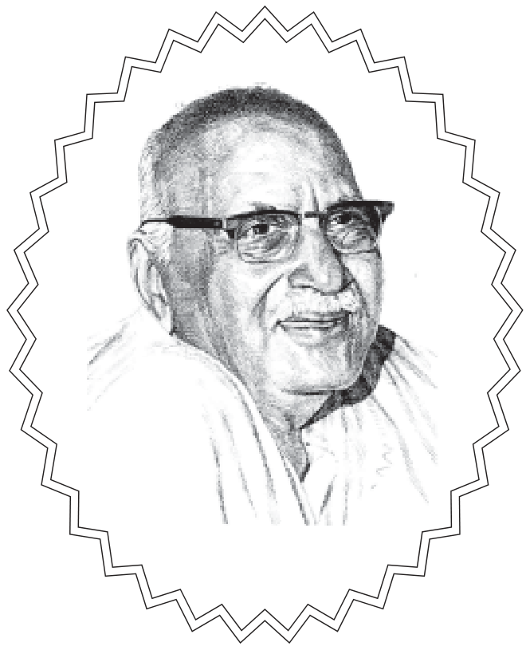

॥ श्रीहरिः ॥
जैसा बीज वैसा फल

हनुमानप्रसाद पोद्दार
गीतावाटिका प्रकाशन, गीतावाटिका - गोरखपुर के मूल ग्रंथ
— सरल एवं सुगम पठन के लिए नवीन प्रस्तुति।
॥ ॐ श्रीपरमात्मने नमः ॥
नम्र निवेदन
भगवान्, धर्म, परलोक, पुनर्जन्म, कर्मफलभोग आदिपर उत्तरोत्तर विश्वास कम होता रहनेके कारण आज मानव-जीवनमें उच्छुङ्खुलता, यथेच्छाचारिता, भोगपरायणता, सत्कर्मोंमें उपेक्षा, दुष्कर्मोमें प्रीति आदि महान् दोष आ गये हैं और क्रमशः उनकी वृद्धि हो रही है। यही कारण है--जगतमें इतनी वैज्ञानिक उन्नति होनेपर भी दुःख-क्लेश, मान-अशान्ति उत्तरोत्तर बढ़ते जा रहे हैं। इस पतनके प्रवाहको वस्तुतः रोकना तो भगवान्के ही हाथ है। उन्हींकी कृपासे जब मनुष्यको बुद्धिका ठीक निर्णय होगा और जब वह असत्-भोगोंके भविष्य-भीषण किंतु आपातरमणीय क्षेत्रसे हटकर भगवानको सेवाके पथपर आरूढ़ होगा, तभी वह धर्मक्षेत्रको अपना नित्य निवास-स्थान बना सकेगा। तथापि भगवानके तथा शास्त्रोके आदेशानुसार प्रयत्न करना आवश्यक है और धर्म तथा कर्तव्य भी है।
इसमें आये हुए विषयोंका ठीक-ठीक अध्ययन किया जानेपर, परलोक तथा पुनर्जन्ममें एवं कर्मफलभोगके सिद्धान्तमें विश्वास बढ़ना अनिवार्य है और उस विश्वाससे पतनके प्रवाहमें किसी अंशमें कुछ रुकावट आना भी सम्भव है। यद्यपि पतनके प्रवाहका वेग इतना प्रबल और भयानक है कि छोटी-मोटी बाधासे उसका रुकना सम्भव नहीं है, तथापि यदि कुछ लोग भी इससे बचेंगे तो उनको तो लाभ होगा ही, फिर उनके संसर्गसे दूसरोंको भी परम्परागत लाभ होना सम्भव है।
जैसा बीज, बहुतसे होते फल वैसे ही; उसी प्रकार।
कर्मबीज होता जैसा, फल भी होते उसके अनुसार॥
इह-परलोक चाहते यदि तुम नित्य परम सुख-शान्ति अपार।
सावधान रह, करो सतत शुभ कर्म पुण्य आचार उदार॥
(संकलित)
॥ ॐ श्रीपरमात्मने नमः ॥
१. जीवकी मृत्यु तथा नरककी गति
(पिता-पुत्र संवाद)
जैमिनिने पूछा- श्रेष्ठ पक्षियों ! प्राणियोंकी उत्पत्ति और लय कहाँ होते हैं? इस विषयमें मुझे सन्देह है। मेरे प्रश्नके अनुसार आपलोग इसका समाधान करें। जीव कैसे जन्म लेता है? कैसे मरता है? और किस प्रकार गर्भमे पीड़ा सहकर माताके उदरमें निवास करता है? फिर गर्भसे बाहर निकलनेपर वह किस प्रकार बुद्धिको प्राप्त होता है? और मृत्युकालमें किस तरह चैतन्यस्वरूपके द्वारा शरीरसे विलग होता है। सभी प्राणी मृत्युके पश्चात् पुण्य और पाप दोनोंका फल भोगते हैं; किन्तु वे पुण्य और पाप किस प्रकार अपना फल देते हैं? ये सारी बातें मुझे बताइये, जिससे मेरा सब सन्देह दूर हो जाय।
पक्षी बोले--महर्षे ! आपने हमलोगोंपर बहुत बड़े प्रश्नका भार रख दिया। इसकी कहीं तुलना नहीं है। महाभाग! इस विषयमें एक प्राचीन वृत्तान्त सुनिये । पूर्वकालमें एक परम बुद्धिमान् भृगुवंशी ब्राह्मण थे। उनके सुमति नामका एक पुत्र था। वह बड़ा ही शान्त और जड़रूपमें रहनेवाला था। उपनयन-संस्कार हो जानेके बाद उस बालकसे उसके पिताने कहा-‘सुमते! तुम सभी वेदोंको क्रमशः आद्योपान्त पढ़ो, गुरुकी सेवामें लगे रहो और भिक्षाके अन्नका भोजन किया करो। इस प्रकार ब्रह्मचर्यकी अवधि पूरी करके गृहस्थाश्रममें प्रवेश करो और वहाँ उत्तम-उत्तम यज्ञोंका अनुष्ठान करके अपने मनके अनुरूप सन्तान उत्पन्न करो। तदनन्तर वनको शरण लो और वानप्रस्थके नियमोंका पालन करनेके पश्चात् परिग्रहरहित, सर्वस्वत्यागी संन्यासी हो जाओ। ऐसा करनेसे तुम्हें उस ब्रह्मकी प्राप्ति होगी, जहाँ जाकर तुम शोकसे मुक्त हो जाओगे।’
इस प्रकार अनेकों बार कहनेपर भी सुमति जड़ होनेके कारण कुछ भी नहीं बोलता था। पिता भी स्नेहवश बारंबार अनेक प्रकारसे ये बातें उसके सामने रखते थे। उन्होंने पुत्र-प्रेमके कारण मीठी वाणीमें अनेक बार उसे लोभ दिखाया। इस प्रकार उनके बार-बार कहनेपर एक दिन सुमतिने हँसकर कहा- पिताजी! आज आप जो उपदेश दे रहे हैं, उसका मैंने बहुत बार अभ्यास किया है। इसी प्रकार दूसरे-दूसरे शास्त्रों और भाँति-भाँतिकी शिल्पकलाओंका भी सेवन किया है। इस समय मुझे अपने दस हजारसे भी अधिक जन्म स्मरण हो आये हैं। खेद, सन्तोष, क्षय, वृद्धि और उदयका भी मैंने बहुत अनुभव किया है। शत्रु, मित्र और पत्नीके संयोग-वियोग भी मुझे देखनेको मिले हैं। अनेक प्रकारके माता-पिताके भी दर्शन हुए हैं। मैंने हजारों बार सुख और दुःख भोगे हैं। कितनी ही स्त्रियोंके विष्ठा और मूत्रसे भरे हुए गर्भमें निवास किया है। सहस्रं प्रकारके रोगोंकी भयानक पीड़ाएँ सहन की हैं। गर्भावस्थामें मैंने जो अनेकों प्रकारके दुःख भोगे हैं, बचपन, जवानी और बुढ़ापेमें भी जो क्लेश सहन किये हैं, वे सब मुझे याद आ रहे हैं। ब्राह्मण, क्षत्रिय, वैश्य और शूद्रॉंकी योनिमें, फिर पशु, मृग, कीट और पक्षियोंकी योनियोंमें तथा राजसेवकों एवं युद्धमें पराक्रम दिखानेवाले राजाओंके घरोंमें भी मेरे कई बार जन्म हो चुके हैं। इसी तरह अबकी बार आपके घरमें भी मेंने जन्म लिया है। मैं बहुत बार मनुष्योंका भृत्य, दास, स्वामी, ईश्वर और दरिद्र रह चुका हूँ। दूसरोंने मुझे और मैंने दूसरोंको अनेक बार दान दिये हैं। पिता, माता, सुहृद, भाई और स्त्री इत्यादिके कारण कई बार संतुष्ट हुआ हूँ और कई बार दीन हो-होकर रोते हुए मुझे आँसुओंसे मुँह धोना पड़ा है। पिताजी! यों ही इस संसार-चक्रमें भटकते हुए मैंने अब वह ज्ञान प्राप्त किया है, जो मोक्षकी प्राप्ति करानेवाला है। उस ज्ञानको प्राप्त कर लेनेपर अब यह ऋक्, यजु और सामवेदोक्त समस्त क्रिया-कलाप गुणशून्य दिखायी देनेके कारण मुझे अच्छा नहीं लगता। अतः जब ज्ञान प्राप्त हो गया तब वेदोंसे मुझे क्या प्रयोजन है। अब तो मैं गुरु-विज्ञानसे परितृप्त, निरीह एवं सदात्मा हूँ। अतः छः प्रकारके भावविकार (जन्म, सत्ता, वृद्धि, परिणाम, क्षय और नाश) दुःख, सुख, हर्ष, राग तथा सम्पूर्ण गुणोंसे वर्जित उस परमपदरूप ब्रह्मको प्राप्त होऊँगा। पिताजी! जो राग, हर्ष, भय, उद्वेग, क्रोध, अमर्ष और वृद्धावस्थासे व्याप्त है तथा कुत्ते, मृग आदिकी योनिमें बाँधनेवाले सैकड़ों बन्धनोंसे युक्त है, उस दुःखको परम्पराका परित्याग करके अब मैं चला जाऊँगा।”
पुत्रको यह बात सुनकर महाभाग पिताका हृदय प्रसन्नतासे भर गया। उन्होंने हर्ष और विस्मयसे गढूद वाणीमें अपने पुत्रसे कहा- बेटा! तुम यह क्या कहते हो? तुम्हें कहाँसे ज्ञान प्राप्त हो गया? पहले तुममें जड़ता क्यों थी और इस समय ज्ञान कहाँसे जग उठा? क्या यह मुनियों अथवा देवताओंके दिये हुए शापका विकार था, जिससे पहले तुम्हारा ज्ञान छिप गया था और इस समय पुनः प्रकट हो गया? मैं यह सारा रहस्य सुनना चाहता हूँ। इसके लिये मेरे मनमें बड़ा कौतूहल है। बेटा! तुमपर पहले जो कुछ बीत चुका है, वह सब मुझे बताओ।”
पुत्रने कहा--पिताजी! मेरा जो यह सुख और दुःख देनेवाला पूर्व वृत्तान्त है, उसे सुनिये। इस जन्मके पहले पूर्वजन्ममें मैं जो कुछ था, वह सब बताता हूँ । पूर्वकालमें मैं परमात्माके ध्यानमें मन लगानेवाला एक ब्राह्मण था। आत्मविद्याके विचारमें मैं पराकाष्ठाको पहुँचा हुआ था। मैं सदा योगसाधनमें संलग्न रहता था। निरन्तर अभ्यासमें लगने, सत्पुरुषोंका सङ्ग करने, अपने स्वभावसे ही विचार-परायण होने, तत्त्वमसि आदि महावाक्योंके विचारने और तत्पदार्थके शोधन करने आदिके कारण उस परमात्मतत्त्वमें ही मेरी परम प्रीति हो गयी। फिर में शिष्योंके सन्देहका निवारण करनेवाला आचार्य बन गया। फिर बहुत समयके पश्चात् में एकान्तसेवी हो गया; किन्तु दैवात् अज्ञानसे सद्भावका नाश हो जानेके कारण प्रमादमें पड़कर मेरी मृत्यु हो गयी। तथापि मृत्युकालसे लेकर अबतक मेरी स्मरणशक्तिका लोप नहीं हुआ। मेरे जन्मोंके जितने वर्ष बीत गये हैं, उन सबकी स्मृति हो आयी है। पिताजी! उस पूर्वजन्मके अभ्याससे ही जितेन्द्रिय होकर अब फिर मैं वैसा ही यत्न करूँगा, जिससे भविष्यमें फिर मेरा जन्म न हो। मैंने जो दूसरोंको ज्ञान दिया था, उसीका यह फल है कि मुझे पूर्व जन्मकी बातोंका स्मरण हो रहा है। केवल त्रयीधर्म (कर्मकाण्ड) का सहारा लेनेवाले मनुष्योंको इसकी प्राप्ति नहीं होती, अतः मैं इस प्रथम आश्रमसे ही संन्यास-धर्मका आश्रय ले एकान्तसेवी हो आत्माके उद्धारके लिये यत्न करूँगा। अतः महाभाग! आपके हदयमें जो संशय है, उसे कहिये। मैं उसका समाधान करूँगा। इतनी-सी सेवासे भी आपकी प्रसन्नताका सम्पादन करके मैं पिताके ऋणसे मुक्त हो सकूँगा।
पक्षी कहते हैं--तब पुत्रकी बातपर श्रद्धा करते हुए पिताने उससे वही बात पूछी, जो आपने अभी संसारमें जन्म ग्रहण करनेके सम्बन्धमें हमलोगोंसे पूछी है।
पुत्रने कहा--पिताजी! जिस प्रकार मैंने तत्त्वका बारंबार अनुभव किया है, उसे बतलाता हूँ; सुनिये। यह क्षणभंगुर संसार-चक्र प्रवाहरूपसे अजर है, निरन्तर चलते रहनेवाला है, कभी स्थिर नहीं रहता। तात! आपकी आज्ञासे मैं मृत्युकालसे लेकर अबतककी सब बातोंका वर्णन करता हूँ। शरीरमें जो गर्मी या पित्त है वह तीव्र वायुसे प्रेरित होकर जब अत्यन्त कुपित हो जाता है, उस समय बिना ईंधनके ही उद्दीस हुई अग्रिकी भाँति बढ़कर मर्म स्थानोंको विदीर्ण कर देता है, तत्पश्चात् उदान नामक वायु ऊपरकी ओर उठता है और खाये-पीये हुए अन्न-जलको नीचेकी ओर जानेसे रोक देता है। उस आपत्तिकी अवस्थामें भी उसीको प्रसन्नता रहती है, जिसने पहले जल, अन्न एवं रसका दान किया है। जिस पुरुषने श्रद्धासे पवित्र किये हुए अन्तःकरणके द्वारा पहले अन्नदान किया है, वह उस रुग्णावस्थामें अन्नके बिना भी तृप्ति लाभ करता है। जिसने कभी मिथ्या भाषण नहीं किया, दो प्रेमियोंके पारस्परिक प्रेममें बाधा नहीं डाली तथा जो आस्तिक और श्रद्धालु है, वह सुखपूर्वक मृत्युको प्राप्त होता है। जो देवता और ब्राह्मणोंकी पूजामें संलग्न रहते, किसीकी निन्दा नहीं करते, तथा सात्विक, उदार और लज्जाशील होते हैं, ऐसे मनुष्योंको मृत्युके समय कष्ट नहीं होता। जो कामनासे, क्रोधसे अथवा द्वेषके कारण धर्मका त्यागका नहीं करता, शास्त्रोक्त आज्ञाका पालन करनेवाला तथा सौम्य होता है, उसकी मृत्यु भी सुखसे होती है। जिन्होंने कभी जलका दान नहीं किया है, उन मनुष्योंको मृत्युकाल उपस्थित होनेपर अधिक जलन होती है तथा अन्नदान न करनेवालोंको उस समय भूखका भारी कष्ट भोगना पड़ता है। जो लोग जाड़ोंके दिनोंमें लकड़ी दान करते हैं, वे तापपर विजय पाते हैं तथा जो किसी भी जीवको उद्वेग नहीं पहुँचाते, वे मृत्युकालमें प्राणघातिनी वेदनाका अनुभव नहीं करते। मोह और अज्ञान फैलानेवाले लोग महान् भयको प्राप्त होते हैं। नीच मनुष्य तीव्र वेदनाओंसे पीड़ित होते रहते हैं। जो झूठी गवाही देते, झूठ बोलते, बुरी बातोंका उपदेश देते और वेदोंकी निन्दा करते हैं, वे सब लोग मूर्च्छाग्रस्त होकर मृत्युको प्राप्त होते हैं।
ऐसे लोगोंकी मृत्युके समय यमराजके दुष्ट दूत हाथोंमें हथौड़ी एवं मुद्रर लिये आते हैं, वे बड़े भयंकर होते हैं और उनकी देहसे दुर्गन्ध निकलती रहती है। उन यमदूतोंपर दृष्टि पड़ते ही मनुष्य काँप उठता है और भ्राता, माता तथा पुत्रोंका नाम लेकर बांरबार चिल्लाने लगता है। उस समय उसकी वाणी स्पष्ट समझमें नहीं आती। एक ही शब्द, एक ही आवाज-सी जान पड़ती है और उसका मुख सूख जाता है। उसकी साँस ऊपरको उठने लगती है। दृष्टिकी शक्ति भी नष्ट हो जाती है, फिर वह अत्यन्त वेदनासे पीड़ित होकर उस शरीरको छोड़ देता है और वायुके सहारे चलता हुआ वैसे ही दूसरे शरीरको धारण कर लेता है, जो रूप, रंग और अवस्थामें पहले शरीरके समान ही होता है। वह शरीर माता-पिताके गर्भसे उत्पन्न नहीं, कर्मजनित होता है, और यातना भोगनेके लिये ही मिलता है। तदनन्तर यमराजके दूत शीघ्र ही उसे दारुण पाशोंसे बाँध लेते हैं और डंडीकी मारसे व्याकुल करते हुए दक्षिण दिशाको ओर खींच ले जाते हैं। उस मार्गपर कहीं तो कुश जमे होते हैं, कहीं काँटे फैले होते हैं, कहीं बाँबीकी मिट्टियाँ जमी होती हैं, कहीं लोहेको कीलें गड़ी होती हैं और कहीं पथरीली भूमि होनेके कारण वह पथ अत्यन्त कठोर जान पड़ता है। कहीं जलती हुई आगकी लपटें मिलती हैं तो कहीं सैकड़ों गड्डॉंकें कारण वह मार्ग अत्यन्त दुर्गम प्रतीत होता है। कहीं सूर्य इतने तपते हैं कि उस राहसे जानेवाला जीव उनकी किरणोंसे जलने लगता है। ऐसे पथसे यमराजके दूत उसे घसीटकर ले जाते हैं। वे दूत घोर शब्द करनेके कारण अत्यन्त भयङ्कर जान पड़ते हैं। जिस समय वे जीवको घसीटकर ले जाते हैं, सैकड़ों गीदड़ियाँ जुटकर उसके शरीरको नोच-नोचकर खाने लगती हैं। पापी जीव ऐसे ही भयंकर मार्गसे यमलोककी यात्रा करते हैं।
जो मनुष्य छाता, जूता, वस्त्र और अन्न-दान करनेवाले होते हैं, वे उस मार्गपर सुखसे यात्रा करते हैं। इस प्रकार अनेक प्रकारके कष्ट भोगता हुआ पापपीड़ित जीव विवश होकर बारह दिनोंमें धर्मराजके नगरतक पहुँचाया जाता है। उसके यातनामय शरीरके जलाये जानेपर जीव स्वयं भी अत्यन्त दाहका अनुभव करता है, उसी प्रकार मारे और काटे जानेपर भी उसे अत्यन्त भयङ्कर वेदना होती है। अधिक देरतक जलमें भिगोये जानेके कारण भी जीवको भारी दुःख उठाना पड़ता है। इस प्रकार दूसरे शरीरको प्राप्त होनेपर भी उसे अपने कर्मोके फलस्वरूप कष्ट भोगने पड़ते हैं। उसके भाई-बन्धु जो तिल और जलकी अञ्जलि देते तथा पिण्डदान करते हैं, वही उस मार्गपर जाते समय उसे खानेको मिलता है। भाई-बन्धु यदि अशौचके भीतर तेल लगावें और उबटन मलवावें तो उसीसे जीवका पोषण किया जाता है अर्थात् वह मैल ही उन्हें खानी पड़ती है [अतः ये वस्तुएँ वर्जित हैं]। इसी प्रकार बान्धवगण जो कुछ खाते-पीते हैं, वह मृतक जीवको मिलता है; अतः उन्हें भोजनकी शुद्धिपर भी ध्यान रखना चाहिये। यदि भाई-बन्धु भूमिपर शयन करें तो उससे जीवको कष्ट नहीं होता और यदि वे उसके निमित्त दान करें तो उससे मृत जीवको बड़ी तृप्ति होती है। यमदूत जब उसे साथ लेकर जाते हैं, तो वह बारह दिनोंतक अपने घरकी ओर देखता रहता है। उस समय पृथ्वीपर उसके निमित्त जो जल और पिण्ड दिये जाते हैं, उन्हींका वह उपभोग करता है।
तत्रा यह्वान्धवास्तोयं प्रयच्छन्ति तिलैः सह।
यच्चा पिण्डं प्रयच्छन्ति नीयमानस्तदश्रते ॥
तैलाभ्यङ्गो बान्धवानामङ्गसंवाहनं च यत् ।
तेन चाप्याय्यते जन्तुर्यच्याश्चन्ति स्वबान्धवाः ॥
भूमौ स्वपद्धिर्नात्यन्त॑ क्लेशमाप्ोति बान्धवैः।
दानं ददद्भिश्च तथा जन्तुराप्याय्यते मृतः॥
नीयमानः स्वकं गेहं द्वादशाहं स पश्यति।
उपभुङ्क्ते तथा दत्तं तोयपिण्डादिकं भुवि॥
(अ० १०/७३-७६)
मृत्युसे बारह दिन बीतनेके पश्चात् यमपुरीको ओर खींचकर ले जाया जानेवाला जीव अपने सामने यमराजके नगरको देखता है, जो बड़ा ही भयानक है। उस नगरमें पहुँचनेपर उसे मृत्यु, काल और अन्तक आदिके बीचमें बैठे हुए यमराजका दर्शन होता है, जो कज्जलराशिके समान काले हैं और अत्यन्त क्रोधसे लाल आँखें किये रहते हैं। दाढ़ोंके कारण उनका मुख बड़ा विकराल दिखलायी पड़ता है। टेढ़ी भौंहोंसे युक्त उनकी आकृति बड़ी भयङ्कर है। वे कुरूप, भीषण और टेढ़े-मेढ़े सैकड़ों रोगोंसे घिरे रहते हैं। उनकी भुजाएँ विशाल हैं। उनके एक हाथमें यमदण्ड और दूसरेमें पाश है। देखनेमें वे बड़े भयानक प्रतीत होते हैं। पापी जीव उन्हींकी बतायी हुई शुभाशुभ गतिको प्राप्त होता है। झूठी गवाही देने और झूठ बोलनेवाला मनुष्य रौरव नरकमें जाता है। अब मैं रौरवका स्वरूप बतलाता हूँ, आप ध्यान देकर उसे सुनें। रौरव नरककी लंबाई-चौड़ाई दो हजार योजनको है। वह एक गड़ेके रूपमें है, जिसकी गहराई घुटनोंतककी है। वह नरक अत्यन्त दुस्तर है। उसमें भूमिके बराबरतक अआज्ारणशि बिछी रहती है। उसके भीतरकी भूमि दहकते हुए अङ्गारोंसे बहुत तपी होती है। सारा नरक तीव्रवेगसे प्रज्वलित होता रहता है। उसीके भीतर यमराजके दूत पापी मनुष्यको डाल देते हैं। वह धधकती हुई आगमें जलने लगता है, तो इधर-उधर दौड़ता है, किन्तु पग-पगपर उसका पैर जल-भुनकर राख होता रहता है। वह दिन-रातमें कभी एक बार पैर उठाने और रखनेमें समर्थ होता है। इस प्रकार सहस्त्रों योजन पार करनेपर वह उससे छुटकारा पाता है। फिर दूसरे पापोंकी शुद्धिके लिये उसे वैसे ही अन्य नरकोंमें जाना पड़ता है। इस प्रकार सब नरकों में यातना भोगकर निकलनेके बाद पापी जीव तिर्यग्योनिमें जन्म लेता है। क्रमशः कीड़े-मकोड़े, पतङ्ग, हिंसक जीव, मच्छर, हाथी, वृक्ष आदि, गौ, अश्व तथा अन्यान्य दुःखदायिनी पापयोनियोंमें जन्म धारण करनेके पश्चात् वह मनुष्य-योनिमें आता है। उसमें भी वह कुरूप, कुबड़ा, नाटा और चाण्डाल आदि होता है। फिर अवशिष्ट पाप और पुण्यसे युक्त हो, वह क्रमशः ऊँचे चढ़नेवाली योनियोंमें जन्म लेता-शूद्र, वैश्य, ब्राह्मण, देवता तथा इन्द्र आदिके रूपमें उत्पन्न होता है।
इस प्रकार पाप करनेवाले जीव नरकोंमें नीचे गिरते हैं। अब पुण्यात्मा जीव जिस प्रकार यात्रा करते हैं, उसको सुनिये; वे पुण्यात्मा मनुष्य धर्मराजको बतायी हुई पुण्यमयी गतिको प्राप्त होते हैं। उनके साथ गन्धर्व गीत गाते चलते हैं, अप्सराएँ नृत्य करती रहती हैं, तथा वे भाँति-भाँतिके दिव्य आभूषणोंसे सुशोभित हो सुन्दर विमानोंपर बैठकर यात्रा करते हैं। वहाँसे पृथ्वीपर आनेपर वे राजाओं तथा अन्य महात्माओंके कुलमें जन्म लेते और सदाचारका पालन करते हैं। वहाँ उन्हें श्रेष्ठ भोग प्राप्त होते हैं। तदनन्तर शरीर त्यागनेके बाद वे पुनः स्वर्ग आदि ऊपरके लोकोंमें जाते हैं। ऊपरके लोकोंमें होनेवाली गतिको ‘आरोहणी’ कहते हैं। फिर वहाँसे पुण्यभोगके पश्चात् जो मृत्युलोकमें उतरना होता है, वह ‘अवरोहणी’ गति है। इस अवरोहणी गतिको प्राप्त होनेपर मनुष्य फिर पहलेकी ही भाँति आरोहणी गतिको प्राप्त होते हैं। ब्रह्मर्षे! जीवकी जिस प्रकार मृत्यु होती है, वह सब प्रसङ्ग मैंने आपसे कह सुनाया। अब जिस तरह जीव गर्भमें आता है, उस विषयका वर्णन सुनिये।
जीवके जन्म वृत्तान्त तथा महारौरव आदि नरकोंका वर्णन
पुत्र कहता है--पिताजी! मनुष्य स्त्री-सहवासके समय गर्भमें जो वीर्य स्थापित करता है, वह स्त्रीके रजमें मिल जाता है। नरक अथवा स्वर्गसे निकलकर आया हुआ जीव उसी रज-वीर्यका आश्रय लेता है। जीवसे व्याप्त होनेपर वे दोनों बीज (स्त्री और पुरुष दोनोंका रज-वीर्य) स्थिर हो जाते हैं। फिर वे क्रमशः कलल बुदुद एवं मांसपिण्डके रूपमें परिणत होते हैं । जैसे बीजसे अंकुर उत्पन्न होता है, उसी प्रकार उस मांसपिण्इसे विभागपूर्वक पाँच अङ्ग प्रकट होते हैं। फिर उन अङ्गोंसे अँगुली, नेत्र, नासिका, मुख, कान आदि प्रकट होते हैं। इसी प्रकार अँगुली आदिसे नख आदिकी उत्पत्ति होती है। फिर त्वचामें रोम और मस्तकपर बाल उग आते हैं। जीवके शरीरकी वृद्धिके साथ ही स्त्रीका गर्भकोष भी बढ़ता है। जैसे नारियलका फल अपने आवरण-कोषके साथ ही बढ़ता है, उसी प्रकार गर्भस्थ शिशु भी गर्भकोषके साथ ही वृद्धिको प्राप्त होता है। उसका मुख नीचेकी ओर होता है। दोनों हाथोंको घुटनों और पसलियोंके नीचे रखकर वह बढ़ता है। हाथके दोनों अँगूठे दोनों घुटनोंके ऊपर होते हैं और अँगुलियाँ उनके अग्रभागमें रहती हैं। उन घुटनोंके पृष्ठभागमें दोनों आँखें रहती हैं और नासिका उनके मध्यभागमें होती है। दोनों चूतड़ ऐडियोंपर टिके होते हैं। दोनों बाँहें और पिंडलियाँ बाहरी किनारेपर रहती हैं। इसी स्थितिमें स्त्रीके गर्भमें रहनेवाला जीव क्रमशः वृद्धिको प्राप्त होता है। गर्भस्थ शिशुकी नाभिमें एक नाल बँधी होती है, जिसे आप्यायनी नाड़ी कहते हैं। इसी प्रकार वह नाल स्त्रीको आँतके छिद्रमें भी जुड़ी होती है। स्त्री जो कुछ खाती-पीती है, वह उस नाड़ीके ही मार्गसे गर्भस्थ शिशुके भी उदरमें पहुंचता है। उसीसे शरीरका पोषण होते रहनेसे जीव क्रमशः वृद्धिको प्राप्त होता है। उस गर्भमें उसे अनेक जन्मोंकी बातें याद आती हैं, जिससे व्यथित होकर वह इधर-उधर फिरता और निर्वेद (खेद)को प्राप्त होता है। अपने मनमें सोचता है, ‘अब इस उदरसे छुटकारा पानेपर मैं फिर ऐसा कार्य नहीं करूँगा, बल्कि इस बातके लिये चेष्टा करूँगा कि मुझे फिर गर्भके भीतर न आना पड़े।’ सैकड़ों जन्मोंके दुःखोंका स्मरण करके वह इसी प्रकार चिन्ता करता है। दैवकी प्रेरणासे पूर्वजन्मोंमें उसने जो-जो क्लेश भोगे होते हैं, वे सब उसे याद आ जाते है। तत्पश्चात् कालक्रमसे वह अधोमुख जीव जब नवें या दसवें महीनेका होता है, तब उसका जन्म हो जाता है। गर्भसे निकलते समय वह प्राजापत्य वायुसे पीड़ित होता है और मन-ही-मन दुःखसे व्यथित हो रोते हुए गर्भसे बाहर आता है। उदरसे निकलनेपर असह्य पीड़ाके कारण उसे मूर्च्छा आ जाती है। फिर वायुके स्पर्शसे वह सचेत होता है। तदनन्तर भगवान् विष्णुको मोहिनी माया उसको अपने वशमें कर लेती है। उससे मोहित हो जानेके कारण उसका पूर्वज्ञान नष्ट हो जाता है। इस प्रकार ज्ञानभ्रष्ट हो जानेपर वह जीव पहले तो बाल्यावस्थाको प्राप्त होता है, फिर क्रमशः कौमारावस्था, यौवनावस्था और वृद्धावस्थामें प्रवेश करता है। इसके बाद मृत्युको प्राप्त होता और मृत्युके बाद फिर जन्म लेता है। इस प्रकार इस संसारचक्रमें वह घटीयन्त्र (रहट) की भाँति घूमता रहता है। कभी स्वर्गमें जाता है, कभी नरकमें। कभी इस संसारमें पुनः जन्म लेकर अपने कर्मोको भोगता है, कभी कर्मोका भोग समाप्त होनेपर थोड़े ही समयमें मरकर परलोकमें चला जाता है। कभी स्वर्ग और नरकको प्रायः भोग चुकनेके बाद थोड़ेसे शुभाशुभ कर्म शेष रहनेपर इस संसारमें जन्म लेता है।
नारको जीव घोर दुःखदायी नरकोंमें गिराये जाते हैं। स्वर्गमें भी ऐसा दुःख होता है, जिसकी कहीं तुलना नहीं है। स्वर्गमें पहुँचनेके बादसे ही मनमें इस बातको चिन्ता बनी रहती है कि पुण्यक्षय होनेपर हमें यहाँसे नीचे गिरना पड़ेगा। साथ ही नरकमें पड़े हुए जीवोंको देखकर महान् दुःख होता है कि कभी हमें भी ऐसी ही दुर्गति भोगनी पड़ेगी। इस बातसे दिन-रात अशान्ति बनी रहती है। गर्भवासमें तो भारी दुःख होता ही है, योनिसे जन्म लेते समय भी थोड़ा क्लेश नहीं होता। जन्म लेनेके पश्चात् बाल्यावस्था और वृद्धावस्थामें भी दुःख ही दुःख भोगना पड़ता है। जवानीमें भी काम-क्रोध और ईर्ष्यामें बँधे रहनेके कारण अत्यन्त दुःस्सह कष्ट उठाना पड़ता है। बुढ़ापेमें तो अधिकांश दुःख ही होता है। मरनेमें भी सबसे अधिक दुःख है। यमदूतोंद्वारा घसीटकर ले जाये जाने और नरकमें गिराये जानेपर जो महान् क्लेश होता है, उसकी चर्चा हो चुकी है। यहाँसे लौटनेपर फिर गर्भवास, जन्म, मृत्यु तथा नरकका क्रम चालू हो जाता है। इस तरह जीव प्राकृत बन्धनोंमें बँधकर घटीयन्त्रको भाँति इस संसारचक्रमें घूमते रहते हैं ।
पिताजी ! मैंने आपसे रौरव नामक प्रथम नरकका वर्णन किया है। अब महारौरवका वर्णन सुनिये-इसका विस्तार सब ओरसे बारह हजार योजन है। वहाँको भूमि ताँबेकी है, जिसके नीचे आग धधकती रहती है। उसकी आँचसे तपकर वह सारी ताम्रमयी भूमि चमकती हुई बिजलीके समान ज्योतिर्मय दिखायी देती है। उसको ओर देखना और स्पर्श आदि करना अत्यन्त भयङ्कर है। यमराजके दूत हाथ और पैर बाँधकर पापी जीवको उसके भीतर डाल देते हैं और वह लोटता हुआ आगे बढ़ता है। मार्गमें कौवे, बगुले, बिच्छू, मच्छर और गिद्ध उसे जल्दी-जल्दी नोच खाते हैं। उसमें जलते समय वह व्याकुल हो-होकर छटपटाता है और बारंबार अरे बाप! अरे मैया! अरे भैया! हा तात!’ आदिकी रट लगाता हुआ करुण क्रन्दन करता है, किन्तु उसे तनिक भी शान्ति नहीं मिलती। इस प्रकार उसमें पड़े हुए जीव, जिन्होंने दूषित बुद्धिके कारण पाप किये हैं, दस करोड़ वर्ष बीतनेपर उससे छुटकारा पाते हैं। इसके सिवा तम नामक एक दूसरा नरक है, जहाँ स्वभावसे ही कड़ाकेकी सर्दी पड़ती है। उसका विस्तार भी महारौरवके ही बराबर है, किन्तु वह घोर अन्धकारसे आच्छादित रहता है। वहाँ पापी मनुष्य सर्दीसे कष्ट पाकर भयानक अन्धकारमें दौड़ते हैं और एक दूसरेसे भिड़कर लिपटे रहते हैं। जाड़ेके कष्टसे काँपकर कटकटाते हुए उनके दाँत टूट जाते हैं। भूख-प्यास भी वहाँ बड़े जोरकी लगती है। इसी प्रकार अन्यान्य उपद्रव भी होते रहते हैं। ओलोंके साथ बहनेवाली भयङ्कर वायु शरीरमें लगकर हड्डियोंको चूर्ण किये देती है और उनसे जो मज्जा तथा रक्त गिरता है, उसीको वे क्षुधातुर प्राणी खाते हैं। एक-दूसरेके शरीरसे सटकर वे परस्पर रक्त चाटा करते हैं। इस प्रकार जबतक पापोंका भोग समाप्त नहीं हो जाता, तबतक वहाँ भी मनुष्योंको अन्धकारमें महान् कष्ट भोगना पड़ता है।
इससे भिन्न एक निकृन्तन नामक नरक है, जो सब नरकोंमें प्रधान है। उसमें कुम्हारकी चाकके समान बहुतसे चक्र निरन्तर घूमते रहते हैं। यमराजके दूत पापी जीवोंको उन चक्रोंपर चढ़ा देते और अपनी अँगुलियोंमें कालसूत्र लेकर उसीके द्वारा उनके पैरसे लेकर मस्तकतक प्रत्येक अङ्ग काटा करते हैं। फिर भी उन पापियोंके प्राण नहीं निकलते। उनके शरीरके सैकड़ों टुकड़े हो जाते हैं, किन्तु फिर वे जुड़कर एक हो जाते हैं। यह यातना उन्हें तबतक दी जाती है, जबतक कि उनके सारे पापोंका नाश नहीं हो जाता। अब अप्रतिष्ठ नामक नरकका वर्णन सुनिये, जिसमें पड़े हुए जीवोंको असह्य दुःखका अनुभव करना पड़ता है। वहाँ भी वे ही कुलालचक्र होते हैं; साथ ही दूसरी ओर घटीयन्त्र भी बने होते हैं, जो पापी मनुष्योंको दुःख पहुँचानेके लिये बनाये गये हैं। वहाँ कुछ मनुष्य उन चक्रोंपर चढ़ाकर घुमाये जाते हैं। हजारों वर्षोंतक उन्हें बीचमें विश्राम नहीं मिलता। इसी प्रकार दूसरे पापी घटीयन्त्रोंमें बाँध दिये जाते हैं, ठीक उसी तरह, जैसे रहटमें छोटे-छोटे घड़े बँधे होते हैं। वहाँ बँधे हुए मनुष्य उन यन्त्रोंके साथमें जब घूमने लगते हैं, तो बारंबार रक्त वमन करते हैं। उनके मुखसे लार गिरती है और नेत्रोंसे अश्रु झरते रहते हैं। उस समय उन्हें इतना दुःख होता है, जो जीवमात्रके लिये असह्य है।
अब असिपत्रवन नामक अन्य नरकका वर्णन सुनिये-जहाँ एक हजार योजनतककी भूमि प्रज्वलित अग्निसे आच्छादित रहती है तथा ऊपरसे सूर्यकी अत्यन्त भयङ्कर एवं प्रचण्ड किरणें ताप देती हैं, जिनसे उस नरकमें निवास करनेवाले जीव सदा सन्तप्त होते रहते हैं। उसके बीचमें एक बहुत ही सुन्दर वन है, जिसके पत्ते चिकने जान पड़ते हैं; किन्तु वे सभी पत्ते तलवारकी तीखी धारके समान हैं। उस वनमें बड़े बलवान कुत्ते भौंकते रहते हैं, जो दस हजारकी संख्यामें सुशोभित होते हैं। उनके मुख और दाढ़ें बड़ी-बड़ी होती हैं। वे व्याघ्रोंके समान भयानक प्रतीत होते हैं। वहाँकी भूमिपर जो आग बिछी होती है, उससे जब दोनों पैर जलने लगते हैं तब वहाँ गये हुए पापी जीव ‘हाय माता! हाय पिता!’ आदि कहते हुए अत्यन्त दुःखित होकर कराहने लगते हैं। उस समय तीव्र पिपासाके कारण उन्हें बड़ी पीड़ा होती है, फिर अपने सामने शीतल छायासे युक्त असिपत्र वनको देखकर वे प्राणी विश्रामकी इच्छासे वहाँ जाते हैं। उनके वहाँ पहुँचनेपर बड़े जोरकी हवा चलती है, जिससे उनके ऊपर तलवारके समान तीखे पत्ते गिरने लगते हैं। उनसे आहत होकर वे पृथ्वीपर जलते हुए अँगारोंके ढेरमें गिर पड़ते हैं। वह आग अपनी लपटोंसे सर्वत्र व्याप्त हो सम्पूर्ण भूतलको चाटती हुई-सी जान पड़ती है। इसी समय अत्यन्त भयानक कुत्ते वहाँ तुरंत ही दौड़ते हुए आते हैं और रोते हुए पापियोंके सब अङ्गॉंको टुकड़े-टुकड़े कर डालते हैं। पिताजी ! इस प्रकार मैंने आपसे यह असिपत्रवनका वर्णन किया है।
अब इससे भी अत्यन्त भयङ्कर तप्तकुम्भ नामक जो नरक है, उसका हाल सुनिये-वहाँ चारों ओर आगकी लपटोंसे घिरे हुए बहुत-से लोहेके घड़े मौजूद हैं, जो खूब तपे होते हैं। उनमेंसे किन्हींमें तो प्रज्वलित अग्निको आँचसे खौलता हुआ तेल भरा रहता है और किन्हींमें तपाये हुए लोहेका चूर्ण होता है। यमराजके दूत पापी मनुष्योंको उनका मुँह नीचे करके उन्हीं घड़ोंमें डाल देते हैं। वहाँ पड़ते ही उनके शरीर टूट-फूट जाते हैं। शरीरकी मज्जाका भाग गलकर पानी हो जाता है। कपाल और नेत्रोंकी हड्ियाँ चटककर फूटने लगती हैं। भयानक गृध्र उनके अङ्गको नोच-नोचकर टुकड़े-टुकड़े कर देते हैं और फिर उन टुकड़ोंको उन्हीं घड़ोंमें डाल देते हैं। वहाँ वे सभी टुकड़े सीझकर तेलमें मिल जाते हैं। मस्तक, शरीर, स्त्रायु, मांस, त्वचा और हड्डियाँ-सभी गल जाती हैं। तदनन्तर यमराजके दूत करछुलसे उलट-पलटकर खौलते हुए तेलमें उन पापियोंको अच्छी तरह मथते हैं। पिताजी ! इस प्रकार यह तप्तकुम्भ नामक नरककी बात मैंने आपको विस्तारपूर्वक बतलायी है।
जनक-यमदूत-संवाद, भिन्न-भिन्न पापोंसे विभिन्न नरकोंकी प्राप्तिका वर्णन
पुत्र ( सुमति ) कहता है-- पिताजी! इससे पहले सातवें जन्ममें में एक वैश्य कुलमें उत्पन्न हुआ था। उस समय पौंसलेपर पानी पीनेको जाती हुई गौओंको मैंने वहाँ जानेसे रोक दिया था। उस पापकर्मके फलसे मुझे अत्यन्त भयङ्कर नरकमें जाना पड़ा, जो आगकी लपटोंके कारण घोर दुःखदायी प्रतीत होता था। उसमें लोहेकी-सी चोंचवाले पक्षी भरे पड़े थे। वहाँ पापियोंके शरीरको कोल्हूमें पेरनेके कारण जो रक्तकी धारा बहती थी, उसमें कीचड़ जम गयी थी और काटे जानेवाले दुष्कर्मियोंके नरकमें पड़नेसे सब ओर घोर हाहाकार मचा रहता था। उस नरकमें पड़े मुझे सौ वर्षसे कुछ अधिक समय बीत गया। मैं महान् ताप और पीड़ासे सन्तस रहता था। प्यास और जलन बराबर बनी रहती थी। तदनन्तर एक दिन सहसा सुख देनेवाली ठंडी हवा चलने लगी। उस समय मैं तप्तबालुका और तप्तकुम्भ नामक नरकोंके बीच था। उस शीतल वायुके सम्पर्कसे उन नरकोंमें पड़े हुए सभी जीवोंकी यातना दूर हो गयी। मुझे भी उतना ही आनन्द हुआ, जितना स्वर्गमें रहनेवालोंको वहाँ प्राप्त होता है। ‘यह क्या बात हो गयी?’ यों सोचते हुए हम सभी जीवोंने आनन्दकी अधिकताके कारण एकटक नेत्रोंसे जब चारों ओर देखा, तब हमें बड़े ही उत्तम एक नररत्र दिखायी दिये। उनके साथ बिजलीके समान कान्तिमान् एक भयङ्कर यमदूत था, जो आगे होकर रास्ता दिखा रहा था और कहता था, ‘महाराज! इधरसे आइये।’ सैकड़ों यातनाओंसे व्याप्त नरकको देखकर उन पुरुषरतको बड़ी दया आयी। उन्होंने यमदूतसे कहा।
आगन्तुक पुरुष बोले--यमदूत! बताओ तो सही, मैंने कौन-सा ऐसा पाप किया है, जिसके कारण अनेक प्रकारकी यातनाओंसे पूर्ण इस भयङ्कर नरकमें मुझे आना पड़ा है? मेरा जन्म जनकवंशमें हुआ था। मैं विदेह देशमें विपश्चित् नामसे विख्यात राजा था और प्रजाजनोंका भलीभाँति पालन करता था। मैंने बहुत-से यज्ञ किये। धर्मके अनुसार पृथ्वीका पालन किया। कभी युद्धमें पीठ नहीं दिखायी तथा अतिथिको कभी निराश नहीं लौटने दिया। पितरों, देवताओं, ऋषियों और भृत्योंको उनका भाग दिये बिना कभी मैंने अन्न ग्रहण नहीं किया। परायी स्त्री और पराये धन आदिको अभिलाषा मेरे मनमें कभी नहीं हुई। जैसे गौएँ पानी पीनेकी इच्छासे स्वयं ही पौंसलेपर चली जाती हैं, उसी प्रकार पर्वके समय पितर और पुण्यतिथि आनेपर देवता स्वयं ही अपना भाग लेनेको मनुष्यके पास आते हैं। जिस गृहस्थके घरसे लंबी साँस लेकर निराश लौट जाते हैं, उसके इष्ट और पूर्त-दोनों प्रकारके धर्म नष्ट हो जाते हैं। पितरोंके दुःखपूर्ण उच्छवाससे सात जन्मोंके धर्म नष्ट हो जाते हैं और देवताओंका निःश्वास तीन जन्मोंका पुण्य क्षीण कर देता है-इसमें तनिक भी सन्देह नहीं है; इसलिये में देवकर्म और पितृकर्मके लिये सदा ही सावधान रहता था। ऐसी दशामें मुझे इस अत्यन्त दारुण नरकमें कैसे आना पड़ा?
उन महात्माके इस प्रकार पूछनेपर यमराजका दूत देखनेमें भयङ्कर होनेपर भी हमलोगोंके सुनते-सुनते विनययुक्त वाणीमें बोला।
यमदूतने कहा--महाराज! आप जैसा कहते हैं, वह सब ठीक है। उसमें तनिक भी सन्देहके लिये स्थान नहीं है। किन्तु आपके द्वारा एक छोटा-सा पाप भी बन गया है। मैं उसे याद दिलाता हूँ। विदर्भराजकुमारी पीवरी, जो आपकी पत्नी थी, एक समय ऋतुमती हुई थी; किन्तु उस अवसरपर केकयराजकुमारी सुशोभनामें आसक्त होनेके कारण आपने ऋतुकालको सफल नहीं बनाया। वह आपके समागमसुखसे वञ्चित रह गयी। ऋतुकालका उल्लङ्घन करनेके कारण ही आपको ऐसे भयङ्कर नरकतक आना पड़ा है। जो धर्मात्मा पुरुष काममें आसक्त होकर स्त्रीके ऋतुकालका उल्लङ्घन करता है, वह पितरोंका ऋणी होनेसे पापको प्राप्त हो नरकमें पड़ता है। राजन्! इतना ही आपका पाप है। इसके अतिरिक्त और कोई पाप नहीं है। इसलिये आइये, अब पुण्यलोकोंका उपभोग करनेके लिये चलिये।
राजा बोले--देवदूत! तुम जहाँ मुझे ले चलोगे, वहाँ चलूँगा; किन्तु इस समय कुछ पूछ रहा हूँ, उसका तुम्हें ठीक-ठीक उत्तर देना चाहिये। ये वज्रके समान चोंचवाले कौए, जो इन पुरुषोंकी आँखें निकाल लेते हैं और फिर उन्हें नये नेत्र प्राप्त हो जाते हैं, इन लोगोंने कौन-सा निन्दित कर्म किया है? इस बातको बताओ। मैं देखता हूँ, कौए इनकी जीभ उखाड़ लेते हैं, किन्तु फिर नयी जीभ उत्पन्न हो जाती है। इनके सिवा ये दूसरे लोग क्यों आरेसे चीरे जाते हैं? और अत्यन्त दुःख भोगते हैं? कुछ लोग तपायी हुई बालुकामें भूने जाते हैं और कुछ लोग खौलते हुए तेलमें पड़कर पक रहे हैं। लोहे समान चोंचवाले पक्षी जिन्हें नोच-नोचकर खींच रहे हैं, वे कैसे लोग हैं? ये बेचारे शरीरकी नस-नाड़ियोंके कटनेसे पीड़ित हो बड़े जोर-जोरसे चीखते और चिल्लाते हैं। लोहेकी चोंचकी आघातसे इनके सारे अङ्गोंमें घाव हो गया है, जिससे इन्हें बड़ा कष्ट होता है। इन्होंने ऐसा कौन-सा अनिष्ट किया है, जिसके कारण ये रात-दिन सताये जा रहे हैं? ये तथा और भी जो पापियोंकी यातनाएँ देखी जाती हैं, वे किन कर्मोके परिणाम हैं? ये सब बातें मुझे पूर्णरूपसे बतलाओ।
यमदूतने कहा--राजन्! मनुष्यको पुण्य और पाप बारी-बारीसे भोगने पड़ते हैं। भोगनेसे ही पाप अथवा पुण्यका क्षय होता है। लाखों जन्मोंमें सञ्चित पुण्य और पाप मनुष्योंके लिये सुख-दुःखका अङ्कृर उत्पन्न करते हैं। जैसे बीज जलकी इच्छा रखते हैं, उसी प्रकार पुण्य और पाप देश, काल, अन्यान्य कर्म और कर्ताकी अपेक्षा करते हैं। जैसे राह चलते समय कॉँटेपर पैर पड़ जानेसे उसके चुभनेपर थोड़ा दुःख होत है, उसी प्रकार किसी भी देश-कालमें किया हुआ थोड़ा पाप थोड़े दुःखका कारण होता है; किन्तु वही पाप जब बहुत अधिक मात्रामें हो जाता है तब पैरमें शूल अथवा लोहेकी कील गड़नेके समान अधिक दुःख प्रदान करता है--सिरदर्द आदि दुस्सह रोगोंका कारण बनता है। जैसे अपथ्य भोजन और सर्दी-गर्मीका सेवन श्रम और ताप आदिका जनक होता है, उसी प्रकार भिन्न-भिन्न पाप भी फलको प्राप्ति करानेमें एक-दूसरेकी अपेक्षा रखते हैं। ऐसे ही बड़े-बड़े पाप दीर्घकालतक रहनेवाले रोग और विकारोंके उत्पादक होते हैं। उन्हींसे शस्त्र और अग्निका भय प्राप्त होता है। वे ही असह्य पीड़ा और बन्धन आदि फल प्रदान करते हैं। इस प्रकार जीव अनेक जन्मोंके सञ्चित पुण्य और पापोंके फलस्वरूप सुख और दुःखोंको भोगता हुआ इस लोकमें स्थित रहता है।
राजन्! जैसे नरकोंमें पड़े हुए जीव अपने घोर महापापका फल भोगते हैं, उसी प्रकार ये स्वर्गलोकमें देवताओंके साथ रहकर गन्धर्व, सिद्ध और अप्सराओंके संगीत आदिका सुख उठाते हुए पुण्योंका उपभोग करते हैं। देवता, मनुष्य और पशु-पक्षियोंकी योनिमें जन्म लेकर जीव अपने पुण्य -पापजनित सुख-दुःखरूप शुभाशुभ फलोंको भोगता है। राजन्! आप जो यह पूछ रहे हैं कि किस-किस पापसे पापियोंको कौन-कौन-सी यातनाएँ मिलती हैं, वह सब मैं आपको बतला रहा हूँ। जो नीच मनुष्य कामना और लोभके वशीभूत हो दूषित दृष्टि एवं कलुषित चित्तसे परायी स्त्री और पराये धनपर आँखें गड़ाते हैं, उनकी दोनों आँखोंको ये वज्रतुल्य चोंचवाले पक्षी निकाल लेते हैं और पुनः-पुनः इनके नये नेत्र उत्पन्न हो जाते हैं। इन पापी मनुष्योंने जितने निमेषतक पापपूर्ण दृष्टिपात किया है, उतने ही हजार वर्षोतक ये नेत्रकी पीड़ा भोगते हैं। जिन लोगोंने असत् शास्त्रका उपदेश किया है तथा किसीको बुरी सलाह दी है, जिन्होंने शास्त्रका उलटा अर्थ लगाया है, मुँहसे झूठी बातें निकाली हैं तथा वेद, देवता, ब्राह्मण और गुरुको निन्दा की है, उन्हींकी जिह्लाको ये वज्रतुल्य चोंचवाले भयङ्कर पक्षी उखाड़ते हैं और वह जिह्वा नयी-नयी उत्पन्न होती रहती है। जितने निमेषतक उनके द्वारा जिह्लाजनित पाप हुआ होता है, उतने वर्षोंतक उन्हें यह कष्ट भोगना पड़ता है। जो नराधम दो मित्रोंमें फूट डालते हैं, पिता-पुत्रमें, स्वजनोंमें, यजमान और पुरोहितमें, माता और पुत्रमें, सङ्गी-साथियोंमें तथा पति और पत्नीमें वैर डालते हैं, वे ही ये आरेसे चीरे जा रहे हैं। आप इनकी दुर्गति देखिये। जो दूसरोंका ताप देते, उनकी प्रसन्न्तामें बाधा पहुँचाते, पंखे, हवादार स्थान, चन्दन और खसकी टट्टी आदिका अपहरण करते हैं तथा निर्दोष व्यक्तियोंको भी प्राणान्तक कष्ट पहुँचाते हैं, वे ही ये अधम पापी हैं, जो तपायी हुई बालूमें पड़कर कष्ट भोगते हैं। जो ब्राह्मण किसी देवकार्य या पितृकार्यमें दूसरेके द्वारा निमन्त्रित होकर भी दूसरे किसीके यहाँ श्राद्ध-भोजन कर लेता है, उसके यहाँ आनेपर ये पक्षी दो टुकड़े कर डालते हैं। जो अपनी अनुचित बातोंसे साधु-पुरुषोंके मर्मपर आघात पहुँचाता है, उसको ये पक्षी अत्यन्त पीड़ा देते हैं। इन्हें ऐसा करनेसे कोई रोक नहीं सकता। जो झूठी बातें कहकर और विपरीत धारणा बनाकर किसीकी चुगली खाते हैं, उनकी जिह्ाके इस प्रकार तेज किये हुए छूरोंसे दो टुकड़े कर दिये जाते हैं।
जिन्होंने उद्दण्डतावश माता, पिता तथा गुरुजनोंका अनादर किया है, वे ही ये पीब, विष्ठा और मूत्रसे भरे हुए गड्डोंगें नीचे मुख करके डुबाये जा रहे हैं। जो लोग देवता, अतिथि, अन्यान्य प्राणी, भृत्यवर्ग, अभ्यागत, पितर, अग्नि तथा पक्षियोंको अन्नका भाग दिये बिना ही स्वयं भोजन कर लेते हैं, वे ही दुष्ट यहाँ पीब और गोंद चाटकर रहते हैं। उनका शरीर तो पहाड़के समान विशाल होता है, किन्तु मुख सूईकी नोकके बराबर रहता है। देखिये, यही वे लोग हैं। जो लोग ब्राह्मण अथवा किसी अन्य वर्णके मनुष्यको एक पङ्क्तिमें बिठाकर भोजनमें भेद करते हैं, उन्हें यहाँ विष्ठा खाकर रहना पड़ता है। जो लोग एक समुदायमें साथ-साथ आये हुए अर्थार्थी मनुष्यको निर्धन जानकर छोड़ देते और अकेले अपना अन्न भोजन करते हैं, वे ही यहाँ थूक और खँखार भोजन करते हैं। राजन्! जिन लोगोंने जूठे हाथोंसे गौ, ब्राह्मण और अग्रियोंका स्पर्श किया है, उन्हींमेंसे ये लोग यहाँ मौजूद हैं, जो जलते हुए लोहेके खंभोंपर हाथ रखकर उन्हें चाट रहे हैं। जिन्होंने स्वेच्छापूर्वक जूठे मुँह होकर भी सूर्य-चन्द्रमा और तारोंपर दृष्टिपात किया है, उनकी आँखोंमें आग रखकर यमराजके दूत उसे धौंकते हैं। गौ, अग्नि, माता, ब्राह्मण, ज्येष्ठ, भ्राता, पिता, बहिन, कुटुम्बक स्त्री, गुरु तथा बड़े-बूढ़ोंका जो पैरोंसे स्पर्श करते हैं, उनके दोनों पैर यहाँ आगमें तपायी हुई लोहेकी बेड़ियोंसे जकड़ दिये जाते हैं और उन्हें अँगारोंके ढेरमें खड़ा कर दिया जाता है। उसमें उनके पैरसे लेकर घुटनेतकका भाग जलता रहता है। जो नराधम अपने कानोंसे गुरु, देवता, द्विज और वेदोंकी निन्दा सुनते हैं और उसे सुनकर प्रसन्न होते हैं, उन पापियोंके कानोंमें ये यमराजके दूत आगमें तपायी हुई लोहेकी कीलें ठोंक देते हैं। विलाप करनेपर भी उन्हें छुटकारा नहीं मिलता। जो लोग क्रोध और लोभके वशमें होकर पौंसले, देवमन्दिर, ब्राह्मणके घर तथा देवालयके सभाभवन तुड़वाकर नष्ट करा देते हैं, उनके यहाँ आनेपर ये अत्यन्त कठोर स्वभाववाले यमदूत इन तीखे शस्त्रोंसे शरीरकी खाल उधेड़ लेते हैं। उनके चीखने-चिल्लानेपर भी ये दया नहीं करते। जो मनुष्य गौ, ब्राह्मण तथा सूर्यकी ओर मुँह करके मल-मूत्रका त्याग करते हैं उनकी आँतोंको कौए गुदामार्गसे खींचते हैं। जो किसी एकको कन्या देकर फिर दूसरेके साथ उसका विवाह कर देता है, उसके शरीरमें बहुत-से घाव करके उसे खारे पानीकी नदीमें बहा दिया जाता है। जो मनुष्य दुर्भिक्ष अथवा सङ्कटकालमें अपने पुत्र, भृत्य, पत्नी आदि तथा बन्धुवर्गको अकिञ्चन जानकर भी त्याग देता है और केवल अपना पेट पालनेमें लग जाता है, वह भी जब इस लोकमें आता है तो यमराजके दूत भूख लगनेपर उसके मुखमें उसके ही शरीरका मांस नोंचकर डाल देते हैं और वही उसे खाना पड़ता है। जो अपनी शरणमें आये हुए तथा अपनी ही दी हुई वृत्तिसे जीविका चलानेवाले मनुष्योंको लोभवश त्याग देता है, वह भी यमदूतोंद्वारा इसी प्रकार कोल्हूमें पेरे जानेके कारण यन्त्रणा भोगता है।
जो मनुष्य अपने जीवनभरके किये हुए पुण्यको धनके लोभसे बेच डालते हैं, वे इन्हीं पापियोंकी तरह चक्कियोंमें पीसे जाते हैं। किसीकी धरोहर हड़प लेनेवाले लोगोंके सब अङ्ग रस्सियोंसे बाँध दिये जाते हैं और उन्हें दिन-रात कीड़े, बिच्छू तथा सर्प काटते-खाते रहते हैं। जो पापी दिनमें मैथुन करते और परायी स्त्रीको भोगते हैं, वे यहाँ भूखसे दुर्बल रहते हैं, प्यासकी पीड़ासे उनकी जीभ और तालू गिर जाते हैं और वे वेदनासे व्याकुल हो जाते हैं। यह देखिये, सामने लोहेके बड़े-बड़े काँटोंसे भरा हुआ सेमरका वृक्ष खड़ा है। इसपर चढ़ाये हुए पापियोंक सब अङ्ग विदीर्ण हो गये हैं और अधिक मात्रामें गिरते हुए खूनसे ये लथपथ हो रहे हैं। नरश्रेष्ठ ! इधर दृष्टि डालिये, ये परायी स्त्रियोंका सतीत्व नष्ट करनेवाले लोग हैं। जो उदण्ड मनुष्य गुरुको नीचे बिठाकर और स्वयं ऊँचे आसनपर बैठकर अध्ययन करता अथवा शिल्पकलाको शिक्षा ग्रहण करता है, वह इसी प्रकार अपने मस्तकपर शिलाका भारी भार ढोता हुआ क्लेश पाता है। यमलोकके मार्गमें वह अत्यन्त पीड़ित एवं भूखसे दुर्बल रहता है और उसका मस्तक दिन-रात बोझ ढोनेकी पीड़ासे व्यथित होता रहता है। जिन्होंने जलमें मूत्र, थूक और विष्ठाका त्याग किया है, वे ही लोग इस समय थूक, विष्ठा और मूत्रसे भरे हुए दुर्गन्धयुक्त नरकमें पड़े हैं। ये लोग जो भूखसे व्याकुल होनेपर एक-दूसरेका मांस खा रहे हैं, इन्होंने पूर्वकालमें अतिथियोंको भोजन दिये बिना ही भोजन किया है। जिन लोगोंने अग्निहोत्री होकर भी वेदों और वैदिक अग्रियोंका परित्याग किया है, वे ही ये पर्वतोंकी चोटीसे बारंबार नीचे गिराये जाते हैं। अपविद्धास्तु यैर्वेदा वह्वयश्चाहिताग्रिभिः त इमे शैलश्रृद्धाग्रात् पात्यन्तेऽधः पुनः पुनः ॥ ( अ० १४/८१) जो लोग दूसरी बार ब्याही जानेवाली स्त्रीके पति होकर जीवन बिता चुके हैं, वे ही इस समय यहाँ कीड़े हुए हैं, जिन्हें चीटियाँ खा रही हैं। पतितोंका दिया हुआ दान लेने, उनका यज्ञ कराने तथा प्रतिदिन उनकी सेवामें रहनेसे मनुष्य पत्थरके भीतर कीड़ा होकर सदा निवास करता है। जो कुटुम्बके लोगों, मित्रों तथा अतिथिके देखते-देखते अकेले ही मिठाई उड़ाता है, उसे यहाँ जलते हुए अँगारे चबाने पड़ते हैं। राजन्! इस पापीने लोगोंकी पीठका मांस खाया है--पीठ पीछे सबकी बुराई की है, इसीलिये भयङ्कर भेड़िये प्रतिदिन इसका मांस खा रहे हैं।
इस नीचने उपकार करनेवाले लोगोंके साथ कृतघ्नता की है; अतएव यह भूखसे व्याकुल तथा अंधा, बहरा और गूँगा होकर भटक रहा है। इस खोटी बुद्धिवाले कृतघ्नने अपने मित्रोंकी बुराई की है, इसीलिये यह तसकुम्भ नरकमें गिर रहा है। इसके बाद चक्कियोंमें पीसा जायगा, फिर तपायी हुई बालूमें भूना जायगा। उसके बाद कोल्हूमें पेरा जायगा। तत्पश्चात् असिपत्रवनमें इसे यातना दी जायगी। फिर आरेसे यह चीरा जायगा। तदनन्तर कालसूत्रसे काटा जायगा। इसके बाद और भी बहुत-सी यातनाएँ इसे भोगनी पड़ेंगी। इसपर भी मित्रोंके साथ विश्वासघात करनेके पापसे इसका उद्धार कैसे होगा--यह मैं भी नहीं जानता। जो ब्राह्मण एक-दूसरेसे मिलकर सदा श्राद्धान्न भोजन करनेमें ही आसक्त रहते हैं, उन्हें दुष्ट सर्पोके सर्वाङ्गसे निकला हुआ फेन पीना पड़ता है। सुवर्णकी चोरी करनेवाले, ब्रह्महत्यार, शराबी तथा गुरुपलीगामी--ये चारों प्रकारके महापापी नीचे और ऊपर धधकती हुई आगके बीचमें झोंककर सब ओरसे जलाये जाते हैं। इस अवस्थामें उन्हें कई हजार वर्षोतक रहना पड़ता है। तदनन्तर वे मनुष्ययोनिमें उत्पन्न होते तथा कोढ़ एवं यक्ष्मा आदि रोगोंसे युक्त रहते हैं। वे मरनेके बाद फिर नरकमें जाते हैं, और पुनः उसी प्रकार नरकसे लौटनेपर रोगयुक्त जन्म धारण करते हैं। इस प्रकार कल्पके अन्ततक उनके आवागमनका यह चक्र चलता रहता है। गौकी हत्या करनेवाला मनुष्य तीन जन्मोंतक नीच-से-नीच नरकोंगें पड़ता है। अन्य सभी उपपातकोंका फल भी ऐसा ही निश्चय किया गया है। नरकसे निकले हुए पापी जीव जिन-जिन पातकोंके कारण जिन-जिन योनियोंमें जन्म लेते हैं, वह सब मैं बतला रहा हूँ; आप ध्यान देकर सुनें।
पापोंके अनुसार भिन्न-भिन्न योनियोंकी प्राप्ति तथा विपश्चित्के पुण्यदानसे पापियोंका उद्धार
यमदूत कहता है--राजन्! पतितसे दान लेनेपर ब्राह्मण गदहेको योनिमें जाता है। पतितका यज्ञ करानेवाला द्विज नरकसे लौटनेपर कीड़ा होता है। अपने गुरुके साथ छल करनेपर उसे कुत्तेकी योनिमें जन्म लेना पड़ता है तथा गुरुको पत्नी और उनके धनको मन-ही-मन लेनेकी इच्छा होनेपर भी उसे निस्सन्देह यही दण्ड मिलता है। माता-पिताका अपमान करनेवाला मनुष्य उनके प्रति कटुवचन कहनेसे मैनाको योनिमें जन्म लेता है। भाईको स्त्रीका अपमान करनेवाला कबूतर होता है और उसे पीड़ा देनेवाला मनुष्य कछुएको योनिमें जन्म लेता है। जो मालिकका अन्न तो खाता है, किन्तु उसका अभीष्ट साधन नहीं करता, वह मोहाच्छन्न मनुष्य मरनेके बाद वानर होता है। धरोहर हड़पनेवाला मनुष्य नरकसे लौटनेपर कीड़ा होता है और दूसरोंका दोष देखनेवाला पुरुष नरकसे निकलकर राक्षस होता है। विश्वासघाती मनुष्यको मछलीकी योनिमें जन्म लेना पड़ता है। जो मनुष्य अज्ञानवश धान, जौ, तिल, उड़द, कुलथी, सरसों, चना, मटर, कलमी धान, मूँग, गेहूँ, तीसी तथा दूसरे-दूसरे अनाजोंकी चोरी करता है, वह नेवलेके समान बड़े मुँहका चूहा होता है। परायी स्त्रीके साथ सम्भोग करनेसे मनुष्य भयङ्कर भेड़िया होता है। उसके बाद क्रमशः कुत्ता, सियार, बगुला, गिद्ध, साँप तथा कौएकी योनिमें जन्म लेता है। जो खोटी बुद्धिवाला पापी मनुष्य अपने भाईको स्त्रीक साथ बलात्कार करता है, वह नरकसे लौटनेपर कोयल होता है। जो पापी कामके अधीन होकर मित्र तथा राजाकी पत्नीके साथ सहवास करता है, वह सूअर होता है।
यज्ञ, दान और विवाहमें विघ्न डालनेवाला तथा कन्याका दुबारा दान करनेवाला पुरुष कोड़ा होता है। जो देवता, पितर और ब्राह्मणोंको दिये बिना ही अन्न भोजन करता है, वह नरकसे निकलनेपर कौआ होता है; जो पिताके समान पूजनीय बड़े भाईका अपमान करता है, वह नरकसे निकलनेपर क्रोञ्च पक्षीकी योनिमें जन्म लेता है। ब्राह्मणको स्त्रीक साथ सहवास करनेवाला शूद्र भी कीड़ेकी योनिमें जन्म लेता है। यदि उसने ब्राह्मणीके गर्भसे सन्तान उत्पन्न कर दिया हो तो वह काठके भीतर रहनेवाला कोड़ा होता है। उसके बाद क्रमशः सूअर, कृमि, विष्ठाका कीड़ा और चाण्डाल होता है। जो नीच मनुष्य अकृतज्ञ एवं कृतघ्न होता है, वह नरकसे निकलनेपर कृमि, कीट, पतङ्ग, बिच्छू, मछली, कौआ, कछुआ और चाण्डाल होता है। शस्त्रहीन पुरुषको हत्या करनेवाला मनुष्य गदहा होता है। स्त्री और बालकोंकी हत्या करनेवालेका कीड़ेकी योनिमें जन्म होता है। भोजनकी चोरी करनेसे मक्खीको योनिमें जाना पड़ता है। उसमें भी जो भोजनके विशेष भेद हैं, उन्हें चुरानेके पृथक्-पृथक् फल सुनिये। साधारण अन्न चुरानेवाला मनुष्य नरकसे छूटनेपर बिल्लीकी योनिमें जन्म लेता है। तिलचूर्णमिश्रित अन्नका अपहरण करनेसे मनुष्यको चूहेकी योनिमें जाना पड़ता है। घी चुरानेवाला नेवला होता है। नमककी चोरी करनेपर कीड़ेकी योनिमें जन्म होता है। दूधकी चोरी करनेसे बगुलेकी योनि मिलती है। जो तेल चुराता है, वह तेल पीनेवाला कीड़ा होता है। मधु चुरानेवाला मनुष्य डाँस और पूआ चुरानेवाला चींटी होता है। हविष्यान्नकी चोरी करनेवाला बिसतुइया होता है।
लोहा चुरानेवाला पापात्मा कौआ होता है। काँसेका अपहरण करनेसे हारीत (हरियल) पक्षीकी योनि मिलती है और चाँदीका बर्तन चुरानेसे कबूतर होना पड़ता है। सुवर्णका पात्र चुरानेवाला मनुष्य कीड़ेकी योनिमें जन्म लेता है। रेशमी वस्त्रकी चोरी करनेपर चकवेकी योनि मिलती है तथा रेशमका कीड़ा भी होना पड़ता है। हरिणके रोएँसे बना हुआ वस्त्र, महीन वस्त्र, भेड़ और बकरीके रोएँसे बना हुआ वस्त्र तथा पाटंबर चुरानेपर तोतेकी योनि मिलती है। रूईका बना हुआ वस्त्र चुरानेसे क्रौञ्च और अग्रिके अपहरणसे बगुला अथवा गदहा होना पड़ता है। अङ्गराग और पत्तियोंका साग चुरानेवाला मोर होता है। लालवस्त्रको चोरी करनेवालेको चकवेकी योनि मिलती है। उत्तम सुगन्धयुक्त पदार्थोकी चोरी करनेपर छछूँदर और वस्त्रका अपहरण करनेपर खरगोशकी योनिमें जाना पड़ता है। फल चुरानेवाला नपुंसक और काष्ठकी चोरी करनेवाला घुन होता है। फूल चुरानेवाला दरिद्र और वाहनका अपहरण करनेवाला न = होता है। साग चुरानेवाला हारीत और पानीको चोरी करनेवाला पपीहा होता है। जो भूमिका अपहरण करता है, वह अत्यन्त भयङ्कर रोरव आदि नरकोंमें जाकर वहाँसे लौटनेके बाद क्रमशः तृण, झाड़ी, लता, बेल और बाँसका वृक्ष होता है। फिर थोड़ा-सा पाप शेष रहनेपर वह मनुष्यको योनिमें आता है। जो बैलके अण्डकोषका छेदन करता है, वह नपुंसक होता है और इसी रूपमें इक्कीस जन्म बितानेके पश्चात् वह क्रमशः कृमि, कीट, पतङ्ग, पक्षी, जलचर जीव तथा मृग होता है। इसके बाद बैलका शरीर धारण करनेके बाद चाण्डाल और डोम आदि घृणित योनियोंमें जन्म लेता है। मनुष्य-योनिमें वह Nd अंधा, बहरा, कोढ़ी, राजयक्ष्मासे पीड़ित तथा मुख, नेत्र एवं गुदाके रोगोंसे ग्रस्त रहता है। इतना ही नहीं, उसे मिरगीका भी रोग होता है तथा वह शूद्रको योनिमें भी जन्म लेता है। गाय और सोनेकी चोरी करनेवालोंकी दुर्गतिका भी यही क्रम है। गुरुको दक्षिणा न देकर उनकी विद्याका अपहरण करनेवाले छात्र भी इसी गतिको प्राप्त होते हैं। जो मनुष्य किसी दूसरेकी स्त्रीको लाकर दूसरेको दे देता है, वह मूर्ख नरककी यातनाओंसे छूटनेपर नपुंसक होता है। जो मनुष्य अग्निको प्रज्वलित किये बिना ही उसमें हवन करता है, वह अजीर्णताके रोगसे पीड़ित एवं मन्दाग्रिको बीमारीसे युक्त होता है।
दूसरेकी निन्दा करना, कृतघ्नता, दूसरोंके गुप्त भेदको खोलना, निष्ठरता दिखाना, निर्दय होना, परायी स्त्रीका सेवन करना, दूसरेका धन हड़प लैना, अपवित्र रहना, देवताओंकी निन्दा करना, शठतापूर्वक मनुष्योंको ठगना, कंजूसी करना, मनुष्योंके प्राण लेना तथा और भी जितने निषिद्ध कर्म हैं, उनमें निरन्तर प्रवृत्त रहना-ये सब नरक भोगकर लौटे हुए मनुष्योंकी पहचान हैं, ऐसा जानना चाहिये । जीवोंपर दया करना, अच्छे वचन बोलना, परलोकके लिये पुण्यकर्म करना, सत्य बोलना, सम्पूर्ण भूतोंके लिये हितकारक वचन कहना, वेद स्वतः प्रमाण हैं-ऐसी दृष्टि रखना, गुरु, देवता, ऋषि, सिद्ध और महात्माओंका सत्कार करना, साधुपुरुषोंके सङ्गमें रहना, अच्छे कर्मोका अभ्यास करना, सबके प्रति मित्रभाव रखना तथा और भी जो उत्तम धर्मसे सम्बन्ध रखनेवाले कार्य हैं, वे सब स्वर्गसे लौटे हुए पुण्यात्मा पुरुषोंके चिह्न हैं-ऐसा विद्वान् पुरुषोंको समझना चाहिये ।
परनिन्दा कृतघ्नत्वं परमर्मावघड्नम् ।
नैठ्र््य॑ निर्घृणत्वं च परदारोपसेवनम् ॥
परस्वहरणाशौचं देवतानां च कुत्सना ।
निकृत्या वञ्चनं नृणां कार्पण्यं च नृणां वधः ॥
यानि च प्रतिषिद्धानि तत्प्रवृत्तिश्च संतता।
उपलक्ष्याणि जानीयान्मुक्तानां नरकादनु ॥
दया भूतेषु सद्वादः परलोक प्रतिक्रिया।
सत्यं भूतहितार्थोक्तिर्वेदप्रामाण्यदर्शनम्॥
गुरुदेवर्षिसिद्धर्षिपूजनं साधुसङ्गमः ।
सत्क्रियाभ्यसनं मैत्रीमिति बुध्येत पण्डितः॥
अन्यानि चैव सद्धर्म्मक्रियाभूतानि यानि च।
स्वर्गच्युतानां लिङ्गानि पुरुषाणामपापिनाम् ॥
(अ० १५/३९-४४)
पुत्र उवाच
ततस्तमग्रतः कृत्वा स॒ राजा गन्तुमुद्यतः।
ततश्च सर्वैरुत्कुष्टं यातनास्थायिभिर्नृभिः॥
प्रसादं कुरु भूपेति तिष्ठ तावन्मुहूर््तकम्।
त्वदङ्गसङ्घी पवनो मनो ह्लादयते हि नः॥
परितापं च गात्रेभ्यः पीडाबाधाश्च कृ त्स्नशाः।
अपहन्ति नरव्याश् नच दयां कुरु महीपते॥
एतच्छुत्वा वचस्तेषां तं याम्यपुरुषं नृपः।
पप्रच्छ कथमेतेषामाह्वादो मयि तिष्ठति॥
किं मया कर्म तत् पुण्यं मर्त्यलोके महत् कृतम्।
आह्वाददायिनी वृष्टियेंनेयं तदुदीरय ॥
(अ० १५/४७-५१)
राजन्! अपने-अपने कर्मोका फल भोगनेवाले पुण्यात्मा और पापियोंसे सम्बन्ध रखनेवाली ये सब बातें मैंने आपको संक्षेपमें बतायी हैं। अच्छा, अब आप आइये; अन्यत्र चलें। इस समय यहाँ सब कुछ आपने देख लिया।
पुत्र कहता है--पिताजी! तदनन्तर राजा विपश्चित् यमदूतको आगे करके वहाँसे जानेको उद्यत हुए। यह देख यातनामें पड़े हुए सभी मनुष्योंने चिल्लाकर कहा-‘महाराज! हमपर कृपा कीजिये। दो घड़ी और ठहर जाइये। आपके शरीरको छूकर बहनेवाली वायु हमारे चित्तको आनन्द प्रदान करती है और समस्त शरीरोंमें जो सन्ताप, वेदना और बाधाएँ हैं, उनका नाश किये देती है; अतः नरश्रेष्ठ महीपते! हमपर अवश्य कृपा कीजिये।’ उनकी यह बात सुनकर राजाने यमदूतसे पूछा-‘मेरे रहनेसे इन्हें आनन्द क्योंकर प्राप्त होता है? मैंने मर्त्यलोकमें रहकर कौन-सा महान् पुण्यकर्म किया है, जिससे इन लोगोंपर आनन्ददायिनी वायुको वृष्टि हो रही है? इस बातको बताओ।’
यमूदतने कहा--राजन् ! आपका यह शरीर पितरों, देवताओं, अतिथियों और भृत्यजनोंसे बचे हुए अन्नके सेवनसे पुष्ट हुआ है तथा आपका मन भी इन्हींकी सेवामें संलग्न रहा है। इसीलिये आपके शरीरको छूकर बहनेवाली वायु आनन्दायिनी जान पड़ती है और इसके लगनेसे इन पापियोंको नरककी यातना कष्ट नहीं पहुँचाती। आपने अश्वमेध आदि यज्ञोंका विधिपूर्वक अनुष्ठान किया है; अतः आपके दर्शनसे यमलोकके यन्त्र, शस्त्र अग्नि और कौए आदि पक्षी, जो पीड़न, छेदन और जलन आदि महान् दुःखके कारण हैं, कोमल हो गये हैं। आपके तेजसे इनका क्रूर स्वभाव दब गया है।
राजा बोले--भद्रमुख! मेरा तो ऐसा विचार है कि पीड़ित प्राणियोंको दुःखसे मुक्त करके उन्हें शान्ति प्रदान करनेसे जो सुख मिलता है; वह मनुष्योंको स्वर्गलोक अथवा ब्रह्मलोकमें भी नहीं प्राप्त होता। यदि मेरे समीप रहनेसे इन दुखी जीवोंको नरकयातना कष्ट नहीं पहुँचाती तो मैं सूखे काठकी तरह अचल होकर यहीं रहूँगा।
यमदूतने कहा--राजन् ! आइये, अब यहाँसे चलें। आप पापियोंकी इन यातनाओंको यहीं छोड़कर अपने पुण्यसे प्राप्त किये हुए दिव्य भोगोंका उपभोग कीजिये ।
राजा बोले--जबतक ये लोग अत्यन्त दुखी रहेंगे तबतक तो मैं यहाँसे नहीं जाऊँगा; क्योंकि मेरे निकट रहनेसे इन नरकवासियोंको सुख मिलता है। जो शरण आनेकी इच्छा रखनेवाले आतुर एवं पीड़ित मनुष्यपर, भले ही वह शत्रुपक्षका ही क्यों न हो, कृपा नहीं करता, उस पुरुषके जीवनको धिक्कार है। जिसका मन सङ्कटमें पड़े हुए प्राणियोंकी रक्षा करनेमें नहीं लगता, उसके यज्ञ, दान और तप इहलोक और परलोकमें भी कल्याणके साधक नहीं होते। जिसका हृदय बालक, वृद्ध तथा आतुर प्राणियोंके प्रति कठोरता धारण करता है, मैं उसे मनुष्य नहीं मानता; वह तो निरा राक्षस है। माना, इनके निकट रहनेसे अग्निजनित संतापका कष्ट सहना होगा, नरककी भयानक दुर्गन्धका भोग करना पड़ेगा, भूख-प्यासका महान् दुःख, जो मूर्च्छित कर देनेवाला है, भोगना पड़ेगा; तथापि इन दुखियोंकी रक्षा करनेमें जो सुख है, उसे मैं स्वर्गीय सुखसे भी बढ़कर मानता हूँ। यदि अकेले मेरे दुखी होनेसे बहुत-से आर्त्त मनुष्योंको सुख प्राप्त होता है तो मुझे कौन-सा सुख नहीं मिला? इसलिये दूत! अब तुम शीघ्र लौट जाओ, मैं यहीं रहूँगा।
यमपुरुष उवाच
पितृदेवातिथिप्रेष्यशिष्ट्रेनान्नेन ते तनुः ।
पुष्टिमभ्यागता यस्मात् तद्गतं च मनो यतः॥
ततस्त्वद्वात्रसंसर्गी पवनो ह्णलाददायकः।
पापकर्मकृतो राजन् यातना न प्रबाधते॥
अश्वमेधादयो यज्ञास्त्वयेष्ठा विधिवद् यतः।
ततस्त्वद्दर्शनाद्याम्या यन्त्रशस्त्राञ्चिवायसाः॥
पीडनच्छेददाहादिमहादुःखस्य हेतवः।
मृदुत्वमागता राजन् तेजसापहतास्तव ॥
राजोवाच
न स्वर्गे ब्रह्मलोके वा तत् सुखं प्राप्यते नरैः।
यदार्त्तजन्तुनिर्वाणदानोत्थमिति मे मतिः॥
यदि मत्सन्निधावेतान् यातना न प्रबाधते।
ततो भद्रमुखात्राहं स्थास्ये स्थाणुरिवाचलः ॥
यमपुरुष उवाच--
एहि राजन् प्रगच्छामो निजपुण्यसमर्जितान्।
भुङ्क्ष्व भोगानपास्येह यातनाः पापकर्मणाम् ॥
राजोवाच
तस्मान्न तावद् यास्यामि यावदेते सुदुःखिताः।
मत्सन्निधानात् सुखिनो भवन्ति नरकौकसः॥
धिक् तस्य जीवनं पुंसः शारणार्थिनमातुरम्।
यो नार्त्तमनुगृह्णाति वैरिपक्षमपि श्ुवम्॥
यज्ञदानतपांसीह परत्र च न भूतये।
भवन्ति तस्य यस्यार्त्तपरित्राणे न मानसम् ॥
नरस्य यस्य कठिनं मनो बालातुरादिषु।
वृद्धेषु च न तं मन्ये मानुषं राक्षसो हि सः॥
एतेषां संनिकर्षात तु यद्यग्रिपरितापजम्।
तथोग्रगन्धजं वापि दुःखं नरकसम्भवम्॥
क्षुत्पिपासाभवं दुःखं यच्चा मूर्च्छापदं महत्।
एतेषां त्राणदानं तु मन्ये स्वर्गसुखात् परम् ॥
प्राप्स्यन्त्यात्ता यदि सुखं बहवो दुःखिते मयि ।
किं नु प्राप्तं मया न स्यात् तस्मात् त्वं व्रज माचिरम्॥
(अ० १५/५२-६५)
धर्मराज बोले-राजन्! तुमने मेरी भलीभाँति उपासना की है, अतः तुम्हें स्वर्गलोकमें ले चलता हूँ। इस विमानपर चढ़कर चलो, विलम्ब न करो।
राजाने कहा-धर्मराज ! यहाँ नरकमें हजारों मनुष्य कष्ट भोगते हैं और मुझे लक्ष्य करके आर्त्तभावसे त्राहि-त्राहि पुकार रहे हैं, इसलिये मैं यहाँसे नहीं जाऊँगा। देवराज इन्द्र! और धर्म! यदि आप दोनों जानते हों कि मेरा पुण्य कितना है तो उसे बतानेकी कृपा करें।
धर्म बोले--महाराज ! जिस प्रकार समुद्रके जलविन्दु आकाशके तारे, वर्षाकी धाराएँ, गङ्गाको बालुकाके कण तथा जलको बूँदें आदि असंख्य हैं, उसी प्रकार तुम्हारे पुण्यको भी कोई नियत संख्या नहीं हो सकती। आज यहाँ इन नरकमें पड़े हुए जीवोंपर कृपा करनेसे तुम्हारा पुण्य लाखों गुना बढ़ गया। नृपश्रेष्ठ ! अपने इस पुण्यका फल भोगनेके लिये अब देवलोकमें चलो और ये पापी जीव भी नरकमें रहकर अपने कर्मोका फल भोगें।
राजाने कहा--देवराज! यदि मेरे समीपमें आनेपर भी इन दुखी जीवोंको कोई ऊँचा पद नहीं प्राप्त हुआ तो मनुष्य मेरे सम्पर्कमें रहनेकी अभिलाषा क्यों करेंगे? अतः मेरा जो कुछ भी पुण्य है, उसके द्वारा ये यातनामें पड़े हुए पापी जीव नरकसे छुटकारा पा जायँ।
इन्द्र बोले-राजन् ! इस उदारताके कारण तुमने और भी ऊँचा स्थान प्राप्त कर लिया। देखो, ये पापी जीव भी नरकसे मुक्त हो गये।
पुत्र कहता है--पिताजी! तदनन्तर राजा विपश्चितके ऊपर फूलोंकी वर्षा होने लगी और स्वयं भगवान् विष्णु उन्हें विमानमें बिठाकर दिव्यधाम ले गये। उस समय मैं तथा और भी जितने पापी जीव थे, वे सब नरक-यातनासे छूटकर अपने-अपने कर्मफलके अनुसार भिन्न-भिन्न योनियोंमें चले गये। द्विजश्रेष्ठ ! इस प्रकार मैंने इन नरकोंका वर्णन किया; साथ ही पूर्वकालमें मैंने जैसा अनुभव किया था, उसके अनुसार जिस-जिस पापके कारण मनुष्य जिस-जिस योनिमें जाता है वह सब भी बतला दिया।
(कल्याण वर्ष २१/१/६४-८२)
॥ ॐ श्रीपरमात्मने नमः ॥
२. इसस हाथ दे, उस हाथ ले
मौनाशिशाप
साधु अवग्या तुरत धवानी। कर कल्यान अखिल के हानी ॥
गोस्वामी तुलसीदासजीकी इस वाणीकी अक्षरशः आँखों देखी सत्यताका वर्णन उस दिन भाई गणेशदत्तजी वैद्यने किया, जिसे सुनकर रोमाञ्च हो आया। कल्याणकर्मियांकी सजगताके लिये नीचे उसका उल्लेख किया गया है।
भाई गणेशदत्तजीने कहा--बारह वर्षको पूर्वकी घटना है। तब मैं काशीमें पढ़ता था और प्रतिदिन सीधाके लिये रामनगर अपने चौदह साथियोंके साथ जाया-आया करता था। एक दिनकी बात है--नाव खुलनेमें देर हुई, जिससे विलम्बसे आनेवाले यात्रियोंसे नाव ठसाठस भर गयी। नाव खुलते-खुलते दो पुलिसके सिपाही आ धमके। नावको बेतरह भरी देख, नाविकोंने नाव खोल दी। सिपाही डाँटने-धमकाने लगे। पर नाव रुकी नहीं, बढ़ चली। मल्लाह चीखते-‘दूसरी नाव तुरंत खुलनेवाली है, आपलोग उसीसे आइयेगा, यह नाव बिलकुल भरी है, अधिक बोझ होनेसे डूबनेका भय है।’ किंतु सिपाहियोंने एक न सुनी और वे कूदकर नावमें आ गये। उन्होंने नाव बढ़ानेसे नाविकोंको रोका और यात्रियोंपर दृष्टि दौड़ायी। देखा--अधिकांश विद्यार्थी ही हैं, कुछ सम्भ्रान्त व्यक्ति और दो साधु-वेषधारी बाबाजी। संसारके सुखोपभोगसे उदासीन साधुलोग उनकी मदान्ध-दृष्टिमें अति तुच्छ और दुर्बल प्रतीत हुए। अतएव वे लगे उन्हें नावसे नीचे उतारने। साधु इसके लिये तैयार नहीं थे। निदान, एक सिपाहीने एक साधुको--निरपराध साधुको एक सिपाहियाना चाँटा जमा दिया। सभी यात्री सिपाहीको कोसने लगे। साधुबाबा मौन हो गये। नाव बढ़ चली ।
नावके अत्यधिक बोझिल हो जानेसे नाविक भयभीत थे। हवा तेज थी। रह-रहकर जलमग्रताकी आशङ्का होती थी। राम-राम कर बीच धारासे नाव बाहर निकली, पर साधुने मौन भङ्ग न किया। उसके दूसरे साथी संतने कहा-‘महात्माजी, कुछ बोल तो दो, कुछ छोटा-मोटा शाप ही दे दो। मौन क्यों हो गये? क्या इस गरीबको ले ही बैठोगे।’ सिपाही संतकी बातोंपर हँसते और मजाक करते। यात्रियोंको बुरा लगता। उत्सुकतासे परिणाम देखते रहे। पर महात्मा मौन रहे, मौन नितान्त मौन।
नाव तटके समीप आ गयी। मल्लाहोंका भय दूर हुआ। बाबाजी मानो मूर्तिमान् कोप बने बैठे रहे और सिपाही प्रसन्न। सहसा धारा तेज हो गयी, कारण घाटकी रक्षाके लिये महाराजने तटबन्ध बनवाये थे और लोहेके बड़े-बड़े नुकीले छड़ गङ्गाजीमें गड़वा रखे थे। तटबन्धसे गङ्गाको स्वाभाविक धारामें व्याघात पहुँचनेके कारण तीव्रता आ गयी थी। नाव दो ही चार मिनटके बाद उतारकी जगह लगती; पर सिपाहियोंमें इतनी सब्र कहाँ कि किनारा पकड़ें। नाव नीचे ठहरावपर जा रही थी कि एक सिपाही नावसे कूदकर छड़ोंके घेरेको पार कर गया। दूसरा जो कूदा तो निशाना चूक गया और ठीक बरछी-से नुकीले एक छड़पर ही मुँहके बल गिरा और गङ्गाकी वेगवती धारामें लगा घिरनई-सी नाचने । छड़ छाती छेदकर पार कर गया । यात्रियोंने आँखें बंद कर लीं। कहना न होगा यह वही सिपाही था जिसने साधु-अवज्ञा को थी, जिसका फल उसे हाथों-हाथ मिल गया। (कल्याण)
॥ ॐ श्रीपरमात्मने नमः ॥
३. तीर्थयात्राका महत्त्व और परलोकवादकी सत्यता
‘आधुनिक कालमें जन-समुदायका विश्वास तीर्थयात्रा और परलोकवादसे उठता जा रहा है।’ परंतु यहाँ एक ऐसी घटनाका वर्णन दिया जा रहा है, जो केवल सत्य ही नहीं है वरं जिसकी साक्षीके रूपमें राजस्थान राज्यके भीलवाड़ा जिलेके कई व्यक्ति आज भी विद्यमान हैं। जिला भीलवाड़ा, तहसील माँडलमें राजपुरा नामक एक ग्राम है। यहाँ ठाकुर श्रीईश्वरसिंहजीका जन्म विक्रमी संवत् १९४१ भाद्रपद कृष्ण ७ को हुआ था। जब इनकी आयु पंद्रह वर्षकी हुई, इन्होंने भी अपने पिताश्रीके साथ सौरभजी (सूकरक्षेत्र), मथुरा, वृन्दावनको यात्रा कौ ।
यात्रासे लौटते हुए विक्रमी संवत् १९५५ के फाल्गुन शुक्ल ११ को कासगंज (उत्तरप्रदेश)के निकटवाहिनी कालिन्दी नदीमें भी इन्होंने स्नान किया। वहाँ अन्नपूर्णादेवीके दर्शन किये। पुष्कर होते हुए ये अपने निवास-स्थान राजपुरा लौट आये।
राजपुरा आनेके दो वर्ष पश्चात् कार्तिक शुक्ल ११ विक्रमी संवत् १९५७ को भीमसिंहकी मृत्यु हो गयी। मृत्युके उपरान्त शवको दाह-संस्कारके लिये श्मशान-भूमि ले जानेकी तैयारी शुरू हुई। परंतु मृत्युके दो घंटे पश्चात् भीमसिंहके शवमें पुनः प्राणोंका संचार होना लक्षित हुआ और वे स्वस्थ हो गये।
तभी भीमसिंहने अपने परलोकगमनके समाचार इस तरह वर्णित किये--‘गौरवर्णके चार दूत, जिनके चार-चार भुजाएँ थीं, जिनके ललाटपर धेत चन्दनके ऊर्ध्वपुण्ड़ तिलक थे, जो बड़े देदीप्यमान प्रतीत हो रहे थे, जिनके चरण पृथ्वीको स्पर्श नहीं करते थे, जिनके दो-दो हाथ ऊपर उठे हुए थे, बड़ी शीघ्रतासे मुझे एक काष्टके तख्ते पर सुलाकर उत्तरको तरफ उड़ा ले गये। काफी दूर जानेके बाद एक विशाल भवन दृष्टिगोचर हुआ। दूत मुझे भीतर ले जानेको ही थे कि ऐसा कहा गया-“इस जीवकी मृत्यु इस समय नहीं है। इसकी तो अभी बहुत उम्र बाकी है। इसे शीघ्र ही अपनी देहमें वापस पहुँचा दो। अन्यथा इसकी देह जला दी जायगी। मृत्यु तो देवरिया ग्राम निवासी भीमसिंहकी है। उसको ले आनेके लिये ये काले दूत भेजे जा रहे हैं और इस भीमसिंहने गङ्गा-स्नान, व्रजयात्रा और कालिन्दी नदीमें स्नान किया है। अतः यह वापस तुम्हारे ही ले जाने योग्य है।” यह सुनते ही उसी तख्तेपर वे ही चारों दूत मुझे यहाँ पहुँचाकर अन्तर्धान हो गये और वापस चेतना प्राप्त होनेसे मैं अब स्वयंको स्वस्थ अनुभव कर रहा हूँ।
उपर्युक्त भीमसिंहके पिताश्रीने इस बातके सत्यको परीक्षा करनेके लिये तत्काल ही मङ्गलसिंह नामके घुड्सवारको राजपुरासे पाँच मील दूर स्थित देवरिया ग्राम भेजा। वहाँवाले भीमसिंहका उसी दिन कुछ समय पहले देहावसान हो चुका था और वह घुड्सवार उसके दाह-कर्ममें शरीक होकर वापस आया और ठाकुर ईश्वरसिंहजीको सब हाल निवेदन किया।
उपर्युक्त घटनासे तीर्थयात्राका महत्त्व और परलोकवादको सत्यता स्पष्ट सिद्ध होती है। (कल्याण)
॥ ॐ श्रीपरमात्मने नमः ॥
४. वेदपाठका प्रभाव
सन् १९३४ में बरहज बाजार (जिला-देवरिया) में ‘महाविष्णु यज्ञ हुआ था। यज्ञके आचार्य भारतप्रसिद्ध विद्वान् महामहोपाध्याय पं० श्रीविद्याधरजी महाराज थे और मैं जनताके प्रतिनिधिरूपमें यज्ञका “यजमान” था।
बरहज बाजारके यज्ञमें आचार्य श्रीविद्याधरजी महाराजकी वेदमन्त्रोंके प्रति सच्ची निष्ठा और विश्वासका प्रत्यक्ष चमत्कार देखनेका अवसर प्राप्त हुआ था। बरहजमें सरयूतटपर ‘महाविष्णु-यज्ञ’ हो रहा था। यज्ञके पाँचवें दिनकी बात है। दिनमें चार बजे यज्ञ-हवनकुण्डमें अग्निदेव प्रचण्डरूपसे प्रज्वलित होकर वैदिक विद्वानोंके द्वारा विधिवत् हव्य ग्रहण कर रहे थे। उस समय यज्ञशालामें दिवंगत पूज्य बाबा श्रीराघवदासजी महाराज भी उपस्थित थे। यज्ञशालाके चारों ओर यज्ञप्रेमी जनताको अपार भीड़ थी। अकस्मात् भयंकर कोलाहल सुनायी दिया कि ‘सरयूजीको आधी धारातक बड़े वेगसे आँधी आ चुकी है और वह यदि इस पार यज्ञशालातक आ गयी तो निश्चित ही यज्ञाग्रिको ज्वाला भीषण रूप धारण कर यज्ञशालाको भस्मीभूत कर देगी, जिससे यज्ञमें बहुत बड़ी बाधा उपस्थित हो जायगी और यज्ञ-विरोधी जनताको ननु-नच करनेका अवसर मिल जायगा।’ इस बातको विचारकर सभी लोग भयभीत हो रहे थे। जनताकी घबराहट देखकर यज्ञके श्रीआचार्यजीने बड़ी दूृढ़तासे कहा-‘आपलोग तनिक भी न घबरायें। वेद-मन्त्रोंके पाठसे तत्काल आँधीका वेग शान्त हो जायगा।’ इतना कहकर श्रीआचार्यजीने वेदपाठ प्रारम्भ कर दिया। वेदपाठके प्रभावसे पाँच ही मिनटमें आँधीका प्रबल वेग शान्त हो गया और आँधी जहाँ-की-तहाँ रुक गयी अर्थात् यह आँधी सरयूजीकी आधी धारातक ही रहकर विलीन हो गयी।
श्रीआचार्यजीके वेदपाठके तात्कालिक प्रत्यक्ष प्रभावको देखकर सभी लोगोंने श्रीआचार्यजीकी सच्ची निष्ठा तथा वेदपाठके प्रभावकी बार-बार प्रशंसा की। (कल्याण)
॥ ॐ श्रीपरमात्मने नमः ॥
५. भगवानका वरदान
‘वह किधर गये’, ‘वह किधर गये’ ये शब्द डॉक्टरोंके द्वारा मरी हुई घोषित की गयी मेरी माताने चौका लगी हुई जमीनपर पड़े-पड़े आँखें खोलकर दाहिने और बायें सिर घुमाकर देखते हुए कहा। मेरी दादीने, जो पास ही बैठी रो रही थी, प्रसन्न तथा विस्मित होकर पूछा-‘बीनणी ! किसे पूछ रही हो, तबीयत कैसी है?’ माताजीने कहा-‘श्रीकृष्ण किधर गये।’ दादीजीने कहा--‘श्रीकृष्ण-अर्जुन यहाँ कहाँ हैं? तबीयत तो ठीक है? बोलो मत, कमजोरी बढ़ेगी।’ उन्होंने (दादीजीने) समझा, प्रलाप है। पुनर्जीवनको खुशीमें दादीजीने पुण्य संकल्प किया और मेरे पिताजीको मर्दानेमें सूचना दी गयी। और्ध्वदेहिककी सब तैयारी बंद की गयी और डॉक्टर तथा वैद्यने जो बाहर मदनिमें थे, जनानेमें जाकर बीमार माताजीको देखा तो हृदयको गति ठीक पाने तथा पुनः जीवित होनेपर आश्चर्य करने लगे। मैं ओर मेरे दो भाई तथा एक बहन एक कमरेमें पड़े रो रहे थे, सो हम भी खुशीमें उछलने-कूदने लगे। घंटे-दो घंटे सुस्तानेके बाद मेरी माताजीने घरकी सब नौकरानियोंके सामने मेरी दादीसे कहना शुरू किया ‘भाभीसा ! मुझे भगवान् श्रीकृष्ण अर्जुनके साक्षात् दर्शन हुए हैं, मुझे ऐसा मालूम हुआ कि मैं यहाँ मर गयी हूँ और बादलोंमें चल रही हूँ। चारों ओर धुआँधार-सा हो रहा है। थोड़ी देरमें बादल फट गये और मैं हरी-हरी घाससे ढकी जमीनपर चलने लगी। एक पगडण्डी दिखायी दी और उसपर चलने लगी। कुछ दूर चलनेपर एक शहरका परकोटा दिखायी दिया और यह पगडण्डी उस परकोटाके दरवाजेकी ओर जाती दिखायी दी। दरवाजा भी दिखायी दिया। बहुत भूख होनेके कारण कुछ खानेके अभिप्रायसे मैं आगे बढ़ी, पर साथ ही विचार आया कि “पैसे तो पास हैं नहीं, कोई कैसे देगा, खैर किसीसे माँगकर ही थोड़ा खाऊँगी। परंतु बड़े घरकी स्त्री होकर कैसे माँगूँगी। माँगा तो नहीं जायगा।” इस उधेड़-बुनमें चली जा रही थी कि अचानक रास्तेके बीच दो साधु एक सिंहको साथ लिये आकर खड़े हो गये। मैं सिंहको देखकर डर गयी और ठिठककर खड़ी रह गयी। श्याममूर्तिने मुस्कुराते हुए कहा-“डरो मत, यह सिंह हमारा पालतू है, खायेगा नहीं तू कहाँ जा रही है?” मैंने प्रणाम कर हाथ जोड़कर कहा--“मैं दो महीनेसे बीमार थी, मुझे डॉक्टरोंने कुछ खानेको नहीं दिया, सो महाराज! मैं बहुत भूखी हूँ। इस शहरमें जाकर कुछ खाऊँगी।” श्यामवर्ण महात्माने कहा-“यह तो धर्मराजकी पुरी है। वह देख वह पुरद्वारपर बैठे वयोवृद्ध सफेद दाढ़ीवाले धर्मराज हैं। परंतु तुझे अभी वहाँ नहीं जाना है। तेरे बालक अभी छोटे-छोटे हैं, जबतक वे बड़े न हो जायँ तुझे वापस जाना है।” मैंने कहा-’ महाराज! मैं तो दो महीनेसे १००-१०० दस्त रोज होनेसे बहुत दुःखी हो गयी हूँ। मैं अब वापस नहीं जाऊँगी ।’ श्यामवर्ण महात्माने फिर कहा-‘तेरे बाल अभी छोटे हैं और तेरा समय भी अभी नहीं आया है। तू जा, तुझे अब दस्तोंकी बीमारी नहीं होगी और समय आनेपर तेरी सहज मृत्यु होगी। तू हठ मत कर, तू जानती है हम कौन है?’ मैंने कहा-‘महाराज! मैं तो नहीं जानती ।’ दूसरे महात्माने कहा--‘ये तो श्रीकृष्णसे ओझल हो गये और मुझे ऐसा अनुभव हुआ कि मैं नीचे गिर रही हूँ। आँखें खुलीं तो आप सामने दिखायी दीं। दर्शनोंसे वञ्चित होनेके कारण मैंने पूछा था कि “वह कहाँ गये?”
तबसे उन्हें दस्तोंका रोग आजीवन नहीं हुआ। इस घटनाके समय मैं कोई पाँच वर्षका था, परंतु मेरी माताकी मृत्यु होना तथा पुनः जीवित होना साफ-साफ याद है। यह घटना मेरी दादी भी हमें कथाके रूपमें कहा करती थी और मेरी माताजी भी जब हम कौतूहलपूर्वक पूछते तो कहा करती थी। इस घटनाके तीस वर्ष पीछे दो-तीन दिनके हलकेसे बुखार होनेपर बात-करते माताजीकी आँखें फिर गयीं और इहलीला समाप्त हुई। उनके पति, पुत्र, पुत्रवधू, पोते, पोती, पोतेकी बहू इत्यादि रो रहे थे-डॉक्टर कह रहे थे हार्ट फेल हो गया, परंतु भगवान् अपना वरदान सफल कर मन्द-मन्द मुसकरा रहे थे। ये राजस्थानके प्रसिद्ध वीर देशभक्त तथा भगवद्भक्त श्रीरामगोपालसिंहजी खरवा जिला अजमेरकी छोटी बहन थीं और खंडेला (जयपुर)के राजा सज्जनसिंहजीको धर्मपत्नी थीं--बोलो श्रीराधाकृष्णकी जय!
(कल्याण)
॥ ॐ श्रीपरमात्मने नमः ॥
६. जैसा बीज वैसा फल
कुछ पुरानी बात है--बाबू कालीचरन उत्तरप्रदेशके एक अच्छे जमींदार थे, अच्छी आमदनी थी। वे गाँवमें न रहकर अक्सर शहरमें रहते थे। उन्होंने एक मकान बनवा लिया था, पर वह छोटा था। बाबू उसे बढ़ाना चाहते थे और खुली जमीनमें बगीचा लगवानेकी उनकी इच्छा थी। उनके बगलमें एक गरीब अहीरका घर था। घरके लोग मर गये थे। एक बूढ़ी स्त्री और उसका छोटा-सा पोता था लगभग बारह वर्षका। वह साग-सब्जी पैदा करके उससे अपना पेट पालती थी। कालीचरनने उसकी जमीनको लेना चाहा। बुढ़ियाको पता लगा तो एक दिन आकर वह कालीचरनके चरणोंपर गिर गयी और रोती हुई बोली-‘सरकार! आपके पड़ोसमें मुझ गरीब बुढ़िया और अनाथ बच्चेको जहाँ सहायता मिलनी चाहिये, वहाँ आप हमारे पुरखोंकी यह छोटी-सी झोपड़ी भी उजाड़ देना चाहते हैं? यह मत कीजिये। आपको भगवान््ने लक्ष्मी दी है, आप चाहे जहाँ चाहे जितनी जमीन खरीद सकते हैं, मुझे तो यहीं पड़ी रहने दीजिये। मैं सदा आपको आशीर्वाद दूँगी।’ कालीचरन बिगड़ उठे, कड़ककर बोले-‘तुमलोग सीधी बातसे माननेवाले नहीं हो, थानेके सिपाही हाथ पकड़कर निकालेंगे तब मानोगे। तुम्हारी झोपड़ीकी रक्षा होगी और मेरा मकान नहीं बनेगा। यह हरगिज नहीं होगा। तुम्हें सौ-पचास रुपये चाहिये तो ले लो; नहीं तो रुपये भी नहीं मिलेंगे और जमीन तो छोड़नी ही पड़ेगी।’ बुढ़ियाको बड़ी निराशा हुई और साथ ही बाप-दादोंकी जमीन जबरदस्ती छिन जानेको बातसे उसे गुस्सा भी आ गया। उसने कहा--‘बाबूजी ! अनीतिका फल अच्छा नहीं होता। भगवान् इसे नहीं सहेगा। तुम मेरी मड़ैया उजाड़ोगे तो तुम्हारा महल भी मटियामेट हो जायगा। मैं जाती हूँ। रोऊँगी भगवान्के सामने, जिनका कोमल हदय है। तुम तो व्रके बने स्वार्थी हो।’ यह सुनकर बाबू कालीचरनका पारा बहुत चढ़ गया। उन्होंने कहा-‘बढड़ी भगवान्की भगत आयी है--मानो भगवान् तेरे हाथकी कठपुतली हैं और होंगे भी तो क्या है। मैं भगवान्-वगवान् कुछ नहीं मानता। कल ही निकालकर छोड़ेगा। देखूँगा तेरे भगवान् क्या करते हैं--चल निकल यहाँसे।’ बुढ़िया उठी और यह कहती हुई--अरे, हिरनाकुसने भी यही कहा था, मैं भगवान्को नहीं मानता। उसकी क्या दशा हुई थी। चली गयी।
जमींदार समर्थ था। पुलिसके अधिकारी उसके हाथमें थे। उसने दूसरे ही दिन षडयंत्र करके रोती हुई बुढ़ियाको उसके नातीसहित घरसे निकलवा दिया और जमीनपर कब्जा कर लिया। बुढ़िया रोती-चिल्लाती बच्चेको लेकर चली गयी। कुछ लोगोंने उसके साथ सहानुभूति प्रकट करते हुए कालीचरनकी करतूतको बुरा भी बताया। पर इससे क्या होता था।
कालीचरनका मकान बड़ा बन गया, बगीचा भी लग गया। पर तीसरे ही वर्ष जोरका प्लेग फैला और कालीचरनका जवान लड़का और उसकी माता सहसा उसके शिकार हो गये। इन दोनोंने भी कालीचरनको बहुत उकसाया था। साथ ही, कालीचरनपर एक पुराने मामलेमें डिक्री होकर उसके मकानपर कुर्की आ गयी। सारा ही दृश्य बदल गया। कालीचरन स्त्री-पुत्र-मकान सब खोकर राहका कंगाल हो गया। ‘इस हाथ दे उस हाथ ले।’ जैसा बीज वैसा ही फल। (कल्याण)
॥ ॐ श्रीपरमात्मने नमः ॥
७. श्रद्धा-विश्वासका फल
बात १९५५ की है। तब मैं कोटामें रहता था, हमारे पड़ोसमें ही एक कृष्णा नामकी विधवा स्त्री रहा करती थी। आँखें मुँदी-मुँदी, श्रेत वस्त्र धारण किये वह साध्वी एकदम ज्योतिर्मयी साधना-सी ही प्रतीत होती थी। वह मुझे भगतजी कहा करती थी। न जाने क्यों, मुझ-जैसे अधमके लिये ऐसा सम्बोधन! पर खैर, एक बार उसका इकलौता बेटा बीमार पड़ा, सख्त बीमार। घरमें उसकी माँ, वह और उसका पुत्र तीन ही थे। माँको कार्यवश किसी विवाहमें जाना था। अतएव वह उसे दवा देकर यह कहकर चली गयी कि हर दो घंटेसे दे देना। मैंने कहा-‘घरपर मैं रह जाऊँगा’ पर कृष्णाने कहा-‘नहीं, आप कष्ट न करें, जब आवश्यकता होगी, मैं आवाज दे लूँगी।’ मैं घर आ गया, माँ चली गयी। प्रमोद बुखारसे जल रहा था, वह कुछ देर तो बैठी रही, फिर एकाएक उठकर प्रभुका सिंहासन लेकर छतपर आ गयी तथा चरणोंमें लिपट गयी। और आर्तकण्ठसे पुकार करने लगी। वहीं उसे नींद आ गयी। प्रातः ६ बजे मैं उनके घर गया। उसी समय उसकी माँ आ गयी, पर कृष्णा दिखायी न दी। हम ऊपर गये तो वह सोयी थी। उसकी माँने जगाया, पूछा-‘क्यों दवा दे दी थी न प्रमोदको?’ ‘नहीं माँ।’ माँने डाँटा-‘एक तो बेटा है और तू नेह नहीं रखती, हे भगवन्! जाने वह जिंदा भी है या नहीं।’ उसने उसे बहुत कुछ बुरा-भला कहा। उसने कहा-‘माँ! रखनेवाला तो वह है, मेरे जतन करनेसे क्या होता है,’ और वह दौड़ पड़ी अपने पुत्रके पास। हम सब गये तो प्रमोद सो रहा था और बुखार नाममात्रको भी नहीं था। भगवान्ने बुखार चुरा लिया था। वह दौड़कर ठाकुरके पास गयी और चरणोंसे लिपट गयी। सारा सिंहासन आँसुओंसे तर हो गया। उसके बाद जबतक मैं वहाँ रहा मैंने देखा उसका सिर भी नहीं दुखा और अब तो उस प्रमोदका विवाह भी हो गया है।
॥ ॐ श्रीपरमात्मने नमः ॥
८. गीता, गङ्गा, गायत्री, गयाश्राद्ध और गोसेवासे प्रेतत्व-मुक्ति
(१) श्रीमद्धगवद्वीता
भगवान् श्रीकृष्णके मुखारविन्दसे निकली हुई दिव्य अमृतवाणी है, जिसके श्रवणमात्रसे परम दुर्लभ मोक्षकी प्राप्ति होती है। नगरसे बाहर एक स्थान है, जिसके सम्बन्धमें ऐसा प्रसिद्ध था कि इसमें कुछ दुर्गति-प्रा्त आत्माओंका निवास है। समीपमें ही एक अन्य स्थान था, जिसका मालिक स्वामीजीका अनन्य भक्त था। उसने एक दिन दुःखित होकर सम्मुखके स्थानमें होनेवाली घटनाओंके सम्बन्धमें बताया कि ‘किस प्रकार रात्रिमें वहाँपर विविध छाया-आकृतियाँ उभरती हैं और विलीन हो जाती हैं। विभिन्न पशु-पक्षियोंकी आवाजें आती हैं और फिर पत्थर गिरने लगते हैं। पहले तो यह सब उस मकान तक ही सीमित था, किंतु अब तो समीपके सब लोग इससे भयभीत हैं । लोगोंने रात्रिमें इस ओर आना भी छोड़ दिया है। आदि .....।’ यह सुनकर आपने उस रात्रिको वहाँ निवास किया तो मध्यरात्रिके बाद आपने स्वयं देखा कि उपर्युक्त सभी घटनाएँ यथार्थमें घटित होती हैं। दूसरे दिन स्थानीय १८ पण्डितोंको बुलाकर १८ दिनोंके लिये गीतापाठका आयोजन उस स्थानके सामने शुरू करा दिया, जिसमें छः विद्वान् एक साथ बैठकर चार घंटा दिन और चार घंटा रात्रि-इस प्रकार गीताजीका पाठ करते थे। पूर्णाहुतिमें गीता अध्याय ११ शक ३५ से ४६ तकका हवन, ब्राह्मण-भोजन हुआ और ११ पत्थरोंपर-
स्थाने हृषीकेश तव प्रकीर्त्या जगत्प्रहृष्यत्यनुरज्यते च।
रक्षांसि भीतानि दिशो द्रवन्ति सर्वे नमस्यन्ति च सिद्धसंघाः ॥
(गीता ११/३६)
-लिखाकर स्थान-स्थानपर दिवालोंमें लगवा दिया। इसके बाद यह स्थान श्रीगीताजीके पुण्य-प्रभावसे सर्वथा भयमुक्त हो गया और लोग यहाँ निर्भय होकर रहने लगे।
आचार्य श्रीगदाधर रामानुजम्
(२) गङ्गास्नान
पुण्यसलिला भगवती भागीरथी गङ्गाजी प्रत्यक्ष मुक्ति प्रदात्री हैं। सेठ बड़े धर्मपरायण, सात्त्विक-स्वभाव, गौ-ब्राह्मण-साधु-महात्माओंमें भक्ति रखनेवाले और दयालु थे। पूर्णायु प्राप्त कर भरा-पूरा परिवार और सम्पन्न व्यवसाय छोड़कर वे मृत्युको प्राप्त हुए। .....श्रीस्वामीजीके अनन्य शिष्य थे। जब बद्रीनाथयात्रामें उन्होंने यह समाचार सुना तो लौटते समय सान्त्वना देनेके लिये उनके घरपर पधारे। एक दिन रात्रिमें जब सब सो गये तो ‘’ का बड़ा पुत्र स्वामीजीके पास आया और रोते हुए उसने अपने पिताको दुर्गति-प्राप्तिका वर्णन किया। ऐसे परम भागवत शिष्यकी यह गति! स्वामीजी भी सुनकर आश्चर्य करने लगे। तब ‘’ के पुत्रने स्पष्टीकरण करते हुए बताया कि’ महाराज! यह सत्य है और पिताजी मुझे समय-समयपर दिखायी देते हैं और यदा-कदा उनका आवेश भी मेरे शरीरमें होता है। आप शीघ्र उनकी मुक्तिका उपाय कीजिये ।’-यों कहकर वह रोने लगा। रात्रिमें कुछ आहट होनेपर जब स्वामीजी उठे तो उन्होंने अपने पावोंके समीप अस्पष्ट पुरुषाकृतिको देखा। आप खड़े हो गये तो वह आकृति आपके चरणोंमें गिर पड़ी और अत्यन्त धीमी आवाजमें अपनी इस दुर्गति होनेकी घटना उसने सुनायी। उसका सारांश यह था कि एक महात्माने किसी तीर्थमें धर्मशाला-निर्माणके लिये कुछ अर्थ-संग्रह किया और वह द्रव्य इनके यहाँ जमा करा दिया था। बहुत वर्षोतक वे महात्मा नहीं आये। बादमें सुना कि हरिद्वार-कुम्भमें उनका परमपद हो गया। उनका यह संग्रहीत द्रव्य सेठजीके पास ही रह गया, जिसके कारण उनको यह दुर्गति प्राप्त हुई।
श्रीस्वामीजीने प्रातःकाल यह घटना सेठजीके पुत्रको बतायी और कहा कि ‘तुम उस महात्माका धन और उसका इतने वर्षोंका व्यावसायिक ब्याज एवं अपने पिताके निमित्त कुछ धन--इतने रुपये लेकर हरिद्वार चले जाओ और नित्य साधु-महात्माओंकी अन्न-वस्त्रसे सेवा करो और प्रतिदिन दोनों समय गड़ा-स्रान करो तथा गङ्गाजलको अञ्जलि प्रदान करो। जब सब रुपये साधु-सेवामें व्यय हो जायँगे तो तुम्हारे पिताकी सद्गति हो जायगी।’ उन्होंने ऐसा ही किया। भगवती भागीरथीके पुण्य-प्रभावसे ‘’ मुक्त हो गये।
आचार्य श्रीगदाधर रामानुजम
(३) गायत्री-जप
ईर्ष्या, द्वेष या पारस्परिक वैमनस्यताके कारण किसी व्यक्तिपर कोई तान्त्रिक प्रयोग करानेसे या अन्य किसी अज्ञात हेतुसे वह बुद्धि भ्रमित होकर पागलोंकी तरहसे आचरण करने लगा। उसके परिवारवालोंने चिकित्सक सयाने ओझे, साधु-संन्यासी आदिसे बहुत-से उपाय करवाये, लेकिन कुछ लाभ नहीं हुआ। स्थिति दिनोंदिन अधिक बिगड़ने लगी। रोगी मरणासन्न हो गया। ऐसी स्थितिमें स्वामीजीको भी दिखाया गया और इसके ठीक होनेका उपाय पूछा। तब उन्होंने बताया--
“गायत्री-मन्त्र इस लोकमें सिद्धि और परलोकमें मोक्ष-प्राप्तिका महान् उपाय है। प्रतिदिन उपनयनधारी द्विजके द्वारा शुद्ध आसनपर बैठकर गायत्री-मन्त्रसे अभिमन्त्रित करो और जिस स्थान (कमरेमें) गायत्री-जप होता हो, वहीं रात्रिमें इसको शयन कराओ, निश्चय ठीक हो जायगा।”
रोगीके बड़े भाईने उपर्युक्त प्रकारसे गायत्री-मन्त्रका अनुष्ठान किया, जिसके प्रभावसे रोगी पूर्ण स्वस्थ हो गया और उन्होंने बताया-‘मेरे शरीरमें किसी दुष्ट आत्माका निवास था। जिस दिन गायत्री-मन्त्रसे अभिमन्त्रित जलका प्रथम प्रोक्षण हुआ, उसी दिन वह निकल गया और मेरा मन, आत्मा, शरीर पूर्ण स्वस्थ होने लगा।’
इसके बाद वह भी प्रतिदिन नियमित गायत्री-मन्त्र जपने लगा।
आचार्य श्रीगदाधर रामानुजम
(४) गयाश्राद्धं
eee की धर्मपत्नीका युवावस्थामें एक संतान छोड़कर देहान्त हो गया। माता-पिता एवं अन्य सम्बन्धियोंके बहुत कहनेपर ........ ने दूसरा विवाह कर लिया। विवाहके कुछ महीनों बाद ही उनकी दूसरी पत्नीके शरीरमें प्रथम पत्नीका आवेश आना प्रारम्भ हो गया। बहुत चिकित्सा करायी गयी, कुछ लाभ नहीं हुआ। किसी ने वायुप्रकोप, उन्माद, मानसिक व्याधि बतायी; उनको भी चिकित्सा हुई, फायदा नहीं हुआ। जब स्वामीजीसे इसको मुक्तिका उपाय पूछा गया, तब उन्होंने रोगिणीकी स्थिति देखकर ही उपाय बतानेके लिये कहा। उसके घरवालोंने जिस समय आवेश आया, उस समय स्वामीजीको बुलाया तो रोगिणीने दूरसे ही उनको देखकर प्रथम साष्टाङ्ग प्रणाम किया और फिर एकदम निढाल होकर गिर गयी और अस्पष्ट वाणीसे कुछ बड़बड़ाने लगी । स्वामीजीने उसको ‘विष्णु सहस्ननाम’ का एक पाठ सुनाया और ......... की पूर्वपत्नीका नाम लेकर पूछा कि ‘क्या तुम वही हो? तुम तो बड़ी धार्मिक भगवद्भक्त पतिपरायणा स्त्री थी। तुम्हारी यह गति कैसे हुई?’ इसके उत्तरमें प्रारब्धको ही उसने कारण बताते हुए कहा कि ‘देहान्तके समय मेरा मन सांसारिक वस्तुओं तथा कार्योमें रह गया था। अब आप महात्मा हैं, मेरी मुक्तिका उपाय कीजिये। आपके इस पाठसे मुझे बड़ी शान्ति मिली है।’
स्वामीजीने उसके श्वसुर, सास, पति-सबको सम्बोधित करते हुए कहा कि ‘इसका गयाश्राद्ध करवा दो। गयाश्राद्धसे निश्चय ही इसकी मुक्ति हो जायगी।’ परिवारवालोंने विधिवत् गयाश्राद्ध करवाया। अन्तिम पिण्डदानके दिन स्वप्रमें आकर उसने बताया कि ‘अब मैं मुक्त होकर भगवदूधामको जा रही हूँ।’
आचार्य श्रीगदाधर रामानुजम
(५) गोसेवा
एक व्यक्तिने बहुत ही अल्प मूल्यपर पूर्वबंगालमें एक जूट-प्रेस खरीदा, जिसके सम्बन्धमें ऐसा प्रसिद्ध था कि जो भी व्यक्ति यह प्रेस लेगा, उसको कोई आर्थिक लाभ तो होगा ही नहीं, साथ ही उसको लेते ही कुछ अमङ्गल भी हो जायगा। बात भी सत्य थी। फिर भी, इतनी बड़ी सम्पत्ति अल्प मूल्यमें मिल रही है, जानकर उन्होंने प्रेस खरीद लिया। प्रेस लेनेके बाद कई प्रकारको शारीरिक, आर्थिक विपत्तियाँ आयीं । जगन्नाथ-रथयात्रासे लौटकर जब स्वामीजी कलकत्ता पधारे और उनके यहाँ ठहरे तो उन्होंने स्वामीजीको उपर्युक्त सब बातें बतायीं और एक दिन स्वामीजीको प्रेस दिखानेके लिये भी उस स्थानपर ले गये। गड़ा-तटपर सुरम्य स्थानपर विस्तृत जगहमें प्रेस देखकर स्वामीजीने कहा कि ‘तुम्हारे ऊपर भगवानको कृपा है, जो ऐसा स्थान अनायास ही प्रात हो गया है। अब इसको बेचनेका विचार छोड़कर ऐसा उपाय करो, जिससे इसका अमङ्गल दूर हो जाय। वह उपाय है-“गो-सेवा”। यहाँपर यथाशक्ति अच्छी गायें रक्खो। कुछ गायोंका दूध स्वयं अपने उपयोगमें न लाकर उनके बछड़ोंको ही पीने दो। प्रेमपूर्वक उनके चारा-दाना आदिको सुव्यवस्था करो और स्थानके मध्यमें भगवान् श्रीगोपालकृष्णका सुन्दर छोटा-सा मन्दिर बनवा दो। इस कारखानेके सभी अमङ्गल स्वयमेव दूर हो जायूँगे।
उन्होंने ऐसा ही किया। भगवत्कृपा और गोसेवासे जो कारखाना ‘भूतहा प्रेस’ के नामसे प्रसिद्ध था, उसमें सुख-शान्ति और समृद्धिका निवास हो गया। पहले जो लोग उसमें काम करनेको तैयार नहीं थे, कहा करते थे कि उसकी मशीनोंको रात्रिमें भूत चलाते हैं; उसी स्थानपर गो-सेवाके प्रभावसे नयी-नयी मशीनें लगने लगीं और उस कारखानेके स्वामीको पर्याप्त लाभ मिलने लगा।
‘गीता, गङ्गा, गायत्री, गयाश्राद्ध एवं गो-सेवासे निश्चय ही प्रेतत्वसे मुक्ति मिलती है।’ ऐसा शास्त्र-वचन है और एक सिद्ध महात्माके जीवनमें घटित उपर्युक्त घटनाएँ इस सत्यका ज्वलन्त प्रमाण है। आज भी यदि श्रद्धा, भक्ति और विश्वासके साथ ऐसे कार्योमें गीतापाठ, गायत्रीजप, गङ्गास्नान, गया-श्राद्ध और गोसेवा की जाय तो निश्चय ही मुक्ति मिलती है। किंतु उपयोगका वास्तविक कार्य होना चाहिये-आधिकारिक, श्रद्धासम्पन्न, शुद्ध सदाचारी व्यक्तियोंके द्वारा निःस्वार्थभावसे !
‘गीता’. वाणी कृष्णको मंत्र-मंत्रमें ज्ञान।
‘गङ्गा’ मुक्ति-प्रदायिनी, पावन स्त्रोत महान॥
पावन स्त्रोत महान मंत्र; गायत्री, सुखकर।
‘गयाश्राद्ध’की महिमा सब श्राद्धोंसे बढ़कर॥
‘गोसेवा’ अति पुण्य है, पाँच विभूति प्रधान।
साधन हैं ये मुक्तिके, घटना सत्य प्रमाण॥
आचार्य श्रीगदाधर रामानुजम
(कल्याण वर्ष ४३/१/५२३)
॥ ॐ श्रीपरमात्मने नमः ॥
९. प्रारब्ध नहीं बदल सकता
प्रारब्धका न तो फल भुगताये बिना नाश होता है, न प्रारब्ध बदल सकता है। परंतु मनुष्य कर्म करनेमें स्वतंत्र होनेके कारण यदि सम्यक् प्रकारसे शास्त्रोक्त देवाराधन, सेवा, भगवदाराधन आदि प्रबल कर्म करे तो तुरंत नवीन प्रारब्धका निर्माण हो सकता है और वह प्रारब्ध फलदानोन्मुख पहले प्रारब्धके बीचमें अपना फल दे देता है। जैसे-फलदानोन्मुख प्रारब्धमें पुत्र-प्राप्तिका योग नहीं है, पर यदि पुत्रेष्ट-यज्ञ विधिपूर्वक सम्पन्न हो जाय तो नवीन प्रारब्धके निर्माणसे पुत्र-प्राप्ति हो सकती है। इसी प्रकार अन्यान्य विषयोंके लिये भी समझना चाहिये। प्रबल शाप-वरदानसे भी तुरंत नया प्रारब्ध बन सकता है। वास्तवमें उत्तम तो यही है कि भौतिक प्राणि-पदार्थ-परिस्थितियोंके लिये प्रारब्ध-निर्माणका प्रयत्न न कर भगवानका निष्काम भजन करना और प्रत्येक अनुकूल-प्रतिकूल भोगको भगवानका मङ्गल विधान मानकर नित्य प्रसन्न रहना चाहिये। संसारको प्रत्येक स्थितिमें समता और भगवान्में अनन्य ममता करनी चाहिये।
— हनुमानप्रसाद पोद्दार
॥ ॐ श्रीपरमात्मने नमः ॥
१०. प्रेतने आत्मकल्याण किया
ब्रह्मपुर (शाहाबाद) क्षेत्रमें ‘गरहथा’ नामक एक छोटा-सा गाँव है। वहाँसे दो मीलकी दूरीपर ‘योगियाँ’ है, जिसमें बहुत पहले एक कथावाचक विद्वान् ब्राह्मण रहते थे। एक दिन वे गरहथामें हरि-कथा सुनाने आये थे। वहीं रात हो गयी। दूसरे दिन अन्यत्र जाना था। अतः रातको दस बजे लोगोंके आग्रहके विरुद्ध भी वे अपने गाँव (योगियाँ) के लिये अकेले ही रवाना हो गये। हाथमें पोथी एवं एक लालटेनके अलावा उनके पास विशेष कोई समान नहीं था। योगियाँ एवं गरहथाके बीचमें एक ‘कृतसागर’ नामक प्रसिद्ध तालाब है। पण्डितजी जब उस तालाबके पास आये तो अकस्मात् एक प्रेत सामनेसे उनका मार्ग अवरुद्ध करने लगा। डरकर वे वहाँ बैठ गये, तब प्रेत भी उनके पास आकर खड़ा हो गया। पण्डितजीके यह पूछनेपर कि ‘भाई! तुम कौन हो और मैंने तुम्हारा क्या बिगाड़ा है, जो मुझे तंग कर रहे हो?’ प्रेतने रो-रोकर अपनी रामकहानी सुनायी--‘पिताजी! मैं प्रेत हूँ। मानव-जीवनमें मैं एक ग्वाला था। एक दिन अपने कुटुम्बियोंके यहाँसे लौट रहा था। अचानक मार्गमें यहाँ बाढ़ आ गयी थी। गाँव जानेके लिये नदी पार करने लगा तो डूब गया। तबसे मैं पानीका प्रेत (वुडवा) बनकर यहीं इस तालाबमें रहता हूँ। मैंने मनुष्य-जीवनसे लेकर आजतक किसीका कुछ भी बिगाड़ा नहीं है। मनुष्य-जन्मकी साधुता ही मुझे चैनसे रहने देती है। परंतु उस जन्मकी एक चूक इस योनिमें भी खलती है। यदि पूर्वका अभ्यास होता तो मेंने डूबते समय “हरिनाम” लिया होता, जिससे मेरा कल्याण हो जाता। पर ऐसा नहीं हो सका।’ यों कहते-कहते वह सिसकियाँ भरने लगा और पुनः बोला--‘अब मेरा कल्याण आप ही कर सकते हैं। यदि कृपा हो तो मैं आपके साथ रहकर नित्य “हरि-कथा” सुनूँ। हरि-कथासे मेरा उद्धार हो जायगा।’ उसकी दशा देखकर पण्डितजीको भी दया आ गयी और उसको अपने साथ रहनेकी उन्होंने स्वीकृति दे दी।
वह बहुत दिनोंतक पण्डितजीके साथ रहकर उनकी पोथी ढोते फिरता था। उसे केवल पण्डितजी ही देखा करते। दूसरोंके लिये वह अदृश्य था। अपने परम प्रस्थानके एक दिन पहले वह कथामें उपस्थित हो गया और तरह-तरहसे पण्डितजीको धन्यवाद देते हुए उनके चरणोंमें लिपट गया। फिर यह कहते हुए कि ‘हरिनाम-धुन एवं हरिकथाके प्रभावसे मेरी प्रेतयोनि छूट रही है। मेरा आत्मकल्याण हो गया।’वह अदृश्य हो गया।
— उमाशंकरसिंहजी
॥ ॐ श्रीपरमात्मने नमः ॥
११. प्रेतकी पुण्य-याचना
घटना बहुत पुरानी नहीं है और है यह बिल्कुल सत्य। मेरे सम्पर्को श्रीरामसिंहासन साहू बहुत दिनोंसे आसाममें व्यापार करते आ रहे हैं। पहले वे वहाँ घोड़ेकी लदिया करते थे; अब कपड़ा आदिको दूकान है। एक दिन वे घोड़ा लादनेके लिये (घोड़ेपर सामान लेने) अपने साथियोंके साथ बहुत दूर एक बड़ी बस्तीमें चले। दोपहरके समय सभी लोग रास्तेमें पड़नेवाली एक नदीके किनारे भोजन करने बैठे। इनमें एक ‘भोला’ नामक आदमी था, जो स्वभावका भी भोला था। वह अपना खाना थालीमें रखकर नदीमें जल लेने गया। लौटनेपर देखा कि ‘उसका खाना एक कुत्ता खा रहा है और उसके साथी देख-देखकर हँस रहे हैं।’ मनमें यह सोचकर कि ‘खाना तो कुत्तेने जूठा कर ही दिया, उसे खदेड़ने-मारनेसे क्या लाभ?’--भोलाने कुत्तेको सारा खाना खिला दिया और थाली मलकर रख ली। इस तरह वह उस दिन भूखा रहा। उसके इस भोलेपनका साथियोंने खूब मजाक उड़ाया।
सामान लेकर लौटते समय संध्या हो जानेके कारण एक समीपके गाँवमें लोग ठहर गये। संयोगसे ये लोग एक ऐसे आदमीके द्वारपर ठहरे, जिसके घरमें एक आदमी ‘ब्रह्मदुखी’ था। घरका मालिक उदास एवं चिन्तित बैठा था। उसे देखकर व्यापारियोंने उदासीका कारण पूछा तो उत्तर मिला-‘क्या करें भाई! हमारे घरमें एक आदमी ब्रह्मपीड़ित है।’ मजाकमें ही व्यापारियोंने ब्रह्मदुख झाड़नेके लिये भोलाको उस आश्रयदाताके घर जानेको कहा। आश्रयदाता भी भोलाको तान्त्रिक व्यक्ति समझकर अपने घर चलनेके लिये आग्रह करने लगा। भोला तो बेचारा भोला था ही, अपने भोलेपनमें ही उसके घर चला गया। आँगनमें बैठे ब्रह्मराक्षससे पीड़ित व्यक्तिने जब भोलाको देखा तो जोरसे हँसकर कहा (उस समय वह प्रेतावेशमें था, अतः प्रेत ही बोल उठा)--‘क्या जी, तुम्हीं आये हो? अच्छा, मैं तो इसके घरसे चला जाऊँगा, पर मेरी एक शर्त मानो तब।’ भोलाने शर्त पूछी तो उत्तर मिला ‘तुम आजको अपनी कमाई मुझे दे दो तो में इसे सदाके लिये छोड़कर इसके घरसे चला जाऊँ।’ भोला जब इस बातको नहीं समझ सका तो प्रेतने उसे कुत्तेको खाना खिलानेकी बात याद दिलायी और कहा कि--
“मनुष्यकी सच्ची कमाई यही है। इसका तुम्हें अक्षय पुण्य मिला है। यदि किसी ब्राह्मणद्वारा मेरे नामसे इस पुण्यके अर्पणका संकल्प कर दो तो मैं यहाँसे चला जाऊँ।”
भोलाने उसी समय एक ब्राह्मणको बुलाकर अपना पुण्य प्रेतको दान कर दिया। फिर तो सदाके लिये गृहस्वामीको प्रेतपीड़ासे छुटकारा मिल गया।
— श्रीउमाशंकरसिंहजी (कल्याण वर्ष ४३/१/५७८)
॥ ॐ श्रीपरमात्मने नमः ॥
१२. यमराजके दर्शन करके लौट आये
मृत्युके पश्चात् लौटे हुए लोगोंकी घटनाएँ
भाँगरी मनिहारिन
नवम्बर, सन् १९५७ में कानपुरमें श्रीसर्ववैदिकशाखा सम्मेलन हुआ था। उस अवसरपर काशीके विद्वान् पं० श्रीलालबिहारी मिश्रजी, अध्यापक श्रीगोयनका संस्कृत महाविद्यालयसे हमारी कुछ परलोक-सम्बन्धी बातें होने लगीं। आपने पूरी जाँच की हुई परलोकसम्बन्धी घटना सुनायी। वह इस प्रकार है-
सकलडीहा स्टेशनसे (जिला वाराणसी) तीन कोस उत्तरकी ओर प्रभुपुर नामक एक ग्राम है। उसी ग्राममें भाँगरी नामक एक मुसल्मान स्त्री थी, जो काँचकी चूड़ियाँ बेचनेवाले मुसलमान मनिहारकी पत्नी थी। एक बार उस मुसलमान भाँगरीके पड़ोसकी एक स्त्री सांघातिक रोगसे पीड़ित थी। भाँगरी उसकी बीमारीका समाचार सुनकर उस स्त्रीको देखनेके लिये उसके स्थानपर गयी। उस बीमार स्त्रीको देखनेके पश्चात् ज्यों ही लौटकर वह अपने घर वापस आयी तो अचानक ही उसकी मृत्यु हो गयी। अपने घरसे उस बीमार स्त्रीक पास जानेसे पहले वह बिल्कुल ही अच्छी थी। उसे किसी भी प्रकारका कोई रोग नहीं था।
भाँगरी मुसलमान थी। उसे मुसल्मानी प्रथाके अनुसार दफनानेकी क्रिया करनी प्रारम्भ कर दी गयी। उसे दफनानेके लिये गाँवसे बाहर जंगलके कब्रिस्तानमें एक गड़ा भी खोद लिया गया और भाँगरीके शवको वस्त्रोंसे लपेटकर सी दिया गया। अब उसे कब्रमें दफनानेके लिये रबखा जाने लगा तो वह एकाएक जीवित हो गयी। उसके मुखसे एकदम कुछ अव्यक्त शब्द निकले । उसने अपने हाथके संकेतसे अपने मुखपर कपड़ा हटानेके लिये कहा। जब उसके मुखपरसे कपड़ा हटाया गया तो उस समय लोगोंने बड़े ही आश्चर्यके साथ देखा कि उसका सिर पहले बिल्कुल ठीकठाक था; पर अब तो उसके सिरमें जलानेके तीन निशान लगे हैं, मानो किसीने उसे त्रिशूल गरमाकर दाग दिया है, जिससे उसके कुछ केश भी जल गये। बादमें जबतक भाँगरी जीवित रही तबतक वे केश बराबर जले रहे। वह त्रिशूलका निशान भी बराबर मरनेतक इसी प्रकार बना रहा। लोगोंने इसका कारण पूछा तो उन्हें भाँगरीने बताया--
“मैं बिलकुल ठीकठाक थी। मुझे कोई रोग नहीं था। एकाएक मेरे सामने दो व्यक्ति आये। वे मुझे पकड़कर अपने साथ कहीं बहुत दूर ले गये। वे मुझे जहाँ ले गये, वहाँ पहुँचकर मैंने देखा कि एक बहुत बड़ी सभा लगी हुई थी। एक ऊँचे आसनपर एक बड़ा ही तेजस्वी व्यक्ति बैठा हुआ था। उस तेजस्वी व्यक्तिने उन दोनों व्यक्तियोंको, जिन्होंने मुझे उसके सामने ले जाकर उपस्थित किया था, बहुत ही फटकारा कि ‘तुम इसे यहाँ पर क्यों ले आये हो? इसकी मृत्यु अभी नहीं थी। इसकी तो आयु अभी चौदह वर्ष और बाकी है। तुम्हें तो हमने इसके पड़ोसकी जो स्त्री बीमार है, उसको लानेके लिये भेजा था। यह स्त्री बड़ी पापात्मा है। जब यह अपनी आँखोंसे अपनी दोनों लड़कियोंके मरनेका दुःख देख लेगी, तब मरेगी। तुमलोगोंने इसे व्यर्थ कष्ट दिया है; इसलिये इसके हितकी दृष्टिसे त्रिशूलसे इसके सिरको दाग दो, ताकि इसे अब जीनेके बाद यहाँपर आनेकी बात याद रहे। यह पापोंसे बचे।’ उन्होंने मुझे झटसे त्रिशूलसे दाग दिया। इसी कारण ये मेरे सिरके केश जल गये हैं और मेरे सिरपर उनका लगाया त्रिशूलका निशान लगा हुआ है।”
भाँगरीकी बतायी हुई चारों ही बातें सत्य सिद्ध हुईं। सिरमें यमदूतोंद्वार लगाया चिह्न जीवनभर रहा। जिस समय भाँगरी जीवित हुई थी, उसी समय उसके पड़ोसकी बीमार स्त्रीका देहावसान हो गया। १४ वर्षके भीतर ही सचमुच भाँगरीके सामने उसकी दोनों लड़कियाँ मरीं। उनके मरनेका घोर दुःख इसे अपनी आँखोंसे देखनेको मिला। १४ वर्ष पूरे कर वह १५ वें वर्षमें मर गयी।
— भक्त श्रीरामशरणदासजी (कल्याण वर्ष ४३/१/५७९)
॥ ॐ श्रीपरमात्मने नमः ॥
१३. श्रीरक्खामलजी
सन् १९५४ की बात है। पिलखुवा हमारे स्थानपर उदासीन संत स्वामी श्रीरामेशचन्द्रजी महाराज कृपाकर पधारे थे। एक दिन उन्होंने कथाके बीच प्रसङ्गमें अपने घरकी एक परलोक-सम्बन्धी घटना सुनाते हुए कहा-
“सन् १९४६ की बात है। हमारे पिताजी, जिनका शुभनाम श्रीरक्खामलजी था, नानकाना साहबमें रहा करते थे। वहाँपर हमारा अपना घर था। हमारे पिताजी नित्यप्रति प्रातःकाल ब्राह्ममुहूर्तमें ही उठ जाया करते थे; किंतु एक दिन वे ब्राह्ममुहूर्तमें नहीं उठे। इससे चिन्तित होकर घरके हमलोग पिताजीके कमरेमें उन्हें देखनेके लिये गये। वहाँ जाकर देखा कि पिताजी पलंगपर पड़े सो रहे हैं। हमने उन्हें जोरसे आवाज देकर पुकारा। वे बोले नहीं। हमने उन्हें पासमें जाकर समीपसे देखा और उनके शरीरके अपना हाथ लगाया। उस समय उनका शरीर ऐसा था कि जैसा कोई मुर्दा होता है। हम सब बहुत घबराये। तुरंत दौड़े हुए डाक्टरके पास गये और डाक्टरको अपने साथ बुलाकर लाये। डाक्टरने पिताजीको बड़े गौरसे देखा और कहा कि “इन्हें अत्यधिक कमजोरी है।” उस समय पिताजीका सारा शरीर पसीनेसे लथपथ था। वे बिल्कुल पीले पड़ गये थे।
“कुछ देरके पश्चात् पिताजीको जैसे-तैसे होश हुआ। होशमें आनेपर उन्होंने हमें बताया-“प्रातःकाल लगभग पाँच बजे दो यमके दूत मुझे लेनेके लिये आये थे। उन्होंने मुझसे कहा कि ‘तुम हमारे साथ चलो।’ मैं उन दोनों यमदूतोंके साथ चला गया। दूर जानेपर मैंने देखा कि एक बहुत बड़ा मैदान है, जहाँपर एक मनुष्य बैठा हुआ है। उसने मुझे देखते ही उन दोनों यमदूतोंसे कहा-‘इसे यहाँपर मत लाओ। हमने तुम्हें इसे लानेके लिये कब कहा था? वह तो दूसरा रक्खामल अग्रवाल है, जो इनके बिलकुल पड़ोसमें ही रहता है? तुम जल्दीसे जाओ और उसी रक्खामल अग्रवालको ले आओ। इन्हें अभी ले जाकर वापस कर आओ।’ वे दोनों यमदूत मुझे वहाँसे अपने साथ लाकर यहाँपर छोड़ गये। तबसे मेरे शरीरमें बिल्कुल ही शक्ति नहीं रही ।”
हमने यह घटना कहाँतक सत्य है, यह जाननेके लिये तुरंत अपने मोहल्लेके लाला रक्खामल अग्रवालका पता लगाया। मालूम हुआ कि लाला रक्खामल अग्रवाल रात्रिको बिल्कुल स्वस्थ थे। उन्हें किसी प्रकारका कोई रोग भी नहीं था। खा-पी करके सोये थे; किंतु उनका ५।२५ बजे प्रातःकाल शरीर पूरा हो गया।
॥ ॐ श्रीपरमात्मने नमः ॥
१४. श्रीरक्खामलजी
हमारे पिलखुवाके पास एक गाँवकी बुढ़िया थी अहीरिन। वह बेट-कचरिया या साग आदि बेचकर अपना निर्वाह करती थी। हमारी माताजीसे उसका बड़ा स्नेह था। जब भी वह कभी कोई फल बेचने आती थी तो हमारे घर अवश्य आती थी। एक दिन वह अकस्मात् मर गयी। घरवालोंने उसे मरा समझकर, बाँसोंकी अर्थीपर कसकर, श्मशानघाट ले जाकर लकड़ियोंपर लिटा दिया। ज्यों ही आग लगानेकी तैयारी हुई, वह हिलने लगी और बोल पड़ी। सबको यह देखकर बड़ा आश्चर्य हुआ। जीवित होनेपर उसने परलोक-सम्बन्धी अपना अनुभव बताया। हमने भी उसे अपने स्थानपर बुलाकर माताजीके सामने सुना। उसने बताया--
‘मैं बीमार नहीं थी, ठीक थी। मेरे सामने बड़ी-बड़ी डरावनी सूरतवाले दो काले-काले आदमी खड़े हो गये और मुझे पकड़कर अपने साथ ले गये। मैंने वहाँपर देखा कि एक बहुत बड़ा दरबार लगा हुआ है। एक सुन्दर सिंहासनपर एक बहुत बूढ़ा व्यक्ति बैठा हुआ है, जिसके बिल्कुल सफेद चाँदी-जैसे बाल हैं। उसके हाथमें बहुत बड़ी बही है और कागजके ढेर लगे हुए हैं। उसने मुझे अपने सामने खड़ी देखकर उन दूतोंसे कहा--’ अरे! तुम इसे क्यों ले आये? इसे अभी नहीं। इसे जल्दीसे नीचे डालो । तुम इसे भूलसे ले आये हो।’ उन्होंने जल्दीसे लाकर यहाँ छोड़ दिया। यमदूतोंकी लगी मार आज भी मेरे शरीरमें कष्ट पैदा करती रहती है।”
॥ ॐ श्रीपरमात्मने नमः ॥
१५. श्रीविश्वम्भरनाथजी बजाज
दिल्लीके दैनिक पत्र ‘हिन्दुस्तान’ में ता० २० दिसम्बर सन् १९५७ को यह समाचार छपा था-
“मुरैना। इस बातपर विश्वास होना कठिन है; किंतु घटना यह सत्य है कि यहाँके एक व्यवसायी विश्वम्भरनाथ बजाजका, जिनको आयु ७५ वर्ष है और जो कई दिनोंसे बीमार चले आ रहे थे, अभी १६ तारीखको पहले तो उनका प्राणान्त हो गया; किंतु कुछ देर बाद वे फिर जीवित हो उठे। उसी समय उनके बजाय एक दूसरे व्यक्तिका देहावसान हो गया।
“घटना इस प्रकार बतायी जाती है कि १६ ता० को श्रीविश्वम्भरनाथकी दशा बिगड़ने लगी। धीरे-धीरे जीवनके सभी लक्षण उनके शरीरसे लुप्त हो गये। उनकी नाड़ीकी गति बंद हो गयी। श्वास बंद हो गया। शरीर पूर्णतया ठंडा हो गया। इसपर उनके कुटुम्बियोंने उन्हें मृत समझकर भूमिपर उतार लिया और अन्त्येष्ट-क्रियाकी तैयारियाँ करने लगे। किंतु लगभग आधे घंटेके बाद ही अचानक उठ बैठे और आश्चर्यमें पूछने लगे कि “यह सब क्या हो रहा है? उन्होंने लोगोंको यह आश्वासन देते हुए कि ‘मैं मरा नहीं हूँ।’ आगे बताया कि कुछ लोगोंने उन्हें उठाकर आकाशमें एक दिव्य पुरुषके सामने रख दिया, जो एक वृषभपर आरूढ़ था। उस दिव्य पुरुषने वाहकोंको फटकारते हुए कहा कि ‘इस आदमीको शीघ्र ही पृथ्वीपर छोड़ आओ । मैंने इसे नहीं, बल्कि दूसरे व्यक्तिको बुलाया था।’ इसपर वह वापस उन्हें यहाँ छोड़ गये, उन्होंने यह घटना सुनायी ही थी कि लोगोंको थोड़ी देर बाद यह जानकर अत्यन्त आश्चर्य हुआ कि श्रीविश्वम्भरनाथमें चेतना उत्पन्न होनेके ठीक समय नगरके एक दूसरे व्यवसायी श्रीग्यासीराम, जो ४० वर्षको आयुके थे और जिनका स्वास्थ्य पूर्णतया ठीक था, हृदयगतिके रुक जानेसे अचानक मर गये। इस दैवी घटनाकी चर्चा नगरके कोने-कोनेमें हो रही है।”
॥ ॐ श्रीपरमात्मने नमः ॥
१६. जानकी खटकिन
‘श्रीमारुतिसंजीवन’ मासिक अङ्क १० अक्टूबर सन् १९५६ में यह घटना इस प्रकार छपी है--
“अभी पूरे पचीस वर्ष नहीं हुए, इसी नुनहड बस्तीमें एक महिला जानकी नामकी थी, जो जातिको खटिक थी, बीमार हुई और महीनों पड़ी रहकर एक दिन मरणासन्न अवस्थामें पृथ्वीपर लिटा दी गयी। हिचकियोंसे उसका प्राणान्त हो गया। इसी ग्रामको वह लड़की थी और अपने नामकी जायदाद उत्तराधिकारमें पाकर अपने पति सीताराम नामक खटिकके सहित यहीं आकर रहने लगी थी। उन दिनों सीताराम जीवित था। हम गाँववाले अधिकांश जानकीको “जनुकिया” कहकर ही पुकारते थे।
मृत्युके उपरान्त उसे श्मशान ले जानेके लिये बाँसकी लकड़ियोंपर उसकी अर्थी बनायी जाने लगी। सीताराम बूढ़ा था और दमाका रोगी था। लोगोंको बुलाने आदिमें पर्यास समय निकल गया। लोग अर्थी बाँध रहे थे कि उधरसे जनुकियाकी बुरी तरहसे जोरसे चीखनेकी आवाज आयी। लोग इस आश्चर्यको देखने दौड़कर पहुँचे। उसे रोते हुए देखकर पूछा तो ‘उसने कमरेमें बुरी तरह चोट लगने और बड़ी दूर ऊँचेसे पटक देनेकी चर्चा करते हुए बताया कि “यहाँसे दो काले आदमी मुझे घसीट कर ले गये थे। मैं रोती-चिल्लाती रही; पर उन्होंने तनिक भी दया नहीं दिखायी । वहाँ पहुँचनेपर मैंने देखा--एक बूढ़े बाबा सफेद दाढ़ीवाले बैठे थे--तख्तपर। उनके पास ढेर-के-ढेर बस्ते रक्खे थे। उनके सामने पहुँची तो उन्होंने देखते ही उन ले जानेवाले लोगोंसे कहा-‘इसे क्यों लाये हो? दूसरी जमुलिया है, उसे लाओ।’ यह सुनकर उन लोगोंने मुझे वहाँसे पटक दिया, इससे मेरी कमर टूट गयी। मैं बच भी गयी तो अधमरी हो गयी।” उसकी ये सब बातें सुनकर लोग अपना-अपना तर्क और बुद्धिमानी बघारने लगे, पर दो घंटेके पश्चात् स्थानीय एक दूसरी बुढ़िया जमुनिया नामको लोध राजपूतनी मर गयी। उस घटनाके पश्चात् जनुकिया खटिकिन दस वर्षसे भी अधिक जीवित रही।
— भक्त श्रीरामशरणदासजी
॥ ॐ श्रीपरमात्मने नमः ॥
१७. तुलसी बुआ
‘प्रभात’ दैनिक, मेरठ ता० ४ सन् १९६६ में छपी घटना इस प्रकार है--
‘कानपुर। मौतको उन्होंने छला था या मौतने उन्हें--यह तय करना तो कठिन है, लेकिन अन्तमें श्रीतुलसी बुआको मरना ही पड़ा। तुलसी बुआ यहाँसे चालीस मील दूर स्थित एक ग्रामकी निवासिनी थीं। अपने धर्मप्रेम तथा पूजापाठके लिये विख्यात थीं। विगत १४ फरवरीको रात्रिमें १० बजे उनका देहान्त हो गया और दूसरे दिन प्रातः जब उन्हें चितापर रक्खा गया तो वे उठकर बैठ गयीं और बोलीं कि “यमदूत मुझे भगवान्के सामने ले गये तो वे बोले कि अभी इसका समय नहीं हुआ है। इसपर यमदूत मुझे वापस भेज गये।” उन्होंने यह भी बताया कि’ भगवान्के सिंहासनपर इतनी चमक थी कि मुझे उनकी झलकतक नहीं दीख पायी ।’ तुलसीदेवीको, जो उस क्षेत्रमें बुआजीके नामसे विख्यात हैं, बाजे-गाजेके साथ घर लाया गया। समाचार पत्रोंमे यह भी खबर छपी थी कि स्वर्गसे लौटी इस देवीके दर्शनोंके लिये हजारोंकी भीड़ उस गाँवमें पहुँचने लगी। तुलसी बुआ एक तख्तपर लेटी रामनाम जपती रहती थीं और कभी करदा दर्शनार्थियोंपर आशीर्वाद भी लुटा देती थीं। ठीक शिवरात्रिके दिन उन्होंने सहसा कहा कि ‘अब मेरा अन्तकाल आ गया है।’ और तत्काल उनके प्राण पखेरू उड़ गये। उनको अन्त्येष्टिमें हजारों लोग शामिल हुए।”
— भक्त श्रीरामशरणदासजी
॥ ॐ श्रीपरमात्मने नमः ॥
१८. अन्नदान करनेवाली बुढ़िया माई
पंद्रह वर्ष पूर्वकी बात है-मेरी माताजी बीमार पड़ीं। तीन दिनोंतक मूर्च्छित मृतकवत् रहीं। चौथे दिन उनको होश आया और वे अच्छी हो गयीं। अब वे, जो भी भूखा उनके द्वारपर आता, उसको खुले हाथों अन्न देने लगीं। उनसे पूछा तो उन्होंने बताया-‘तीन दिनकी बेहोशीमें मैं स्वर्ग गयी थी। वहाँ बहुत प्रकारकी खान-पानकी सामग्री थी। मैं माँगती तो मुझे देवदूत कहते-“तुमने अन्नदान किया ही नहीं, तो तुमको कहाँसे मिलेगा।” इसके बाद धर्मराजने कहा कि “इसकी आयु अभी है।” अतः मुझको छोड़ दिया गया। छोड़ते ही मैं होशमें आ गयी। तबसे अन्नदान कर रही हूँ ।’
(श्रीज्योतिनारायणजी तिवारी)
॥ ॐ श्रीपरमात्मने नमः ॥
१९. कर्मफल प्राकृतिक नियमोंपर आधारित है
कर्म-व्यवस्थामें प्रकृतिका गहरा हाथ है। वही इस पेचीदी व्यवस्थाको निष्पक्ष रीतिसे सम्पन्न करती है। शक्तिके लिये सिद्धान्तसे इस प्रक्रियाका जो सुसंचालन होता है, वह इस प्रकार है। विश्वमें प्रत्येक कार्यको प्रतिक्रिया होती है। दीवालपर एक गेंदको हम जितनी शक्तिसे फेंकते हैं, उतनी ही शक्तिसे वह लौटकर आती है। गेंदका फेंकना क्रिया है और लौटकर आना उसकी प्रतिक्रिया है। पहाड़के नीचे या गुम्बदमें खड़े होकर हम आवाज देते हैं तो वह आवाज लौटकर आती है। आवाज देना क्रिया और उसका लौटकर आना प्रतिक्रिया है। पृथ्वीपर हम पैर रखते हैं, इससे दबाव पड़ता है, यह क्रिया है। पृथ्वी अपनी शक्तिसे पैरको ऊपर उठानेका प्रयत्न करती है, यह प्रतिक्रिया है। चूँकि ये दोनों शक्तियाँ समान होती हैं, इसलिये दोनों ओरके स्पष्ट दबावका पता नहीं चलता। यदि उनमें थोड़ी भी असमानता हो तो यह प्रतीत होने लगे। पैरका दबाव अधिक हो तो वह पृथ्वीमें उसी अनुपातसे धँस जायगा। जो भूमि पैरके दबावको उसी अनुपातसे वापस नहीं करती है, वहाँ पैरको भूमि नीचे जानेको आज्ञा देती है। प्रकृतिका कार्य शक्तिका संतुलन बनाये रखना है।
एक व्यक्तिने दूसरेको गोली मार दी, एकने दूसरेका धन अपहरण कर लिया, एकने दूसरेके मकानमें आग लगा दी आदि। इन क्रियाओंसे विश्वको शक्तियोंमें असमानता उत्पन्न हो गयी। प्राकृतिक कर्तव्य समानता लाना है। ईश्वरको ओरसे सौंपा हुआ यह प्रमुख कार्य है। वह हर क्रियाको प्रतिक्रियाको लाकर समताको स्थिर रखती है। जिस व्यक्तिने गोली मारी, गाली दी, धन अपहरण किया या आग लगायी, इन क्रियाओंकी प्रतिक्रियाओंको साकार-रूपमें लाकर ही विश्वकी शक्तियोंमें समता स्थापित हो सकती है। प्रतिक्रियाके समय और आकारमें अन्तर हो सकता है; परंतु प्रकृतिके साम्राज्यमें यह नहीं हो सकता कि किसी क्रियाकी प्रतिक्रिया न हो। कर्म एक क्रिया है, फल उसकी प्रतिक्रिया है। यदि प्रकृतिके नियम निश्चित और अटल हैं तो कर्म और कर्मफलकी व्यवस्था भी स्वाभाविक और प्राकृतिक नियमोंके आधारपर अवस्थित है। इन नियमोंको बदलना किसी व्यक्ति-विशेषकी सामर्थ्यके बाहर है। इसीलिये कहा जाता है कि कर्मकी गति टाली नहीं जा सकती। जो भले या बुरे कर्म हमने किये हैं, उनका अच्छा या बुरा परिणाम हमें भुगतना ही पड़ेगा। इसमें कुछ भी संदेह नहीं ।
॥ ॐ श्रीपरमात्मने नमः ॥
२०. अन्तर्मनद्वारा कर्मोंका सूक्ष्म चित्रण
हिंदू-धर्मशास्त्रोंमें प्राणियोंकी ८४ लाख योनियोंका वर्णन आता है। प्रत्येक प्राणी प्रतिदिन अनेक कर्म करता है। कुछ कर्म स्पष्ट और व्यक्त होते हैं, कुछ गुप्तरूपसे एकान्त स्थानपर किये होते हैं। कुछ मानसिकरूपसे होते हैं। इन सभी कर्मोंकी प्रतिक्रियाओंकी व्यवस्था प्रकृति कैसे करती होगी, यह भी एक उलझनभरी समस्या है। इसको बड़ी चतुराईसे सुलझाया गया है।
हमारे शरीरके संचालनके लिये विभिन्न प्रकारके यन्त्र लगाये गये हैं। कुछ स्थूल हैं और कुछ सूक्ष्म। फेफड़े, हृदय, यकृत्, आँत आदि स्थूल हैं। मन सूक्ष्म है। मनके दो प्रकार होते हैं-एक बाहरी मन और दूसरा अन्तर्मन । आधुनिक मनोवैज्ञानिकोंका कहना है कि ‘जो कार्य भी हम करते हैं, उसका सूक्ष्म चित्रण हमारे अन्तर्मनमें हो जाता है।’ इस चित्रणको आध्यात्मिक भाषामें रेखाएँ कहा जाता है। इस सिद्धान्तके प्रबल समर्थक हैं-विश्वप्रसिद्ध मनोवैज्ञानिक डॉ० फ्रायड। अन्तर्मनपर हुए चित्रणको ही भाग्य-रेखाएँ कहा जाता है । वैज्ञानिकोंने इन रेखाओंका गहन अध्ययन किया है। डा० योवन्स इसमें अग्रणी रहे हैं। उन्होंने अपने अनुसंधानके फलस्वरूप यह निष्कर्ष निकाला कि ‘जब मस्तिष्कके भूरे चर्बीदार पदार्थको सूक्ष्मदर्शक यन्त्रोंसे देखा गया तो उसके एक-एक परमाणुपर असंख्य रेखाएँ अङ्कित हुई मिलीं। ये रेखाएँ क्रियाशील प्राणियोंमें अधिक और क्रियाशून्य प्राणियोंमें कम देखी गयीं ।’ विशेषज्ञोंका कहना है कि यही रेखाएँ उपयुक्त समयपर कर्मोका साकार रूप धारण करती रहती हैं। इसे ही कर्मफल कहते हैं।
रेखाएँ कर्मोका साकार रूप कैसे धारण कर सकती हैं, इस समस्याको आधुनिक विज्ञानने अनेक आविष्कारोंद्वारा सिद्ध कर दिया है। ग्रामोफोनके अध्ययनसे यह स्पष्ट हो जायगा। गाने-बजानेको विशेष यन्त्रोंकी सहायतासे रिकार्डमें भर लिया जाता है। यह ध्वनि रेखाओंके रूपमें ही होती है। इन ध्वनियोंका रेखाओंके रूपमें चित्रण सुरक्षित रहता है। जब भी चाहे, एक विशेष विधिसे सुईके आघातसे उसी ध्वनिको साकार रूप दे दिया जाता है। इसी तरहसे प्रत्येक शारीरिक एवं मानसिक कार्यका सूक्ष्म चित्रण अन्तर्मनके परमाणुओंपर होता रहता है और उपयुक्त अवसर पाकर आघात लगनेसे वह प्रकट हो जाता है। यह प्रकट होना उस क्रियाकी प्रतिक्रियाका स्थूलरूप है।
॥ ॐ श्रीपरमात्मने नमः ॥
२१. चित्रगुप्तकी निष्पक्ष कर्तव्यभावना
कर्मोका सूक्ष्म रेखाङ्कृन स्वचालित यन्त्रद्वरा ही अपने आप होता रहता है । इस प्रतिक्रियाको समझानेके लिये चित्रगुप्रूपी देवताका नाम रकक््खा गया है कि वे प्राणियोंक सभी कर्मोको निरन्तर बहीमें लिखते रहते हैं और मृत्युके पश्चात् जब प्राणीको यमराजके समक्ष प्रस्तुत किया जाता है तो चित्रगुप्त ही उसके भले-बुरे कार्योंका लेखा-जोखा बताते हैं; उसीके अनुसार उसे फल मिलता है। यह चित्रगुप्त वास्तवमें हमारा अन्तर्मन-गुप्त मन ही है, जो निरन्तर हमारे कार्योके चित्र लेता रहता है और उन्हें सुरक्षित रखता है। उपयुक्त समय आनेपर उन्हें प्रकट कर देता है।
इस गुप्त मनको ‘ईश्वरीय शक्ति’ की संज्ञा दी गयी है। यह सत्यनिष्ठ जजके समान है। यह किसीका पक्षपात नहीं करता। निष्पक्षरूपसे हर कार्यके चित्र लेते रहकर सुरक्षित रखते रहना ही इसका कार्य है। इन चित्रोंमें कोई परिवर्तन करनेकी सामर्थ्य किसीमें भी नहीं है। वहाँतक पहुँचका अधिकार किसीको भी नहीं दिया गया है। बाहरी मन तो तर्क-वितर्क करता है, झूठको सत्य और सत्यको झूठ सिद्ध करता रहता है। यदि उसे यह व्यवस्था दी जाती तो निश्चयरूपसे कार्यमें शिथिलता आ जाती। बाहरी मन पुण्योंको तो बढ़ा-चढ़ाकर दिखाता; परंतु पापोंको बिल्कुल दर्ज न करता। इससे ईश्वरीय न्याय खण्डित हो जाता और प्रकृतिका संतुलन बिगड़ जाता। परंतु ऐसा हुआ नहीं । जगत्में तो पुलिस जिस मुकदमेको जैसे प्रस्तुत करे, जज उसे वैसे ही ग्रहण करता है। परंतु प्रकृतिका जज दोनों कार्योको स्वयं वहन करता है। इसलिये कर्मोका विकृत रूप उपस्थित होनेका प्रश्न ही नहीं उठता। उनका विशुद्ध रूप ही सामने आता है। यह अन्तश्चेतनाका निष्पक्षभावसे सभी कर्मोके समाचार अपनी लिपिमें लिखते रहनेका कार्य ही प्रकृतिको प्रतिक्रियाओंको वास्तविक रूपमें व्यक्त करनेमें सहायक होता है।
असंख्य क्रियाओंको कैसे लिपिबद्ध किया जाता है, इसकी भी व्यवस्था कर दी गयी है। यह प्राकृतिक नियम है कि स्थूल वस्तुओंके लिये स्थानको अपेक्षा रहती है। सूक्ष्म इस सीमाके बाहर है। लाखों विचार और भावनाएँ हमारे मनमें रहती हैं, समय पाकर वे उभर भी आती हैं। यदि उन्हें निवासके लिये स्थानको आवश्यकता रहती तो मनमें उनका समा सकना सम्भव न था; परंतु यदि लाखों विचार और आ जायँ तो भी वहाँ समानेकी गुंजायश रहती है। चित्रगुप्तके खींचे हुए चित्र सूक्ष्म होते हैं। इसलिये सूक्ष्म-चित्रणके लिये स्थानको कमीका कोई प्रश्न नहीं उठता।
॥ ॐ श्रीपरमात्मने नमः ॥
२२. सूक्ष्म भावनाओंका मूल्याङ्कन
चित्रगुप्के दरबारमें स्थूल क्रियाओंका महत्त्व नहीं है। वहाँ तो सूक्ष्म भावनाओंकी जाँच होती है। गुप्त मन एक ऐसा यन्त्र है, जो भावनाओंकी माप-तोल करके ही अपना फैसला लिखता है। दान यश, कीर्ति और किसी अन्य स्वार्थके लिये भी दिया जा सकता है और विशुद्ध परमार्थभावनासे भी। सेवा दिखावेके लिये भी की जाती है और पवित्र भावनासे भी। धर्मप्रचारकमें स्वार्थ और परमार्थ दोनों छिपे रहते हैं। किसीको सहयोग देनेमें दोनों अवस्थाएँ कार्य करती हैं। संसार तो बाह्य रूपरेखाका मूल्याङ्कन करता है। एक लाख रुपया दान देनेवाले सेठकी कीर्ति चारों ओर फैल जायगी, बड़े-बड़े धर्मध्वजियोंको जनता भरपूर सम्मान देती है; परंतु उनके अन्तर्मनमें झाँककर देखनेकी क्षमता किसीमें नहीं है, ताकि उनकी भावनाओंकी जाँच कर सके। यह कार्य केवल गुप्त मन ही कर सकता है। उसके सामने स्थूल क्रियाका महत्त्व नहीं है। वह उच्च भावनाओंको श्रेष्ठ समझता है; भले ही स्थूलरूपसे उस क्रियाका कोई विशेष महत्त्व न हो। जैसे किसी बुढ़ियाने अपनी समस्त सम्पत्ति दस रुपये दानमें दे दिये हों। दस रुपयेके दानका कोई विशेष महत्त्व नहीं है; परंतु जिस त्याग-भावनासे उसने अपना सर्वस्व न्यौछावर कर दिया है, ईश्वरके दरबारमें इसीका मूल्य अधिक लगाया जाता है और इसकी जिम्मेदारी गुप्त मनको सौंपी गयी है, जो निष्पक्षभावसे दिन-रात इस कार्यको करता रहता है। इसमें भूल-चूककी कुछ भी सम्भावना नहीं है। इन बाह्य-क्रियाओंसे स्थूल-नेत्रोंको तो धोखा दिया जा सकता है; परंतु दिव्यदृष्टिकी महान् शक्तियोंसे सम्पन्न मनकी आँखोंमें धूल नहीं डाली जा सकती। वहाँ स्थूल, सूक्ष्म, गुप्त या मानसिक जैसे भी हम कार्य करते हैं, उनको उसी रूपमें, उसी तरह लिख लिये जानेको व्यवस्था है। अतः इस सुव्यवस्थाके अनुसार प्राणीको समस्त क्रियाओंका सूक्ष्म रेखाङ्कन होता रहता है और प्रकृतिके संतुलनको बनाये रखनेके लिये प्रतिक्रियारूपमें आघात लगनेपर उपयुक्त अवसर पाकर वह साकाररूपमें प्रकट होती रहती है। कर्मफलकी ये समस्त क्रियाएँ वैज्ञानिक रीतिसे स्वयमेव संचालित होती रहती हैं ।
॥ ॐ श्रीपरमात्मने नमः ॥
२३. कौन कर्मबन्धनसे मुक्त होते तथा स्वर्गको जाते हैं
जो मनुष्य सब प्रकारके बाहरी बनावों--चिह्लोंसे रहित, सत्य-धर्मके परायण तथा शान्त हैं; जिनके सभी संशय नष्ट हो गये हैं, वे अधर्म या धर्मसे नहीं बँधते। जो प्रलय और उत्पत्तिके तत्त्वज्ञ, सर्वज्ञ, सर्वदर्शी और वीतराग हैं, वे पुरुष कर्मोके बन्धनसे मुक्त हो जाते हैं। जो मन, वाणी और क्रियाद्वारा किसीकी हिंसा नहीं करते तथा किसीके प्रति आसक्त नहीं होते, वे कर्म-बन्धनमें नहीं पड़ते। जो प्राणि-संहारसे दूर रहनेवाले, सुशील, दयालु, प्रिय और अप्रियको समान समझनेवाले तथा जितेन्द्रिय हैं, वे भी कर्मोसे नहीं बँधते। जो सब प्राणियोंपर दया रखते, सब जीवोंके लिये विश्वासपात्र बने रहते और हिंसापूर्ण बर्तावका त्याग कर देते हैं, वे मनुष्य स्वर्गलोकमें जानेवाले हैं। जो पराये धनके प्रति कभी ममता नहीं रखते और परायी स्त्रियोंसे सदा दूर रहते हैं तथा जो धर्मतः प्राप्त अर्थका ही उपभोग करनेवाले हैं, वे मनुष्य स्वर्गगामी होते हैं। जो परस्त्रियोंके प्रति सदा माता, बहिन और पुत्रीका-सा बर्ताव करते हैं, वे मानव स्वर्गलोकमें जाते हैं। जो केवल अपनी ही स्त्रीके प्रति अनुराग रखते, ऋतुकाल आनेपर ही पत्नीके साथ समागम करते तथा विषयसुखोंके उपभोगमें आसक्त नहीं होते, वे ही मनुष्य स्वर्गलोकके यात्री होते हैं। जो अपने सदाचारके कारण परायी स्त्रियोंको ओरसे सदा आँखें बंद किये रहते हैं, इन्द्रियोंको अपने अधीन रखते और शीलकी सदा रक्षा करते हैं, वे मानव स्वर्गगामी होते हैं। यह देवमार्ग है। मनुष्योंको सदा इसका सेवन करना चाहिये। विद्वान् पुरुषोंको सदा उसी मार्गका सेवन करना चाहिये, जो वासनाद्वारा निर्मित न हो, जिसमें किसीका भी अपकार न होता हो और जहाँ दान, सत्कर्म, तपस्या, शील, शौच और दयाभावका दर्शन होता हो। स्वर्गमार्गकी इच्छा रखनेवाले पुरुषोंको इसके विपरीत मार्गका आश्रय नहीं लेना चाहिये।
जो अपने अथवा दूसरेके लिये अधर्मयुक्त बात नहीं कहते और कभी झूठ नहीं बोलते, वे मनुष्य स्वर्गलोकमें जाते हैं। जो जीविका अथवा धर्मके लिये या स्वेच्छासे ही कभी असत्यभाषण नहीं करते, अपितु स्पष्ट, कोमल, मधुर, पापरहित एवं स्वागतपूर्ण वचन बोलते हैं, वे मनुष्य स्वर्गलोकमें जानेके अधिकारी हैं। जो कठोर, कड़वी तथा निष्टर बात मुँहसे नहीं निकालते, चुगली नहीं खाते, साधुतासे रहते हैं, कठोर भाषण और परद्रोह त्याग देते हैं तथा सम्पूर्ण चराचर प्राणियोंके प्रति सम एवं जितेन्द्रिय होते हैं, वे मनुष्य स्वर्गलोकमें जाते हैं। जो शठोंसे बात नहीं करते, विरुद्ध कर्मोको त्याग देते, कोमल वचन बोलते, क्रोध न करके मनोहर विनम्र वाणी मुँहसे निकालते और कुपित होनेपर भी शान्ति धारण करते हैं, वे मानव स्वर्गगामी होते हैं। यह वाणीद्वारा पाला जानेवाला धर्म है। शुभ तथा सत्य गुणोंवाले विद्वान् मनुष्योंको सदा इसका सेवन करना चाहिये।
निर्जन वनमें रक््खे हुए पराये धनपर जब दृष्टि पड़े, उस समय जो मनसे भी उसे लेना नहीं चाहते, वे स्वर्गगामी होते हैं। इसी प्रकार जो परायी स्त्रियोंको एकान्तमें पाकर मनके द्वारा भी कामवश उन्हें नहीं ग्रहण करते; जो शत्रु और मित्रको सदा एकचित्तसे अपनाते, शास्त्रोंका अध्ययन करते, पवित्र एवं सत्यप्रतिज्ञ होते और अपने ही धनसे संतुष्ट रहते हैं; जिनसे दूसरे जीवोंको कभी कष्ट नहीं पहुँचता और जिनके चित्तमें सदा मैत्रीका भाव बना रहता है, जो सब प्राणियोंपर निरन्तर दयाभाव बनाये रहते हैं, वे मनुष्य स्वर्गलोकमें जानेके अधिकारी हैं। जो ज्ञानवान्, क्रियावान्, क्षमावान्, सुहृद, प्रेमी, धर्माधर्मके ज्ञाता और शुभाशुभ कर्मोके फलसंग्रहके प्रति उदासीन रहते हैं, जो पापियोंको त्याग देते, देवताओं और द्विजोंकी सेवामें संलग्न रहते और गुरुजनोंके आनेपर खड़े होकर उनका स्वागत-सम्मान करते हैं, वे मानव स्वर्गलोकमें जाते हैं ।
जो शुभ कर्म करते हुए जीवन व्यतीत करता है, प्राणियोंकी हिंसासे सदा दूर रहता है; जो शस्त्र और दण्डका त्याग करके कभी किसीकी हिंसा नहीं करता, न मरवाता है, न मारता है और न मारनेवालेका अनुमोदन ही करता है; जिसका सभी प्राणियोंके प्रति स्नेह है तथा जो अपने और परायेमें समान भाव रखता है, ऐसा पुरुष सदा देवपदको प्राप्त होता है। वह अपने शुभ कर्मोसे प्राप्त देवोचित सुख-भोगोंका प्रसन्नतापूर्वक उपभोग करता है। वह यदि कभी मनुष्य-लोकमें आता है तो उसकी बड़ी आयु होती है। यह बड़ी आयुवाले सदाचारी एवं पुण्यात्मा मनुष्योंका मार्ग है। जीवोंकी हिंसाका त्याग करनेसे इसकी प्राप्ति होती है।
जो ब्राह्मणका सत्कार करनेवाला तथा दीन-दुःखी और आतुर आदिको भक्ष्य, भोज्य, अन्न, पान एवं वस्त्र देनेवाला है; जो यज्ञमण्डप, धर्मशाला, पौंसला तथा पुष्करिणी बनवाता है; मन और इन्द्रियोंको वशमें करके शुद्धभावसे नित्य-नैमित्तिक आदि कर्म करता है; आसन, शय्या सवारी, घर, रत्न, धन, खेतीका उपज तथा खेत आदि वस्तुओंका सदा ही शान्तचित्तसे दान करता है; ऐसा मनुष्य देवलोकमें जन्म लेता है। वहाँ दीर्घकालतक उत्तम भोगोंका उपभोग करते हुए नन्दन आदि वनोंमें प्रसन्नतापूर्वक विहार करता है। वहाँसे च्युत होनेपर वह मनुष्योंके सौभाग्यशाली कुलमें, जो धन-धान्यसे सम्पन्न होता है, जन्म लेता है। वह मानव समस्त मनोवाज्छित गुणोंसे युक्त, प्रसन्न, प्रचुर भोग-सामग्रियोंसे सम्पन्न एवं धनवान् होता है। जो दानशील महाभाग प्राणी हैं, ब्रह्माजीने उन्हें सर्वप्रिय बतलाया है।
जो न दम्भी है न मानी है; जो देवता और अतिथियोंका पूजक, लोकहितैषी, सबको नमस्कार करनेवाला, मधुरभाषी, सब प्रकारको चेष्टाओंसे दूसरोंका प्रिय करनेवाला, समस्त प्राणियोंको सदा प्रिय माननेवाला, द्वेषरहित, प्रसन्नमुख, कोमलस्वभाव, सबसे स्वागतपूर्वक स्नेहमय वचन बोलनेवाला, प्राणियोंकी हिंसा न करनेवाला, श्रेष्ठ पुरुषोंका विधिवत् सत्कारपूर्वक पूजन करनेवाला, मार्ग देने योग्य पुरुषोंको मार्ग देनेवाला, गुरुपूजक और अतिथिको अन्नका अग्रभाग अर्पित करनेवाला है, ऐसा पुरुष स्वर्गमें जाता है।
जो सब प्राणियोंको दयापूर्ण दृष्टिसे देखता है; सबके प्रति मैत्रीभाव रखता है; पिताके समान निर्वेर होता है; दयालु होनेके कारण प्राणियोंको न डराता है और न मारता ही है; जिसके हाथ-पैर वशमें होते हैं; जो सम्पूर्ण जीवोंका विश्वासपात्र है; रस्सी, डंडा, ढेला अथवा अस्त्र-शस्त्रोंसे किसी भी जीवको उद्वेग नहीं पहुँचाता; शुभ कर्म करता और सबपर दया रखता है--ऐसे शील और आचरणवाला मनुष्य स्वर्गमें जाता है। वहाँ देवताओंकी भाँति वह दिव्य भवनमें सानन्द निवास करता है। वह यदि पुण्यक्षयके पश्चात् मर्त्यलोकमें आता है तो मनुष्योंमें क्लेशरहित एवं निर्भय होता है। वह सुखसे जन्म लेता और अभ्युदयशील होता है। वह सुखका भागी तथा उद्वेगशून्य होता है।
जो लोग वेदवेत्ता, सिद्ध तथा धर्मज्ञ ब्राह्मणोंसे प्रतिदिन शुभाशुभ कर्म पूछते हैं और अशुभका त्याग करके शुभ कर्मका सेवन करते हैं, वे इस लोकमें सुखसे रहते और अन्तमें स्वर्गगामी होते हैं। ऐसे लोग जब फिर कभी मनुष्य-योनिमें आते हैं, तब सुखी तथा बुद्धिमान् होते हैं ।
(ब्रह्मपुराणके आधारपर)
प्रेमसुधाका भंडार खोल दो
प्रकृति जगतके भोग सभी हैं अशुचि, अपूर्ण, अनित्य, असार।
दुःखयोनि--सब भाँति शान्ति-सुखहर, अघ-आकर, दोषागार॥
इनमें सुखकी आस्था-आकांक्षा-आशा करना बेकार।
किंतु इन्हींके मोहजालमें फँसा कराह रहा संसार॥
जबतक नहीं हटेगा पूरा मोहजालका विष-विस्तार।
बढ़ती नित्य रहेगी ज्वाला, मचा रहेगा हाहाकार॥
प्रभुको प्रेम-सुधा ही कर सकती, इस ज्वालासे उद्धार।
प्रेम-भास्करके उगते ही हो जाता तमका संहार ॥
अतः खोल दो तुरत प्रेमको सरस सुधाका उर-भण्डार।
पल-पल उसे बढ़ाओ--होगा दिव्य भागवत-सुख साकार॥
— हनुमानप्रसाद पोद्दार, पद-रत्नाकर, पद सं० १३०८
॥ ॐ श्रीपरमात्मने नमः ॥
२४. गया-श्राद्धसे पुत्र
गया-श्राद्ध पितरोंकी तृप्तिके लिये परमावश्यक बताया गया है। पर आजके आधुनिक वातावरण और शिक्षा-दीक्षामें पालित लोग इसे ढोंगमात्र पर आजके आधुनिक वातावरण और शिक्षा-दीक्षामें पालित-पोषित लोग इसे ढोंगमात्र कहकर हँसी उड़ाते हैं। मैं एक ऐसे सज्जनको जानता हूँ, जिनको इसमें नाममात्रके लिये भी विश्वास नहीं था। घरमें श्राद्ध आदि होते थे, पर उनके लिये कोई महत्त्व नहीं था। परम्पराका निर्वाहमात्र था।
उनके कई पुत्र हुए। पर होते ही मर जाते थे। कई ज्योतिषियोंने भाग्यमें पुत्र नहीं है, कह दिया। पर सौभाग्यसे एक पण्डितजीने गया-श्राद्धका सुझाव दिया। वंशकी रक्षाके लिये विवश हो वे तैयार हुए। सबसे पहले श्मशानमें जा पितरोंको गया-श्राद्धके लिये आमन्त्रित किया और वहाँसे घर न आकर सीधे स्टेशन चले गये। पहले प्रयागमें त्रिवेणीस्नान और बादमें काशीमें गङ्गास्नान किया। पटना होते हुए पुनपुन गये। पहला पिण्डदान वहीं किया।
गयाजीमें सौभाग्यसे उन्हें उत्तम कर्मकाण्डी पण्डितजी मिल गये। उन्होंने ‘कल्याण’ के तीर्थाङ्कमें बतायी विधिके अनुसार गयाजीमें सभी स्थानोंपर पिण्डदान शास्त्रोक्त रीतिसे सम्पन्न करवाया।
इसके दो वर्ष बाद पितरणेंकी कृपासे उनके एक पुत्र हुआ और दो वर्ष बाद और एक पुत्र हुआ। इस प्रकार आज उनके एक नहीं, दो-दो पुत्र हैं। यह सब ‘गया-श्राद्ध’ का ही पुण्य-प्रताप वे मानते हैं। अब तो श्रद्धा और भक्तिपूर्वक श्राद्ध करते हैं। उनका विश्वास दृढ़ हो गया है। वे अपने अनेक मित्रोंको गया-श्राद्धके लिये प्रेरितकर भेज चुके हैं।
— श्रीवंकटलालजी ओझा, कल्याण वर्ष ४३/१/६२१
॥ ॐ श्रीपरमात्मने नमः ॥
२५. जन्म-जन्मतक कर्जका बन्धन
पाश्चात्य सभ्यतासे प्रभावित होनेके कारण चाहे आज पुनर्जन्ममें विश्वास न किया जाय, किंतु आज भी ऐसी अनेक घटनाएँ देखनेमें आती हैं, जो इस विश्वासको बराबर दृढ़ करती रहती हैं ।
गत वर्ष जूनको बात है, निश्चित दिन याद नहीं आ रहा है, लेकिन था कोई छुट्टीका दिन ही। में गाँव गया हुआ था। जलेसर, एटाके पास ही रेलवे लाइनके किनारे स्थित मेरा गाँव तलैयामें प्रतिबिम्बित बड़ा रमणीक लगता है, आमके वृक्षोंसे घिरी यह तलैया गर्मियोंमें भी कभी नहीं सूखती। आमके इस बागमें प्रायः बालक झुंड-के-झुंड खेलते रहते हैं, यहीं उस दिन एक बालक साँपके काटनेसे बाल-बाल बचा था।
दिनभरकी गपशपके बाद रातको सोनेवाला ही था कि यह खबर बिजलीके करेंटकी तरह गाँवभरमें फैल गयी कि मुखियाके जवान लड़केको साँपने डँस लिया। सभी हाय करके रह गये। ढाक बजना शुरू हुआ, आस-पासके गाँव-गाँवसे लोग इकट्ठे हो गये। अनेक मन्त्रज्ञाता और सर्पको जगानेवाले ओझा बुलाये गये। रातभर ढाक बजनेके बाद सबेरेके समय उस लड़केके विषका प्रभाव कम हुआ। वह झूमने लगा, तब कहीं हम सब लोगोंके चेहरोंपर कुछ रौनक-सी आयी। ढाक बजानेवालोंके दम-में-दम आया अपनी यह आंशिक सफलता देखकर।
वह बक्करा और बोला-‘मेंने इसका कुछ नहीं बिगाड़ा था, तो भी इसने मेरे पीछेसे लाठी मारी। मैं बचकर भाग गया और रातको मौका पाकर मैंने इससे बदला ले लिया।’
तब ढाक बजानेवालोंने प्रश्न किया-‘तुम उस अबोध बालकके सामने क्यों बैठे थे, जो रेतमें बैठा खेल रहा था। उसे बचानेको ही ऐसा किया गया; क्योंकि वह तुम्हारे फनके ऊपर रेत डाल रहा था। डर था कि तुम उसे डँस लेते।’ तब उत्तर मिला कि ‘बात ऐसी नहीं थी, पिछले जन्ममें वह एक साहूकार था और मैं उसका किसान था। मैंने सौ रुपयेका कर्ज लिया था जो न चुका पाया, उसीके लिये मैं माफी माँग रहा था कि जब इंसानका जन्म मिलेगा तो मैं चुका दूँगा। बीचमें इस मुखियाके लड़केने विघ्न डाला; इसलिये मैंने इसको डँसा। अब इसे यही दण्ड है कि यह सौ रुपये उस बालकके बापको दे दे तो जहर उतर जायगा।’ ऐसा ही किया गया तब लड़का विषमुक्त हो गया।
कितना विचित्र विधान है। भगवान् करें--कर्ज लेना ही न पड़े और लिया जाय तो यहीं चुक भी जाय।
(कल्याण वर्ष ३९/७/१०८२)
॥ ॐ श्रीपरमात्मने नमः ॥
२६. करनीका फल हाथोंहाथ
घटना उस समयको है जब मैं सारोठकी प्राथमिक शालामें अध्यापक था। बाबू ओमप्रकाशजीके विवाहको बारात उदयपुरसे रतलाम जा रही थी। सभी बड़े-बूढ़े लोग ओमप्रकाशजीके साथ द्वितीय श्रेणीमें थे। पर मैं आमोद-प्रमोदमें सुविधाकी दृष्टिसे कालेजके विद्यार्थियोंके साथ तीसरी श्रेणीके एक डिब्बेमें सवार हुआ। ट्रेन चली और हमलोगोंके आमोद-प्रमोदकी निरंकुश धारा भी बड़े वेगसे चलने लगी। मैं कोट-पैंटमें था ही, मिलिट्री बूट पहने था। छोटा-सा डंडा हाथमें लिये नकली थानेदार बन गया। यद्यपि हमलोगोंका डिब्बा खाली था, पर किसी भी यात्रीको मैंने डंडेके जोरसे अंदर नहीं आने दिया। जो आते, उन्हें यह कहकर कि ‘डिब्बा रिजर्व है, मैं थानेदार हूँ।’ डाँट-फटकार देता। बेचारे यात्री करुणदृष्टिसे मेरी ओर देखते हुए चले जाते। प्रत्येक स्टेशनपर मेरा यही दानवी रूप प्रकट होता ।
मावली स्टेशनपर २० मिनट गाड़ी ठहरी। तमाम बारातियोंने खूब मेवा-मिष्ठान खाया-पीया। हमलोग डिब्बेमें सवार होने लगे तब दो व्यापारियोंने बड़ी विनम्रतासे अंदर आनेके लिये आज्ञा माँगी। मैंने कहा-‘दरवाजेके पास खड़े रहना।’ उन बेचारोंने स्वीकार कर लिया। वे अंदर आ गये और हमलोग अपने गाने-बजानेमें लग गये। ट्रेन छूटने ही वाली थी कि एक ग्रामीण आदमी अपनी पत्नी-बच्चेके साथ गाड़ीमें सवार होनेको आगे बढ़ा। व्यापारियोंने उसको रोका, पर उसने जबरदस्ती अपनी स्त्री और बच्चेको अंदर ढकेल दिया और वह स्वयं आनेको चेष्टा करने लगा। मैंने उसे डाँटा। उस बेचारेने गिड़गिड़ाकर कहा-‘बाबूजी ¦ मैं खिड़कीके पास खड़ा रहूँगा। आपका कुछ भी नहीं बिगड़ेगा।’ मैंने उसकी प्रार्थथाको अपनी शानके खिलाफ समझा और धक्का देकर उसे बाहर निकाल दिया। ट्रेन चल दी। उसकी स्त्री और बच्चे रह गये और वे रोने-बिलखने लगे। वह बेचारा चलती ट्रेनमें पीछेवाले डिब्बेकी खिड़कीका हेण्डल पकड़कर लटकता हुआ चला। दूसरे स्टेशनपर उन लोगोंका मिलाप हुआ। हमलोगोंका आमोद-प्रमोद वैसे ही चलता रहा।
कपासन स्टेशन दस मील अगले स्टेशनपर रतलाम पहुँचनेके लिये खंडवावाले डिब्बेमें जाकर बैठनेको काकासाहबने आदेश दिया। इतनेमें ट्रेन चल दी। अब मैं जिस डिब्बेमें बैठने जाता, वहीं मुझे धक्के और फटकार मिलती । एक डिब्बेमें मैं चढ़ा ही था कि मुसाफिरोंने मुझे धक्का दिया और मैं नीचे गिर पड़ा। रेलने गति पकड़ी और वह तेजीसे चल दी। निराश, अनजान, अपरिचित क्षेत्र, रात्रिके १० बजेका समय--मेरी बुरी हालत थी। ट्रेन मेरे सामने ही मेरे साथी बारातियों और दूल्हेको लेकर चल दी। मैं पागल-सा खड़ा रहा। निराश होकर मैं स्टेशनमास्टर साहबसे मिला। उन्होंने मेरी मूर्खतापर खेद प्रकट करते हुए रेलकी पटरी-पटरी वापस कपासन पहुँचकर रात्रिको किसी ट्रकके द्वारा चित्तौड़ पहुँचनेका परामर्श दिया। मैं रोता हुआ पटरी-पटरी पैदल चलकर दो बजे रातको कपासन पहुँचा। थककर चूर हो गया। अपने अपराधके लिये पश्चात्ताप करता और रोता हुआ बार-बार भगवानसे क्षमा-याचना करता रहा। कपासनके चौराहेपर लगभग एक घंटे रोते हुए प्रतीक्षा करनेके बाद एक बस आयी। वह किसी बारातको लेनेके लिये चित्तौड़ होकर निम्बाहेड़ा जा रही थी। मैंने दीन शब्दोंमें बसवालेसे प्रार्थना की और बसवालेने कृपा करके मुझे बैठा लिया। चित्तौड़ पहुँचे ही थे कि अजमेरवाली ट्रेन रतलाम जानेके लिये खड़ी थी। जल्दी-जल्दी रतलामका टिकट लिया। टिकटका मूल्य ४)५० पैसे था। दस रुपयेका नोट दिया। जल्दीमें वापस पैसे लेना भूल ही गया। किसी तरह रतलाम पहुँचा, पर कन्यापक्षवालोंका पता मैं जानता नहीं था। संध्याको विवाह होनेवाला था। समयपर पहुँचना आवश्यक था। मैंने पहले कभी देखा नहीं। घंटों फिर खड़ा रहा। आँखोंमें आँसू, मुँहमें रामका नाम और अपनी करनीका पश्चात्ताप! मैं अलग एक तरफ खड़ा था। ताँगेवाले आते और मेरी कहानी सुनकर मजाक उड़ाते हुए चले जाते। एक बूढ़े ताँगेवालेने ३) किरायेपर यह स्वीकार किया कि ‘अरोड़ा परिवारका प्रत्येक घर देखकर मैं आपको वहाँ पहुँचा दूँगा।’
प्रायः पूरे रतलामकी परिक्रमा करके शामके चार बजे में बारातवालोंके पास पहुँचा। सारे बराती लोग बड़े चिन्तित थे। मेरे पहुँचनेपर उन्हें बहुत प्रसन्नता हुई और बच्चोंको प्रसाद बाँटा गया।
मैं सोचने लगा कि एक घंटेकी नकली थानेदारी, गरीबोंको दुःख देनेका, यात्रियोंका हक छीननेका और उनके साथ दुर्व्यवहार करनेका भगवान्ने मुझे तत्काल ही ब्याज सहित पूरा बदला दे दिया। अतः यदि कोई असली थानेदार जो मानवताको भूलकर अत्याचार करते होंगे और जो लोग रेल चढ़ते यात्रियोंसे दुर्व्यवहार करते होंगे, पता नहीं उनकी क्या दशा होगी? मुझे इस घटनासे बड़ी शिक्षा मिली। तबसे मैंने डंडा रखना छोड़ दिया। उस दिनसे मेरे व्यवहारमें विनम्रता आ गयी। तबसे मैं अब कहीं भी जाता हूँ तो दूसरे यात्रियोंकी सुख-सुविधाका ध्यान रखता हूँ। भगवानका मङ्गलमय विधान सभीका मङ्गल करता है। मुझ अपराधीको भगवान्ने दण्ड देकर मेरा बड़ा मङ्गल किया। मेरी इस घटनासे सबको यह सीखना चाहिये कि किसीके साथ दुर्व्यवहार करनेका फल बहुत बुरा हुआ करता है।
— गणेशलाल रावल कल्लाजीवाला
(कल्याण वर्ष ४०/२/८२२)
॥ ॐ श्रीपरमात्मने नमः ॥
२७. भयानक कुकृत्यका भयंकर परिणाम
घटना अधिक पुरानी नहीं है, कुछ ही वर्षों पूर्वको बात है। यह अक्षरशः सत्य है। इसमें कला एवं कल्पना अल्पांश भी नहीं है। घटनाके पात्रों एवं स्थानके नामोंका उल्लेख जान-बूझकर नहीं किया जा रहा है।
जिला ............... दो भाई साधारणतया कृषिकार्य करते हुए सरलतासे गृहस्थीका भार वहन करते थे। उनके पास एक बैलोंकी बड़ी ही सुन्दर जोड़ी थी। एक दिन संध्याकालमें दो ग्राहक बैल खरीदने आये। सौदा बारह सौ रुपयेपर तय हो गया। पर बात करते-करते रात्रि हो गयी। कृषक बन्धुओंने निश्छल भावसे उन ग्राहकोंसे अपने घरमें ही आतिथ्य ग्रहण करनेका आग्रह किया। ग्राहकोंको तो रात्रि निवास करना ही था, उन्होंने सहज ही आतिथ्य स्वीकार कर लिया।
भोजनोपरान्त ग्राहकोंके शयनादिका प्रबन्ध ‘वरोठा’ में कर दिया गया। ‘वरोठा’ लोकभाषामें घरके उस कमरेको कहते हैं, जिसमेंसे होकर मार्ग मकानसे द्वारको जाता है। अर्थात् उसकी दोनों (दीवालोंमें दरवाजे होते हैं) । ग्राहक सो गये।
इधर कुछ देर बाद उन दोनों कृषक बन्धुओंके हृदयमें लोभ जाग उठा, लोभ पापका मूल है। उन दोनोंने ग्राहकोंकी हत्या करके उनका धन अपहरण करनेकी पापपूर्ण योजना बनायी, तथा दोनोंने अपनी पत्नियोंको भी इस कार्यमें सहयोगी बनाया कि लाशोंको गाड़नेका प्रबन्ध पहले ही कर लिया जाय। यह सोचकर वे घरके बिल्कुल समीपमें लगे हुए ईखके खेतमें गड्डा खोदनेका निश्चय करके अतिशीघ्र कार्यमें संलग्न हो गये।
दैवयोगसे गाँवके एक प्रतिष्ठित सज्जनको टट्टीकी हाजत हुई। अतः वे सज्जन गाँवके निकटतम होनेके कारण उसी खेतमें गये। खेतमें बड़ी खड़खड़ाहट हो रही थी। अतः उन्होंने शान्त होकर ध्यान दिया तो दो व्यक्तियोंकी मन्द परंतु सतर्क बात-चीत करनेकी आवाज सुनी। अतः वे रहस्य जाननेके लिये बड़ी ही सावधानीसे उनके समीप जाकर चुपकेसे उनका कार्य देखने तथा बातचीत सुनने लगे। जब उन्हें उनके कार्यों तथा बातोंसे योजनाका पता लगा, तब वे तुरंत उन किसानोंके घर पहुँचे, कमरेका दरवाजा खुला ही मिला। उन सज्जनने ग्राहकोंको जगाया। जागनेपर वे दोनों बड़े चकित हुए और जगानेका कारण पूछने लगे; परंतु उन सज्जनने बिल्कुल चुप रहनेका संकेत किया और बिना कुछ कहे अपने पीछे आनेको कहा। पता नहीं कैसे वे दोनों रात्रिमें अचानक जगकर भी उस अपरिचित व्यक्तिके पीछे बिना कुछ तर्क-वितर्क किये चल दिये; यह बात अस्वाभाविक अवश्य प्रतीत होती है। निश्चय ही यह ईश्वरीय प्रेरणा थी।
उन किसान बन्धुओंके एक-एक पुत्र था। वे दोनों गाँवमें एक जगह हो रहा नाटक देखने गये थे। नाटकके बीचमें एक बच्चेको बड़े जोरकी नींद आने लगी, अतः इच्छा न होनेपर भी उसने अपने दूसरे भाईको घर चलनेके लिये बाध्य कर दिया, घर आनेपर उन्हें भी द्वार खुला मिला तथा एक बिस्तर भी लगा मिला। अतः उन दोनोंने सोचा कि सम्भवतः यह बिस्तर हम दोनोंके लिये लगा दिया गया है। अतः वे दोनों वहीं लेट गये और लगभग १५-२० मिनटमें नाटकके कलाकारों एवं नृत्य आदिपर टीका-टिप्पणी करते रहे। तदनन्तर सो गये।
तदुपरान्त वे दोनों कृषकबन्धु लाश गाड़नेके लिये गड़ा तैयार करके आ गये और पूर्वनिश्चित योजनाके अनुसार उनकी पल्नियोंने कटार हाथोंमें लेकर जल्दी-जल्दी एक-एक पुत्रका वध कर दिया, वे यह न देख पार्यी कि किसको मार रही हैं। उन कुमारोंके पिता-चाचाने भी जल्दी-जल्दी उनके कपड़ोंकी खूब तलाशी ली; परंतु कहीं भी वह अर्थराशि उन्हें न मिली। झुँझला-घबराकर तुरंत लाशोंको उठाकर पूर्वनिर्मित गड़ेमें बड़ी सावधानीसे गाड़ दिया। यद्यपि कुमारोंकी लाश तथा युवकोंकी लाशके भार आदिमें बड़ा अन्तर होता है, फिर भी वे घबराहटमें कुछ न जान सके। शवोंको गाड़नेके बाद घबराहटके होते हुए भी उन चारोंने राहतकी साँस ली। पर पैसा न मिलनेके कारण उन्हें बड़ा पश्चात्ताप था। पकड़े जानेका भय तो था ही।
प्रातःकाल उन कृषक-बन्धुओंने ग्राहकोंको प्रातःकालीन क्रिया करते हुए देखा, तब तो वे सन्न रह गये तथा पुत्रोंके न लौटनेके कारण उन्हें भयानक धक्का लगा। उन दोनोंने तुरंत जाकर गड़ेको खोदकर लाशें निकालीं। अब क्या था, मासूम पुत्रोंके मृत शरीर खून-मिट्टीमें लथपथ सामने पड़े थे। फिर क्या था, यह पापमयी घटनाकी सूचना बिजलीको भाँति गाँवमें, जिलेमें तथा अन्य जिलोंमें भी फैल गयी। उन पापबुद्धि किसानोंकी जो दुर्दशा इस समय थी, वह देखी नहीं जाती।
— सौबरनलाल मौर्य (कल्याण वर्ष ४०/७/१०८३)
॥ ॐ श्रीपरमात्मने नमः ॥
२८. अनुष्ठानका आश्चर्य प्रभाव
करीब १२-१३ वर्षकी अवस्थासे मुझे एक बुरी कुटेव हो गयी थी--इस आदतके फलस्वरूप कई प्रकारके अवाञ्छनीय रोग मेरे शरीरमें उत्पन्न हो गये। इतनेपर मैं उस कुटेवको न छोड़ सका। मैंने अपने रोगोंकी बात लज्जावश किसीसे कही नहीं और न उसका कोई इलाज ही किया। मेरे विवाहकी बात चली--उस समय भी लज्जावश अपनी स्थिति किसीसे नहीं बतलायी परंतु यथासाध्य काफी कोशिश की जिससे मेरा विवाह न हो। पर मेरी एक न चली। में भीतर-ही-भीतर रो रहा था। मैं भगवान्की पुकार आन्तरिक हृदयसे करता रहा। कैसे मेरी नौका पार लगेगी। आखिर भगवान्पर विश्वास करके मैंने विवाह करा लिया। पत्नी आयी। पर में खुद भीतर बहुत ही कुढ़ रहा था। दुर्भाग्यवश मेरी पत्नीको भी प्रदरकी बड़ी बीमारी थी। हम दोनों ही संतानके पक्षसे निराश हो चुके थे। हम दोनों अपने आपको दोषी बताते । दोनों एक दूसरेपर संतान न होनेका दोष नहीं देते। हम दोनोंको एक और चिन्ता बनी रही कि यदि दो-तीन वर्षके अंदर संतान नहीं होगी तो लोग हमलोगोंको बुरे रोगोंसे ग्रस्त और बाँझ समझेंगे।
संयोगवश एक बार ‘कल्याण’ के विशेषाङ्कृमें षष्टीदेवीस्तोत्र तथा रामरक्षा-स्तोत्रकी महिमा पढ़नेका अवसर मिला। डूबतेको तिनकेका सहारा मिला। षष्ठीस्तोत्र तथा रामरक्षास्तोत्रकी निम्न पंक्तियोंके पढ़नेसे मुझे पूर्ण विश्वास हो गया कि यदि नियमित पाठ किया जाय तो निश्चय ही संतान होगी। षष्ठीदेवीके स्तोत्रमें है-
षष्ठीस्तोत्रमिदं ब्रह्मन् यः शृणोति च वत्सरम्।
अपुत्रो लभते पुत्रं वरं सुचिरजीविनम् ॥
और रामरक्षा स्तोत्रमें है-
एतां रामबलोपेतां रक्षां यः सुकृती पठेत्।
स चिरायुः सुखी पुत्री विजयी विनयी भवेत् ॥
पूर्ण विश्वासके साथ मैंने दोनों स्तोत्रोंका पाठ शुरू किया। जिस समय स्तोत्र पाठ शुरू किया उस समय हम दोनों पति-पत्नीमें पूर्ववत् रोग वर्तमान था। परंतु मर्यादा पुरुषोत्तम भगवान् श्रीराघवेन्द्र तथा भगवती श्रीषष्ठी माताके प्रति पूर्ण विश्वास कर हमलोगोंने पाठ करना जारी रक््खा। दुःखमें भगवान् ही सहायता करते हैं।
स्तोत्रोंका पाठ करते केवल छः-सात मास बीते होंगे कि मेरी पत्नीके गर्भके लक्षण दिखलायी दिये। भगवान् श्रीराघवेन्द्र तथा श्रीषष्ठीमाताको असीम अनुकम्पासे हमें संतानका सुख देखनेका सुअवसर मिला, जिसके लिये हम दोनों सर्वथा निराश हो चुके थे।
हम दोनोंको आज भी बड़ा आश्चर्य लगता है कि हम दोनोंमें इस प्रकारके भीषण रोगोंकी मौजूदगीमें कैसे गर्भधारण तथा संतानका जन्म हुआ। प्रभुको लीला विचित्र है। यह भक्तवत्सल भगवान् श्रीरामचन्द्र तथा जगज्जननी माताकी कृपाके सिवा और कुछ नहीं। उनके चरणोंमें बारंबार प्रणाम है।
अन्तमें मेरा निवेदन है कि यदि कोई महानुभाव किसी कारणवश संतान होनेसे निराश हों, वे श्रीभगवान् राम तथा षष्ठीमातापर पूर्ण विश्वास रखते हुए रामरक्षास्त्रोत्र तथा षष्टीस्तोत्रका पाठ नियमित रूपसे अवश्य आरम्भ कर दें--मुझे पूर्ण विश्वास है प्रभुको कृपासे उन्हें निश्चय संतान होगी।
‘रामरक्षास्तोत्र’ ‘कल्याण’ के ३९ वें वर्षके विशेषाङ्कमें प्रकाशित हो चुका है। अतः यहाँ केवल षष्टीदेवीस्तोत्र दे रहा हूँ-
श्रीषष्टीदेवीस्तोत्रमू ध्यानम्-
षष्ठांशां प्रकृतेः शुद्धां प्रतिष्ठाप्य च सुप्रभाम्।
सुपुत्रदां च सुभगां दयारूपां जगत्प्रसूम्॥
श्वेतचम्पकवर्णाभां रक्त भूषण भूषिताम् ।
पवित्ररूपां परमां देवसेनां परां भजे॥
मन्त्र- ॐ हीं घषष्टीदेव्यै स्वाहा (यथासाध्य जप करें)
स्तोत्रम्
स्तोत्रं शृणु मुनिश्रेष्ठ सर्वकामशुभावहम्।
आज्ञाप्रदं स सर्वेषां गूढं वेदेषु नारद ॥
प्रियव्रत उवाच
नमो देव्यै महादेव्यै सिद्धयै शान्त्यै नमो नमः।
शुभायै देवसेनायै षष्ठीदेव्यै नमो नमः॥
वरदायै पुत्रदायै धनदायै नमो नमः।
सुखदायै मोक्षदायै षष्ठीदेव्यै नमो नमः॥
शक्तिषष्ठांशरूपायै सिद्धायै च नमो नमः।
मायायै सिद्धयोगिन्यै षष्ठीदेव्यै नमो नमः॥
सारायै शारदायै च पारायै सर्वकारिण्यै।
बालाधिष्ठात्र्यै देव्यै च षष्ठीदेव्यै नमो नमः॥
कल्याणदायै कल्याण्यै फलदायै च कर्मणाम्।
प्रत्यक्षायै च भक्तानां षष्ठीदेव्यै नमो नमः॥
पूज्यायै स्कन्दकान्तायै सर्वेषां सर्वकर्मसु ।
देवरक्षणकारिण्यै षष्ठीदेव्यै नमो नमः॥
शाुद्धसत्त्वस्वरूपायै वन्दितायै नृणां सदा।
हिंसाक़ोधवर्जितायै षष्ठीदेव्यै नमो नमः॥
धनं देहि प्रियां देहि पुत्रं देहि सुरेश्चरि।
धर्म देहि यशो देहि षष्ठीदेव्यै नमो नमः॥
भूमिं देहि प्रजां देहि विद्यां देहि सुपूजिते।
कल्याणं च जयं देहि षष्ठीदेव्यै नमो नमः॥
इति देवी च संस्तुत्य लेभे पुत्रं प्रियव्नतः।
यशस्विनं च राजेन्द्रं षष्टीदेवीप्रसादतः ॥
षष्ठीस्तोत्रमिदं ब्रह्मन् यः शृणोति च वत्सरम् ।
अपुत्रो लभते पुत्रं वरं सुचिरजीविनम् ॥
वर्षमेकं च या भक्त्या संस्तुत्येदं शृणोति च।
सर्वपापविनिर्मुक्ता महावन्ध्या प्रसूयते ॥
वीरं पुत्रं च गुणिनं विद्यावन्तं यशस्विनम् ।
सुचिरायुष्मन्तमेव षष्ठीदेवीप्रसादतः॥
काकवन्ध्या च या नारी मृतापत्या च या भवेत्।
वर्ष श्रृत्वा लभेत् पुत्रं षष्ठीदेवीप्रसादतः॥
रोगयुक्ते च बाले च पिता माता श्रृणोति चेत्।
मासेन मुच्यते बालः षष्टीदेवीप्रसादतः ॥
प्रणाम-मन्त्र
जय देवि जगन्मातर्जगदानन्दकारिणि ।
प्रसीद मम कल्याणि नमस्ते षष्ठि देवते॥
— एक अनुभवप्राप्त (कल्याण वर्ष ४०/८/११४४)
॥ ॐ श्रीपरमात्मने नमः ॥
२९. एक मुर्गीकी हत्याका परिणाम! तीन पुत्रोंका संहार!!
शेखूपुरा (पाकिस्तान) का समाचार है कि एक पाकिस्तानी सज्जन अपने घरमें एक मुर्गी लाये और अपने दो बालकोंके सामने छतपर उसे काटना प्रारम्भ किया। बालकोंकी आयु सात और चार वर्षकी थी। ये दोनों एक ओर खड़े देख रहे थे। बेचारी मुर्गी चूँ-चूँ कर रही थी। उन्हें समझमें नहीं आ रहा था कि यह क्या हो रहा है। कभी वे हँसते और कभी उदास हो जाते। अन्ततः जब मुर्गी लहूलुहान हो गयी तो उसने दम तोड़ दिया। इसपर उनका पिता कहीं नीचे चला गया।
इतनेमें दोनों बालकोंको क्या सूझी कि उन्होंने भी वही नाटक दोहरानेकी सोची। बड़े लड़केने छोटे भाईको धरतीपर लिटा दिया और जिस प्रकार उसके पिताने मुर्गीको दबा रक्खा था, उसी प्रकार बड़े भाईने छोटे भाईको दबाये रक्खा और साथ ही उसकी गर्दनपर छुरी चलाना प्रारम्भ कर दिया। जब उसकी गर्दन कटने लगी तो उसने चीखना-चिल्लाना आरम्भ कर दिया।
नीचे किसी और कमरेमें उनकी माता अपने चार मासके नन्हें शिशुको नहला रही थी। दूसरे बालकको चीखें सुनकर वह बेचारी ऊपर भागी। जब ऊपर जाकर उसने देखा तो उसके होश उड़ गये; क्योंकि छोटे बच्चेकी गर्दन शरीरसे अलग हो चुकी थी।
इतनेमें बड़ेको यह अनुभव हुआ कि उसने कोई अन्धेर कर दिया है। जब उसने देखा कि उसका छोटा भाई तो मर चुका है तो उसने भयके मारे छतसे छलाँग लगा दी। माँ बेचारी पागलोंकी भाँति कभी एक बालकको देखती और कभी दूसरेको। जब बड़ा लड़का छतसे गिरा तो उसने जोरसे एक चीख मारी और दम तोड़ दिया। इस प्रकार चार वर्षीय बालक खूनसे लथपथ पड़ा दम तोड़ चुका था और बड़ा छतसे गिरनेसे समाप्त हो गया!
बेचारी माँ पागलोंकी भाँति फिरती रही, परंतु उसे क्या पता था कि उसके दुर्भाग्यका अभी अन्त नहीं हुआ। पाँच-दस मिनट वह इधर-उधर भटकनेके पश्चात् अचेत हो गयी। इतनेमें माँको होश आया और उसको स्मरण हुआ कि उसका चार मासका नन्हा शिशु पानीमें है। वह अधीरतासे नीचे भागती गयी, परंतु वह जाकर देखती है कि वह चार मासका नन्हा शिशु भी पानीमें गोते खाकर दम तोड़ चुका है। इस प्रकार दस मिनटके भीतर बदकिस्मत माँको अपने हृदयके तीनों टुकड़ोंसे हाथ धोना पड़ा।
जैसा कार्य माँ-बाप करते हैं, वैसा ही संतान। इसलिये बापने मुर्गी मारी तो बेटेने अपने भाईको मारा और स्वयं भी मरा। हिंसाका फल बहुत बुरा है। क्या मांसलोलुप और हिंसकलोग इस घटनासे शिक्षा ग्रहण करेंगे?
(अहिंसा)
— वल्लभदास विन्नानी, व्रजेश (कल्याण वर्ष ४०/८/११४६)
॥ ॐ श्रीपरमात्मने नमः ॥
३०. लोभवश पराया हक मारनेका फल--तत्काल
करीब ढाई महीने पहलेको बात है। कलकत्तेके सत्यनारायण पार्कके पास मैं फल खरीद रहा था। मेरी जेबमें चार दसके और शेष दो तथा एकके नोट तथा कुछ खुदरा पैसे थे। एक दर्जन मौसम्बी, कुछ अंगूर, सेब आदि लिये। अनारके दाम पाँच रुपये किलो थे। इसलिये सिर्फ एक पाव अनार मैंने खरीदी । छोटे नोट पूरे हो चुके थे। इसलिये मैंने उसको दसका एक नोट दिया। उसको सवा रुपया लेना था पर भूलसे उसने दस आने काटकर शेष नौ रुपये छः आने मुझे लौटा दिये। मैंने जानते हुए भी लोभवश चुपचाप पैसे जेबमें रख लिये और जल्दीसे मैं वहाँसे चल पड़ा। दस आनेके लाभसे प्रसन्न होता हुआ मैं घर पहुँच गया। फलकी थैली अपनी बहनको दे दी। बहनने मुझे एक दस रुपयेका नोट दिया, जिसको मैंने जेबमें बचे हुए तीस रुपयेके तीन नोटोंके साथ ही रख लिया। मेरी जेबमें दस-दसके चार नोट फिर हो गये।
शामकी ट्रेनसे हमें मालदा जाना था। सियालदह स्टेशनपर बहनके साथ मैं ८॥ बजे पहुँचा। मालदाकी टिकटकी कीमत दस रुपये साठ पैसे हैं। मुझे ढाई टिकटें लेनी थीं। मैंने बिना ही हिसाब किये जेबसे चारों नोट निकालकर बिना ही गिने टिकट देनेवाले बाबूको दे दिये। एक मिनट बाद ही ख्याल आया कि बाबूको तीन नोट देने थे और मैंने चार दे दिये हैं। मैंने बाबूसे कहा-‘बाबूजी ! मैंने आपको दस-दसके चार नोट दिये हैं।’ बाबूने गिनकर कहा-‘नहीं भाई! यहाँ तो तीन ही नोट हैं। काफी देर झंझट होता रहा, पर काम कुछ भी नहीं सधा। इधर ट्रेमका समय हो चुका था। बहन और एक बच्ची मेरे साथ थीं। चुपचाप बाबूसे २॥ टिकट और बाकी तीन रुपये पचास पैसे लिये और मुर्झाये मन गाड़ीकी तरफ चला। गाड़ीमें अच्छी जगह मिल गयी और सब आरामसे सो गये। परंतु मेरी तो नींद उड़ गयी थी। बार-बार मुझे अनारवालेका स्मरण हो रहा था। उस बेचारे गरीबके दस आने मैंने लोभवश मारकर ले लिये इससे मुझे दस रुपये खोने पड़े। सच है, लोभ-लालचमें दूसरेका हक जितना मारा जाता है, उससे कहीं अधिक अपना चला जाता है।’
— अनिरुद्धकुमार महेश्वरी(कल्याण वर्ष ४०/१२/१४०२)
॥ ॐ श्रीपरमात्मने नमः ॥
३१. जैसी करनी वैसा फल
शिवराम गरीब है। पैंसठ रुपये मासिककी नौकरी करता है। लड़की बाईस सालकी हो गयी, उसके विवाहकी बड़ी चिन्ता है। उसने तीन वर्षमें बड़ा परिश्रम करके--नौकरीके समयके पश्चात् रात्रिको तथा प्रातःकाल एक व्यापारीके उलझे हिसाबके खातेपत्र लिखकर उसका तलपट ठीक किया। तीन सालतक प्रतिदिन पाँच घंटे अतिरिक्त काम करके उसने पंद्रह सौ रुपये कमाये। बड़ी परेशानी, दौड़-धूपके बाद एक सुशील पढ़ा-लिखा लड़का मिला और उससे लड़कीके सम्बन्धकी बात पक्की हुई। एक महीने बाद अक्षयतृतीयाको विवाह-संस्कार होना निश्चित हो गया। परंतु विधाताका विधान कुछ और ही था और था शिवरामकी परदुःखकातरताके परम आदर्शके प्रकट होनेका सुअवसर।
शिवरामके पड़ोसमें ही धनीसिंह नामक भले घरका गृहस्थ रहता था। उसपर एक झूठा मुकदमा लगा। वहींके एक बदमाश पैसेवालेकी धनीसिंहकी पत्नीके प्रति बुरी नीयत हो गयी। धनीसिंह अत्यन्त गरीब था; पर था बड़ा बलवान् तथा बहादुर। अतएव पैसेवाले दुराचारीने पुलिस तथा कुछ और लोगोंको मिलाकर धनीसिंहपर झूठा मुकदमा चलवा दिया। उसकी इच्छा थी धनीसिंहको जेल भिजवा दिया जाय और उसकी अनुपस्थितिमें धनीसिंहकी पत्नीपर कब्जा किया जाय। हमारा नैतिक स्तर सभी जगह गिरा हुआ है। रुपये खर्च करके उसने धनीसिंहपर बारह सौ रुपयेकी डिग्री करवा ली और एक फौजदारी केसमें तीन सौ रुपये जुर्माने तथा जुर्माना न देनेपर छः महीनेके कारावासको सजा दिलवा दी। बारह सौ रुपयेकी डिग्रीकी अदायगीके लिये इस आशयका कुर्कीका वारंट निकल गया कि रकम-वसूल न हो तो धनीसिंहको जेल भेज दिया जाय। रकम-वसूलीका कोई सवाल ही नहीं था। धनीसिंहकी इतनी निर्धनता थी कि उसके घरमें दो दिनका अन्न भी नहीं था और जुमनिकी रकम तो भरनेको थी ही नहीं। इस प्रकार धनीसिंहको जेल भिजवानेकी दुरभिसन्धिपूर्ण कुव्यवस्था हो गयी।
धनीसिंहकी सुन्दर पत्नी बड़ी सुशीला थी। वह बेचारी इस भीषण षड्यन्त्र तथा कोर्टके अन्यायपूर्ण फैसलोंकी बात सुनकर घबरा गयी। उसने वेदनाभरे हृदयसे अपनी पड़ोसिन शिवरामकी पत्नी चन्दनीके पास आकर अपना सारा दुःख सुनाया और सलाह पूछी। वह जानती थी कि शिवराम भी गरीब है। उसे शिवरामके द्वारा इधर पंद्रह सौ रुपये कमानेकी बात मालूम थी। वह तो अपनी सहदय पड़ोसिनको अपना दुखड़ा सुनाकर केवल सलाह पूछने गयी थी।
आँसू बहाती धनीसिंहकी पत्नीको सारी बातें सुनकर चन्दनीका हृदय द्रवित हो गया। उसके नेत्रोंसे भी आँसू बह चले। पराये दुःखसे दुखी होनेपर निकलनेवाले आँसू बड़े पवित्र होते हैं। उसने शिवरामकी पत्नीको कुछ आश्वासन देकर बैठनेको कहा। फिर अपने पतिके पास जाकर धनीसिंहकी पत्नीकी कही हुई सारी बातें सुनाकर वह बोली--‘अपनी लड़कीके विवाहमें तो अभी एक महीनेकी देर है। तबतक भगवान्की कृपा होगी तो कोई दूसरी व्यवस्था हो जायगी । नहीं तो-छः-बारह महीनेके बाद भी उसका विवाह हो सकता है; पर इसका काम तो आज ही करना है। यह बहुत ही आवश्यक है। अपने पंद्रह सौ रुपये जो विवाहके लिये आपने कमाये हैं-देकर इनको कष्टसे छुड़ा देना चाहिये।’ शिवराम एक बार तो कुछ सकपकाये--पर तुरंत ही उनके हृदयमें भी सहानुभूतिकी बाढ़ आ गयी। अतः उन्होंने बड़े उल्लासके साथ चन्दनीसे कहा-‘तुम्हारा विचार बहुत सुन्दर है। यह काम अवश्य आज ही करना है। तुम उस बहिनको आश्वासन देकर भेज दो। मैं स्वयं भाई धनीसिंहजीके पास जाकर रुपये दे आता हूँ।’ यह सुनकर चन्दनीको बड़ा सुख मिला। अपना सब कुछ देकर दूसरेके दुःख-निवारणकी जो चेष्टा होती है, वह बड़ी ही पवित्र है; ऐसी चेष्टामें जिसको आनन्दको प्राप्ति होती है, वह वास्तवमें बड़ा भाग्यवान् है। चन्दनीको यह सौभाग्य प्राप्त था। उसने अपनी कन्याके विवाहको बात भुला दी और शीघ्र-से-शीघ्र धनीसिंहजीको कष्टमुक्त देखनेकी इच्छा की ।
चन्दनीने बड़े नम्र शब्दोंमं आदरसहित श्रीधनीसिंहजीकी पत्नीको आश्वासन दिया। वह बेचारी बहुत सकुचायी। पर चन्दनीने समझाकर उसके संकोचको किसी अंशमें दूर कर दिया। उसे बड़ा ही सुख मिला।
इधर कुछ ही देर बाद पंद्रह सौ रुपये लेकर शिवराम भाई धनीसिंहके पास पहुँचे और चुपके-से उन्हें समझाकर रुपये दे दिये। उन्होंने लिये तो बड़े ही संकोचसे, पर उनके हृदयमें जिस आनन्दको अनुभूति हुई, वह अवर्णनीय है।
यद्यपि मुकदमा झूठा था। रुपये देने नहीं थे। फौजदारी मामला भी मिथ्या था; परंतु किसी प्रारब्ध-दोषसे रुपये लगने थे। अतएव बारह सौ और तीन सौ रुपये-कुल पंद्रह सौ रुपये भर दिये गये। बदमाशकी बुरी वासना सर्वथा निराशामें परिणत हो गयी।
भगवान्का न्याय देरसे फल देता है-एऐसा सुना जाता है, पर यहाँ तो फल भी हाथों हाथ ही मिला। आश्चर्यरूपसे दो हजार रुपयेकी कमाई शिवरामको तुरंत हो गयी। एक शेयरोंके व्यापारी सज्जनने शिवरामके लिये कुछ शेयर खरीद दिये और महीने भरके अंदर ही उसे दो हजार रुपये मिल गये। भगवान्को कृपासे कन्याका विवाह निश्चित तिथिपर ही सानन्द सम्पन्न हो गया और उस बदमाश पैसेवालेकी मोटर-दुर्घटनामें दाहिनी टाँग टूट गयी। जैसी करनी वैसी भरनी ।
— साधुशरण गुप्त(कल्याण वर्ष ४१/२/७६७)
॥ ॐ श्रीपरमात्मने नमः ॥
३२. अनजानमें अपराधका दुष्परिणाम और आराधनासे शुभफलकी प्राप्ति
यह उस समयकी एक बिल्कुल सत्य घटना है, जब कि कलकतेमें यूरोपियन प्रतिष्ठानोंकी तूती बोलती थी। एक बहुत बड़ी जहाजी कम्पनी थी, जिसके विशाल जहाज सुदूर पूर्व एवं अन्यान्य विदेशोंमें माल लाने, ले जानेका कार्य करते थे। आज भी वह प्रतिष्ठान यहाँ कायम है।
हाँ, तो उन दिनों इस कम्पनीके सबसे बड़े साहब प्रधान डाइरेक्टर एक अंग्रेज सज्जन थे, जो कुछ ही समय पहले विलायतसे आये थे। उनका सुपुत्र उच्च विद्याध्ययन हेतु अपनी माताके सहित विलायतमें ही था। ये डाइरेक्टर महोदय अपनी अद्भुत एवं पैनी सूझ-बूझ, गहरी दूरदर्शिता, विलक्षण प्रतिभाके बलपर यहाँ काफी लोकप्रिय हुए और यहाँके लोगोंमें अच्छी तरह घुल-मिल गये।
साहबके विशाल कार्यालयके बिल्कुल पास एक अत्यन्त प्राचीन पीपलका पेड़ था। एक बार जब कि इमारतमें मरम्मतका कार्य चल रहा था, तब उसे अनावश्यक समझकर इन्हीं बड़े साहबके आदेशसे काट दिया गया। किसीने भी साहबको इसके लिये नहीं रोका, अन्यथा वे उसे कभी न कटाते। पेड़के कटकर गिरते समय एक विचित्र चरमराहटकी भयंकर आवाज हुई, जैसे कोई जोरसे देरतक कराह रहा हो। यह मार्मिक ध्वनि बहुत लोगोंको सुनायी पड़ी और लोग घटना-स्थलपर देखनेके लिये एकत्रित हो गये। आकर उन्होंने जो कुछ देखा, उससे वे आश्चर्यसे चकित हो गये एवं किसी भावी आशंकासे आतंकित हो गये। पेड़मेंसे लाल-लाल रक्तकी-सी निरन्तर धारा बह रही थी। लोग तरह-तरहकी बातें बनाने लगे। कोई कुछ कहने लगा, कोई कुछ। जितने मुँह उतनी बात।
पेड़ कटनेके ठीक सवा महीने बाद साहबके यहाँ अत्यन्त पीड़ा देनेवाली दैवी घटनाएँ घटीं। करोड़ों रुपयोंके मालसे लदे हुए उसके दो जहाज सुदूर देशोंमें अचानक डूब गये। जहाज बिल्कुल नये थे, अतः बीमा कम्पनियोंने भी बिना पूरी जाँच-पड़ताल किये दावोंकी तुरंत अदायगीसे साफ-साफ इनकार कर दिया, जिससे कम्पनीके व्यावहारिक लेन-देनमें भी एक बड़ी बाधा उत्पन्न हो गयी और एक प्रकारसे आर्थिक संकट उपस्थित हो गया। फिर भी यह संकट तो कष्टसाध्य था; पर इससे भी एक बड़ा संकट उनके सामने और आ गया। उन्हें समुद्री केबल या फोनके जरिये यह हृदयविदारक खबर मिली कि उनका एकमात्र किशोर पुत्र मरणासन्न अवस्थामें गत दो दिनोंसे लंदन अस्पतालमें पड़ा है। डाक्टरोंने उसकी बीमारीको असाध्य एवं अपनी शक्ति-सामर्थ्यसे बाहर घोषित कर दिया। इस समाचारसे साहबको बड़ी मर्म-वेदना हुई। अब क्या करूँ, कहाँ जाऊँ? कम्पनीका प्रधान होनेके नाते वह इस समय कुछ ऐसी विकट परिस्थितियोंमें जकड़ा हुआ था कि उसका थोड़े समयके लिये भी भारतसे बाहर जाना सम्भव नहीं था। भयंकर विपत्तिमें फँस गया। आर्थिक चिन्तासे भी यह काफी भयंकर थी। साहब इस भयानक चिन्तासे अर्धविक्षित-सा हो गया। वह गत दो दिनोंसे अपने बँगलेसे बाहर नहीं निकला। पुत्रको बीमारी उसे खाये डालती थी। दिनमें तीन-चार बार विलायतसे समाचार आता--पुत्रकी हालत ज्यों-को-त्यों है।
उसी कम्पनीमें एक बहुत पुराना एवं विश्वासी ईमानदार हिंदुस्तानी वयोवृद्ध, ज्ञानवृद्ध हेड जमादार था, जो अपनी वफादारी, कर्तव्यपरायणता एवं अपनी स्पष्टवादिताके लिये प्रसिद्ध था। सारी कम्पनीमें उसको इज्जत थी। बड़े साहब भी उसे बहुत मानते एवं उसकी इज्जत करते थे। वह दरवान साहबके कुछ मुँहलगा भी था। जो काम कम्पनीके बड़े-बड़े पदाधिकारी साहबसे नहीं करा सकते थे, वह काम व्यवहार एवं नीतिकुशल दरवान चुटकियोंमें साहबसे करा लेता था।
इधर दो दिनोंसे साहबको दफ्तरमें आया न देखकर दरवानको चिन्ता हुई और वह उसी संध्याको उनके घर पहुँचा। साहबका कमरा बंद और बाहर बेहराको देखकर उसका माथा ठनका। बेहरेसे पूछनेपर ज्ञात हुआ कि साहब दो-तीन दिनोंसे न तो कुछ खाता-पीता है और न सोता ही है। पागलकी भाँति एक हाथमें भरी पिस्तौल लिये कमरेमें चक्कर काटता रहता है। यह सुनकर दरवानने घबराकर किसी प्रकार कमरेमें प्रवेश किया। देखा, दुखी साहब सचमुच पागलकी भाँति कमरेके अंदर चक्कर काट रहा है। दरवानको देखते ही साहबने पुनः दरवाजा बंद कर लिया और दरवानको देखकर उसकी आँखोंसे अश्रुपात होने लगा; आत्मीयजनको देखकर आत्मीयता फूट पड़ती है। साहबने भरे कण्ठसे दरवानसे कहा-‘एक ही साथ दो भयंकर विपत्तियाँ आ पड़ीं। पर दूसरी तो अत्यन्त भयंकर है। पता नहीं क्या होगा। कुछ सूझता नहीं, क्या करूँ। एकमात्र पुत्र मृत्युके मुखमें पड़ा है, जिसकी चिन्ता मुझे खाये जाती है और ऐसा अभागा हूँ कि इच्छा होते हुए भी इस समय परिस्थितिवश इंगलिस्तान जा नहीं सकता।’
“प्रभुपर विश्वास रक्खें-सब ठीक हो जायगा। लड़का भी बच जायगा एवं डूबे हुए जहाजोंका भी पता चल जायगा।” दरवानने उन्हें धैर्य बँधाया।
“कैसे धीरज धरूँ-घायलकी गति घायल ही जानता है। मुझे कुछ नहीं सूझता।” साहबने कहा।
‘तो एक बात कहूँ?’-दरवान बोला, ‘बुरा मत मानियेगा, क्योंकि शायद छोटे मुँह बड़ी बात होगी।’ बेहिचक बोलो--तुम्हारी बातोंकी उपेक्षा मैंने कब की है?’ साहबने फरमाया।
तो साफ-साफ सुन लीजिये, साहब! यह सब हरे पीपलका पेड़ काटनेसे ही हुआ है। हमारे धर्ममें पीपलके पेड़को भगवान्का स्वरूप माना गया है। हमलोग तो उसे काटनेकी कल्पना स्वप्रमें भी नहीं कर सकते--दरवानने कहा।
“लेकिन पेड़ कटवाते समय स्टाफके किसी व्यक्तिने मुझसे ऐसा कुछ नहीं बताया। खैर, उनकी बात छोड़ो। तुमने मुझे पहले यह सब क्यों नहीं बताया, जो अब पीछे बता रहे हो, जब कि मेरा सर्वस्व जा रहा है? तुम्हारी हर बातकी मैं कद्र करता हूँ, यह तो तुम जानते ही हो।” साहबने गम्भीर स्वरसे कहा।
“आपका कहना सत्य है, साहब! पर मुझे बतानेका अवसर ही कब मिला । कटनेके पूर्व मुझे अन्य बंदूकधारियोंके होते हुए भी बड़े बाबूने शायद जान-बूझकर खजानेके साथ बैंक भेज दिया। वापस आया तो पेड़ कटा था। मैं लाचार था।” दरवानने उत्तर दिया।
“अब हुआ सो हुआ। यदि इस कष्ट-निवारणका कोई उपाय हो तो बताओ-मुझसे यह महान् अपराध तो हुआ है, पर हुआ है गैरजानकारीसे। किसीने कुछ नहीं बताया। अतः वैसे मैं निरपराध हूँ। निरपराधको तो भगवान् भी क्षमा कर देता है।”
“साहब! हमारे प्रभु बड़े दीनदयालु हैं। उन्हें यदि विश्वासपूर्वक याद किया जाय तो वे अवश्य आपकी प्रार्थना सुनेंगे-दरवान बोला।
“तो तुम्हीं कुछ करो।” साहब बोला।
“जी नहीं-मैं तो दरवानी करता हूँ। यह मेरा काम नहीं। यह कार्य किसी अच्छे विद्वान् कर्मकाण्डी अधिकारी ब्राह्मण पण्डितका है। मेरी जान-पहचानके एक अच्छे सज्जन हैं। मैं उनसे सारी व्यवस्था समझकर बताऊँगा।” दरवान बोला।
“शुभ काममें देर क्यों-अभी जाओ एवं उन्हें साथ लेकर आओ। मेरी कार ले लो।” साहबने आशाजनक शब्दोंमें कहा ।
‘तो ठीक है-मैं जाता हूँ; और यदि मिल गये तो उन्हें भी अभी साथ लेकर आता हूँ। पर यह पिस्तौल आप मुझे दे दीजिये। इस स्थितिमें आपके हाथ इसका रहना ठीक नहीं। इससे अनर्थ भी हो सकता है। प्राणरक्षार्थ होनेकी बजाय यह प्राणघातक भी हो सकता है।’ साहबने उसकी वफादारीपर प्रसन्न हो पिस्तौल उसे सौंप दिया। धन्य है उसकी आत्मीयता, नेकनीयता एवं वफादारी ।
दरवान सीधे अपनी जान-पहचानके एक कर्मकाण्डी विद्वान् पण्डितके यहाँ पहुँचा, जो शास्त्रीजीके नामसे प्रसिद्ध थे। शास्त्रीजीसे उसने सारी बातें बतायीं और पूछा कि क्या ‘इस अनजानी भूल एवं समस्याका किसी प्रकारसे कोई शास्त्रीय हल या रास्ता निकल सकता है, जिससे साहबको सुख-शान्ति मिले?’ शास्त्रीने कई ग्रन्थोंको उलटने-पलटनेके बाद कहा-‘यदि पुनः एक पीपलका छोटा पौधा उसी जगह लगवा दिया जाय और उसका पूजन आदि कराकर वहीं महारुद्र-यज्ञ विधिविधानसहित किया जाय तो दीनदयालु प्रभु उनका वर्तमान संकट दूर कर सकते हैं। यह मेरा विश्वास है।’
यह सुनते ही दरवान उन्हें साथ लेकर पुनः साहबके यहाँ पहुँचा और शास्त्रीजीसे साहबकी सारी बातचीत महारुद्र-यज्ञ बाबत करा दी। शास्त्रीजीने साहबको हर प्रकारसे ढाढस बॅँधाया-‘आप अब किसी प्रकारको चिन्ता न करें; क्योंकि हम सब लोग अपनी जानमें उस सर्वोपरि दयालु न्यायकर्ता प्रभुके सामने आपकी अनजानमें हुई भूलको क्षमा करनेकी प्रार्थनामें कोई कसर नहीं रक्खेंगे ।’ आप मुझे कलसे ही उसी जगहपर ग्यारह ऋत्विजोंसहित महारुद्रयज्ञ करनेकी आज्ञा एवं संकल्प दें। मैं कलसे ही अपने निर्देशनमें वहाँ महारुद्रयागका आयोजन कराता हूँ।’ शास्त्रीजीने कहा।
‘अवश्य-अवश्य पूरी लगन तथा परिश्रमसे प्रयोग शुरू करें।’ किसी बातकी कमी नहीं रवखें। बिल्कुल विधिविधानसहित ही काम होना चाहिये। यह कहकर साहबने शास्त्रीजीको विदा किया।
अब क्या था शास्त्रीजीने ग्यारह चुने-गिने श्रद्धा-सम्पन्न सदाचारी ऋत्विजोंसहित वहाँ महारुद्रयाग आरम्भ कर दिया, जिससे उस मुहल्ले एवं आस-पासके क्षेत्रोंमें हर्षकी लहर दौड़ गयी। झुंड-के-झुंड लोग दर्शनार्थ आने लगे एवं पहले जो लोग साहबके इस अनजाने कुकृत्यकी निन्दा करते थे, वे सब अब प्रशंसा करने लगे। सबके मुँहसे यही आवाज निकलने लगी कि साहबका संकट अवश्य दूर होगा। साहब भी दिनमें एक बार वहाँ आता और अपने मर्यादित स्थानतक जाकर श्रद्धापूर्वक दर्शन करता, जिससे उसे बड़ा मानसिक बल मिलता। यज्ञारम्भ होनेके कुछ ही पूर्व साहबको जहाँ समाचार मिला था कि पुत्रकी हालत वैसी ही है, वहाँ अब यह समाचार मिला किएक ग्यारह विशिष्ट चिकित्सकोंने विचार-विमर्श करके आखिरी इलाज इंजेक्शन दिया है, जिसके कुछ घंटोंके अंदर होश आ जायगा तो फिर कुछ आगे किया जायगा।’ महान् आश्चर्यकी बात कि जहाँ उसके बचनेकी कोई उम्मीद नहीं थी, वहाँ यज्ञार्भ होनेके ३६ घंटोंके अंदर ही फिर टेलीफोन आया कि ‘लड़केको अचानक किंचित् होश आया है, जब कि लेशमात्र भी आशा नहीं थी। इससे डाक्टरोंको कुछ आशा हुई है; पर निश्चित रूपसे अभी कुछ नहीं कहा जा सकता; क्योंकि बालक अभी अनर्गल बक रहा है।’ डूबतेको तिनकेका सहारा बहुत होता है। साहबकी यही हालत थी। यह समाचार सुनते ही ऋत्विज लोग भी और अधिक आशान्वित होकर जी-जानसे अनुष्ठान करने लगे। अगले २४ घंटों बाद पुनः टेलीफोनद्वारा साहबको सूचना मिली कि ‘लड़केकी हालत पहलेकी अपेक्षा कुछ ठीक है। रुपयेमें दो आना हालत सुधरी है। डाक्टर बराबर आशान्वित होते जा रहे हैं।’ इसी प्रकार उत्तरोत्तर पुत्रको हालतमें बराबर थोड़ा-थोड़ा सुधार होने लगा।
इधर अनुष्ठान आरम्भ होते ही साहबका मानसिक बल निरन्तर बढ़ने लगा। उसका मनोबल असाधारण एवं आश्चर्यजनक ढंगसे ऊँचा उठने लगा। जहाँ वह बिल्कुल निराश एवं घबराया-सा रहता था, वहाँ उसमें भी आशाका संचार होने लगा--‘व्यापारमें घाटा-नफा रहेगा, इससे क्या डरना; बल्कि स्थितिका सामना करना चाहिये। मेरी कम्पनीको तो यहाँ तथा सारे अन्तर्राष्ट्रीय बाजारमें साख है। शेयर निकालकर पूँजी ली जा सकती है या लोनपर भी पूँजी मिल जायगी। जाँच-पड़तालके बाद तो बीमा कम्पनीसे बीमाके रुपये मिलेंगे ही, फिर चिन्ता क्यों।’ महासुद्रीके प्रभावसे उसके आत्मबल एवं विश्वासमें अत्यधिक दृढ़ता आ गयी और जहाँ वह इन विपत्तियोंसे बिलकुल कर्तव्यविमूढ़ और हतोत्साह हो चला था, वहाँ अब पुनः उसमें नवीन शक्तिका संचार हुआ। पाँचवें दिन उसे रातमें दृष्ट्त हुआ कि जैसे कोई जटा-जूटधारी व्याघ्रचर्म एवं कमण्डल लिये एक संन्यासी महात्मा उससे कह रहा है--‘चिन्ता मत करो। बहुत शीघ्र सब कुछ ठीक हो जायगा।’ यह देखकर उसे महान् आश्चर्य हुआ। वह भगवान् शंकरके प्रति पूर्ण आस्थावान् एवं श्रद्धालु हो गया। उसने अचानक यह सारा परिवर्तन अपनी खास डायरीमें लिखा।
अब तो नित्य प्रतिदिन ही उसके पुत्रके उत्तरोत्तर सुधारके समाचार आने लगे। महायज्ञकी समाप्तिके साथ-साथ ही साहबको खबर मिली कि ‘डाक्टरोंने रोगपर काबू पा लिया है और आपका पुत्र अब खतरेसे बाहर है। रुपयेमें आठ आना हालत ठीक है; पर अभी कमजोरी आदिके कारण उसे एक मासतक वहीं अस्पतालमें रहना होगा।’ यज्ञको समाप्ति होते-होते साहबको अपने पुत्रका पत्र भी मिला, जिसमें लिखा था कि उसे गत रात एक विचित्र दृष्टान्त हुआ, जिसमें दिखायी दिया कि एक जटाजूटधारी महात्मा उसके सिरपर हाथ फेर रहा है और प्रसन्न मुद्रामें कहता है-‘चिन्ता मत करो, अब तुम्हारा संकट टल गया है।’ यही बात साहबने अपनी डायरीमें दर्ज करते हुए सनातनधर्मकी उदारता, महत्त्व, मर्यादाको परिपुष्टि की। इधर बीमा कम्पनीसे खबर मिली कि ‘दोनों डूबे हुए जहाज पकड़े गये हैं एवं पूर्ण तहकीकात जारी है। माल मिलनेका भी प्रयत्न जारी है। अतः कुल नुकसानका आधा रुपया अविलम्ब शिपरको देनेकी व्यवस्था की गयी है। आधा तहकीकात समाप्त होनेपर मिलेगा।’
अब क्या था। साहबकी कामनाएँ पूर्ण हुईं। उसने दिल खोलकर ऋत्विजोंको दान-दक्षिणादि देकर और हर प्रकारसे संतुष्ट किया। उन ऋत्विजों एवं सभी लोगोंने अब साहबसे आग्रह किया कि जिन भगवान् शंकरकी असीम कृपासे आप संकटमुक्त हुए, उन्हींका इसी चौतरेपर जहाँ महारुद्र-यज्ञ हुआ है एवं पीपलका वृक्ष लगाया गया है, अब एक छोटा-सा मन्दिर बन जाना चाहिये, ताकि यह महत्त्वपूर्ण घटना युग-युगान्तरतक ऐतिहासिक एवं प्रेरणाप्रद बनी रहे। औघड़दानी आशुतोष भगवान् शंकरने आपपर पूर्ण कृपा की है और आपके आराध्यदेव भी अब हो गये हैं। साहबने इसे बड़ी प्रसन्नतासे स्वीकार किया; क्योंकि वह उनकी दैवी कृपासे पूर्ण प्रभावित था। अब क्या था, लगते हाथ बड़ी धूम-धामसे उसी जगह एक छोटा-सा शिवमन्दिर बना एवं विधिवत् भगवान् शिव-लिङ्गकौ प्राण-प्रतिष्ठा हुई। उस समयके जलसे एवं जनसमूहमें एक विलक्षण मार्मिक दृश्य उपस्थित हुआ, जब कि सजल नेत्रोंसे साहबने हेड जमादारको बुलाकर माला पहनाते हुए सहर्ष कहा-‘आजको इस सारी प्रसन्नताका श्रेय इन्हें ही है। इन्होंने मुझे हर प्रकारसे बचा लिया; नहीं तो, न जाने मैं क्या कर डालता। मैं इनका सदैव कृतज्ञ रहूँगा।’ ‘यह आप क्या कह रहे हैं’-हेड जमादार बोला। ‘करनेवाला प्रभु है। यह शरीर तो निमित्तमात्र है।’ यह कहते-कहते प्रसन्नतासे उसके भी नेत्र भर आये। उपस्थित सज्जनोंने देखा कि दोनों ही महानुभावोंके अश्रुपात हो रहे हैं। अपूर्व दृश्य था। अब और अधिक कहने-सुननेकी कोई आवश्यकता नहीं रह गयी थी। साहब गद्गद हो जमादारको निहार रहा था और जमादार मालिकको। आज भी कलकत्ता शेयरबाजारके निकट स्थित वह भगवान् शिवका देवालय असंख्य-असंख्य जनताको श्रद्धा-भक्ति-भावनाका प्रतीक बना हुआ है। आज भी वह अपनी आपबीती सुनाकर लोगोंको सत्प्रेरणा दे रहा है।
— वल्लभदास बिन्नानी, ‘व्रजेश’
(कल्याण वर्ष ४१/६/१०१४)
॥ ॐ श्रीपरमात्मने नमः ॥
३३. अद्भुत पतिव्रता
घटना अधिक पुरानी नहीं है, कुछ ही वर्षों पूर्वको बात है और अक्षरशः सत्य है। इसमें तनिक भी कल्पना नहीं है।
एक लड़का था, वह अपने परिवारसे बहुत दूर सरकारी कर्मचारी था। अच्छी कमाई थी। दूर होनेके कारण उसने पैसे बचाकर अपने पास ही इकट्ठे करने शुरू कर दिये थे। एक दिन घरसे पत्र आया कि तुम जल्दी-से-जल्दी घर आ जाओ, कोई दुर्घटना हो गयी है। लड़केने समझा कि शायद घरमें कोई मृत्यु हो गयी है। लड़का करीब दस हजार रुपये अपने साथ लेकर चला। तीन गुंडोंने इस बातको जान लिया और उससे उसका पूरा पता भी पूछ लिया। और उन्होंने भी उस पतेके अनुसार अपने रेलके टिकट ले लिये। पर भगवत्कृपासे लड़केको उनकी बुरी नीयतका पता चल गया। रास्तेमें उसकी ससुराल पड़ती थी, उसने वहींका टिकट ले लिया। लड़का ससुराल उतर गया और वे तीनों आगे चले गये।
लड़का अविवाहित था, उसकी केवल सगाई हुई थी। तो भी वह डरके मारे ससुराल चला गया। वहाँ जानेपर उसने सब हाल अपने सालाजी एवं सासुजीको सुना दिया। स्वयं किसी कामसे बाहर चला गया। इसी बीच उसके दोनों सालोंके और उसकी सासुके मनमें लोभ जाग उठा। उनको नीयत बिगड़ गयी। लोभ पापका मूल है। उन्होंने जवाईकी हत्या करके उसका धन अपहरण करनेकी पापपूर्ण योजना बनायी। दोनों सालोंने निश्चय करके अपनी माँसे कहा कि लड़केको इस कमरेमें सुला देना। हम दोनों बाहरसे आयेंगे और तैयार रहना, वे यों जिस समय कह रहे थे, उस समय वह कन्या भी वहीं थी, जिसका उस लड़केके साथ विवाह होना निश्चित था।
लड़का सोने लगा ही था कि उस कन्याने जाकर चुपकेसे कहा-‘चलो उठो, अभी मेरे साथ चलो।’ लड़केने सकबकाकर पूछा-‘क्या बात है?’ कन्याने कहा- बस मेरे साथ चलो, नहीं तो अभी मार दूँगी।”
लड़का उठकर उसके पीछे हो लिया। उसने दूसरे कमरेमें ले जाकर उसे सुला दिया और कह दिया--‘मैं जब कहूँ तब खोलना।’ यों कहकर उस कन्याने किवाड़ बन्द करके ताला लगा दिया और चाभीको अपने पास रख लिया।
उधर उस लड़कीका पिता बाहरसे आया, उसे पता नहीं था, वह आकर उसी खाटपर सो गया कि जिसपर पहले वह लड़का सोया था। उसको नींद आ गयी और ज्यों ही उसके पुत्र आये, बिना सोचे-समझे उन्होंने उसका वध कर दिया। फिर गड़ा खोदा गया। उसके बाद तलाश की गयी कि रुपये कहाँ हैं। इतनेमें देखा कि जिसका वध किया वह तो उनका पिता ही है। ज्यों ही देखा त्यों ही वे रोने-चिल्लाने लगे और कहने लगे-जँवाईजी हमारे पिताका वध करके कहीं चले गये। बहुत चिल्लाये।
सूर्योदय होते ही थानेदार आ पहुँचा। उन्होंने बयानमें कहा कि हमारे जँवाईजी कल आये थे। वे हमारे पिताको मारकर कहीं चले गये। थानेदार यह सब सुन ही रहे थे कि वह कन्या बोल उठी कि ‘थानेदारजी! मेरी भी एक अर्ज सुनो-आप अभी हमारे घरमें तो गये नहीं, पहले अंदर चलकर देखिये।’ जाकर देखते क्या हैं कि एक तरफ तो लाश पड़ी है और दूसरी ओर गड़ा खुदा है। तब लड़कीने सारा वृत्तान्त कह सुनाया। फिर ताला खोला और कहा--‘ये मेरे पति हैं।’ लड़केसे पूछा कि ‘तेरे पास क्या है?’ लड़केने जवाब दिया कि ‘मेरे पास दस हजार रुपये हैं।’ फिर लड़केने सारी बातें सच-सच सुना दीं। दोनों साले पकड़े गये। उस लड़कीका विवाह करके उस लड़केके साथ भेज दिया गया।
छोटी-सी कन्याका यह पातिव्रत्य और साहस सराहनीय है।
— भोनालाल विद्यार्थी
(कल्याण ४१/८/११४९)
॥ ॐ श्रीपरमात्मने नमः ॥
३४. करनीका फल
लगभग तीस वर्ष पहलेकी घटना है। उत्तरप्रदेशमें एक छोटा-सा रेलवे-स्टेशन था। वह अब तो काफी बड़ा जंकशन बन गया है। वहाँ केवल एक ही कमरा था। वही कमरा स्टेशन-मास्टरका कार्यालय था। पार्सल और बुकिंग आफिस भी वही था। वहाँ वेटिंग रूम या वेटिंग हाल भी नहीं था। केवल एक छोटा-सा टीनका शेड था। उसे हम कुछ भी कह सकते हैं--वेटिंग रूम या वेटिंग हाल! चारों ओरसे खुला, प्रकाशविहीन स्टेशन ।
शामकी ट्रेससे एक नवयुवक वहाँ उतरा। जब ट्रेन चली गयी तो वह युवक स्टेशन-मास्टरके पास पहुँचा। स्टेशन-मास्टर वयोवृद्ध थे। उस युवकको बैठनेका संकेत किया, वह बैठ गया। जब अपना कार्य निपटाकर युवककी ओर ध्यान दिया और पूछा, तब उस युवकने आकाशकी ओर अँगुली उठाकर कहा ‘अन्धकार घिर आया है, मुझे यहाँसे दस-बारह मील दूर एक गाँवमें जाना है। मैं नितान्त अकेला हूँ। मेरे पास टार्चतक नहीं। कैसे जा सकूँगा?’ तब स्टेशनमास्टरने अपनी विवशता व्यक्त कर दी और उसे चले जानेका सुझाव दिया। फिर भी युवकने कहा कि ‘मैं कहीं भी जानेमें सर्वथा असमर्थ हूँ-आप कुछ तो प्रबन्ध कोजिये।’
स्टेशन-मास्टरने उस अँधेरे और सुनसान ‘शेड’ के नीचे सो जानेके लिये कह दिया। परंतु युवक था कि हटनेका नामतक न लेता--वह अपनी बातपर अड़ा था। वह कोई सुरक्षित स्थान माँगता था। वास्तवमें उन दिनों उस स्टेशनपर चोरियाँ बहुत ज्यादा होती थीं। वह बार-बार अनुनय-विनय कर रहा था।
जब अपना कार्य बनते न देखा तो उसने स्टेशनमास्टरकी अवस्था देखते हुए वास्तविकता व्यक्त कर दी। उसने स्पष्ट कह दिया-‘मेरे पास इस समय आठ-दस हजार रुपये हैं, मुझे अकेले डर लगता है। मैं अकेला इतनी दूर किसी भी अवस्थामें नहीं जा सकता और न यहाँ सुनसान एवं अँधेरे “शेड”के नीचे सो ही सकता हूँ।’
तब एक पोर्टरके साथ उस युवकको अपने घर भिजवाया और उसके सोनेका प्रबन्ध बाहर बरामदेमें हो गया। उसका प्रबन्ध करके वह पोर्टर लौट आया। रातमें स्टेशनमास्टरकी नीर्यैत खैरी ही गयी। उसने मन-ही-मन एक योजना बना ली। उसने पोर्टरसे सहयोग माँगा। वह इन्कार कर गया। फिर समझाने-बुझानेपर और रुपयोंके लोभमें आकर वह सहमत हो गया। अब पूरा इन्तजाम किया गया। पहले एकदम सुनसान जगहपर झाड़ियोंके बीच एक लंबा और गहरा गड्डा तैयार किया, फिर एक तेज हथियारकी व्यवस्था हुई। रातके गहन अन्धकारमें स्टेशन-मास्टर और पोर्टर गये, एक ही वारसे युवकका सिर धड़से अलग कर दिया, उसे चूँतक करनेका अवसर न मिला। उस युवककी हत्याके बाद जब उसकी तलाशी ली गयी तो उसके पास एक भी पैसा न निकला। उसे कपड़ोंमें लपेटकर उठाया और दफना दिया गया। गुनाह बे-लज्जत हो गया।
हाथ-पैर धोकर दोनों आदमी पुनः अपनी-अपनी ड्यूटीपर तैनात हो गये । प्रातः सूर्योदयके साथ-ही-साथ वही युवक स्टेशन-मास्टरके सम्मुख आ खड़ा हुआ। जब स्टेशन-मास्टरने उस युवकको देखा तो चेहरेपर हवाइयाँ उड़ने लगीं-पसीनेसे लथपथ हो उठा सारा शरीर और पैरोंके नीचेसे धरती खिसक गयी। हकलाते हुए उस युवकसे पूछा-‘कहाँसे आ रहे हो?’ ‘आपके घरसे आ रहा हूँ।’ युवकने उत्तर दिया। ‘रातमें कहाँ सोये थे?’ स्टेशन-मास्टरने पुनः पूछा। ‘आपके घरके अंदर।’ युवकका उत्तर था। ‘मेरे घरके अंदर?’ स्टेशन-मास्टर फिर पूछ बैठे। युवकने कहा-‘हाँ-हाँ, आपके घरके ही अंदर मैं सोया था।’
‘तो, फिर बाहर कौन था?’ स्टेशन-मास्टर आश्चर्यसे पूछ रहे थे। ‘वह तो आपका लड़का था।’ युवकने सहज ही उत्तर दे दिया। वास्तवमें जब पोर्टर उस युवकको सुलाकर आ गया तो स्टेशन-मास्टरका बड़ा लड़का, जो कि बनारसके किसी कालेजमें पढ़ता था और गरमीकी छुट्टियोंमें घर आया हुआ था। उस युवकको योग्यता एवं सज्जनतासे प्रभावित होकर उसे अपना सम्मानित अतिथि मानकर अपने कमरेमें सुला दिया था और स्वयं बाहर सो गया था। संयोगसे घरमें और कोई नहीं था, सब लोग बाहर रिश्तेदारीमें गये हुए थे।
स्टेशन-मास्टरने लोभमें अंधे होकर स्वयं अपने ही हाथों अपने पुत्रकी हत्या कर दी। उन्हें एक भी पैसा न मिला, पुत्रसे हाथ धोया और मुकदमेमें सारा धन फुँक गया। फिर भी अन्तमें फाँसीको सजा हो गयी। पोर्टर आजीवन कारावासका दण्ड भुगतता रहा।
— देवेन्द्रसिंह ‘नीर’
(कल्याण वर्ष ४१/१२/१३९८)
॥ ॐ श्रीपरमात्मने नमः ॥
३५. भगवत्कथासे प्रेतोद्धार
अनेक प्रकारकी विचित्रताओंसे भरा हुआ यह विशाल विश्व उस लीलामय प्रभुका एक इन्द्रजाल ही है। दिन-रात आँखोंके सामने होनेवाली उनकी अद्भुत लीलाओंको देखते हुए भी हमारी आँखें नहीं खुलतीं, उस प्रभुको सत्ता एवं उसके सनातन विधानोंपर आस्था नहीं होती, विश्वास नहीं होता। फलतः हम स्वेच्छाचारितावश नीतिपथसे विमुख हो अपना जीवन जन्म-जन्मान्तरके लिये घोर संकटमें डाल लेते हैं। प्रभुको विचित्र लीलाओंका प्रत्यक्ष अनुभव कर नीचे कुछ पंक्तियाँ ‘कल्याण’ के पाठकों, विशेषकर उन महानुभावोंके ध्यानाकर्षित करनेके लिये उपस्थित की जाती हैं जिन्हें प्रभु अथवा उनकी लीलाओंपर कतई विश्वास नहीं होता।
घटना पिछले चैत्रसे श्रावणके अन्तर्गतको है। मेरे परिवारका नियम है कि प्रतिदिन संध्या समय बच्चे-बूढ़े एक साथ बैठकर प्रार्थना करते हैं। बादमें रामायण, भागवत आदि किसी-न-किसी ग्रन्थको कथा भी प्रायः होती है जिसे मेरे पूज्य वृद्ध पिताजी तथा कुछ अन्य श्रद्धालु नर-नारी भी सुना करते हैं। एक दिन प्रार्थना समाप्त होते ही मेरी ग्यारह सालकी बच्ची जोरोंसे रोने लगी। हमलोगोंके बहुत समझानेपर भी चुप नहीं होती थी। मैंने रंजमें उसे बहुत डाँटा। फिर तो वह बिल्कुल चुप हो गयी और पूछनेपर कि ‘क्यों रो रही थी?’ उसने कहा-‘कहाँ रोती थी?’ फिर उसे रामायण पढ़नेका आदेश देकर (क्योंकि उसे नित्य रामायण ही पढ़ायी जाती थी) मैं कुछ स्वाध्यायमें लग गया। रामायण पढ़नेके सिलसिलेमें ही, कुछ देर बाद वह आकर मेरे पूज्य पिताजीसे रोती बाहर रास्तेकी ओर इशारा कर कहने लगी-‘बाबा, देखिये, वह वहाँपर खड़ी औरत मुझे पढ़नेसे मना करती है, उसे मारिये न!’ मैं यह सुनकर तुरंत वहाँ गया। देखा, रास्तेपर कोई और कहीं न थी। आश्चर्य हुआ। फिर उसे साथ ले जाकर कमरेमें बैठाया जहाँ पूज्य पिताजीको रामचरितमानसकी कथा सुना रहा था। यों तो बच्चीको कथा सुननेका शौक नहीं। अगर कभी जबरन बैठाया भी तो वह सो जाती या वहाँसे भाग जाया करती । परंतु, आज ऐसी बात नहीं थी। आज वह सावधानीसे पालथी लगा कथा सुन रही थी। मैंने सशंक हो बीचमें ही बच्चीसे (क्योंकि एक बार दो-तीन माह पूर्व रात्रिमें सुप्तावस्थामें ही वह अनायास रोने-चिल्लाने लगी, तो घरवालोंने किसी झाड़-फूँकवालेको बुलाकर दिखाया था) पूछा-‘तुम कौन हो? कहाँ रहती हो? कहाँसे, किसलिये आयी हो?’ तो उसने उत्तर दिया--‘मैं यहीं पासमें ही रहती हूँ, बहुत दूरसे अभी आयी हूँ, एक जगह कथा सुनने गयी थी, वहाँ अच्छी कथा नहीं हो रही थी अतः यहाँ सुनने चली आयी।’ फिर कभी आओगी?’ मेरे प्रश्न करनेपर उसने उत्तर दिया--‘एक दिन और आऊँगी।’ मैंने कहा--‘जब भागवतकी कथा होगी तब आना।’ फिर मैं कथा कहने लगा और समाप्त होनेपर मैंने कहा- अब कथा समाप्त हो गयी।’ तो, ‘अब जाऊँगी’--वह बोली। मैंने कहा-‘जाओ।’ बच्ची फुर्तीसे उठकर चल पड़ी। मैंने दो लड़कोंको पीछेसे देखनेको भेजा कि ‘वह कहाँ जाती है?’ बच्ची राहपर कुछ दूर जा, फिर लौट आयी। मैंने उसके आते ही पूछा-‘बच्ची, कहाँ थी?’ ‘घरपर सोयी तो थी!’--उसने कहा। अब वह प्रकृतिस्थ थी। धीरे-धीरे ये बातें सबोंको भूल गयी।
दो महीने बाद ज्येष्ठका पुरुषोत्तम मास आया। महीनेभरके लिये शामको भागवतकी कथाका आयोजन किया। दो-तीन ही दिन कथारम्भके हुए थे कि प्रार्थनाके बाद बच्चीको एकाएक मूर्छा आ गयी। होश आनेपर पूछनेपर पता चला कि वही ‘प्रेतात्मा’ वादेके मुताबिक भागवतकी कथा सुनने आयी है। महीनेभर कथा चलेगी, यह जानकर नियमित रूपसे वह बच्चीके माध्यमसे (मूर्छा लगकर) आने भी लगी। दो ही दिनों बाद यह आश्चर्यजनक खबर घर-घरमें फैल गयी। प्रार्थना समाप्त हुई कि बच्ची बेहोश! फिर क्षणभरमें होश दुरुस्त! और बच्ची शान्त हो कथा सुननेके लिये बैठ जाती। यह तमाशा देखनेके लिये सायंकाल मेरे दरवाजेपर भीड़ लग जाती थी जो मुझे अखरने लगी। कथा-समाप्तिके बाद दिनोंदिन कुछ समयतक मेरी उसके साथ बातें हुआ करतीं जिसमें उसका नाम, पता, उसे किस प्रकार यह योनि मिली, रहन-सहन उसके संगी-साथी, कथा-श्रवणकी लगन आदि बातोंकी जानकारी मिली। मैंने तो तब दाँतों अँगुली काटी, जब उसके द्वारा यह मालूम हुआ कि मेरा सद्यःप्रसूत शिशु और उसकी माँ, जो सात वर्ष पहले ही एक साथ चल बसे थे तथा मेरा ज्येष्ठ पुत्र जो बीस वर्षकी कच्ची उम्रमें ही अपनी नवविवाहिता पत्नीको छोड़ गत वर्ष आश्चिनमें अकस्मात् सर्पदंशसे चल बसा था-सब-के-सब साथ-साथ रहते थे। धीरे-धीरे वे सब भी कथामें सम्मिलित होने लगे। विशेषता यह थी कि उन लोगोंकी सम्मतिसे ही कथाके अतिरिक्त समयमें स्मरणमात्रसे ही उनके आनेपर बच्चीके माध्यमसे घंटों अलग-अलग सबोंसे बातें हुआ करती थीं। और जीवित लोगोंकी तरह क्रमशः उनसे मेरी आत्मीयता बढ़ने लगी। लोगोंका हंगामा और बच्चीके शारीरिक कष्टको देख मैंने उन (मृतात्माओं) से यह अभिलाषा प्रकट की कि कथा सुननेका वे कोई दूसरा उपाय सोचें जिससे बच्चीको किसी प्रकारका कष्ट न हो और जन-साधारणकी भीड़ न लगे। इसपर उनके इच्छानुसार, अलग एक आसनका प्रबन्ध रोज किया जाने लगा, जहाँ वे अब बच्चीको बिना मूर्छित किये ही आकर कथा सुनने लगीं। हाँ, बच्ची उन्हें साक्षात् देखा करती और बातें भी कर लेती थी।
इस प्रकार लगभग डेढ़ माहतक कथा चलती रही और उन प्रेतात्माओंका नियमित रूपसे कथा-श्रवण भी चलता रहा। कभी-कभी बच्चीके माध्यमसे वे बहुत रोने लगतीं और प्रेतयोनिसे अपने उद्धारके लिये प्रार्थना करतीं। मेरे आश्वासन देनेपर चुप हो जातीं । इस प्रसङ्गमें काशीके एक सुप्रसिद्ध महात्मासे पत्रद्वारा इनके उद्धारका उपाय पूछा तो उत्तर मिला--
“देहि पिण्डं गयां गत्वा विशालामथवा पुनः ।” तथा
विन्ध्यक्षेत्रस्य मातृ भ्योऽथवा भक्त्या समर्पय ।
जीवितानां व्यसूनां वा विश्वनाथः परा गतिः॥
अन्ततोगत्वा मैंने अपने मनमें निश्चय कर लिया कि नवरात्रके अवसरपर इन्हें ले जाकर काशी विश्वनाथजीकी शरणमें सौंप दूँगा। पूछनेपर उनकी सहर्ष स्वीकृति भी मिल गयी। संयोगवश मुझे जरूरी कार्यवश पटनाकी ओर जाना पड़ा, वहाँ चार-पाँच दिन ठहरा। गङ्गा-स्नान नित्य करता था। मैंने सोचा, शास्त्रोंमें श्राद्ध-तर्पणादिके करनेसे प्रेत-पितरोंकी तृप्ति होनेकी बात लिखी है। इन प्रेतात्माओंके कथनानुसार इन्हें खाने-पीने आदि बातोंमें कष्ट उठाने पड़ते हैं अतः क्यों न इनके नामसे दो-चार जलाज्लि दे दूँ? अतः ३-४ दिनोंतक नित्य उनके नामसे मैंने गङ्गामें तर्पण किया। बादमें घर लौटनेपर उन लोगोंसे अलग-अलग जिज्ञासा करनेपर पता चला कि इन चार दिनोंमें उन्हें कोई कष्ट नहीं हुआ, बल्कि किसी अज्ञात शक्तिके द्वारा एक सुवर्णकी थाली नित्य भोजनके लिये मेवे-मिष्टान्न उन्हें मिलते थे और खा-पी लेनेके बाद थाली जहाँकी तहाँ चली जाती थी। इस तरह प्रेतात्माओंसे प्रत्यक्ष सुन और अनुभव कर पारलौकिक विषयोंके सम्बन्धमें शास्त्रीय वचनोंकी सत्यता अक्षरशः प्रमाणित हुई और उनके प्रति मेरी आस्था और भी अधिकाधिक दृढ़ हो गयी।
एक दिन बातचीतके सिलसिलेमें उनमेंसे एकने प्रसन्नतापूर्वक कहा--‘भाईजी ! आज देवदूतने कहा है कि तुम लोगोंकी यहाँ रहनेकी अवधि पूरी हो रही है। अब दो-चार दिन और कथा-पुराण सुन लो, फिर यहाँसे चल देना है। कुछ एकको तो भादोंके अन्ततक जन्म ले लेना है और कुछ दो वर्ष बाद इस योनिसे मुक्त होंगे। किंतु यहाँ किसीको रहना न होगा।’ यह सुनकर शीघ्र हमने योजना बना उन्हें ‘श्रीमद्भागवत-सप्ताह’ सुनाना आरम्भ किया। इस अवसरपर कितनी ही नयी बातें देखनेको मिलीं । जैसे, अबतक कथामें न सम्मिलित होनेवाले मेरे विंशतिवर्षीय दिवंगत पुत्रका आना तथा मुझसे एवं पिताजीसे मिलकर बच्चीके माध्यमसे बातें करना, प्राण-त्यागका कारण बताना, जीवनकालकी अन्य आवश्यक बातें, अन्य व्यक्तियोंद्वारा जाँचमें पूछे गये प्रश्नोंके उत्तर देकर उनके संदेहको दूरकर उन्हें आश्चर्यमें डाल देना। किसी अन्य प्रेतात्माद्वारा कथा-भूमिको मिनटोंमें लीप-पोत देना एवं अपनी एक खास विचित्र भाषाद्वारा बातें करना तथा बिना बुलाये ही घरको औरतोंसे बातें करना आदि। सबसे बढ़कर मार्केकी बात यह हुई कि इस बीच मेरा सद्यःप्रसूत मृत शिशु जिसके सातवाँ वर्ष था, अब बच्चीके माध्यमसे आने लगा और विभिन्न प्रकारकी अद्भुत बाल-लीलाएँ करता हुआ प्रायः सदा ही घरमें रहने लगा। प्रायः डेढ़ महीने यह क्रम चला। अब बच्चीका अपना व्यवहार खाने-पीने, रहने-सोने, नहाने-पहनने आदिका ढंग ही बदल गया। बिल्कुल मासूम बच्चेकी तरह उसका व्यवहार सबोंके साथ होता। मैं भी उसे ‘बच्चा बाबू’ कहकर पुकारता, लाड़-प्यार करना, गोद लेता, जो मेरे लिये एक नवीनता थी। मुझमें विचित्र ममत्व आ गया। भागवती कथा ब्रह्माके मोह भंग-प्रसंगमें कृष्णमय अपने बच्चोंके प्रति गोपगोपियोंकी उत्तरोत्तर बढ़ती प्रीति एवं गुरु सान्दीपनि तथा माता देवकीकी मृत पुत्रको पाकर बढ़ते हुए प्रेमको कथा चरितार्थ होनेकी याद हो आयी।
‘बच्चा बाबू’ से बहुत-सी अद्भुत बातें मालूम हुई। १०-२० वर्ष पूर्व मृत कितने ही लोगोंका प्रेत-योनिमें अबतक रहनेकी बात एवं उनके जीवन-कालकी रहन-सहन, स्वभाव, आचरणका हूबहू प्रतिरूप बताना। भागवत-महाभारतकी कितनी ही रहस्यमयी कथाएँ सुनाना। श्रीकृष्णके बाँसुरीवादनकी भाव-भंगिमा तोतली बोलीमें गाते हुए प्रस्तुत करना। और बाँसुरीकी ताल-मात्राके साथ गाना संगीत मास्टरको तरह होता था, जिससे मेरी बच्ची तो सर्वथा अनभिज्ञ ही थी। इसके अतिरिक्त इस संक्रमण कालमें बच्चीको सारी चेष्टाएँ लड़के-सी होतीं। दौड़ना, खेलना, कूदना उन्हीं सा पोशाक पहनना और बाहर दूर-दूर किसीके साथ जाना इत्यादि।
बच्चा बाबूकी यह करामात तो श्रावण तक चली। किंतु सप्ताह कथा समाप्त होनेपर उन प्रेतात्माओंके आग्रहसे मुझे परिवारके साथ जगज्जननी जानकीके दर्शनार्थ एक दिन सीतामढ़ी जाना पड़ा। वे भी गयीं और वहाँ भी क्रमशः उनका परिचय पाकर तीर्थविधिसे दर्शनादिकर शामको घर वापस आया। आज ही उन आत्माओंको यहाँसे कुछ दिनोंके लिये उत्तर दिशामें ऊपरकी ओर जाना था। रातके नौ बजते ही वे बारी-बारीसे मेरे पास बच्चीके माध्यमसे आ-आकर पैर छू प्रणामकर चलने लगीं। मैंने पूछा अभी इतना पहले ही क्यों जा रही है? उन्होंने कहा-‘११ बजेतक चला जाना है और देवदूत रथ लेकर खड़े हैं, जल्दी चलनेको कह रहे हैं। फिर वे घरके अन्य व्यक्तियोंसे मिलकर चले गये।’ बच्चा बाबू’ से पता चला कि जाते समय वे आत्माएँ हमसे बिछुड़ कर बहुत रो रही थीं। इधर मेरा भी हृदय करुणासे भर आया। आँखसे आँसू गिर पड़े। इस अवसरपर ‘मेरा बच्चा बाबू’ स्व० ज्येष्ठपुत्र और उसके साथी अपनी प्रेतयोनिकी पत्नीके साथ नहीं गये। कारण, एक तो ज्येष्ठ पुत्र बीमार था, दूसरे उनकी पत्नीके प्रसव भी हुआ था, जिसमें जन्मोत्सव मनाने मेरी पत्नी भी आयी थी। बच्चा बाबू’ से तो प्रतिदिनकी बातें मालूम होती ही थीं, पत्नीसे भी वस्तुस्थितिका यथावत् परिचय मिला। अपने स्वर्गीय ज्येष्ठ पुत्रके पत्नी और प्रसवकी बात सुन आश्चर्यान्वित होनेपर अपनी पत्नीसे मालूम हुआ कि दो वर्षोतक उसे (स्व० पुत्रको) अकेले रहनेमें कष्ट होगा, अतः आग्रहपूर्वक मैंने ही विवाह करवा दिया है। फिर प्रेतयोनिमें सद्यः गर्भ रहता है और एक माहके अंदर प्रसव भी। प्रेतशरीरकी आकृतिके विषयमें पूछनेपर पता चला कि पृष्ठ भाग खाली और मुँहका छिद्र सूईको छिद्र इतना होता है। ईश्वरीय नियमसे बद्ध होनेके कारण चारों ओर अन्न-जलकी प्रचुरता होनेपर भी उन्हें इच्छानुसार नहीं मिल पाता। गन्दे स्थानोंका जल तथा मारे-मारे फिरनेपर गन्दे स्थानों या दूकानोंमें फैले अन्नोंका रस मिल जाता है जो पर्याप्त नहीं होता। किंतु जबसे भागवती कथाका इन्हें सुअवसर मिला तबसे सारी असुविधाएँ दूर होती गयीं। मुझे भी उनकी उत्तरोत्तर बढ़ती हुई प्रसन्नताका अनुभव होता रहा। उन्हीं लोगोंसे यह भी विदित हुआ कि ठीक इहलोककी तरह गाँवके २०-२५ हाथ ऊपर अन्तरिक्षमें प्रेत लोक भी है। उनके भी गाँव-नगर बसे हैं। उनमें भी नौकर, चाकर, वैद्य-डाक्टर, मूर्ख-पण्डित, साधु-वैरागी आदि सभी हैं। जैसा मनुष्यलोकमें होता है; क्योंकि कारणविशेषसे ही तो प्रेतयोनिमें जाते हैं और यह भी अनुभव किया कि अकालमृत्युसे या सर्पदंश, अग्निदाह, वृक्षपातादिसे मरनेपर ही लोग प्रेत होते हैं ऐसी बात नहीं। बल्कि समयपर बिना किसी विप्न-बाधाके मरने या विधिवत् अन्त्येष्टि क्रिया करनेपर भी लोग प्रेतयोनिमें निश्चित अवधितक वास करते हैं। अपने-अपने कर्मानुसार वहाँ भी सुख-दुःखसे जीवन जाता है। जीवनकालमें जो धर्मात्मा, आचारनिष्ठ, विद्वान् होते हैं, प्रेतयोनिमें उनकी वैसी ही स्थिति होती है और भगवान्की ओरसे सुख-भोग, घर-महल, खान-पान आदिको सारी सुव्यवस्था यहाँकी अपेक्षा अधिक कर दी जाती है। जो यहाँ कर्महीन, पापात्मा, दुराचारी रहते हैं, वे वहाँ भी भूखे-प्यासे मारे-मारे फिरते हैं। गंदे सूने खंडहरों, पेड़की डालियोंपर निवास करते हैं। पशुयोनिके प्रेतोंकी स्थिति धरतीके नीचे या ऊपर ही हड्डीके रूपमें रहती है, जबतक उन्हें रहना है, क्योंकि उनका तो दाह-संस्कार होता नहीं । प्रेतात्माओंने अपनी-अपनी स्थिति एवं घर-द्वार आदिके विषयमें भी पूरा विवरण दिया जो यहाँ विस्तारभयसे नहीं दिया जा सकता।
श्रावण (१९६१) में मैं बीमार पड़ा। महीनों रोगशय्यापर पड़ा रहा। इस दरमियान प्रेतात्माएँ बराबर आकर मेरी सेवा अपने निश्चित माध्यमसे कर जाया करतीं । भाद्र कृष्ण ८ मीसे शुक्ल चतुर्थीके भीतर मेरी दिवंगता पत्नीका मुजफ्फरपुरके ‘कोरलहिया’ ग्राममें कन्याके रूपमें तथा मेरी एक ग्रामीण बहनका सीतामढ़ीके पास भवदेवपुरमें ब्राह्मणकुल तथा उसकी माताका शूद्रकुलमें कहीं जन्म हो गया। ऐसी सूचना उन्हीं लोगोंसे मिली। जाँच करनेपर कोरलहियाकी बात सही निकली। भवदेवपुरकी जाँच न कर सका।
श्रीमद्धागवतकथाकी महिमा प्रत्यक्ष दृष्टिगोचर हुई। इसीके कारण प्रेतात्माओंसे परिचय मिला, उनका उद्धार हुआ तथा कितनी ही अद्भुत बातोंकी जानकारी हुई। मुझे तो उस अवसरपर बराबर गोकर्ण और धुन्धुकारीकी स्मृति आती रहती थी। आश्चर्य यह होता है कि वायवीय शरीर होनेके नाते धुन्धुकारी बाहर न बैठ सकनेके कारण बाँसके छिद्रमें बैठता था पर यहाँके लोग बाहर ही बैठा करते थे। इतना जरूर था कि देवयोनि होनेके कारण जमीनसे इनका स्पर्श न होता था।
नियमितरूपसे कथा सुननेवाले प्रेतात्माओंके नाम ये हैं-मेरी पत्नी (रामकुमारी), मेरे पुत्रद्वय (विनयकुमार, विजयकुमार), रामइकवाल (विनयका साथी जिन दोनोंका एक-डेढ़ माहके अंदरसे अभिचार-प्रयोगात्मक सर्पदंशसे मृत्यु हुई), सिकली (रामइकवालकी बहन) और सिकलीकी माँ।
इन लोगोंके द्वारा जिन प्रेतात्माओंके परिचय मिले उनके नाम ये हैं-मेरी माताजी (तश्रीराजेश्वरी देवी मृत्यु १९४५ ई०), पूज्य चाचाजी पं० श्रीसरयूप्र० शर्मा (मृ० १९४६), बा० जोधीसिंह (मृ० १९५२) जय झा (मृ० १९४८), जयमन्त्र झा (मृ० १९४२), कैलाशनाथ शुक्ल चहोत्तर, रायबरेली (मृ० १९४५), मोहनदारा बैगना निवासी, सुभद्रा (विनयकी सहचरी), जानकी (रामइकबालको सहचरी) ।
पूर्वोक्त प्रेतात्माओंके साथ ही इन लोगोंकी भी प्रेतयोनिको अवधि पूरी हो गयी, सब-के-सब यहाँसे चले गये। उल्लिखित बातोंके अतिरिक्त भी बहुत-सी बातें ऐसी हैं जिनका यहाँ समावेश ठीक नहीं जँचता। वैज्ञानिक इसका शोध करें तथा विशेष जानकारीके लिये मुझसे बातें कर सकते हैं। मुझे तो सबका सार इतना ही प्रतीत होता है कि शास्त्रीय वचन कितने अटल सत्य हैं, भगवत्कथा कितनी महिमामयी है। अतः हम मानव-देहधारियोंको कल्याणार्थ अप्रमत्त हो शास्त्रीय सदाचारोंका पालन करते हुए निरन्तर भगवत्कथामृतका पान करना चाहिये।
न साम्परायः प्रतिभाति बालं प्रमाद्यन्तं वित्तमोहेन मूढम्।
अयं लोको नास्ति पर इति मानी पुनः पुनर्वशमापद्यते मे॥
— रामकेदार शर्मा
(वर्ष ३६ पृष्ठ ९५७)
॥ ॐ श्रीपरमात्मने नमः ॥
३६. सच्ची सहानुभूति
हमलोग लाहौर गये थे। उस समय पाकिस्तान नहीं बना था। तीन मित्र तथा उनमेंसे एककी धर्मपत्नी मनोरमा देवी भी हमारे साथ गयी थीं । एक दिन हमलोग अच्छी तरह ऊनी कपड़े पहन-ओढ़कर प्रातःकाल घूमने निकले। जाड़ेका मौसम था, फिर पंजाबका जाड़ा। टहलकर वापस लौट रहे थे कि देखा, सड़कके किनारे एक पेड़के नीचे एक तरुणी स्त्री अपने ३-४ सालके बच्चेको छातीसे चिपकाये बैठी है। बच्चेके बदनपर एक भी कपड़ा नहीं है और वह स्त्री एक फटी-सी मैली साड़ी लपेटे है, उसीसे वह बच्चेको ढकनेकी कोशिश कर रही है। दोनों ठिठुर रहे हैं, उनके बदन काँप रहे हैं। इस दृश्यको देखते ही मनोरमाबाई ठहर गयी और तुरंत उस बाईके पास जा पहुँची। हमलोग भी साथ-साथ गये-यद्यपि हमारे मनमें कोई खास सहानुभूति नहीं थी, वरं हमारे एक साथी मित्रने तो कहा-‘क्यों वक्त बर्बाद करते हो, दुनियामें सभी तरहके लोग हैं।’ मनोरमा देवीने उसके पास पहुँचकर स्नेहसे पूछा-‘बहिन! तुम्हारा घर कहाँ है, तुम्हारे पास कपड़े नहीं हैं?’ स्नेहभरी आवाज सुनते ही वह फुफकारकर रो पड़ी, बोली-‘घर कपड़े होते तो यहाँ पेड़के नीचे जाड़ेमें क्या पड़ी रहती। मेरे पति मैट्रिक पास थे। एक जगह अस्सी रुपये महीनेकी नौकरी करते थे। उन्हें टी०बी० हो गयी। तीन साल बीमार रहकर वे मेरे दुर्भाग्यसे मर गये। उनकी बीमारीमें कपड़े-लते बरतन सब समाप्त हो गये। मैं और बच्चे-जैसे बैठे हैं, वैसे ही बच रहे। किरायेके मकानमें रहते थे। उसने निकाल दिया। छः-सात महीने हुए, इसी पेड़के नीचे गुजर करती हूँ। दिनमें बच्चेको लिये मजदूरी कुछ कर लेती हूँ, उसीसे पेटमें डालनेको कुछ मिल जाता है। बीचमें बीमार पड़ गयी थी, बच्चा भी बीमार हो गया। अस्पतालमें गयी, पर वहाँ भी कोई दवा-दारू नहीं मिली। भगवान्के भरोसे यहाँ आकर पड़ गयी। एक दिन एक दयालु सज्जनने आकर कुछ पथ्य तथा दवाका इन्तजाम कर दिया। दोनोंकी तबीयत तो कुछ ठीक हुई। पर अभीतक कमजोरीके मारे मैं मजदूरीपर नहीं जा पायी। कपड़े कहाँसे लाती।’
हमलोगोंके मनमें तो आयी कपड़ा दें, पर देते कहाँसे। इसी बीच कुछ बूँदाबाँदी शुरू हो गयी थी। हमलोग लाचार थे। पर मनोरमा देवीने अपना कम्बल, जो वे ओढे थीं, तुरंत उतारकर उसको ओढ़ा दिया और दूसरी ओर मुँह करके अपना स्वेटर उतार और उसे देती हुई बोलीं-‘बहिन! इसे पहन लो और इसीमें बच्चेको लेकर छातीसे चिपका लो। ऊपरसे कम्बल ओढ़ लो।’ यह सब इतनी जल्दी हो गया कि श्रीकुन्दनलालजीने प्रसन्न होकर कहा-‘’मेरे भी मनमें तो आयी थी कि कपड़ा दूँ, पर सोचा कहाँसे दूँ। साथ तो लाया नहीं था। कम्बल-स्वेटर तो मेरे शरीरपर भी थे पर मुझे यह बात याद ही नहीं आयी। तुमने बहुत अच्छा किया।’ कम्बल-स्वेटर तो हम सभीके पास थे, पर उनको तरफ ध्यान गया तो केवल मनोरमाजीका ही। हममें किसीके मनमें यह बात नहीं आयी। वह स्त्री तो कृतज्ञतासे दब गयी। इतना ही बोल सकी। फिर तो आँसुओंकी झड़ी लग गयी। ‘तुमने बहिन! हमलोगोंको जिन्दगी दी है-भगवान् तुमको सदा अनन्त सुख दें।’
रोशन लाल कपूर
(कल्याण ३६, पृष्ठ १०२०)
॥ ॐ श्रीपरमात्मने नमः ॥
३७. मूक-सेवा
सयानी लड़की हो गयी, विवाह तो करना ही है, पर वे तो पाँचसे कममें मानते ही नहीं, तुम जानती हो, मेरे पास कुछ भी नहीं है। दो सालको मेरी बीमारीमें सब स्वाहा हो गया--यों कहकर पन्नालाल रो पड़ा। पत्नी सीता भी रो पड़ी। लड़की सो गयी थी, उसकी ओर माँने देखा तो रुलायी और भी बढ़ गयी। करुणा-रस मानो मूर्तिमान् हो गया। बाहर किवाड़की आइउ़में खड़ा कोई देख-सुन रहा था।
पाँचवें दिन अकस्मात् बर्दवानसे भेजी हुई एक बीमा रजिस्ट्री पन्नालालको मिली, उसमें छः हजारके सौ-सौके नोट थे। भेजनेवालेका नाम-पता था, पर पन्नालालके पता लगानेपर वहाँ उस नामका कोई आदमी नहीं मिला। लड़कीके विवाहके लिये भगवान्ने ही यह सहायता भेजी है, यह समझकर पन्नालालने सानन्द लड़कीका विवाह कर दिया।
(२)
साढ़े ग्यारह हजारको डिग्री थी। कुर्कीका आर्डर हो चुका, कल-परसों कुर्की आयेगी। नकद पैसा एक भी पास नहीं । कुर्कोमें घरके कपड़े-लत्ते, बर्तन तथा एक छोटा-सा घर कुर्क हो जायगा। बदनामी तो होगी ही, राहके भिखारी हो जायँगे। घरवाला बहुत परेशान है, अपनी बदनसीबी और असमर्थतापर रो रहा है! कोई सहायक नहीं !
दूसरे दिन समाचार मिलता है, कोर्टमें रुपये पूरे भरे गये। कुर्कीका हुक्म रद्द कर दिया गया।
(३)
विधवा लड़की है। तीन वर्ष पहले ब्याह हुआ था। घरमें सहायक कोई नहीं, विधवाके माता-पिता मर गये। बहुत बड़े घरानेकी माता-पिताकी एकमात्र लड़की, बड़े सुखसे पली-पुसी। विवाह भी बड़े सम्पन्न घरमें हुआ। पर दोनों ओर ही अकस्मात् भयानक घाटा लगा। सब कुछ जाता रहा। दोनों ही फर्म फेल हो गये। इसी चोटसे माता-पिता और पतिका देहान्त हो गया। लड़को सर्वथा असहाय, असमर्थ । कहाँ जाय, क्या करे। अकस्मात् एक दिन ढाई सौ रुपये मनीआर्डरसे आये। फिर तो कभी कहींसे, कभी कहींसे मनीआर्डर आने लगे, हर महीने। कभी डेढ़ सौ, कभी दो सौ, कभी ढाई सौ। भेजनेवालेके नाम-पते विभिन्न और सभी गलत। भगवान्ने ही यह सहायता की !
॥ ॐ श्रीपरमात्मने नमः ॥
३८. हिंसाका बदला
सुजानगढ़ (राजस्थान) से पूर्व छः कोसपर ढोगरास गाँव है। वहाँके ठाकुर थे किसनसिंह। विवाहको दो वर्ष हुए थे। ठाकुर अपनी ठकुरानीके साथ एक समय ऊँटपर सवार होकर कहीं जा रहे थे। रास्तेमें उदरासर नामक गाँवके बगलसे जाते समय बकरियोंकी टोलीके साथ एक बड़े भारी बकरेको चरते देखा। उसे देखकर ठकुरानी पतिसे बोली-‘आपके घर आनेके बाद मैंने कभी पेटभर बकरेका मांस नहीं खाया है। देखिये यह कैसा मोटा-ताजा बकरा चर रहा है।’
तीन चार दिनोंके बाद किसनसिंहने जाकर अकेले चरते बकरेको काँयेंसे दबा दिया और कुछ दिन बीतनेपर उसे बोरेमें भरकर वह अपने घर ले आया और मारकर मांस पकाकर सब लोगोंने खा लिया।
एक सालके बाद ठकुरानीके बच्चा हुआ। वह दिनोंदिन बढ़ने लगा। माता-पिताके आनन्दकी सीमा नहीं रही । तेरह वर्षका होनेपर उसकी सगाई कर दी गयी और चौदहवें वर्षमें विवाह करनेका निश्चय किया गया। विवाहको तैयारी हो गयी। बान बैठ गया। सगे-सम्बन्धी सब घरमें जमा हो गये। बारातका समय हो गया। बाजे बजने लगे। लड़केको स्नान कराकर विवाहको पोशाक पहनायी गयी और उसे गणेश-पूजनके लिये बैठाया गया। इसी समय अचानक लड़का बेहोश होकर गिर पड़ा। चारों ओर हल्ला मच गया। होश करानेकी चेष्टा की जाने लगी। लोग हवा करने लगे। किसनसिंहने समीप आकर कहा-‘बेटा बालसिंह ! तुम्हें चैन है या नहीं, चेत करो, देखो कितने लोग तुम्हारे लिये चिन्तित हो रहे हैं।’
बालसिंहने होशमें आकर कहा-‘पिताजी ! आपकी हमारी इतने ही दिनोंकी माँगत थी। मैं उदरासरके कुँवरदान चारणका छोड़ा हुआ वही बकरा हूँ जिसे आपने काँटोंमें दबा दिया था और ऊँटपर लादकर घर लाकर मार डाला था और मांस पकाकर मिलकर खाया था। मैंने आपसे अपना वही बदला चुका लिया। अब मैं जा रहा हूँ।’
इतना कहकर वह सदाके लिये सो गया। सब रोते रह गये।
— भूरामल गिनाड़िया
(कल्याण वर्ष ३६, पृष्ठ ११४५)
॥ ॐ श्रीपरमात्मने नमः ॥
३९. उग्र कर्मका हाथोहाथ दण्ड
कुछ उग्र कर्मोका फल इसी जन्ममें हाथोंहाथ मिल जाता है, इसी तरहकी एक घटनाका यहाँ उल्लेख किया जा रहा है--
हमारे एक परिचित बन्धु »‘» में रहते हैं। उस समय उनके साथ उनकी एक विधवा बहिन और दसवर्षीय भानजा भी रहता था। बहिन विधवा है और बच्चा नादान है, ऐसा समझकर उन्होंने उसे अपने पास रख लिया था। कई वर्षोंसे वे लोग रहते चले आ रहे थे। भाईके कोई संतान न थी, अतः मनकी सारी ममता भानजेके पक्षमें आयी; उन्होंने उसे कभी भी किसी वस्तुके अभावको अनुभूति नहीं होने दी। स्वयं मितव्ययी और कुछ सीमातक कृपण होते हुए भी भानजेके मामलेमें उनकी हथेलीमें छिद्र हो जाया करता था।
आठ वर्ष पूर्व उन्हें गैसकी भयंकर शिकायत रहने लगी। वैसे तो यह बीमारी उन्हें गत बीस वर्षोंसे थी; किंतु आठ वर्ष पूर्व तो उसने उग्र रूप धारण कर लिया था। ऐसी स्थितिमें उन्होंने बीमारीका जमकर इलाज करनेकी सोची। दुकानको बहिन और भानजेके सुपुर्दकर जिसने जो जगह सुझायी, वहीं जा पहुँचे। इलाजके सिलसिलेमें वे हमारे शहरमें भी पधारे थे। भानजेकी चिट्ठी हर सप्ताह या पंद्रह दिनोंमें अवश्य प्राप्त हो जाती थी। उसमें केवल एक ही प्रकारके शब्द रहते थे-‘कुशल है और यही आशा करते हैं। इलाज जमकर करवाना। इधरको फिकर मत करना, दुकानका कार्य सुचारु रूपसे चल रहा है।’ बस, ‘संत हृदय नवनीत समाना।’ जानेको जल्दी उन्होंने नहीं की। पूरे पाँच माहतक उन्होंने जमकर इलाज करवाया। आखिर लौट गये वे अपने शहरको--सर्वाशमें नहीं तो, अधिकांशमें वे रोग-मुक्त हो चुके थे।
स्टेशनपर उन्हें भानजा मिला। बड़े प्रेमसे उसने चरणस्पर्श किया। तत्पश्चात् कुछ कामको निपटाकर शीघ्र ही घर आनेको कहकर चल दिया। ये घर आ गये, किंतु यह क्या, घर तो वीरान हो चुका है। पचास-साठ हजारके मालकी दुकानमें कठिनाईसे पाँच-छः सौका माल बचा था। घर और दुकान पूरी तरह विधवाकी माँग बन चुके थे। भानजा लौटकर नहीं आया। तत्पश्चात् काफी समयतक उसका पता भी न चला। बहिनसे घर-दुकानकी दुर्दशाका कारण पूछा तो उत्तर मिला कि उसने तो स्वयं गत छः माहसे खाट पकड़ रक्खी है। बाजारमें साख समाप्त हो चुकी थी। घरकी एक अलमारीमें खाली बोतलोंका ढेर लगा पाया। किसी-किसी जगह अभक्ष्य पदार्थके अवशेष भी दीख पड़े। इनका हृदय हाहाकार कर उठा--‘माधव! यह तेरी क्या लीला है? मैं यह क्या देख रहा हूँ।’ कहकर इन्होंने आँखें मींच लीं। दिल थाम लिया और फफक-फफककर रो पड़े । पास-पड़ोसके लोग आये। ऊपरी सहानुभूति दिखलायी। साथ ही सख्त कार्यवाही करनेका अमूल्य परामर्श भी दे दिया। इनसे अब घरकी दशा देखी नहीं जाती थी, घरका कोना-कोना इन्हें अपनी करुण कहानी कहता-सा प्रतीत होता था। साथ ही उस उद्दण्ड और पापात्मा भानजेको दण्ड दिलवानेका मौन संकेत भी कर रहा था। कण-कण चीत्कार कर रहा था। मौका देखकर बहिन भी एक दिन अपने दूरके श्रशुरगृह (कलकत्ते) खिसक गयी। कुछ लोगोंने एक अर्जी लिखी और उन्हें उसपर केवल हस्ताक्षर करनेको कहा। बाकी कार्रवाई करनेका उत्तरदायित्व उन्होंने ओटना स्वीकार किया। अर्जीपर हस्ताक्षर कर दिये गये। लोग पुलिस-स्टेशनकी तरफ रवाना हुए। थाना अभी थोड़ी दूर ही रह गया था कि ये आँधीकी तरह दौड़े आये और अर्जी लेकर शीघ्रतासे वापिस लौट गये। अर्जीके इन्होंने टुकड़े-टुकड़े कर दिये। बहिन और भानजेको इन्होंने क्षमा कर दिया।
किंतु लीलाधर इस क्षमादानको सहन न कर सके। जिस प्राणीको हम किन्हीं कारणोंसे दण्ड देना नहीं चाहते अथवा चाहते हुए भी नहीं दे पाते, उसको दण्ड देनेके लिये स्वयं जगन्नियन्ताको व्यवस्था करनी पड़ती है।
कुछ समय पश्चात् इनको कलकत्तेसे एक पत्र प्राप्त हुआ, जिसमें बहिनके लकवा हो जानेके समाचार लिखे थे। कुछ दिनों पश्चात् उसके काल-कवलित हो जानेको सूचना मिली इन्हें। इनको मर्मान्तक वेदना हुई। अभी इस वेदनाका घाव भरा भी नहीं था कि इधर भानजेके विषपान करनेके समाचार प्राप्त हुए। »»» से चले जानेपर उसकी पीठमें एक छिद्र हो गया था, जिसमेंसे चौबीसों घंटे मवाद-रक्त आदि रिसते रहते थे। पैसा पासमें था नहीं । कुछ रोगके कारण और कुछ आत्मग्लानिवश उसने विषपान कर लिया था। किंतु विधाताके घर अभी उसके लिये ठौर नहीं थी, सो प्राणान्त न हो सका। हाँ, विषके तीक्षण प्रभावसे सारे शरीरपर सफेद-सफेद निशान बन गये थे। बादमें उनसे एक प्रकारका बदबूदार पानी भी बहने लगा। इन्होंने सुना तो कलकत्ते भागे। उसकी दशा देख कलेजा मुँहको आता था। खूब दौड़-धूप की; किंतु अन्ततोगत्वा उसे मौतके मुँहमेंसे न निकाल सके। इधर एक नौकर, जो उनकी दुकानपर था और उस पापकर्ममें सम्मिलित था, बम्बई भाग गया; वहाँ लोकल ट्रेममें असावधानीवश अपनी दोनों टांगें गँवा बैठा। इन्होंने सुना तो पछाड़ खाकर गिर पड़े। बोले-‘लीलाधर! लीला समेटो, बहुत हुआ; अब नहीं देखा-सहा जाता। आखिर सारा दण्ड उनको ही क्यों मिलना चाहिये? मैं भी तो उसमें भागीदार हूँ। भात बिखेरकर कौओंको न्यौता तो मैंने ही दिया था। मैंने ही कुछ समझदारीसे काम लिया होता तो आज यह काण्ड क्यों देखनेको मिलता । अन्तर्यामी ! बच्चे नादान थे। अज्ञानवश दुष्कर्म कर बैठे’--कहते हुए ये बच्चेकी तरह फूट-फूटकर रो पड़े। तत्पश्चात् किसीको भेजकर उन्होंने नौकरको अपने पास बुलवाया और अपनी दुकानपर पुनः उसे शरण दी।
आज उस बातको आठ वर्ष होनेको आये। अपने अध्यवसाय और लगनसे इन्होंने पुनः अपनी खोयी प्रतिष्ठा प्राप्त कर ली है। किंतु कभी-कभी उस घटनाके स्मरणसे वे अत्यधिक विचलित हो जाते हैं और तब कह उठते हैं, ‘भरी बंदूक नादानोंके हाथमें मैंने पकड़ायी। दण्डका भागी मैं था, किंतु मिला उन्हें। अन्तर्यामी कैसा है यह तुम्हारा न्याय !’ संत भी भला, किसीको दोष देते हैं?
गोपालकृष्ण जिंदल
(कल्याण वर्ष ३६, पृष्ठ १०८५)
॥ ॐ श्रीपरमात्मने नमः ॥
४०. षोडशनाम मन्त्रजपका चमत्कार
घटना लगभग आठ साल पूर्वकी है, मैं बस्ती जिला जजके न्यायालयका असेसर था। मेरा घर बस्ती कचहरीसे दस मील दूर गाँव (कुरियार) में है। एक दिनकी बात है, मुझे एक कत्ल-केसके सिलसिलेमें जज साहबके न्यायालयमें असेसर (जूरी) की हैसियतसे उपस्थित होना था।
संयोगवश उस दिन सबेरे ही घनघोर वर्षा आरम्भ हो गयी। मार्ग कच्चा, किसी वाहनका प्राप्त होना असम्भव और १० बजे कचहरीमें उपस्थित होना अत्यन्त आवश्यक। हवा इतनी तेज और प्रतिकूल कि छातेकी भी सहायता ले सकना असम्भव। कुछ भी समझमें न आता था कि क्या किया जाय। कचहरीमें न पहुँचनेपर ५१) रुपये जुर्माना देना पड़ता। इसके अतिरिक्त जवाबदेही और अयोग्यता, अकर्मण्यता तथा कर्तव्यहीनताका अभियोग अलगसे लग जाता। मनमें विचार उठा कि कुछ भी हो’ ऐसे तूफान और दुर्दिनमें कदापि न जाऊँ; पर कर्तव्यपालन, बदनामी तथा जुर्मानेका भय! यही विचार करते-करते ९ बज गये। वही स्थिति थी--
इहाँ न सुधि सीता कर पाई। उहाँ गएँ मारिहि कपिराई॥
मनमें किसी प्रकार चैन न आता था। वर्षा बढ़नेकी जगह घटनेका नाम न लेती थी। ऐसी स्थितिमें किंकर्तव्यविमूढ़ होकर चारपाईपर पड़ गया। बगलमें ‘कल्याण’ का एक अङ्क खुला पड़ा था। कुछ न सूझनेपर वही उठाकर देखने लगा। दैवयोगसे दृष्टि एक लेखपर पड़ी, जिसमें लिखा था ‘किसी भी कार्यमें आरम्भसे लेकर अन्ततक यदि मनमें षोडश नाम मन्त्र “हरे राम हरे राम राम राम हरे हरे। हरे कृष्ण हरे कृष्ण कृष्ण कृष्ण हरे हरे॥” का जप चलता रहे तो वह कार्य अवश्य सफल होता है। पंक्ति पढ़ते ही मनको कुछ सम्बलसा मिलता प्रतीत हुआ। वर्षा अनवरत चल रही थी। चारपाईसे उठकर खड़ा हो गया। शरीरपर एक कम्बल और उसके ऊपर एक चहर डाला और पानी तथा तूफानमें ही चल दिया। पूरी एकतानतासे मन “हरे राम हरे राम” का जप कर रहा था। मनमें कार्य-सिद्धिका आकर्षण भी था और “कल्याण” के उस लेखको परीक्षाका भी भाव था। दोनोंके संयोगसे तन्मयता बढ़ती गयी। वर्षाके सरगमपर पाँव सरपट चलने लगे। मन्त्र-जप सस्वर हो रहा था। मार्ग बहुत ही ऊखड़-खाबड़ होते हुए भी उस दिन हर रोजसे सरल मालूम पड़ने लगा। उसी तूफानमें कितनी जल्दी और कब मैं जजसाहबके न्यायालयके सामने पहुँच गया, मुझे पता ही न चला। घड़ी देखा तो बारह बज रहे थे।
न्यायालय-कक्षमें प्रवेश करके देखा, मुकद्दमेकी कार्यवाही चालू थी। पहुँचकर जजसाहबको नमस्कार किया। उन्होंने मेरी ओर देखते ही, जूरीकी कुर्सियोंकी तरफ नजर डाली। सभी कुर्सियाँ खाली थीं। मेरे अतिरिक्त और दो अफसर थे, जो कक्षके बाहर ही बैठे ऊँघ रहे थे। ये दोनों अफसर महोदय कई घंटे पूर्व ही वहाँ पहुँच चुके थे, किंतु पुकार न होनेकी वजहसे बाहर ही बैठे ऊँघते रहे।
जजने जब कुर्सियोंको खाली देखा तो तुरंत ही पेशकारसे प्रश्न किया कि ‘आज असेसरोंकी पुकार हुई ही नहीं क्या?’ और मुझे बैठनेका संकेत किया। बात सचमुच यही थी। मैंने समझ लिया कि ‘गई गिरा मति फेरि’ के अनुसार ही प्रभु-प्रेरणासे आज असेसर लोग पुकारे ही नहीं गये। फलतः मैं सबसे पीछे पहुँचनेपर भी सबसे आगे पहुँचा हुआ माना गया और बहुत पहलेसे उपस्थित वे दोनों असेसर मेरे बाद आकर बैठे। मुकदमेकी अबतक हुई सारी कार्यवाही कैंसिल कर दी गयी और सुनवाई फिरसे आरम्भ हुई।
मैंने निश्चय कर लिया कि हो-न-हो अवश्य ही यह प्रभुनामके उसी षोडश नाममन्त्रका चमत्कार है, जिसके कारण यह अप्रत्याशित बात घटित हो गयी। घटनाका स्मरण करके मन बार-बार पुलकित होने लगा। परीक्षाके भावपर ध्यान जानेपर ग्लानि भी हुई, किंतु प्रभुके क्षमाशील स्वभावपर ध्यान जाते ही वह विलीन हो गयी और मन द्विगुण उत्साहसे ‘हरे राम हरे राम राम राम हरे हरे। हरे कृष्ण हरे कृष्ण कृष्ण कृष्ण हरे हरे॥’ का जप करने लगा।
‘हारेहुँ खेल जितावहिं मोही’ के अनुसार यह घटना मेरे जीवनमें घटित हुई और मैं इसे भक्तजनकी भलाईके लिये ही यथा तथा प्रकाशित कर रहा हूँ। ॐ तत्सत्।
— वृजमोहन चौधरी
(कल्याण वर्ष ३६, पृष्ठ १०८७)
॥ ॐ श्रीपरमात्मने नमः ॥
४१. मृत्युके समय देवदूतोंका आगमन
आजके युगमें मृत्युके समय यमदूत अथवा देवदूत आनेकी बातका शिक्षित लोग मजाक उड़ाया करते हैं। किंतु नीचे एक ऐसी सच्ची घटनाका वर्णन किया जा रहा है, जिसको पढ़कर भौतिकवादी शिक्षित वर्ग भी आश्चर्यान्वित होगा ।
यह घटना आजसे १५-२० वर्ष पुरानी है। मेरे पिताजीके लघुभ्राताके श्वसुरके एक निकट सम्बन्धी भगवद्भक्त, कर्मकाण्डी एवं कथावाचक ब्राह्मण थे। वे सात्त्विक प्रकृतिके थे। संस्कृतके वे अच्छे ज्ञाता थे। श्रीमद्भागवतपुराण और महाभारत ग्रन्थोंके वे अच्छे वाचक थे। जब वे वृद्ध हो गये और उनका शरीर दिन-प्रति-दिन क्षीण होने लगा, तब उन्होंने एक दिन घरवालोंको अपनी मृत्युका निश्चित दिन बता दिया। उन्होंने अब अपना इलाज करानेसे भी इनकार कर दिया। मृत्युके छः-सात दिन पूर्व उनकी तबियत ठीक थी और निकट भविष्यमें मृत्यु होनेकी कोई सम्भावना नहीं थी। किंतु उनके कथनानुसार निश्चित दिन (एकादशीका दिन था) प्रातःकाल चार बजे उनकी तबियत कुछ खराब हुई। एक जगह भूमि धोकर और लीप-पोतकर स्वच्छ कर दी गयी एवं शय्यापर उनको लिटा दिया गया। विप्रसमूहद्वारा गीतापाठ एवं भजनादि हो रहा था। नौ बजेके लगभग उन्होंने कहा, ‘एक घड़ी बाद मेरी मृत्यु हो जायगी; मृत्युके बाद कोई शोक न मनावें। आज तो मेरे लिये शुभ दिन है; क्योंकि श्रीकृष्णमुरारि मुझे बुला रहे हैं।’ इस प्रकार बात करते-करते ही वे बोले-‘देखो, वह आसमानसे विमान उतर रहा है, जिसपर पीतवर्णकी ध्वजा लगी हुई है। उसपर दो भगवानके पार्षद (देवदूत) पीताम्बरधारी चँवर लिये बैठे हैं।’ यह बात सुनकर सबको बड़ा कौतूहल हुआ। विमान तो सिवा उनके और किसीको नहीं दिख रहा था। उपर्युक्त वाक्य कहते ही उनका स्वर्गवास हो गया। सबको एक भीनी-सी अद्भुत सुगन्धका अनुभव हुआ और सबके नेत्र एक क्षणके लिये अज्ञात शक्तिके वशीभूत हो बंद हो गये । नेत्र खोलनेपर सबने देखा कि कुछ क्षणों पूर्वका वातावरण गायब हो चुका है। पण्डितजीका निर्जीव स्थूल शरीर पड़ा है। तदनन्तर लौकिक अन्त्येष्टि क्रियादि की गयी ।
यह घटना राजस्थानके भीलवाड़ा जिलेके एक ग्रामको है।
— श्याममनोहर व्यास
(कल्याण वर्ष ३६, पृष्ठ १०८८)
॥ ॐ श्रीपरमात्मने नमः ॥
४२. रामरक्षास्तोत्र
‘कल्याण’ वर्ष ३६ के अङ्कु ८ एवं ९ में ‘रामरक्षास्तोत्र’ के विषयमें बहुत कुछ प्रकाशित हो चुका है। इसी विषयमें आजसे ढाई वर्ष पहलेकी एक सत्य घटना नीचे प्रस्तुत है-
मेरे छोटे बच्चेको (जबकि उसकी आयु केवल एक ही वर्षको थी) एक दिन ठीक बारह बजे रात्रिमें अचानक बड़े जोरसे चीत्कार करते सुनकर हम सब घरवाले जाग पड़े; और देखा तो बच्चा इस ढंगसे काँपता और इधर-उधर देखता हुआ रो रहा था, मानो उसे बहुत भय लग रहा था। उसी दशामें पूरी रात बीत गयी और सुबह नौ बजते-बजते बच्चेको तेज बुखार और फिट (खिंचाव) जैसे पुराने मिरगीके रोगीको आया करती है, आने लगी। उस दिन, दिनभर काफी उपचार (डाक्टर, वैद्य, झाड़ा-टोना आदि-आदि)होते रहे; परंतु कोई भी लाभ नहीं हुआ, बल्कि बच्चेकी दशा और भी बिगड़ गयी कि उसका रोम-रोम काँपने लगा था और पहले जहाँ उसे एक-एक घंटेसे फिट आती थी, अब बीस-बीस मिनटसे आनी शुरू हो गयी। उसी दिन दो बजे रात्रिकी गाड़ीसे चाचाजीके यहाँ पुत्रीकी शादीके लिये बारात आनेवाली थी। घरवालोंकी चिन्ताका कोई पार नहीं था; और मेरे तो आँसू रोकनेपर भी नहीं रुक पा रहे थे। बल्कि शादीकी साज-सजावट और सम्पूर्ण तैयारियाँ देख-देखकर और भी अधिक जी जल रहा था। रातको बारात आ गयी। होनेवाला काम तो समयपर होता ही है-सुखमें हो या दुःखमें। दूसरे दिन सबेरे सभी बाराती आते हैं और बच्चेकी दशा देखकर चुपचाप बिना कुछ कहे चले जाते हैं (अर्थात् बच्चेके जीवनकी अब कोई आशा शेष नहीं रह गयी थी और विवाहके शुभ अवसरपर यह अशुभ ......) ।
तीसरे दिन भी जब बच्चेका दुःख मरकर भी नहीं छूट सका, तब दुखी हृदयसे मैंने एकान्तमें प्रभुसे कहा-‘हे नाथ! अब तो इस छोटे-से जीवका दुःख देखा नहीं जाता। मैं नहीं चाहता कि यह रोगमुक्त होकर जीवित रहे; जैसे भी हो दीनबन्धु ! अब इसका दुःख दूर कर दो। इसे इस घोर दुःखसे छुटकारा दे दो।’
दोपहरके दो बजे माताजीकी इच्छा हुई कि स्थानीय रामद्वारमें वयोवृद्ध संतजीके पास जाकर बच्चेके कुशलकी कामना की जाय और उनसे (जैसा कि वे पहले कई बार भी करते सुने गये हैं) रामरक्षास्तोत्रसे अभिमन्त्रित जल लाकर बच्चेको दिया जाय और शेष सभी उपचार बंद कर दिये जायेँ। मुझे यह बात बिल्कुल पसंद नहीं आयी। परंतु माताजीके अधिक कहनेपर जाना ही पड़ा। वैसे तो संतजी मेरे परिचित थे, परंतु अधिक सम्पर्क तबतक नहीं था। मैं प्रणाम करके चुपचाप बैठ गया। पासमें एक-दो सज्जन और भी बैठे थे। एकाएक वास्तविक मनोकामना कहनेकी इच्छा नहीं हुई। कुछ सत्संगविषयक बातें होनेके पश्चात् संतने स्वतः ही पूछा-‘क्यों? आज उदास कैसे हो?’ उत्तरमें मैंने सभी बातें सत्य-सत्य निवेदन कर दीं। संत बड़े त्यागमूर्ति थे; कृपा करके कहने लगे-‘तीन दिन हुए आकर कुछ कहा भी नहीं ।’ और उठकर एक छोटा-सा पात्र जलसे भरकर लाये तथा मेरे सामने ही बैठकर उस पात्रके जलमें अँगुली डालकर घुमाते रहे और मुँहसे धीरे-धीरे मीठे और प्रेमभरे स्वरसे रामरक्षास्तोत्रका पाठ करते रहे। करीब आठ-दस मिनटके बाद मुझे वह जल देकर बोले-‘जब भी बच्चेको जल पिलानेकी आवश्यकता हो, साधारण जलके स्थानपर यह जल पिलाते रहना और कल आकर फिर मिलना, रामकृपासे सब ठीक होगा।’
मैं चुपचाप वह पात्र लेकर घर आ गया और आज्ञानुसार वह जल बच्चेको पिलाने लगा। महानुभाव! कहना न होगा चौथे दिन सबेरेतक हालत सुधरते-सुधरते बच्चा माँके स्तनपानकी चाहना करने लगा। सभी घरवाले बड़े आनन्दित थे। मैं सबेरे ही संतजीके पास गया और सब हाल सुनाया तो वे कहने लगे--‘भाई! रामकृपासे क्या-क्या नहीं हो जाता।’
यह बिल्कुल सत्य घटना है जो कि मेरे हृदयमें ‘रामरक्षास्तोत्र ‘का महत्त्व लिये बैठी हुई है और जीवनभर रहेगी। आज बच्चा साढ़े तीन वर्षका है और रामकृपासे अभीतक तो उसे वैसी कोई भी शिकायत फिर नहीं हुई है।
— मोहनलाल कंट्राक्टर
(कल्याण वर्ष ३६, पृष्ठ १४०३)
॥ ॐ श्रीपरमात्मने नमः ॥
४३. दुष्कृत्यका हाथोंहाथ फल
गत ११ जुलाई १९६२ को मैं बम्बई-मद्रास मेलसे जा रहा था। कुडूवाडी स्टेशनसे पंढरपुर जानेके लिये छोटी रेलवे-लाइन है। प्रतिवर्ष आषाढ़ी एकादशीपर पंढरपुरमें भगवान् श्रीकृष्ण-जिन्हें वहाँ श्रीपण्ढरीनाथ कहते हैं-का मेला लगता है। कुडूवाडीके समीप रहनेवाले कुछ भक्त यात्री रेलवे लाइनके बगलसे जानेवाले छोटे-से पैदल मार्गसे जा रहे थे। मेरे डिब्बेमें तीन फौजी युवक थे। इनमेंसे एक डिब्बेका दरवाजा खोले खड़ा था और बगलके पैदल रास्तेसे जानेवाले यात्रियोंको पैर बाहर निकाल-निकालकर मार रहा था और यों बेचारे निरीह यात्रियोंको लात मार-मारकर हँस रहा था। हमलोगोंने उसे बहुत समझाया कि ‘ये बेचारे पंढरपुरको यात्राको जा रहे हैं, निर्दोष हैं, इन्हें लात मारना ठीक नहीं है। तुम इन निरपराध नर-नारियोंको क्यों ठोकर मार रहे हो?’ पर उसने किसीकी बात नहीं सुनी। एक किसान-स्त्री सिरपर टोकरी और टोकरीमें बच्चेको लिये उसी रास्तेसे जा रही थी। इसने देखते ही उसको भी लातसे मार दिया। लात लगते ही वह बेचारी गिर पड़ी और उसीके साथ टोकरी तथा टोकरीका बच्चा भी नीचे गिर पड़ा। यह प्रसङ्ग हमने आँखों देखा, हमें बड़ा दुःख हुआ।
गाड़ी बड़ी तेजीसे जा रही थी। थोड़ी ही देरमें इंजनमें पानी भरनेवाली सूँड़का खंभा आ गया। युवक पैर बाहर निकाले हुए था। उसके पैरपर खंभेकी अकस्मात् बड़े जोरकी चोट लगी और वह नीचे रेलवे लाइनपर गिर पड़ा। गिरते ही उसकी टांगके दो टुकड़े हो गये। यह भयानक दृश्य भी हमने देखा। हमें बड़ा दुःख हुआ।
वह समझानेपर मान गया होता तो यह दुर्घटना क्यों होती? हमें साथ ही यह देखकर बड़ा आश्चर्य हुआ कि पापकर्मका फल कुछ ही क्षणोंमें कैसे मिल गया। मनुष्य यह सब देखकर भी कुछ नहीं सीखता, यही दुःखकी बात है।
— दत्ता दिगम्बर कुलकर्णी (कल्याण वर्ष ३६, पृष्ठ १४०७)
॥ ॐ श्रीपरमात्मने नमः ॥
४४. सुन्दर अंत
प्रायः लोग संशय किया करते हैं कि मरनेके समय कर्मानुसार पार्षद, धर्मराजके दूत या यमदूत प्राणीको लेने आते हैं या नहीं और अजामिलकी कथाको पौराणिक गल्प बता देते हैं। नीचे लिखे मेरे प्रत्यक्ष अनुभवसे मुझे तो पूर्ण विश्वास हो गया है कि अवश्य कर्मानुसार दूत आते हैं।
सं० २००१ के मार्गशीर्ष शुक्ला ५ की रातकी घटना लिखता हूँ । महाराज बुद्धसिंहजी बीमार थे। उन्हें cardial Asthama यानी हृदयरोगसे दमा और बुखार था। शुरू कार्तिकमें वे बीमार हुए थे; परंतु किशनगढ़में डाक्टर-हकीमोंके इलाजसे कोई फायदा नहीं हुआ। मुझे समाचार मिलनेपर मैं किशनगढ़ गया और उन्हें डा० हैलिग (जर्मन हृदय-विशेषज्ञ) का इलाज कराने जयपुर ले आया। डाक्टरने देखकर कहा कि ‘मेरा इलाज आज ही शुरू कर दो तो आठ दिनोंमें काफी ठीक हो जायेँगे।’ परंतु भावी प्रबल है। उनके घरवालोंको यह जँची कि वैद्यका ही इलाज कराया जाय। मैंने भी सोचा कि ‘भावी तो टलेगी नहीं, जिस समय जो होना है, होगा ही, उसे एक सेकेंड भी कोई टाल नहीं सकता।’ जयपुरके एक प्रसिद्ध वैद्यका इलाज चला। बीमारी उत्तरोत्तर बढ़ने लगी। तीन दिन बाद फिर डाक्टर हैलिगको बुलाया तो उसने कह दिया कि अब इलाज नहीं हो सकता। वैद्यजीकी चिकित्सा चलती रही। मार्गशीर्ष शुक्ला ५ को वैद्यने भी जवाब दे दिया और डाक्टरने भी कहा कि आजकी रात नहीं निकलेगी। रात होनेपर उनके बड़े लड़के मा० सरदारसिंहजीको, जो साथ थे, मैंने सो जानेको कह दिया और में उनके पास बैठ गया। श्वासकी गति बहुत मंद हो गयी थी और वे अचेत-अवस्थाको तरह सो रहे थे। रातके बारह बजे करीब कुछ बचपनकी बातें याद आनेसे तन्द्रामें ही बचपनके साथी बालकोंके नाम लेकर, जैसे बचपनमें किया करते होंगे, खेलकूदको बातें करने लगे। मैंने यह समझकर कि इनके प्रयाणका समय आ रहा है और अन्त मता सो मता’ उन्हें जगाया। चेतनावस्थामें आनेपर मैंने उनसे कहा ‘महाराज साहब! इस समय और सब ध्यान हटाओ,’ श्रीनाथजी ‘’ श्रीनाथजी ‘कहो।’ उनके इष्टदेव और कुलदेव श्रीनाथजी थे, जैसा कि किशनगढ़ राजघरानेमें है। उन्होंने आँखें खोलकर मुझे देखा और ‘श्रीजी-श्रीजी’ पाँच-चार दफा बोलकर रह गये। मैं पलँगके पास बायीं ओर बैठा उन्हें देखता रहा। अन्तिम श्वास थे। किसी भी समय हिचकी आने या प्राण जानेके लक्षणोंकी सम्भावना देख रहा था। चार बजे सुबह उन्होंने फिर आँख खोली और सिर घुमाकर बाँयीं ओर दाहिने तरफ देखा और बोले ‘थे कुण हो, थे कुण हो।’ पीताम्बर पहस्याँ हो, तिलक लगायाँ हो। ब्राह्मण हो? मनै लेबा आया हो? चालू हूँ भाई, चालू हूँ। (आप कौन हैं, आप कौन हैं? पीताम्बर पहने हैं, तिलक लगाये हैं। ब्राह्मण हैं? मुझे लेने आये हैं? चलता हूँ भाई, चलता हूँ।) इतना कहकर हमेशाके लिये आँखें बंद कर लीं। मेरे उनके बड़ा प्रेम था। अतः उनकी मृत्युसे दुःख भी हुआ, परंतु यह सद्गति देखकर चित्तको सान्त्वना भी मिली। इस घटनासे मुझे यह विश्वास हो गया कि ‘अन्त मता सो मता’ और प्राणान्तके समय पार्षद, धर्मराजके दूत या यमदूत अपनी करनीके अनुसार अवश्य आते हैं। तथा यह करनी एक दिन एक महीने नहीं, सारी आयु महाराज बुद्धसिंहजीकी तरह सरल चित्तसे उनका होकर रहे तभी सिद्ध होती है। नहीं तो, अन्त समयमें भगवानका नाम मुँहसे निकलना कहाँ रक््खा है।
“जनम-जनम मुनि जतन कराहीं। अंत राम कहि आवत नाहीं।”
उन्हें अन्त समयमें न डर लगा, न वे घबराये, न चिल्लाये, न चीखे। शान्तिसे सोते रहे और जैसे गङ्गाको लहर शान्तिसे आकर विलीन होती है, यह जीवन समाप्त किया। बोलो श्रीराधा-सर्वेश्वरको जय!
— जैतसिंह (खंडेलाके) (कल्याण वर्ष ३५/४/८९१)
॥ ॐ श्रीपरमात्मने नमः ॥
४५. पञ्चामृतसे प्रेतको शान्ति
यह घटना अबसे तीन वर्ष पुरानी है। उन दिनों मैं अपने परिवारके साथ एक कस्बेमें रहता था। पिताजीकी वहीं सर्विस थी। एक दिन हमारे दूरके रिश्तेके एक सम्बन्धीके यहाँ श्रीसत्यनारायणकी कथा थी। वे निकटके एक छोटे गाँवमें रहते थे। हमको भी उन्होंने कथामें सम्मिलित होनेके लिये निमन्त्रण भेजा था और आनेके लिये बहुत आग्रह भी किया था। अतः में और पिताजी वहाँ गये। माताजी और छोटे बच्चे घरपर रहे; क्योंकि उन दिनों माताजीको तबीयत कुछ खराब थी और गाँव थोड़ा दूर भी था। कथा समाप्त होनेपर मैं और पिताजी वापिस घर लौटनेके लिये चले। रात्रिके बारह बजेका समय हो गया था। हमारा गाँव दो मील दूर था। मैं, पिताजी और हमारे साथ एक महाशय और थे। हम तीनों रवाना हुए। साथमें घरवालोंके लिये पञ्चामृत और कथाका प्रसाद भी ले लिया। पूर्णमासीकी चाँदनी रात थी। आधे रास्तेपर एक विशाल वटका वृक्ष था। ज्यों ही हम इस वट-वृक्षके पास पहुँचे, त्यों ही वृक्षके ऊपरसे आवाज आयी, ठहरो। आवाज सुनकर हमें बड़ा आश्चर्य हुआ। पिताजीने पूछा, ‘आप कौन हैं और क्या चाहते हैं?’ उत्तर मिला, ‘मैं प्रेत हूँ, मुझे इस योनिमें कई वर्ष व्यतीत हो गये हैं । पूर्वजन्मके पापोंके कारण घोर यन्त्रणाका अनुभव करता हूँ, अगर आप कृपाकर पञ्चामृतका पात्र वृक्षके नीचे रख देंगे तो मैं उसे ग्रहण करूँगा, इससे मुझे असीम शान्ति मिलेगी।’ आवाज भर्रयी हुई थी। हमने पात्र वृक्षके नीचे रख दिया और दूर खड़े हो गये। थोड़ी देर बाद देखा कि उसमें पञ्चामृत गायब था। फिर प्रेतकी कोई आवाज नहीं आयी और एक शीतल वायुका झोंका आया। हम अपने गाँव लौट आये ।
इससे विदित होता है कि पवित्र जलसे प्रेतात्मातकको बहुत शान्ति और सुख मिलता है।
— श्याममनोहर व्यास
(कल्याण ३५/८/११४३)
॥ ॐ श्रीपरमात्मने नमः ॥
४६. हृदयकी जलन
तीस-चालीस साल पहलेकी बात है, एक सेठके यहाँ एक दिन महात्मा पधारे । सेठने महात्माका भली प्रकार सत्कार किया तथा महात्माको प्रसन्न जानकर उनसे कहा भगवन्! आपको कृपासे मेरे लिये कोई सांसारिक पदार्थ अलभ्य नहीं है। धन-धान्यसे घर भरा हुआ है, पुत्र-पौत्रादिको भी कमी नहीं है, पर न जाने क्यों, फिर भी मेरे चित्तको शान्ति नहीं मिलती। ऐसा लगता है जैसे कलेजेमें अग्नि जल रही हो। कोई ऐसा उपाय बतानेकी अनुकम्पा करें जिससे यह हृदयको जलन मिटे।”
साधुने सहजभावसे कहा-‘शोक-संतप्त, दुःख-दलित, व्यथित व्यक्तियोंको सुख पहुँचानेकी कोशिश करो। उनके संकट दूर करो। उनके हदयकी जलन मिटाओ, परमात्मा तुम्हारे हदयकी जलन मिटायेंगे।’
महात्मा चले गये। उनके आदेशानुसार सेठजीने विभिन्न तीर्थ-स्थानोंपर घूम-घूमकर अनेक दीन-दुखियोंकी सहायतामें लगभग पचास-साठ हजार रुपयेका दान कर दिया, पर जियकी जरनि (हृदयकी जलन) में लेशमात्र भी अन्तर नहीं आया। संयोगसे वही महात्मा पुनः पधारे और सेठजीसे उन्होंने कुशल-मङ्गल पूछा। सेठजीने हाथ जोड़कर सिर झुका दिया। जब महात्मा भोजनादिसे निवृत्त हो चुके तो सेठजीने विनम्र होकर कहा भगवन्! आपके आदेशका मैंने यथासम्भव पालन किया, पर अभीतक मेरे हदयकी जलनमें कोई भी अन्तर नहीं आया ।”
महात्माने कहा-‘सेठ! तुमने दान तो अवश्य किया होगा और वह बहुत ही अच्छा किया। पर वास्तविक पात्रोंको दान नहीं हुआ होगा। दानका परम फल तभी होता है जब वह सुपात्रको किया जाता है।’
सेठजी चरणोंमें गिर गये। महात्माने निवेदन किया--‘भगवन् सुपात्र-कुपात्रकी पहिचान मुझे तो नहीं है। आप ही कृपा करके बताइये कि मैं क्या करूँ, जिससे मेरा यह संकट दूर हो। इस जलनके कारण मुझे कोई भी सांसारिक पदार्थ प्रिय नहीं लगता। मुझे अपना जीवन भी प्रिय नहीं लगता।’
शामका समय हुआ, महात्मा घूमने निकले । रास्तेमें पीपल-वृक्षके नीचे कुछ मनुष्य बैठे हुए थे। उनमेंसे एक व्यक्तिसे महात्माजी परिचित थे। उसको महात्माने अलग बुलाकर पूछा-‘यहाँ जो आदमी बैठे हैं, उनमें कोई अच्छा आदमी है?’ वह बोला कि ‘आदमी तो सभी अच्छे हैं, पर वे महाशय जिनके कंधेपर कश्मीरी शाल और एक हाथमें सोनेका कड़ा है, इनमें सबसे श्रेष्ठ हैं।’
महात्माजीने पूछा-‘वह कैसे?’
उत्तर मिला- इन महाशयके पूर्वज अत्यन्त सम्पन्न पुरुष थे; किंतु लक्ष्मी अस्थिर है। उसका सर्वदाके लिये कोई निश्चित स्थान नहीं है। इस समय इन महाशयकी दशा इतनी दयनीय है कि जो वर्णनातीत है। सुबह-शामके भोजनका प्रबन्ध नहीं है, बच्चोंको ढकनेके लिये पूरे वस्त्र नहीं हैं, घरमें विवाह-योग्य कन्या धनाभावके कारण भार-स्वरूप हो रही है, पर फिर भी, अपने पूर्वजोंके अनुसार कंधेपर शाल और हाथमें कंगनको कायम रखकर इन्होंने अपने पूर्वजोंकी इज्जतको रक्षा की है। इनमेंसे श्रेष्ठ मनुष्य अन्यत्र आपको कहाँ मिलेगा?”
परिचित व्यक्तिसे महात्माने कहा-‘व्यासजी ! मैं इनको कुछ आर्थिक सहायता दिलाना चाहता हूँ ।’ व्यासजीने कहा कि ‘मैं इन्हें पूछकर आपको उत्तर दूँगा।’ जब व्यासजीने अपने कंगनवाले मित्रसे चर्चा की तो वे बोले--‘व्यासजी ! मैं ऐसे कैसे ले सकता हूँ? हाँ, अगर मुझसे कथा करवाकर कथापर चढ़ा दें तो उसे मैं स्वीकार कर सकता हूँ।’
कथाका प्रबन्ध किया गया। सेठजी हमेशा उसपर चढ़ाया करते, पर उनकी जलनमें कोई अन्तर नहीं हुआ। जब पूर्णाहुतिका दिन आया तो सेठजीने महात्माजीसे पूछा कि ‘आज क्या चढ़ाना चाहिये?’ महात्माने कहा-‘’ एक हजार रूपये ।’ समाप्तिपर सेठजीने पूरे रोकड़ी एक हजारकी थैली कथापर भेंट कर दी। सौ-पचासकी आशा करनेवाले कथावाचकजीने जैसे ही चढ़ावेमें एक हजारको थैलीके दर्शन किये, उनके दिलकी, वर्षोंसे चली आ रही हृदयको जलन तत्क्षण समाप्त हो गयी--अब तो कन्याका विवाह अच्छी तरह हो जायगा। और देखिये, उसी क्षणसे सेठजीके हदयकी जलन शान्त होने लगी।
पण्डितजी तो चढ़ावा लेकर चले गये, दूसरे दिन महात्माजीने सेठजीसे पूछा-‘कहो क्या हाल है?’
सेठजीने चरणोंमें मस्तक रखकर उन्हें दृढ़ृतासे पकड़ लिया। महात्माजीने पीठ थपथपाकर आशीर्वाद दिया। सेठजीने कहा-‘थैली भेंट करते ही मेरी जलन तीव्र गतिसे मिटने लगी और कल रातको मेरा चित्त पर्याप्त प्रसन्न था। इस समय आपके अनुग्रहसे मैं आनन्दानुभव कर रहा हूँ, पर अभी रुपयेमें सोलह आने नहीं।’
एक सप्ताह पश्चात् महात्माने सेठजीसे दो सौ रुपये और लिये, और वे कथावाचकजीके घर गये। पूछनेपर कथावाचकजीने बताया कि ‘एक हजार रुपयेसे लड़कीका विवाह अच्छी तरह सम्पन्न हो गया। हाँ, डेढ़-दो सौ रुपये अभी बाजारके चुकाने बाकी हैं, सो वह भी किसी तरह हो जायगा।’
महात्माजीने कहा कि ‘सेठजी आपसे अमुक पाठ करवाना चाहते हैं और ये दो सौ रुपये पारिश्रमिकस्वरूप भेजे हैं ।’ कथावाचकजीने रुपये लिये और पाठ किया। इसके साथ-साथ सेठजीके हृदयमें जो बची-खुची जलन थी, वह भी समाप्त हो गयी!
— श्रीलाल नथमलजी जोशी
(कल्याण वर्ष ३५/९/१२११)
॥ ॐ श्रीपरमात्मने नमः ॥
४७. एक अभूतपूर्व सत्य घटना
शिवपुरी मध्यप्रदेशमें शंकर भगवानके अनन्य उपासक एवं महान् भक्त श्रीप्रह्वददास खण्डेलवाल वैश्यके निधनकालके समय एक अभूतपूर्व सत्य घटना घटित हुई।
दिनांक २२ अक्टूबर १९६१ रविवारको त्रीसिद्धेश्वर मन्दिर स्थित शिवपुरीमें एक संन्यासी महात्माने उक्त भक्त श्रीप्रह्माददासजीको कहा कि मुझे रात्रिको स्वप्र हुआ कि तुमको शंकर भगवानने बुलाकर अपनी गोदीमें बिठा लिया है, यह सुनकर उपस्थित सज्जनोंको आश्चर्य हुआ, परंतु भक्तजी प्रसन्नमुद्रामें हँस पड़े और कहने लगे कि मेरी यही तीव्र अभिलाषा है।
ठीक एक सप्ताहके उपरान्त दिनांक २९ अक्टूबर १९६१ को उक्त भक्तजी श्रीप्रह्नाददासजी दैनिक नित्य नियमके अनुसार शंकर भगवान्की पूजाके हेतु श्रीसिद्धेश्वर मन्दिर पहुँचे और पूर्वकी भाँति ही उन्होंने पीताम्बर वस्त्र पहनकर, सुद्राक्षकी माला गलेमें डालकर, पूजाकी सामग्री सँजोकर शंकर भगवानके समक्ष पहुँचे । वहाँ शंकर भगवान्की प्रतिमाके समक्ष हाथ जोड़कर दण्डवत् करते ही अपने प्राण त्याग दिये। ध्यान रहे उक्त भक्तजी मृत्युके पूर्व पूर्ण स्वस्थ एवं प्रसन्न चित्त थे।
उक्त भक्तजी श्रीप्रह्माददासजी खण्डेलवाल शिवपुरी नगरके एक प्रतिष्ठित, महान् धार्मिक, परोपकारी तथा साधुसेवी एवं प्रतिभाशाली व्यक्ति थे। उन्होंने अपने जीवनके हर क्षणको शंकर भगवानको अर्पण कर दिया था। उन्होंने अपनेको शंकर भगवानके समक्ष आत्मसमर्पण करके कलियुगमें शंकर भगवानको आराधनाकी सत्यताको प्रमाणित कर दिखाया है। इस समय उनके इस प्रकारके निधनसे शिवपुरी जिले एवं समीपवर्ती क्षेत्रोंगें अधिक चर्चा है, एवं श्रीसिद्धे श्वर भगवान्की ओर लोगोंकी आस्था अधिक बढ़ गयी है।
— मदनलाल गुप्ता खण्डेलवाल
(कल्याण २५/१२/१४०४)
॥ ॐ श्रीपरमात्मने नमः ॥
४८. भलेका भला और बुरेका बुरा फल
ईश्वरदास, रतनलाल और रामनारायण--तीनों भाई थे। पिताको जीवित अवस्थामें ईश्वरदास और रतनलाल व्यापारका काम देखते थे-रामनारायण पढ़ता था। ईश्वरदास ईमानदार, दृढ़ परिश्रमी, उदार तथा सरल हृदयका मनुष्य था। रतनलाल चतुर, चालाक, स्वार्थी तथा कार्यनिपुण था और उसके मनमें अपनी बुद्धिमत्ताका मद भी था। रामनारायण था तो बड़ा बुद्धिमान्, सूक्ष्मदर्शी-पर उसका मन अभी पढ़ाईमें लगा था। पिताको जीवित अवस्थामें ही चतुर रतनलालने अपना प्रभुत्व जमा लिया। घरभरमें उसका आतंक था। ईश्वरदास उसके आज्ञानुसार कार्य करता था। ईश्वरदासके मनमें भाई रतनलालके प्रति अपार विश्वास था। पर रतनलालके मनमें किसी कुसङ्गवश नीच स्वार्थ आ गया था। पिताके मरते ही रतनलालने दोनों भाइयोंको कुछ भी न देकर अलग कर देना चाहा। सारा कारोबार तथा पूँजी उसीके हाथमें थी। रतनलालकी स्त्री लक्ष्मीदेवी बड़ी साध्वी थी। उसे पतिकी इस नीयतको देखकर बड़ा दुःख हुआ। उसने समझानेकी भी बड़ी चेष्टा की; पर जहाँ मनुष्य नीच स्वार्थमें फँस जाता है, वहाँ उसकी बुद्धि उलटा ही सोचती है। रतनलालने दोनों भाइयोंको कुछ भी न देकर अलग कर दिया। सारा मालमत्ता-पूँजी पहलेसे ही उसके हाथमें थी। बड़ा भाई ईश्वरदास अपनी पत्नी सरस्वती, एक लड़को तथा भाई रामनारायणको साथ लेकर खाली हाथ घरसे निकल गया। रतनलालने संतोषकी साँस ली, उसे अपनी नीच करनीपर सफलताका बड़ा गर्व था।
भगवान्की व्यवस्थाका किसीको पता नहीं लगता। ईश्वरदास और रामनारायण सेठ हरजीमलके यहाँ नौकरी करने लगे। उधर रतनलालका कारोबार बड़े वेगसे चलने लगा। उसने मकान खरीद लिया। बड़ी शानमें रहने लगा। उसकी साध्वी पत्नी लक्ष्मीको इससे बड़ा मनःकष्ट था; पर वह बेचारी निरुपाय थी। ईश्वरदास और रामनारायणके काम, परिश्रम, सच्चाई, ईमानदारी तथा स्वामिभक्तिसे हरजीमल विमुग्ध हो गये। कई मौके आये। हरजीमलने परीक्षाके लिये भी जान-बूझकर ऐसे अवसर उपस्थित किये, पर ईश्वरदास और रामनारायणको सदा खरा सोना पाया। एक बार हरजीमलको बड़ी भारी विपत्तिसे दोनों भाइयोंने सारी विपत्तिको अपने ऊपर लेकर बचाया। हरजीमलका हृदय कृतज्ञतासे भर गया। उनके कोई संतान नहीं थी। बहुत पूँजी पास थी। उन्होंने दोनोंको दत्तक मानकर सारी पूँजी तथा कारोबार दोनोंके नाम कर दिया। दोनों लगभग करोड़पति हो गये। उधर रतनलाल एक हिसाबके गोलमालके मामलेमें पुलिसके द्वारा पकड़ा गया और जेल भेज दिया गया। उसपर फौजदारी केस हो गया और रतनलालका मकान ही नहीं सारी पूँजी समाप्त हो गयी। सब कुछ जाकर और भी ऋण हो गया। यह सब तीन-चार महीनेके अंदर ही हो गया। उस समय ईश्वरदास और रामनारायण दोनों देश गये थे। रामनारायणका विवाह था। उन्हें देशमें भाई रतनलालकी विपत्तिका पता लगा। विवाह होते ही दोनों भाई तुरंत देशसे लौट आये। जेलमें रतनलालसे मिले। उसे बड़ी जमानत देकर छुड़ाया। मुकद्दमेकी पैरवी अच्छे वकीलोंसे करवायी। रतनलाल छूट गया; पर उसे लोगोंके रुपये देने थे। दोनों भाइयोंने मिलकर उसका सारा कर्ज चुकाया और उसको अपने साथ रखकर तीसरे भाईके नाते तीसरे हिस्सेका हिस्सेदार बना लिया। बात बहुत लंबी है, संक्षेपमें लिखी है। रतनलालका हृदय पलटा; पर उसको बड़ी मानस-पीड़ा हुई। वह पागल हो गया। उसके तीन संतान थी। तीनोंके विवाह ताऊ तथा चाचाने भलीभाँति किये । दोनों लड़की ससुराल चली गयीं। लड़का श्रीधर अपने ताऊ-चाचाके साथ घरका मालिक बनकर काम करने लगा।
उमा संत की यहै बड़ाई। मंद करत सो करइ भलाई ॥
कुछ दिनों बाद पागलखानेमें ही रतनलालकी हार्ट फेल होकर एक दिन मृत्यु हो गयी। भाइयोंको बड़ा दुःख हुआ; पर वे निरुपाय थे। उन्होंने रतनलालकी साध्वी स्त्रीको बड़े ही आदरसे घरकी मालकिन बनाकर रवखा। उसकी जेठानी सरस्वती और नवविवाहिता देवरानी दुर्गा उसके आदेशानुसार घरका सारा काम करतीं । घर धन-धान्यसे, प्रेम-स्नेहसे सम्पन्न शान्ति-स्वर्ग बन गया।
— वृजमोहन
(कल्याण वर्ष ३४/३/८२५)
॥ ॐ श्रीपरमात्मने नमः ॥
४९. प्रतिशोध
हमारे मकानमें नहर-विभागके पं० >>» शर्मा रहते हैं, उनसे मैंने यह घटना सुनी है। आपने बतलाया कि मैं जैगारा चौकीपर पतरौल था। जब मैं एक दिन राजवाहा जाजऊ (जि० आगरा) पर जा रहा था तो मुझे एक साधु पुलपर बैठे मिले। प्रणाम करनेके पश्चात् मैं उनके पास बैठ गया; न जाने क्यों वे महात्मा मुझसे बातें करने लगे। इसी समय मैंने उनसे उनके साधु होनेका कारण पूछा--तो उन्होंने काफी आग्रह करनेपर निम्न शब्दोंमें बतलाया--
“मैं कलकत्तेका एक महाजन था। मैंने अपनी छोटी बहिनके साथ, जो उस समय १७ की थी, एक अन्धकारमय, छोटे मकानमें रहता था। खोमचे का काम करनेपर मैं इतने थोड़े पैसे कमा पाता था कि उदरपूर्ति नहीं होती थी। जीवन दुखी तथा संकटमय था।”
“भगवान्की लीला अद्भुत है। एक रात्रिको जब हम दोनों भाई-बहिन सोनेवाले ही थे कि एक पंजाबीने मकानमें प्रवेश करते हुए रात्रिनिवासकी अनुमति माँगी। पर्याप्त अनुनय-विनयके पश्चात् हमने उसे स्वीकृति दी तथा तीनों उस तंग मकानमें सो गये तथा स्वप्रोंके संसारमें पहुँच गये। लगभग रात्रिके ११ बजे मेरी बहिनने मुझे जगाया और नोटोंका बंडल देकर कहा--‘मैंने इस सम्पत्तिको उस अतिथिको मारकर प्राप्त किया है, जिससे कि हमारा जीवन सुखमय व्यतीत हो सके।’ यह सुनकर में आश्चर्यचकित हो गया, परंतु पुलिसके भयसे मैंने शीघ्र ही एक गहरा गड़ा खोदा और पंजाबीकी लाशको उसमें रखकर मिट्टीसे दबाकर अदृश्य कर दिया। इसके अतिरिक्त चारा ही क्या था ...”
“शनैः-शनैः उस सम्पत्तिसे मेरा कारोबार बढ़ा और मैं एक अच्छा व्यापारी हो गया। मेरी बहिन, इससे पहले ही कि मैं उसका विवाह कर पाता, स्वर्ग सिधार गयी । परंतु अवस्था अधिक होनेपर भी मेरा विवाह हो गया और पुत्र भी उत्पन्न हुआ। कालान्तरमें मेरी पत्नी भी चल बसी।”
‘भरण-पोषणका समुचित प्रबन्ध होनेके कारण मेरा पुत्र (जो मेरी एक कल्पनामात्र था) दूजके चन्द्रमाको तरह विकसित होने लगा। नवयुवक होनेपर मैंने उसका एक धनी परिवारकी सुशीला लड़कीके साथ विवाह-संस्कार कर दिया। परंतु विवाहके दो वर्ष पश्चात् मेरे पुत्रको रोगने इस प्रकार आ घेरा कि मैं उसकी चिकित्सा कराते-कराते सम्पूर्ण संचित धन-सम्पत्तिसे हाथ धो बैठा, मकान भी दूसरोंके हाथमें चला गया। परंतु बीमारी कम न हुई। निराश हो एक दिन मैं पुत्रके पास बैठकर आँसू बहाने लगा। पुत्र हँसा और बोला-’ क्या अब आपके पास कुछ भी नहीं रहा है? तो मैं इस संसारमें कल नहीं रहूँगा।’ मैंने प्यारसे पूछा-‘बेटा! ऐसा क्यों .... तथा वह नवयुवती वधू मेरे सामने विधवा होकर रहेगी तो मैं कैसे सहन ....।’ कहते-कहते मेरा गला रुँध आया। लड़केने कहा--‘मैं वही पंजाबी हूँ जिसका कत्ल आपकी बहिनके हाथ हुआ था तथा मेरी यह पत्नी आपकी वही बहिन है। अब मैं इस संसारसे इसका लोक तथा परलोक बिगाड़कर मुख मोड़ता हूँ। मैंने अपनी सम्पत्ति इलाजके रूपमें खर्च कराके वसूल पायी और आप पहलेकी भाँति निर्धन हो गये।’
मुझे उसकी बातोंपर आनेवाले कल ही विश्वास आ गया, जब कि मेरा बेटा मुझे तथा पत्नीको संसारमें दीन तथा निःसहाय बनाकर संसारसे चल बसा। मुझे प्रेरणा मिली । अतः मैंने गृह त्यागकर ईश्वरकी शरण ली और अब भगवद्भजनमें समय बिता रहा हूँ। अब मेरी अवस्था ९५ वर्षकी हो गयी है। यही है मेरे साथ पंजाबीका प्रतिशोध तथा मेरे साधु होनेका कारण।
यह साधु श्रीशर्माजीको दिसम्बर ५७ में मिला था। काफी आग्रह करनेपर भी साधुने अता-पता अज्ञात ही रक्खा। अब ज्ञात नहीं वह साधु जीवित है अथवा नहीं ।
ओमप्रकाश चौहान
(कल्याण ३४/१२/१४०७)
॥ ॐ श्रीपरमात्मने नमः ॥
५०. उस हाथ दे, इस हाथ ले
घटना लगभग ५ वर्ष पुरानी है। मेरा घर जिला मेरठ, उत्तर प्रदेशमें है। मैं अवकाश लेकर ग्रीष्मकालमें घर गया हुआ था। वहाँपर श्रीउजागरमलजीने मेरे सामने अपनी आँखों-देखी घटनाका वर्णन किया। घटना उन्हींके शब्दोंमें इस प्रकार है--
एक बार मुझे शामली जानेका अवसर प्राप्त हुआ। यहाँके लिये देहलीसे सहारनपुरतक बसें जाती हैं। वैसे तो गाड़ी भी जाती है, परंतु मैंने बससे जाना ही अधिक अच्छा समझा। बस जब शामली बस स्टैण्डपर खड़ी हुई तो वहाँ एक खरगोशका पीछा कुत्तेको करते पाया गया। वह बेचारा खरगोश कुत्तेके भयसे एक झाड़ीमें छिप गया। इस दृश्यको ड्राइवर तथा अन्य यात्रियोंने भी देखा। यात्रियोंने कहा कि भगवान्ने बच्चेको बचा लिया। इतना कहनेसे सरदार ड्राइवरको क्रोध आ गया और वह कहने लगा कि ‘अभी तो भगवानने बचाया; अब देखें कौन-सा भगवान् इसकी रक्षा करता है।’ इतना कहते हुए वह झाड़ीमेंसे बच्चेको पकड़ लाया और कृपाणसे मारने लगा। यात्रियोंने मना किया और मन-ही-मन भगवानका स्मरण किया, परंतु जैसे ही उसने कृपाण बच्चेपर चलानी चाही कि भगवत्-कृपासे बच्चा हाथसे छूट गया और अपनी ही कृपाणसे उस ड्राइवरका अपना ही हाथ कट गया। वह खरगोश भाग चुका था। सभीको खुशी हुई और कहना पड़ा कि मारनेवालेसे बचानेवाला महान् है। उस ड्राइवरको अस्पताल ले जाया गया; परंतु देर हो जानेसे खून इतना बह गया था कि उसके दो-तीन घंटेमें ही प्राण-पखेरु उड़ गये। उस हाथ दे, इस हाथ ले।
— डॉ० रामकृष्ण अग्रवाल (कल्याण)
॥ ॐ श्रीपरमात्मने नमः ॥
५१. सात दिनका मेहमान
उज्जयिनीमें नागदत्त सेठका नाम देशविख्यात था। नामके साथ दाम एवं व्यापारका काम भी दिनोंदिन बढ़ रहा था। श्रीमानताके तीन चरण--नाम, दाम एवं कामको वृद्धि होनेपर भी चौथे चरण धामको कमी उन्हें बेचैन बना रही थी। वैसे तो उनके रहनेका मकान बहुत अच्छा था, पर उसे महल नहीं कहा जा सकता था। अभी-अभी नगरपतिने एक सुन्दर महालय बनवाया था। नागदत्त सेठ उनसे किस बातमें कम थे, जो एक विशाल महल न बनायें?
इस कार्यके लिये उन्होंने जयपुरके ख्यातनामा शिल्पियोंको बुलवाकर अच्छे-से-अच्छा महल बनवाया। अब केवल उसमें रंगका काम ही बाकी था। चित्रकामके लिये भी देशके कुशल चित्रकार बुलाये गये थे। रंग-रोगन एवं चित्रकारीको काम चल रहा था।
प्रातःकालका समय था। स्वयं नागदत्त चित्रकारोंको सूचना दे रहे थे--‘चित्रकार ! देखना, नगरपतिका महल इसके सामने तुच्छ-सा लगे, ऐसी बढ़िया चित्रकलाका काम करना। चाहे जितना धन लग जाय, इसकी चिन्ता नहीं है; किंतु सात पीढ़ियोंतक रंग तथा चित्र ताजे बने रहें, ऐसा काम करना है .............’ नागदत्त आगे बोल ही रहे थे कि उसी मार्गसे मन्द-मन्द हँसते हुए एक मुनिराज निकले तथा उनको देखकर नागदत्तने अपनी बात पूरी किये बिना ही मुनिराजका वन्दन किया।
मुनिराज अपने हाथसे आशीर्वाद देते हुए नागदत्तकी ओर देखकर मुसकराने लगे। मुनिराज अपूर्व ज्ञानी थे। भिक्षा लेनेके लिये ही वे बाहर निकलते थे, अन्यथा एक ही एकान्त स्थानमें बैठकर जप-ध्यानमें मग्न रहते थे। ऐसे पहुँचे हुए मुनि आशीर्वाद देते-देते हँसे, क्यों? नागदत्तको इस बातपर आश्चर्य हुआ। मुनिके जानेके बाद सेठ अपने घर आये। मार्गमें चलते-चलते भी नागदत्तके मनमें यही विचार आ रहा था कि ऐसे प्रौढ़ मुनि मुझे देखकर हँसने क्यों लगे? महलके निर्माणमें कोई त्रुटि रह गयी होगी या चित्रकलामें कोई कसर होगी?
— विचार करते-करते नागदत्त सेठ घर पहुँचे।
(२)
भोजन परोसती हुई नागदत्तकी पत्नी कह रही थी--‘मजदूर लोग काम करते हैं, महल भी अब प्रायः पूरा बन चुका है, फिर भी आप वहीं खड़े रहकर इतना समय क्यों बिगाड़ते हैं? आपको अपने स्वास्थ्यको भी चिन्ता नहीं । भोजनका समय बीत जानेपर भी आपको स्मरण नहीं रहता। आपको उपस्थितिसे ही काम चलता हो, ऐसा तो है नहीं ।’
‘तुम चिन्ता न करो’-भोजन करते-करते नागदत्तने उत्तर दिया। ‘अब तो नाव किनारे लग चुकी है, सिर्फ रंग-रौगन और कुछ कलात्मक चित्रोंका काम ही बाकी है। तुम नहीं जानती कि आजके मजदूर लोग देख-रेखके बिना पूरा काम नहीं करते हैं।’
सुनकर पत्नी मौन रह गयी। थोड़ी देरके बाद नागदत्तने भोजन करते-करते कहा-‘सातवीं मंजिलपर कलात्मक चन्दनका झूला बन चुका है। सोनेके कड़े भी तैयार हैं। उसी प्रकार हमारे प्यारे मुन्नेके लिये एक पलना बनानेका भी आर्डर दे दिया है। वह भी सोने-चाँदीका नक्काशीदार बनेगा।’
‘मैं भी गृह-प्रवेशके मुहूर्तकी घड़ियाँ गिन रही हूँ ।’ सेठकी पत्नीने कहा। ‘रसोई तो अच्छी बनी है न?’
‘मैं तो दुविधामें पड़ गया हूँ’--भोजन करते-करते नागदत्त बोले। ‘ये पूड़ियाँ, कचौरी, पकौड़ियाँ, यह स्वादिष्ट श्रीखण्ड--इनकी प्रशंसा प्रथम करूँ या गुलाबके फूल जैसे अपने मुन्नेकी?’
‘आप भोजन कर रहे हैं और यह तो देख रहा है’ मुन्नेको सेठकी गोदमें देती हुई पत्नी बोली। ‘इसे भी दो ग्रास खिला दीजिये न?’
सेठने दो वर्षके मुन्नेको अपनी गोदमें बैठाया और खीर-पूड़ीका एक छोटा-सा ग्रास उस नन्हें मुन्नेको खिलाना आरम्भ किया। संयोगवश उसी समय बच्चेने लघुशंका कर दी। थोड़े छींटे भोजनकी थालीमें भी पड़ गये।
‘लो सँभालो अपने लालको।’ पत्नीकी गोदमें बच्चेको रखते हुए सेठने कहा। ‘इसने तो मेरी धोती और थालीको भी बिगाड़ दिया।’
-‘तो इसमें क्या हुआ?’ हँसते हुए पत्नीने उत्तर दिया। ‘बच्चा ही तो है, उसमें समझ थोड़े ही है?’
--बात अधूरी-सी रह गयी, इतनेमें ही आँगनमेंसे सुनायी दिया-‘धर्मलाभ [भिक्षां देहि]’
सेठने भोजन करते-करते मुनिराजको वन्दन किया, ठीक उसी समय मुनिराजने मन्द हास्य कर दिया। वह भी पूर्ववत् हास्य ! पत्नीने उठकर मुनिराजको भिक्षा दी और मुनिराज लेकर चले गये।
भोजन कर लेनेके बाद सेठ पान-सुपारी खाते-खाते विचार करने लगे- ऐसे ज्ञानयोगी मुनिराज बिना कारण हँसते रहें, यह तो सम्भव नहीं है। एकान्तमें जाकर उनसे इस हँसीका कारण पूछना चाहिये।’ भोजनके बाद सेठ बिस्तरपर लेटे; परंतु मन चिन्ताग्रस्त था, इस कारण आज नींद बिल्कुल नहीं आयी ।
(३)
सायंकाल चार बजेका समय हुआ। दो-एक दिनसे सेठ दूकानपर नहीं जा सके थे। बँगलेका काम जो चल रहा था; किंतु आज थोड़ी देरके लिये उन्होंने दूकानपर जानेका निश्चय किया।
सेठ नागदत्तकी दूकान मध्य बाजारमें थी। मुनीम लोग अपने-अपने काममें लगे थे। गद्दीपर बैठकर सेठ हिसाब-किताब देख रहे थे। उसी समय एक हट्टा-कट्टा बकरा दूकानपद चढ़ आया। उसके पीछे दौड़ता हुआ एक कसाई भी वहाँ आ पहुँचा। कसाई और बकरा दोनोंपर एक ही साथ सेठको दृष्टि पड़ी । बकरा सेठके सामने कुछ आशाभरी दृष्टिसे देख रहा था, मानो वह मूकभावसे अपनेको छुड़ानेके लिये प्रार्थना कर रहा हो। अतः सेठने कसाईसे कहा-‘इस बकरेको छोड़ दो; मैं तुम्हें एक मुहर दूँगा।’
‘सेठ साहब !’ कसाई बोला। ‘जैसे आप व्यापारी हैं, वैसे ही में भी एक तरहका व्यापारी ही हूँ। मुझे इस बकरेकी कीमतमें पाँच मुद्रा सहजमें ही प्राप्त हो सकती है, अतः मुझे तो मेरा बकरा ही दे दो।’
नागदत्तसेठ पाँच मुद्रा देना स्वीकार कर लेते, तो बकरा अवश्य छूट सकता था। सेठने एक दृष्टिसे बकरेकी ओर देखा। बकरा थर्रा रहा था। उसका हृदय पुकार रहा था कि मुझे छुड़ा लो, मुझे छुड़ा लो।
पसु दूसरी ओर सेठका लोभी मन पाँच मुद्रा देनेसे साफ इन्कार कर रहा था। उन्हेंने यह भी सोचा कि ‘पाँच मुद्रा देनेपर यह कसाई हिंसा कार्य थोड़े ही छोड़ देगा? अतः बकरेको वापस देकर पाँच मुद्राँ बचा लेनी चाहिये।’
दूकानके सभी लोग अपने-अपने काममें व्यस्त थे, अतः स्वयं सेठने खड़े होकर, बकरेका कान पकड़कर उस कसाईको सौंप दिया और कहा--‘ले जा अपना यह माल; पाँच मुद्रा मुफ्तमें नहीं आती। इसके लिये तो पसीना -’ नागदत्त आगे बोल ही रहे थे, किंतु इतनेमें ही दूकानके नजदीकसे अकस्मात् मुनिराज जाते दिखलायी दिये। मुनिग़जको देखकर नागदत्तने वन्दन किया। आशीर्वाद देते हुए मुनिराजने फिर मुसकरा दिया।
अब तो नागदत्तसे रहा न गया। दूकानसे नीचे उतरकर उन्होंने वन्दन करते हुए प्रश्न किया-‘मुनिराज! आज दिनभरमें आपके तीन बार दर्शन हुए; परंतु तीनों ही बार आपने मेरे सामने देखकर मन्द हास्य किया। कृपया बतलाइये इसका क्या रहस्य है? मुझसे कोई अपराध हो गया है क्या?’
‘नागदत्त !’ महात्माने गम्भीर होकर कहा। ऐसी बातें सुननेमें अच्छी नहीं लगतीं । प्रभु-पथके पथिकोंके लिये यह उचित भी नहीं है कि ऐसी बातोंमें जान-बूझकर प्रवेश करें ।”
‘मुझे दुःख नहीं होगा महाराज! ! नागदत्तके स्वरमें नम्रता थी। वे बोले--’ आपके हास्यमें अवश्य ही कुछ रहस्य है; अतः कृपया उस रहस्यको निःसंकोच कह दीजिये।”
‘बहुत अच्छा’-मुनिराज बोले। ‘आज सायंकालके समय आप नदीकिनारे-एकान्तमें आइये, वहीं बातचीत करेंगे।’
— कहकर मुनिराज विदा हो गये।
(४)
सायंकालका समय था। उज्जयिनीके देवालयोंके घण्टारवोंसे समस्त आकाशमण्डल गूँज उठा। ठीक इसी समय नागदत्तने आकर मुनिराजके चरणोंमें वन्दन किया। नदी-किनारे सुरम्य वातावरणमें नागदत्तने प्रश्न किया-
“महात्मन् ! मैं चित्रकारको सूचना दे रहा था, ठीक उसी समय आपने हास्य क्यों किया था?”
‘हाँ, मुनिराज बोले ।’ चित्रकारको आप किन शब्दोंमें सूचना दे रहे थे? याद है आपको?
‘जी हाँ’ नागदत्त बोले। ‘मैं चित्रकारसे कह रहा था कि ऐसा चित्रकलाका काम करो जो सात पीढ़ीतक अमिट रह सके ।’
‘सुनो नागदत्त!’ मुनिराज बोले। ‘सात पीढ़ीपर्यन्त रंग तथा चित्रकारीको अमिट रखनेकी इच्छा करनेवालेको यह पता नहीं है कि वह स्वयं केवल सात दिनका मेहमान है।’
इस स्पष्ट कथनसे नागदत्तके सारे अङ्ग ढीले पड़ गये। उनका स्वर बेसुरा बन गया। आँखें छलक उठीं। कम्पित स्वरसे उन्होंने पूछा-‘आप क्या सच कह रहे हैं? यदि ऐसी ही भावी हो, तो कृपया यह भी बतलाइये कि मेरी मृत्यु किस रोगसे होनेवाली है?’
‘तो सुनो’ महात्माजी बोले। ‘’ यह पञ्चमहाभूतके संघातरूप देह तो नश्वर है। इसका जन्म और मरण किसीके वशकी बात नहीं है, यह कर्माधीन है—
देहे पञ्चत्वमापन्ने देही कर्मानुगोऽवशः।
देहान्तरमनुप्राप्य प्राक्तनं त्यजते वपुः॥
ऐसे कर्माधीन देहको नित्य मानकर मिट्टी, पत्थर और चूनेसे बने हुए मकानका रंग सात पीढ़ीतक बने रहनेकी आशा रखनेवालेके लिये कोई हँसे नहीं तो क्या करे? आपकी मृत्यु भी कर्माधीन होकर आजसे सातवें दिन मस्तकशूलके रोगद्वारा होगी।
‘तो भगवन् !’ नागदत्तने प्रश्न किया। ‘दूसरी बार भिक्षा लेते समय भी आपने मन्द हास्य किया, उसका कारण भी में सुनना चाहता हूँ ।’
‘यह बात कहने-सुनने लायक नहीं थी।’ महात्मा बोले। ‘किंतु तुम्हारे आग्रहसे और तुम्हारे ही कल्याणके लिये कहना उचित समझता हूँ । देखो, जिस बालकको तुम प्यारा मुन्ना मानकर गले लगाते हो और आज जिसके मूत्रके छींटे लग जानेपर भी तुम उस भोजनको प्रेमसे खा लेते हो, वही तुम्हारा प्यारा पुत्र पूर्वजन्ममें तुम्हारी पत्नीका जार-पति था, जिसका अपनी पत्नीके साथ एकान्तमें देखकर तुमने घात किया था। मृत्युके बाद वही जीवात्मा तुम्हारी पत्नीके उदरसे जन्म पाकर तुम्हारा अनिष्ट करनेको आया है। तुम्हारी मृत्युके बाद वह महादुराचारी एवं दुर्व्यसनी बनकर तुम्हारे उस महल, तुम्हारी दूकान एवं प्रतिष्ठाको मिट्टीमें मिला देगा। जिस महलका रंग तुम सात पीढ़ीतक कायम रखना चाहते हो, तुम्हारा यही पुत्र तुम्हारी सात पीढ़ीको सारी प्रतिष्ठाको डुबो देगा। बस, इसी विचारसे दूसरी बार मुझे हँसी आ गयी थी।’
‘महाराज !’ नागदत्तके नेत्रोंसे अश्रुधारा बह रही थी। वे बोले-‘मेैं चारों ओरसे लुटा जा रहा हूँ। अब मुझे कृपया यह भी बतलाइये कि दूकानके समीपसे निकलते समय आपने तीसरी बार हास्य क्यों किया था?’
‘हाँ, यह भी सुन लो!’ मुनिराज बोले। ‘जिस बकरेको तुमने पाँच मुद्राके लोभसे कसाईके हाथों सौंप दिया, वह तुम्हारे मृत पिताजी थे और वह कसाई पूर्वजन्ममें एक गरीब किसान था। उसके मालके कम पैसे देकर तुम्हारे पिताजीने उसका अपराध किया था। अतः उस पूर्वजन्मका ऋण चुकानेके लिये उसी किसानके हाथसे उसे मरना पड़ा!
‘देखो भाई!’ थोड़े रुककर महात्माजी बोले-‘यह संसार तो ऋणानुबन्धसे ही बनता है, मोहान्ध मानव अपने ही दोषसे इस जंजाल-जालमें फँस जाता है। यह कालदेवकी माया है-
संसारः सिन्धुरूपश्च मीनरूपाश्च मानवाः ।
जंजालको जालरूपश्च कालरूपश्च धीवरः ॥
अर्थात् ‘इस अपार संसार-सागरमें मानव-प्राणी मत्स्यके समान है। वही मानवरूप मत्स्य अपने देहाभिमानद्वारा की हुई चतुराई--अहंता-ममतारूप जालको बनाता है और फिर उसी जंजालरूप जालमें कालरूप धीवर उसे पकड़ लेता है।’
नागदत्तको अब सच्ची बात समझमें आ गयी। उन्होंने अपनी सम्पत्तिका दो तृतीयांश भाग धर्मकार्योमें लगानेका निश्चय कर लिया और अन्ततक स्मरण, सत्संग आदि करते हुए वे सातवें दिन मृत्युके वश हो गये।
— पं० श्रीमंगलजी उद्धवजी शास्त्री (कल्याण वर्ष ४३/१/३२९)
॥ ॐ श्रीपरमात्मने नमः ॥
५२. दो सत्य
लीलामयके इस परम पावन लीलाक्षेत्रमें ऐसी घटनाएँ न जाने कितनी घटा करती हैं; पर हमारा उनकी ओर ध्यान बहुत ही कम जाता है। यदि कभी कुछ ध्यान जाता भी है तो हमारा शंका-समाकुल हृदय उनकी सत्यताको शायद ही कभी स्वीकार करता है; परंतु हम भले ही उन्हें माननेको तैयार न हों-उनकी सत्ता स्वीकार न करें; किंतु सत्य तो सदा सत्य ही रहेगा। हाँ, इतना तो मानना ही पड़ेगा कि उनके अस्तित्वमें अनास्था होनेके कारण उनके द्वारा प्राप्त होनेवाले परमलाभसे हम वञ्चित ही रह जाते हैं। मैं यहाँ दो सत्य घटनाओंका ही उल्लेख करने जा रहा हूँ। अतः आशा है कि प्रिय पाठकगण इसे पढ़ते समय मनमें किसी प्रकारकी शंकाको स्थान न देंगे।
इनमेंसे एक घटना ‘»’»‘» स्टेटके »»» नामक स्थानकी है। दिनके लगभग ग्यारह बज रहे थे। एक ब्राह्मण अपने दरवाजेपर अकेले बैठे हुए थे। एकाएक उनकी दृष्टि सामने आते हुए एक चिरपरिचित व्यक्तिपर पड़ी। वह उन्हींके गाँवका एक लोहार था। ब्राह्मण तो हक्का-बक्का होकर एकटक उसका मुँह ताकने लगे। इतनेमें वह बिलकुल निकट आकर खड़ा हो गया। पहले तो वे सहमे, परंतु फिर धीरज धरके उससे बोले-“अरे, तू तो उस दिन मर चुका था, तुझे आज यहाँ कैसे पाता हूँ? तू कहाँसे आ रहा है? यहाँ किसलिये आया है?”
वह बोला-‘महाराज ! मैं ठीक वही लोहार हूँ जो आजसे छः महीने पूर्व ही मर चुका था और अब तो मेरी यमदूतोंमें भर्ती हो गयी है। लोगोंके मरनेपर उनके सूक्ष्म शरीरको पकड़कर यमलोकमें रख आना ही मेरा मुख्य काम है।’
इतना सुनते ही ब्राह्मण देवताके मुखपर हवाई उड़ गयी; परंतु तुरत सँभलकर उन्होंने कहा- अच्छा तो क्या तुम वहाँकी कुछ बातें मुझे बतला सकते हो?”
उसने उत्तर दिया-‘महाराज! मैं तो वहाँका एक साधारण नौकर हूँ; इसलिये मुझे तो वहाँकी सूक्ष्म बातोंका पता नहीं है। हाँ, फिर भी दो बातें वहाँकी जरूर जानता हूँ। जब कोई मरकर वहाँ पहुंचता है तो दो बातोंकी पूछ पहले ही होती है--एक तो यह कि “क्या तूने एकादशी-ब्रत किया है?” और दूसरी,’ तूने अपने जीवन-कालमें बैगन खाया है या नहीं?”
शायद ब्राह्मण देवताको इसमें सन्देह नहीं रहा कि बैगन भी हमारे भोजनमें अग्राह्य है। अतः इस विषयमें कोई प्रश्न न करके उन्होंने कुछ और ही प्रश्न किया--‘हाँ, तो तुम यहाँ आये किसलिये? क्या इस गाँवमें भी कोई आज मरनेवाला है? मेरी समझसे तो ऐसा शायद ही कोई है !’
“क्यों नहीं महाराज! आज अभी ठीक बारह बजे एक आदमी मरनेवाला है। मैं उसीके लिये यहाँ आया हूँ। थोड़ी ही देरमें आप देख लेंगे, कौन मरता है!”
बस, इतना ही कहकर वह अन्तर्हित हो गया। इधर उसका गायब होना था कि गाँवमें हलचल मच गयी। ब्राह्मणदेव तो पहलेसे चौकन्ने थे ही, शोर-गुलके सुनते ही उठ पड़े। लोगोंसे पूछनेपर पता चला कि इसी गाँवका एक हलवाहा, जो अपने खेतमें अभी-अभी हल चला रहा था, खेतमें ही मरा पड़ा है। बात यह हुई कि जब ठीक दोपहर हुआ तो वह अपना हल खोलने लगा। बैलोंको हटाते समय एक बैलने अपने सींगसे ऐसा झटका दिया कि वह धड़ामसे पृथ्वीपर गिर पड़ा और इतनी चोट आयी कि सदाके लिये वहीं सो रहा।
ब्राह्मण देवताको तो उस यमदूतकी बातें याद थीं ही। उन्होंने ऊपर दृष्टि फेरी तो देखा कि अब सूर्य भी ठीक सिरकी सीधमें ऊपर आ चुके हैं। वे झट दौड़े हुए उस घटनास्थलपर गये और अपनी आँखों उस हलवाहेकी आकस्मिक मृत्यु देखकर दंग रह गये। उन्होंने मन-ही-मन सोचा, ठीक वह यमदूत ही था। मुझे विश्वास नहीं हो रहा था, पर उसका कहा सच ही तो निकला ।
उस दिनसे ब्राह्मण देवताको परलोकमें और भी गहरी आस्था हो गयी; और तभीसे उनके आदेश अथवा अनुरोधसे उनके परिवारके स्त्री-पुरुष, बाल-बच्चे, नौकर-चाकर सभी एकादशीव्रत रखते हैं और उनके परिवारमें कोई भी बैगन नहीं खाता ।
यद्यपि हमारे स्मृति-शास्त्र या पुराणोंमें इस प्रकारका प्रायः कोई वचन नहीं मिलता कि बैगन भी अमेध्य या अखाद्य वस्तु है तथापि इतना तो अवश्य है कि परम्परासे ही कुछ बैगनका उपयोग निषिद्ध मानते हैं। मेरे अनुमानसे तो उस यमदूतके उपर्युक्त कथनमें एकादशीव्रतके साथ बैगनका निर्देश यही सूचित करता है कि उसका निषेध केवल एकादशी तिथिमें ही है। आशा है कि विज्ञ पाठक इस विषयमें स्वयं अन्वेषण करके यह निर्णय करेंगे कि बैगन भी फूलगोभी या प्याज-लहसुनकी तरह सर्वथा अखाद्य है या केवल एकादशी तिथिको ही वर्जित माना गया है। अस्तु,
(२)
दूसरी घटना भी परलोकसे ही सम्बन्ध रखनेवाली है। ओ०टी०आर० >> के निकट देहातकी ही बात है। एक आदमी मर गया था जो जातिका दुसाध था। जब वह चितापर रकक््खा गया तो एकाएक जी उठा। फिर लोग बड़े प्रेमसे उसे घर ले आये। बातचीतके सिलसिलेमें उसने कहा-‘भैया! मैं तो एक अनोखी दुनियामें पहुँच गया था। यमदूत पहले मुझे यमराजके दरबारमें ले गये। वे एक दिव्य सिंहासनपर विराजमान थे और उनके अगल-बगल कई एक सिपाही हाथ जोड़े खड़े थे। मेरे पहुँचते ही यमराजने उनमेंसे एकको इशारा किया और वह झट मुझे लेकर बाहर निकल पड़ा। वह घुमा-फिराकर उस दिव्य लोकका दर्शन कराने लगा। कह नहीं सकता, कितनी शानदार थीं वहाँकी अटारियाँ और कितनी लुभावनी थीं वे फुलवारियाँ। जिधर ही नजर दौड़ती उधर ही अटक जाती। मैं बीच-बीचमें उस व्यक्तिसे पूछ बैठता-ये कोठे-महल, ये बाग-बगीचे किनके हैं? और वह मुझे बतलाता जा रहा था। चलते-चलते मैं एकाएक ठिठुक गया और कुछ पूछनेवाला था कि वह बोला-’ भई! धन-धान्य और ऐश्वर्यांसे लदे हुए इन कोठे-अटारियोंकी सारी सुख-समृद्धि जो तुम देख रहे हो वह सब कुछ तुम्हारे ही देहातके उस धनाढ्य »‘» की है, जिसने अपने जीवनमें तीन बार गृहदान कर डाला है। जो वहाँ एक देता है, वह यहाँ हजार पाता है।’
इतना ही कहकर चुप हो गया। आगे कुछ नहीं कह सका। वह आदमी आज भी जीवित है; किंतु इस विषयमें और बातें बतलानेमें वह सर्वथा असमर्थ है।
ये दोनों घटनाएँ अभी हालकी ही हैं। बातें मैंने ज्यों-की-त्यों रखनेकी कोशिश की है, तथापि वार्तालापके प्रसंगमें यदि कहीं काल्पनिकताको गन्ध आ गयी हो तो मैं उसके लिये पाठकोंसे क्षमा-प्रार्थी हूँ। शायद यह मुझे कहनेकी आवश्यकता नहीं, इन घटनाओंके उल्लेखका वास्तविक उद्देश्य क्या है। एकादशीव्रतका क्या महत्त्व है? दान क्यों किया जाता है? हमारे विज्ञ पाठक इन बातोंपर स्वयं भी विचार कर सकते हैं। मेरा तो बस यही कहना है कि ऐसी घटनाओंके दर्शन, श्रवण-लाभको ईश्वरको असीम अनुकम्पाका ही फल जानना चाहिये तथा इनकी शिक्षाको उन्हींका आदेश समझकर हमें भी तदनुसार ही कार्यमें प्रवृत्त हो जाना चाहिये।
(कल्याण वर्ष २३/९१२६२)
॥ ॐ श्रीपरमात्मने नमः ॥
५३. पूर्वजन्म तथा कर्मफल
बंगाल, फरीदपुर जिला, पो० हाट, कृष्णपुर ग्राम यात्रावाड़ीके श्रीजितेन्द्रनाथ वर्मन नामक एक युवकको यक्ष्मा हो गया था। कलकत्तेके बड़े-बड़े डाक्टरोंसे इलाज कराया गया, परंतु कोई लाभ नहीं हुआ। रोग दिनों-दिन बढ़ता ही गया। अन्तमें उसने अपने कुलगुरुके आदेशके अनुसार श्रीतारकेश्वर बाबाके मन्दिरमें धरना दे दिया। कुछ ही दिनोंके बाद तारकेश्वर बाबासे उसको स्वप्रादेश मिला कि ‘पूर्वजन्मके पिताके प्रति बड़ा भारी अपराध करनेके कारण तुझको यह रोग हुआ है। तू यदि उनके चरणरजको ताबीजमें मढ़ाकर धारण कर सके और प्रतिदिन उनका चरणोदक ले सके एवं वे सन्तुष्ट होकर तुझको क्षमा कर दें तो तेरा रोग नष्ट हो सकता है; इसके सिवा अन्य कोई उपाय नहीं है। तेरे वे पूर्वजन्मके पिता इस समय फरीदपुरके बड़े डाक्टर श्रीसत्यरञ्जन घोष एम् बी० हैं, वे एक महापुरुषके शिष्य हैं।’ युवकने पूरी घटना उक्त डाक्टर महोदयको लिख दी और उनके घर जाकर रहनेकी अनुमति माँगी। डाक्टरबाबू ऐसे यक्ष्माके रोगीको घरमें रखनेसे घबराये। साथ ही उनके मनमें यह भी आया कि यदि मेरे अस्वीकार करनेसे लड़का मर जायगा तो उसका निमित्त मुझे होना पड़ेगा। वे कुछ भी निश्चय नहीं कर पाये। और उन्होंने सारी घटना लिखकर श्रीस्वामी धनञ्जयदासजी व्रजविदेहीसे सम्मति चाही । स्वामीजीने उनको लिखा-‘इस प्रकारके संक्रामक रोगीको घरमें रखनेसे डरना स्वाभाविक ही है। परंतु वह अपने किसी परिचित या आत्मीयके घरपर ठहर सकता है, अथवा शहरके बाहरकी ओर किसी खुली जगहमें कोई घर किरायेपर लेकर आप उसे टिका सकते हैं और प्रतिदिन टहलते हुए आप एक बार जाकर उसे चरणरज और चरणोदक दे सकते हैं। फिर जब आपके मनमें क्षमा करनेकी आये, तब क्षमा कर दें। इसमें भी असुविधा हो तो आप अपना एक छायाचित्र उसको भेज दें और लिख दें कि वह इस छायाचित्रको ही आपकी साक्षात् प्राणमयी मूर्ति मानकर उसीकी चरणधूलि और चरणोदक ले लिया करे। ऐसा करनेसे वह साक्षात् आपसे ले रहा है, यही समझा जायगा। और यदि आप उसे रोगमुक्त करना चाहते हैं तो यह भी लिख सकते हैं कि “मैंने तुम्हारे पूर्वजन्मके अपराधको क्षमा कर दिया है; मैं चाहता हूँ कि तुम रोगमुक्त हो जाओ।”
स्वामीजीका पत्र मिलनेपर डाक्टर साहबने उसको अपना एक छायाचित्र भेजकर यह लिख दिया कि ‘तुम इसीको साक्षात् मेरा स्वरूप मानकर चरणरज और चरणोदक ले लिया करो, मैंने तुमको क्षमा कर दिया है।’
इस पत्रके पानेके बाद युवक क्रमशः स्वस्थ होने लगा और कुछ ही समयमें पूर्ण स्वस्थ हो गया। फिर वह स्वयं डाक्टर साहबके पास गया। डाक्टरने परीक्षा करके देखा उसके फेफड़ोंगें कोई दोष नहीं है। शरीरसे भी खूब स्वस्थ और सबल है। वह एक दिन रहा और डाक्टरसाहबका चरणोदक पीकर तथा चरणरज लेकर चला गया।
(२)
महात्मा श्रीसंतदास बाबाजीने कहा था कि कई वर्षों पहलेकी बात है। कलकत्ता हाईकोर्टके एक सुप्रसिद्ध जज (जस्टिस अमुक, उनका नाम प्रकाशित नहीं किया जा रहा है) परलोकवासी हो गये थे। कहा जाता है कि वे जब जीवित थे, तब उनके भोजनमें प्रतिदिन दो मुर्गियोंकी आवश्यकता होती थी। उक्त जज महोदय मरकर प्रेत हुए और असह्य नरकयातना भोगने लगे। उस प्रेतात्माने सहायता पानेके लिये बहुतसे आत्मीय स्वजनोंके सामने प्रकट होकर उन्हें दर्शन दिये। परंतु प्रेतात्माको देखते ही सब लोगोंके डर जानेके कारण वह किसीको अपनी दुःखगाथा नहीं सुना सकी । अन्तमें एक धर्मप्राण सदाशय व्यक्तिके सामने प्रकट होकर उसने अपनी क्लेश-कहानी सुनायी । प्रेतात्माने कहा-‘मैं बड़े भारी क्लेशमें हूँ; मुझे मानो सैकड़ों बिच्छू एक साथ काट रहे हों-ऐसी असह्य यातना मैं भोग रहा हूँ। दारुण प्यासके मारे मेरे प्राण छटपटाते रहते हैं; पर मुझको पीनको जल नहीं दिया जाता, खून दिया जाता है। मेरे नामपर यदि कोई गयाजीमें पिण्ड दे दें तो मेरी यातना मिट सकती है।’ उक्त सदाशय पुरुषने परलोकगत जज महोदयके नामसे गयाजीमें पिण्ड दिलवाये; पीछे पता लगा कि उनकी यातना शान्त हो गयी ।
वे इस दुनियामें जस्टिस(न्यायमूर्ति-धर्मावतार) के नामसे प्रसिद्ध थे; परंतु यहाँ महामाननीय हाईकोर्टके न्यायमूर्ति होनेके कारण कोई परलोकमें नरकभोगसे बच जायगा, ऐसा मानना सर्वथा भ्रम है। समस्त न्यायके आधार सर्वनियन्ता मङ्गलमय भगवानका अकाट्य विधान यहाँके प्रसिद्ध बड़े-छोटे, धनी-दरिद्र, पण्डित-मूर्ख, साधु-असाधु, पुण्यात्मा-पापी--सभीके प्रति यथायोग्य लागू होगा।
(३)
श्रीमत् कुलानन्द ब्रह्मचारी महोदयने श्रीसद्गुरुसङ्ग, द्वितीय खण्ड, पृष्ठ ९० में १२९७ बॅगला संवत्की श्रावणकी डायरीमें महात्मा विजयकृष्ण गोस्वामीकी निम्नलिखित उक्ति लिखी है ‘एक दिन कालीदहके पास यमुनाके किनारे पहुँचते ही एक प्रेत मेरे सामने आकर छटपटाने लगा। मैंने पूछा’यों किसलिये कर रहे हैं?’ उसने कहा-‘प्रभु! बचाइये, बचाइये; अब यह क्लेश मुझसे सहा नहीं जाता। सैकड़ों -हजारों बिच्छू मुझे सदा काटते रहते हैं। यन्त्रणासे छटपटाता हुआ मैं दिन-रात दौड़ा करता हूँ। एक घड़ीके लिये भी मैं निस्तार नहीं पाता। आप मेरी रक्षा कीजिये।’ मैंने उससे पूछा-‘यह आपके किस पापका दण्ड है?’ प्रेतने चिल्लाकर रोते हुए कहा-‘प्रभु! यहाँ मैं »»«» मन्दिरका पुजारी था। भगवानको सेवाके लिये मुझे जो कुछ धनादि मिलता, उसे सेवामें न लगाकर में भोग-विलासमें उड़ा देता और बदमाशी करता। यही मेरा सबसे बड़ा अपराध है।’ मैंने उससे पूछा-‘आपके इस भोगकी शान्ति कैसे हो सकती है?’ उसने कहा- मेरा श्राद्ध नहीं हुआ। श्राद्ध होते ही मेरा यह क्लेश मिट जायगा। आप दया करके मेरे श्राद्धकी व्यवस्था करा दें।’ मैंने फिर पूछा‘किस प्रकार व्यवस्था करें ।’ उसने कहा-‘अपने श्राद्धके लिये मैंने १५००)-डेढ़ हजार रुपये अपने भतीजेको सौंपे थे, परंतु उसने अबतक मेरा श्राद्ध नहीं किया। आप दया करके उसके पाससे वे रुपये मँगवा लें । उनमेंसे कुछ भगवान्की सेवामें लगा दें और शेष रुपयोंसे मेरे कल्याणके लिये श्राद्ध करवा दें।’
“मैंने उस मन्दिरके पुजारीके पास जाकर उससे सारी बातें कहीं । फिर उस मृत पुजारीके भतीजेको सब बातें विस्तारपूर्वक बतलायी गयीं। उसने सोच लिया था कि इन रुपयोंका किसीको पता नहीं है, कौन पूछेगा। जो कुछ हो, उसने रुपये दे दिये और विधिपूर्वक श्राद्ध-महोत्सव हो गया। इस व्यवस्थासे प्रेतकी यन्त्रणा मिट गयी।”
(कल्याण २३, पृष्ठ १४५९)
॥ ॐ श्रीपरमात्मने नमः ॥
५४. सत्यका चमत्कार
बात है सन् १९२२ की। उस समय रियासत उदयपुरमें मि० विलकिसन साहब रेजीडेंट और आबूमें मि० कालोन एलियट, ए०जी०जी० थे। मेरे ससुर उदयपुर रेजीडेंसीमें हेडक्लर्क थे। वे रहनेवाले तो थे अलवर राज्यके, किंतु मेरा विवाह उन्होंने उदयपुरमें ही किया था।
आर०ई०ई० कालेज आगरा तीन महीनेके लिये बंद हो गया था, इस कारण गर्मीकी छुट्टी बितानेके लिये मैं उदयपुर चला गया था। एक दिन सन्ध्या समय मैं और मेरे ससुर बगीचेमें बैठे हुए टहलनेका कार्यक्रम बना रहे थे कि अचानक पण्डितजी (मेरे ससुर) ने कहा, ‘कल प्रातःकाल एक आवश्यक मुकदमेका फैसला करने रेजीडेंट और ए०जी०जी० सियारवाँ गाँव जायेँगे। महाराणासाहब भी साथ रहेंगे; इच्छा हो तो तुम भी चल सकते हो। स्थान सुन्द और आकर्षक है और जिस मामलेका फैसला करना है, वह भी विचित्र और पेचीदा है।’
मामलेके विचित्र होनेका तो मुझे विश्वास हो गया था; क्योंकि महाराणा फतहसिंह-जैसे चतुर नरेशके लिये कोई मामला भी मुश्किल नहीं था। किंतु इस मामलेके लिये रेजीडेंट और ए०जी०जी० को खास तौरसे बुलाया गया था। बात यह थी कि सियारवाँ-गाँव महाराज सज्जनसिंहने ब्राह्मणोंको माफीमें दे रक्खा था और गाँवके ब्राह्मण सरकारको कोई लगान तो देते नहीं थे। ऊपरसे १२००) रु० ब्रह्मभेंटके रूपमें प्राप्त करते थे, जिसे कि अब महाराणा फतहसिंहने बंद कर दिया था। और गाँववालॉपर वे जबरदस्ती लगान लगाना चाहते थे। इसी कारण सियारवाँ गाँवके ब्राह्मणोंने ए.जी.जी. से अपील की थी कि वे महाराणाको ऐसा करनेसे रोकें। यद्यपि कानूनी तौरसे तो पोलिटिकल डिपार्टमेंट राज्यके आन्तरिक मामलेमें हस्तक्षेप नहीं कर सकता था, परंतु इस मामलेमें महाराणासाहबने स्वयं आदेश दे दिया था। उन्हें विश्वास था कि गाँववालोंके पास किसी प्रकारका लिखित प्रमाण नहीं है, फलतः ए.जी.जी. का फैसला निश्चय ही राज्यके पक्षमें होगा।
दूसरे दिन हमलोग प्रातःकाल ही सियारवाँ गाँवके लिये चल पड़े। नावसे चलनेपर तो यह गाँव उदयपुरसे केवल छः फर्लांग पड़ता है; किंतु हमलोग गाड़ियोंसे गये थे। इसलिये साढ़े पाँच मीलकी दूरी तै करनी थी; क्योंकि सड़क सागरके पाससे घूमकर जाती थी। हमें हौदी नामक स्थानपर उतरना पड़ा। यहाँसे डेढ़ मील तक पहाड़ी रास्ता पैदल चलना था। हौदी उदयपुरसे चार मीलपर एक अत्यन्त सुन्दर स्थान है, जहाँ प्रतिदिन सन्ध्याको पाँच बजे जंगली सूअरोंको मकई डाली जाती थी और मेवाड़के जंगली सूअर शामको वहाँ एकत्र होते थे। अब पता नहीं, राज्यको ओरसे इन सूअरोंको मकई डाली जाती है या नहीं। कुछ मोटे-मोटे जंगली सूअर प्रदर्शनीके लिये एक मकानमें बंद भी किये हुए थे। यहाँसे चलकर लगभग दो घंटेकी यात्राके बाद हमलोग सियारवाँ पहुँचे । ए.जी.जी. और महाराणासाहब पालकीमें थे। इसलिये वे आरामसे रहे, पर हमलोग थकानका अनुभव कर रहे थे।
जहाँ पड़ाव डाला गया था, वह अत्यन्त आकर्षक स्थान था। एक बहुत बड़ी बावली थी, जिसके चारों तरफ किनारोंपर दूर-दूरतक संगमरमरका फर्श बिछा हुआ था। वहीं एक अत्यन्त पुरातन सघन वट-वृक्ष बावलीके एक कोनेपर था, जिसकी दाढ़ी बढ़ती हुई भूमिमें प्रवेश कर गयी थी और वह विशाल वृक्ष समस्त बावलीके बाहरी संगमरमरके फर्शपर एक शानदार छतका काम दे रहा था। यह स्थान चारों तरफसे कुछ जगह छोड़कर पहाड़ों और घने जंगलोंसे ढका हुआ था।
गाँव सियारवाँके ब्राह्मण एक ओर फर्शपर बैठे थे और दूसरी तरफ हमलोगोंके लिये मोढ़ोंका प्रबन्ध था। सबपर एक दृष्टि डालनेके बाद ए.जी.जी. मि० कालोन एलियटने गाँवके मुखियाको अपने सामने बुलाकर कहा, ‘तुम्हारे पास कोई ताम्रपत्र या लिखित प्रमाण हो तो उपस्थित करो।’ मुखिया बीस-बाईस वर्षका युवक था। वह कोई उत्तर नहीं दे सका। दूसरा एक अधेड़ वयका व्यक्ति सामने लाया गया। उसने बतलाया कि (महाराजा सज्जनसिंहने जिस समय यह गाँव ब्राह्मणोंको माफीमें दिया था, उस समय ताम्रपत्रपर उन्होंने हस्ताक्षर अवश्य किया था--यह हम अपने पूर्वजोंसे सुनते आये हैं; किंतु वह ताम्रपत्र अब कहाँ या किसके पास है, यह हमें विदित नहीं।’ अधेड़ व्यक्तिके इस कथनपर मुसकराते हुए महाराणासाहब बोल उठे ऐसा कोई भी ताम्रपत्र होता तो वह अवश्य ही सुरक्षित रक्खा जाता।’ ए.जी.जी. ने गाँवके आदमियोंका ध्यान अपनी ओर आकर्षित करते हुए कहा, ‘यदि तुम लोग कोई लिखित प्रमाण उपस्थित नहीं कर सकते तो निर्णय महाराणासाहबके पक्षमें होगा।’
गाँवके ब्राह्मण परस्पर एक दूसरेका मुँह ताकने लगे; किंतु उसी समय एक वृद्ध ब्राह्मण लकड़ीके सहारे खड़ा हुआ और आँखें बंद करके कुछ गुनगुनाने लगा। मैं मेवाड़ी भाषासे परिचित नहीं था, इस कारण उस समय उसका अर्थ मेरी समझमें नहीं आया; किंतु बादमें विदित हुआ कि उसने कहा था कि ‘दयामय प्रभो! यदि आजतक मेरे गाँवके आदमियोंने कोई अनर्थ नहीं किया हो और सच्चे हदयसे मातृभूमिको सेवा की हो तो आज इस संकटमें आप हमारी सहायता करें ।’
जन-समुदाय वृद्धको ओर देख रहा था कि अचानक वृक्षपरसे मनुष्यके बराबर कदका एक बंदर बावलीमें कूद पड़ा। फलतः सबका ध्यान उस वृद्ध ब्राह्मणकी ओरसे हटकर बावलीकी ओर चला गया। लगभग पंद्रह सेकंडके बाद बंदर पानीसे बाहर निकला और एक ताम्रपत्र ए.जी.जी. के सामने रखकर वृक्षपर चढ़ गया। ए.जी.जी. देवनागरी लिपि नहीं जानते थे, इस कारण उन्होंने वह पत्र दूसरे आदमीको पढ़नेके लिये दिया। उसने पढ़कर बतलाया कि यह महाराज सज्जनसिंहका उस समयका दस्तावेज है जब कि उन्होंने ब्राह्मणोंकी भक्तिसे प्रसन्न होकर यह गाँव उनको माफीमें दिया था। उस ताम्रपत्रको सबने बारी-बारीसे देखा और जब सब लोग देख चुके, तब वही बंदर वृक्षसे नीचे उतरा और पत्र हाथसे छीनकर पुनः बावलीमें कूद पड़ा। बंदर फिर वापस नहीं आया।
सब चकित थे और ए.जी.जी. के कोई निर्णय देनेके पूर्व ही महाराणासाहबने खड़े होकर घोषित कर दिया कि जबतक मेवाड़के सिंहासनपर राजपूत हैं, तबतक यह गाँव माफीमें ब्राह्मणोंके पास ही रहेगा और उन्हें १२००) रु० वार्षिक सरकारी कोषसे पूर्ववत् मिलते रहेंगे ।
इस घटनापर, सम्भव है, आजके युवक विश्वास न करें; किंतु मुझे पूर्ण विश्वास है कि आज भी भगवान्के दरबारमें सत्य और ईमानदारीका पूर्ण सम्मान है और अब भी वे सच्चे और ईमानदार लोगोंकी सहायता किया करते हैं।
(कल्याण वर्ष २३/१२/१४७८)
॥ ॐ श्रीपरमात्मने नमः ॥
५५. कर्मसम्बन्धी विचार
वृन्दावनमें यमुना-किनारे एक टीलेपर एक अच्छे संत खड़े-खड़े श्रीव्रजराजकुमारकी लीलाओंका चिन्तन कर रहे थे। कोई ऐसी लीला चित्तमें आयी कि उन संतको हँसी आ गयी। संयोग ऐसा कि उसी समय यमुनाजीसे स्नान करके कोई दोनों पैरसे लँगड़ा, कूबड़ा साधु उधर आ रहा था। संतको हँसते देखकर उसे लगा कि ‘ये मुझे देखकर हँस रहे हैं।’ उसे बहुत दुःख हुआ। इधर संतके हृदयमें भगवल्लीलाका दर्शन बंद हो गया। बहुत प्रयत्न किया उन्होंने, बहुत व्याकुल हुए; किंतु फल कुछ नहीं निकला।
‘तुमसे किसीका अपमान हुआ है। किसीका हृदय तुम्हारे कारण दुःखी हुआ है। उससे क्षमा माँगो।’ जब उन संतने दूसरे महापुरुषसे अपना दुःख सुनाया तो उन्हें यह उत्तर मिला। बहुत सोचनेपर उनको स्मरण आया कि उस समय आसपास तो एक साधु ही दीखा था। ढूँढ़कर वे उसके समीप गये।
‘बच्चे-बड़े सब मुझे देखकर हँसते हैं। वे अज्ञानी हैं, अतः हैँसें तो ठीक है; किंतु आप संत होकर, ज्ञानी होकर भी हँसते हैं। यह शरीर कुछ मेरा बनाया है?’ लँगड़े साधुने उन संतको खरी-खरी सुनायी। ‘आप मुझपर हँसेंगे तो मुझे दुःख नहीं होगा तो क्या सुख होगा? मैं दीन हूँ, दुर्बल हूँ, आपका कुछ बिगाड़ नहीं सकता, इसलिये जो आपके जीमें आये, कर लीजिये ।’
संत तो क्षमा माँगने गये थे। उन्होंने अपनी हँसीका कारण बतलाया और क्षमा माँगी। उस साधुको भी अपनी भूलका पता लगा। उसने भी क्षमा माँगी; किंतु संतमें कहीं अपमानका कर्तृत्व था? उनको जो भगवल्लीलाके दर्शनसे वञ्चित रहना पड़ा, यह उनके किस कर्मका फल हुआ?
कर्मका फल प्रायः कर्तृत्वके अहंकारसे होता है, यह नियम ठीक है। कर्मका फल कर्ताको ही होता है, यह नियम भी ठीक है। कर्मका फल भोगना ही पड़ता है, यह बात भी सच है; किंतु ये सब सामान्य नियम हैं। सैकड़ों नियम-उपनियम इन सामान्य नियमोंके बाधक हैं; क्योंकि कर्मका फल कहीं कर्ताकी प्रधानतासे होता है, कहीं देशकी प्रधानतासे; कहीं कालको प्रधानतासे, कहीं क्रियाको प्रधानतासे; कहीं वस्तु-उपकरणकी प्रधानतासे और कहीं तो फलभोक्ताकी प्रधानतासे ही कर्मफल कम-अधिक हो जाया करता है।
कर्मफलमें अनेक भागीदार होते हैं। माता-पिता, पुत्र, पति या पत्नी, देशका शासक, गुरु-ये सब कर्मफलमें भाग पाते हैं, भले उस कर्मके किये जानेका उन्हें पता तक न हो। कर्मका आदेश देनेवाले, उसका समर्थन या विरोध करनेवाले, उसकी प्रशंसा या निन्दा करनेवाले भी उसमें भाग पाते हैं।
इन सब बातोंको ध्यानमें रखकर कहा गया है, ‘गहना कर्मणो गतिः ।’--बड़े-बड़े कर्मशास्त्रके ज्ञाता भी इस सम्बन्धमें भ्रममें पड़ जाते हैं।
(कल्याण वर्ष ४३/१/२४४)
॥ ॐ श्रीपरमात्मने नमः ॥
५६. यमदूत-दर्शन
अभी सन् १९६७ की बात है कि हम हापुड़ ‘सनातनधर्म-सम्मेलन’ में गये हुए थे। वहाँ हम हापुड़के परिषद (लेजिस्लेटिव कौंसिल) के सदस्य माननीय बाबू श्रीलक्ष्मीनारायणजी बी०ए० से भेंट करने के लिये उनके स्थानपर गये। आपसे जिस समय हमारी बातें होने लगीं तो हमने कुछ शास्त्र-पुराणोंके सम्बन्धकी सत्य घटनाएँ आपके सामने रक्खीं। सहसा बाबू श्रीलक्ष्मीनारायणजीने कहा--
“भक्त रामशरणदासजी ! मैं विशेष तो आपके शास्त्र-पुराणोंकी बातोंको जानता नहीं हूँ; कारण कि मैंने शास्त्र-पुराणोंको देखा ही नहीं है। मैं तो बहुत कालतक कांग्रेसमें रहा हूँ। जितनी मुझसे बन सकी है, मैंने निः्स्वार्थभावसे देशकी सेवा की है। मैंने अपने जीवनमें एक-दो ऐसी घटना अवश्य देखी है कि जिन्हें अपनी आँखोंसे देखकर मुझे भी कुछ शास्त्र-पुराणोंमें श्रद्धा हुई।”
“क्या देखी है आपने जीवनमें आश्चर्यजनक घटना?” मैंने उनसे पूछा।
उन्होंने बतलाया--‘मैंने जो महान् भयंकर विशालकाय काली शकक््लवाले दो व्यक्ति देखे थे, वे भूत थे या वे यमराजके भेजे हुए दूत थे, यह तो मैं नहीं जानता; पर आज भी यदि मुझे उनका भूलसे भी कभी स्मरण हो जाता है तो मैं बड़ा भयभीत हो जाता हूँ।’
यह सन् १९२७-२८ की बात है। मैं उस समय कांग्रेसमें काम करता था। सुप्रसिद्ध कांग्रेसी नेता श्रीमहावीर त्यागीजीके बड़े भाई प्रो० धर्मवीर त्यागी उस समय मेरठ कालेजमें गणितके प्रोफेसर थे। प्रोफेसर धर्मवीर त्यागी अकस्मात् बीमार हो गये। उन्हें बराबर हिचकियों-पर-हिचकियाँ आती रहती थीं। मेरठके डाक्टर करौलीका इलाज कराया गया। जब हालत बहुत बिगड़ गयी तो इनकी देख-भाल करनेकी बड़ी आवश्यकता पड़ी। इनके पास आदमियों की कमी थी, इसलिये हमलोग हापुड़से इनकी देख-भाल करनेके लिये मेरठ गये। प्रोफेसर साहब उस समय चौधरी श्रीरघुवीरनारायणसिंहजी असौडेवालोंके मकानपर सिपट बाजारमें, उस मकानकी ऊपरकी दूसरी मंजिलमें थे। हमें इनकी देख-भाल करनेका जो काम सौंपा गया, हम करने लगे। दो-तीन दिनके पश्चात् प्रो० साहबकी हालत पहलेसे और भी ज्यादा बिगड़ गयी। डा० करौली जब प्रोफेसर साहबको देखनेके लिये आये तो उन्होंने हम लोगोंको सावधान करते हुए कहा--‘आजकी रात प्रोफेसर साहबके लिये बड़े खतरेकी है। इनकी देख-भाल करनेकी आज बड़ी आवश्यकता है।’
“यह सुनकर अब तो सभीको बड़ी चिन्ता हुई। हमारी सबकी ड्यूटी लगा दी गयी कि आज रातको इनकी बराबर देख-भाल की जाय। हम सबकी ड्यूटी तीन-तीन घंटेकी थी। मेरी ड्यूटी धर्मवीरसिंह त्यागीकी धर्मपत्नीके साथ रात्रिके १ बजेसे ३ बजेतककी लगायी गयी थी।”
ड्यूटीके समय मुझे लघुशङ्काकोी हाजत हुई। उन दिनों आजको बिजली तो थी नहीं । रोशनीके लिये मैं अपने हाथमें लालटेन लेकर और बहनजीसे कहकर बाहर आ गया। बाहर आकर लघुशङ्का करनेके लिये ज्यों ही नालीपर बैठा, देखा कि दो भयंकर विशालकाय व्यक्ति खड़े हुए हैं, जो छः फुटसे भी अधिक लंबे हैं। उनका सारा शरीर बड़ा काला है। उन्हें देखकर मैं डर गया। थर-थर काँपने लगा। जल्दीसे भागकर अंदरके कमरोंमें घुस गया। इस समस्त जीवनमें अबसे पहले कभी ऐसे विशालकाय काले भुजङ्ग न तो कभी देखे थे और न उस दिनके बाद कभी फिर आजतक देखे हैं। बादमें वे दोनों वहाँसे उसी समय अदृश्य हो गये।
सबसे आश्चर्यजनक घटना यह हुई कि ठीक उसी समयसे प्रोफेसर धर्मवीर त्यागीको आराम होना प्रारम्भ हो गया। डा० करौली भी यह देखकर बड़े चकित हुए।
(कल्याण वर्ष ४३, पृष्ठ ५३७)
॥ ॐ श्रीपरमात्मने नमः ॥
५७. अपना सुख देकर दुःख मिटानेमें महान् सुख और अपार पुण्य
विदेहराजका अनुपम त्याग
विदेह देशके प्रसिद्ध राजा विपश्चित बड़े ही धर्मात्मा, सदाचारी, संयमी, यज्ञावशेषभोजी, प्रजापालक, उदार और देवर्षि-पितृपूजक पुण्यपुरुष थे। उन्होंने जीवनमें एक बार अपनी एक धर्मपत्नीका तिरस्कार कर दिया था, इसलिये मृत्यु होनेपर उन्हें नरकोंको देखते हुए नरकोंके समीपके मार्गसे जाना पड़ा।
नरकोंको देखते हुए उनके समीप पहुँचते ही विभिन्न प्रकारको घोर यातनाओंको भोगते हुए यातनाशरीरधारी नारकी प्राणियोंकी नरक पीड़ा शान्त हो गयी। यमदूतने राजाके पूछनेपर किस पापसे, किस नरकमें पड़कर जीव कैसी, क्या भयानक पीड़ा भोगता है--यह बताया। तदनन्तर यमदूतके कथनानुसार राजा ज्योंही आगे बढ़े कि नरकयन्त्रणासे पीड़ित प्राणियोंकी करुण पुकार उन्हें सुनायी पड़ी-‘महाराज ! हमपर कृपा कीजिये, कुछ देर और ठहर जाइये। आपके शरीरको छूकर बहनेवाली शीतल वायुका स्पर्श पाते ही हमारे सारे संताप, वेदना, यन्त्रणा दूर हो गये हैं। अतः कृपा कीजिये।’
राजा रुक गये। उन्होंने यमदूतसे पूछा कि ‘मुझसे स्पर्श करके जानेवाली वायुसे इन नरकके प्राणियोंको क्यों आनन्द मिलता है? मैंने ऐसा कौन-सा पुण्य किया है?’
यमदूतने कहा--‘राजन्! आपने कभी केवल अपने लिये नहीं कमाया-खाया है। आपका यह शरीर देवता, पितर, अतिथि, नौकर-चाकर सबको खिलाकर बचे हुए अन्नके सेवनसे पुष्ट हुआ है तथा आपका मन भी सदा इन्हीं सबकी सेवामें लगा रहा है। आपने बड़े-बड़े यज्ञ किये हैं। अतः आपके दर्शनसे तथा आपसे छूकर बहने वाली वायुके प्रभावसे नरककी यातना बंद हो गयी है। यमलोकके यन्त्र, शस्त्र, अग्नि, कौवे, गीध आदि पक्षी, जो पीड़ा देने, काटने, जलाने, नोचने आदिके द्वारा महान् दुःख देते थे-सब शक्तिहीन हो गये हैं। उनका क्रूर स्वभाव ही बदल गया है।’
यह सुनकर राजाने कहा-मेरे विचारसे तो पीड़ित प्राणियोंको दुःखसे छुड़ाकर शान्ति प्रदान करनेमें जो सुख मिलता है, वह सुख न स्वर्गमें मिलता है, न ब्रह्मलोकमें ही। यदि मेरे समीप रहनेसे इनको नरकयातना नहीं सताती है तो हे भद्रपुरुष! मैं सूखे काठकी तरह अचल होकर यहीं रहूँगा-
यदि मत्संनिधावेतान् यातना न प्रबाधते।
ततो भद्रमुखात्राहं स्थास्ये स्थाणुरिवाचलः॥
(मार्कण्डेयपुराण १५/५७)
यमदूतने फिर कहा-‘यह स्थान आपके लिये नहीं है। आप पुण्य-प्राप्त दिव्यलोकमें चलकर वहाँके भोगोंका उपभोग कीजिये।’ इसके उत्तरमें राजा ने जो कुछ कहा, वह प्रत्येक कल्याणकामी पुरुष को अपने हदयपर अङ्कित करके तदनुसार आचरण करना चाहिये। राजा बोले--
“मेरे समीप रहनेसे इन नरकवासियोंको सुख मिलता है और मेरे न रहनेपर ये सब प्राणी दुखी हो जायेंगे, जब ऐसी बात है तो में यहाँसे नहीं जाऊँगा। शरणमें आनेकी इच्छा रखनेवाले आतुर एवं पीड़ित मनुष्यपर, चाहे वह शत्रुपक्षका ही क्यों न हो, जो कृपा नहीं करता, उसके जीवनको धिक्कार है। जिनका मन संकटमें पड़े हुए प्राणियोंकी रक्षा करनेमें नहीं लगता, उनके यज्ञ, दान और तप इहलोक तथा परलोकमें भी कल्याणके साधक नहीं होते। जिसका हदय बालक, वृद्ध और कष्टसे आतुर प्राणियोंके प्रति कठोरता रखता है, उसे मैं मनुष्य नहीं मानता, वह तो निरा राक्षस है--
“.... न तं मन्ये मानुषं राक्षसो हि सः।”
(मार्कण्डेयपुराण १५/६२)
“यद्यपि मुझे (यहाँ रहनेमें स्वर्गक भोग-सुख नहीं मिलेंगे, वरं) नरकोंकी अग्रिका ताप सहना पड़ेगा, नरककी भयानक उग्र दुर्गन्ध प्राप्त होगी, भूख-प्यासका महान् दुःख, जो मूर्च्छित कर देनेवाला है, भोगना पड़ेगा, तथापि इन दुखियोंकी रक्षा करनेमें जो सुख है, उसे मैं स्वर्ग-सुखसे बढ़कर मानता हूँ। यदि अकेले मेरे दुखी होनेसे बहुत-से आर्त प्राणियोंको सुख प्राप्त होता है तो मुझे कौन-सा सुख नहीं मिल गया? अतः दूत! तुम तुरंत लौट जाओ। मैं तो यहीं रहूँगा”-
एतेषां संनिकर्षात तु यद्यग्रिपरितापजम्।
तथोग्रगन्धजं वापि दुःखं नरक सम्भवम् ॥
क्षुत्पिपासाभवं दुःखं यच्चा मूर्च्छाप्रदं महत् ।
एतेषां त्राणदानं तु मन्ये स्वर्गसुखात् परम् ॥
प्राप्स्यन्त्यात्ता यदि सुखं बहवो दुःखिते मयि ।
किं नु प्राप्तं मया न स्यात् तस्मात् त्वं व्रज माचिरम्॥
(मार्कण्डेयपुराण १५/६३-६५)
राजा आग्रहपूर्वक रुक गये, तब उन्हें लेनेके लिये स्वयं धर्मराज और इन्द्र वहाँ पहुँचे । धर्मराजने विमानपर सवार होकर उन्हें स्वर्ग चलनेके लिये कहा। पर राजाने कह दिया कि ‘ये दुखी जीव मुझे लक्ष्य करके त्राहि-त्राहि पुकार रहे हैं। अतः में नहीं जाऊँगा। आपलोग जानते हों तो देवराज इन्द्र और धर्मराज ! बताइये मेरे कितने पुण्य हैं। (जिनसे इनको सुख मिल सके) ।’
धर्मने कहा-जैसे समुद्रके जलबिन्दु, आकाशके तारे, वर्षाकी धाराएँ, गङ्गाजीके बालुका-कण या गङ्गाजलकी बूँदें असंख्य हैं, वैसे ही तुम्हारे पुण्य भी असंख्य हैं और आज तो इन नारकी जीवों पर कृपा करनेसे तुम्हारे पुण्य लाखों गुने और बढ़ गये हैं।
राजाने कहा-मेरे समीप आनेसे इन दुखी जीवोंको यदि उच्च पद नहीं मिला तो फिर क्या हुआ? मेरे जो कुछ भी पुण्य हैं, उनके द्वारा ये यातना में पड़े हुए पापी जीव नरकसे छुटकारा पा जायेँ।
अब तो नारकी जीव मुक्त होने लगे। इन्द्रने कहा-‘राजन्! इस तुम्हारी उदारताने तो तुमको और भी ऊँचे स्थान पर पहुँचा दिया है। देखो, ये सब पापी प्राणी नरकसे मुक्त हो गये।’
उधर पापी नरकमुक्त हुए, इधर राजापर पुष्पवर्षा होने लगी। स्वयं भगवान् विष्णु प्रकट हो गये और उन्हें विमानमें बैठाकर दिव्य धाममें ले गये।
ततोऽपतत् पुष्पवृष्ठटिस्तस्योपरि महीपतेः।
विमानं चाधिरोप्यैन स्वलोकमनयदधरिः॥
(मार्कण्डेयपुराण १५/७८)
(कल्याण वर्ष ४३/१/६३८)
॥ ॐ श्रीपरमात्मने नमः ॥
५८. श्राद्धकी अनिवार्य आवश्यकता
हनुमानप्रसाद पोद्दार
मृतात्माके लिये तर्पण, श्राद्ध आदि अवश्य करने चाहिये। प्रतिदिन ही तर्पण तथा बलिवैश्वदेवके अङ्गस्वरूप श्राद्ध अवश्य करना चाहिये। वैसे आश्चिन कृष्ण पक्षमें मृतकको निधन-तिथिको तथा जिस मासमें जिस तिथिको मृत्यु हुई थी, उसी मासको उस तिथिके दिन प्रतिवर्ष अपनी शक्तिके अनुसार श्रद्धापूर्वक श्राद्ध अवश्य करना चाहिये। यदि मृतात्मा यमलोकके प्रेतविभाग या पितृविभागमें है, तब तो उसकी भयानक भूखमें इससे बड़ी तृप्ति मिलेगी। देवलोकमें चला गया है या किसी स्थूलशरीरको प्राप्त हो गया है तो वहाँ भी उस देहके अनुरूप तृप्तिकारक वस्तुके रूपमें परिणत होकर वह उसे मिल जायगा। जीव जहाँ भी होता है, वहीं उसको उसके अनुरूप होकर वह वस्तु मिल जाती है, वैसे ही जैसे सुदूर देशमें भारतसे प्रेषित रुपये, प्रेषणविभागद्वारा वहाँ भेज दिये जाते हैं और वहाके प्रचलित सिक्केके रूपमें (जैसे भारतका रुपया अमेरिकामें डालरके रूपमें मिल जाते हैं ।)
श्राद्धक अतिरिक्त समय-समयपर मृतकके लिये अन्नदान, जलदान और वस्त्रदान तो यथाशक्ति करते ही रहना चाहिये ।
ऐसा कहा जाता है कि गयाश्राद्ध करनेपर या अमुक तीर्थमें पिण्ड देनेपर उसके लिये श्राद्ध करनेकी आवश्यकता नहीं रहती; क्योंकि वह प्राणी मुक्त हो जाता है। यह सत्य भी हो सकता है। परंतु यदि कदाचित् किसी कारणवश वह मुक्त न हुआ हो तो श्राद्ध न करनेसे वह आत्मा अतृप्त, दुःखी रह जाता है तथा हम कर्तव्यसे च्युत होते हैं। अतएव गयाश्राद्ध या तीर्थमें विशेष पिण्डदान देनेके बाद भी श्राद्ध तो करते ही रहना चाहिये।
जिसके लिये श्राद्ध किया जाता है, कदाचित् वह मुक्त हो गया तो यहाँ किया हुआ श्राद्धकर्मरूपी पुण्य, वैसे ही कत्तकि पास लौट आता है, जैसे किसी के नाम मनीआर्डर या बीमा भेजे जानेपर उसके मृत हो जाने या न मिलनेपर भेजनेवालेके पास वापस लौट आता है। अतएव हर हालतमें श्राद्धकर्म करना ही चाहिये।
मृतकके लिये श्राद्ध अनिवार्य आवश्यकता है।
(कल्याण वर्ष ४३/१/६३९)
॥ ॐ श्रीपरमात्मने नमः ॥
५९. मृत्युके समय क्या करें?
हनुमानप्रसाद पोद्दार
मृत्युके समय सबसे बड़ी सेवा है--किसी भी उपायसे मरणासन्न रोगीका मन संसारसे हटाकर भगवान्में लगा देना। इसके लिये--
(१) उसके पास बैठकर घरकी, संसारकी, कारबारकी, किन्हींमें राग
या द्वेष हों तो उनकी, ममताके पदार्थोकी तथा अपने दुःखकी चर्चा बिल्कुल ही न करें।
(२) जबतक चेत रहे, भगवानके स्वरूपको, लीलाकी तथा उनके तत्त्वको
बात सुनावे। श्रीमद्भगवद्ीताका (सातवें, नवें, बारहवें, चौदहवें, पंद्रहवें अध्यायका विशेष रूपसे) अर्थ सुनावे। भागवतके एकादश स्कन्ध, योगवासिष्ठका वैराग्यप्रकरण, उपनिषदोंके चुने हुए स्थलोंका अर्थ सुनावे। इनमेंसे रोगीकी रुचिका ध्यान रखकर उसीको सुनावे। नामकीर्तनमें रुचि हो तो नामकीर्तन करे या संतों-भक्तोंक पद सुनावे । जगत्के प्राणि-पदार्थकी, रागद्वेष उत्पन्न करनेवाली बात, ममता-मोहको जगाने तथा बढ़ानेवाली चर्चा बिल्कुल ही भूलकर भी न करे।
(३) रोगी भगवान्के साकार रूपका प्रेमी हो तो उसको अपने इष्ट--
भगवान् विष्णु, राम, कृष्ण, शिव, दुर्गा, गणेश--किसी भी भगवद्रूपका मनोहर चित्र सतत दिखाता रहे। निराकार-निर्गुणका उपासक हो तो उसे आत्मा या ब्रह्मके सच्चिदानन्द अद्वैत तत्त्वकी चर्चा सुनावे।
(४) उस स्थानको पवित्र धूप, धूएँ, कर्पूरसे सुगन्धित रक्खे; कर्पूर
या घृतके दीपककी शीतल परमोज्ज्वल ज्योति उसे दिखावे।
(५) समर्थ हो और रुचि हो तो उसके द्वारा उसके इष्ट भगवत्स्वरूपकी
मूर्तिका पूजन करवावे ।
(६) कोई भी अपवित्र वस्तु या दवा उसे न दे। चिकित्सकोंकी राय
हो तो भी उसे ब्रांडी (शराब), नशैली तथा जान्तव पदार्थोंसे बनी हुई ऐलोपैथिक, होमियोपैथिक दवा बिल्कुल न दे। जिन आयुर्वेदिक दवाइयोंमें अपवित्र तथा जान्तव चीजें पड़ी हों, उनको भी न दे। न खानपानमें अपवित्र तामसी तथा जान्तव पदार्थ दे। रोगीकी क्षमताके अनुसार गङ्गाजलका अधिक या कम पान करावे। उसमें तुलसीके पत्ते अलग पीसकर छानकर मिला दे। यों तुलसी मिश्रित गङ्गाजल पिलाता रहे ।
(७) गले में रुचिके अनुसार तुलसी या रुद्राक्षको माला पहना दे ।
मस्तकपर रुचिके अनुसार त्रिपुण्ड या ऊर्ध्वपुण्ड़ तिलक पवित्र चन्दनसे, गोपीचन्दन आदिसे कर दे। अपवित्र केसरका तिलक न करे।
(८) रोगीके निकट रामरक्षा या मृत्युञ्जयस्तोत्रका पाठ करें। एकदम
अन्तिम समय पवित्र ‘नारायण’ नामकी विपुल ध्वनि करें ।
(९) रोगीको कष्टका अनुभव न होता दीखे तो गङ्गाजल या शुद्ध जलसे
स्नान करा दे। कष्ट होता हो तो न करावे।
(१०) विशेष कष्ट न होता हो तो जमीनको धोकर उसपर गङ्गाजल
(हो तो) के छींटे देकर भगवानका नाम लिखकर गङ्गाको रज या व्रजरज हो
तो डालकर चारपाईसे नीचे सुला दे।
(११) मृत्युके समय तथा मृत्युके बाद भी ‘नारायण’ नामकी या अपने
इष्ट भगवन्नामकी तुमुल ध्वनि करे। जबतक उसकी रथी चली न जाय, तबतक यथाशक्य कोई घरवाले रोवें नहीं।
(१२) उसके शवको दक्षिण ओर पैर करके सुला दे। तदनन्तर शुद्ध
जलसे स्नान करवाकर, नवीन धुला हुआ वस्त्र पहिनाकर अपनी जातिप्रथाके अनुसार शवयात्रामें ले जाय; पर पिण्डदानादिका कार्य जानकार विद्वानके द्वारा अवश्य कराया जाय। श्मशानमें भी पिण्डदान तथा अग्नि-संस्कारका कार्य शास्त्रविधिके +अनुसार किया जाय। रास्तेभर भगवन्नामकी ध्वनि ‘रामनाम सत्य है’, ‘हरि बोल’ ‘नारायण-नारायण’ की ध्वनि होती रहे। श्मशानमें भी भगवच्चर्चा ही हो ।
(कल्याण वर्ष ४३/१/६११)
॥ ॐ श्रीपरमात्मने नमः ॥
६०. कर्मोका फल
कर्मोका फल मनुष्यको अवश्य भोगना पड़ता है। इस लोकमें या परलोकमें कहीं भी ।
कर्म ही मनुष्यके भाग्यका निर्माता है। कर्मकी गति गहन है। पूर्वजन्मके संचित कर्मोका परिणाम मनुष्यको भोगना ही पड़ता है।
एक प्रेरणाप्रद पुराण-कथा है--
र्नपुरीके चन्द्रदत्त वैश्यके आठ पुत्र थे। व्यापार करके वे अपने जीवनका निर्वाह करते थे। सुखी-सम्पन्न परिवार था।
पर महाबली कालको गति कौन जाने! एक-एक करके आठों पुत्र रोगग्रस्त होकर कालके मुखमें समा गये। आठ पुत्र-वधुओंके भरी जवानीमें विधवा हो जानेपर भी वृद्ध वैश्यकी आँखोंमें आँसू नहीं आये। गीताके साम्य भावको धारणकर वह सब कुछ सहन करता रहा। एक प्रकारसे वह समत्व-योगी बन गया। गाँवके लोग उसके धैर्यकी प्रशंसा करते। कुछ लोग व्रज-हृदय कहकर उसका उपहास करते। पर सामान्य लोग उसे जीवन्मुक्त और विदेह मानते ।
कुछ समय पश्चात् गाँवमें प्लेगकी आँधी आयी और वह उसके एकमात्र पौत्रको भी ले गयी। अब तो उसके धेर्यका बाँध टूट गया; उसने अपना सिर दीवारसे दे मारा।
उसी समय वीणाधारी नारद मुनि उधरसे निकले। वृद्धको दुखी देख वे उसके पास गये। उसे सान्त्वना देते हुए नारद मुनि बोले--‘भाई! धैर्य रक्खो, रोनेसे क्या लाभ?’ वृद्धने पीताम्बरधारी नारद मुनिको प्रणाम किया और कातर स्वरमें कहा-‘स्वामिन्! धैर्यकी भी कोई सीमा है। एक-एक करके आठों पुत्र मृत्युके मुखमें समा गये। ले-देकर घरमें एक टिमटिमाता दीपक बचा था, उसे भी क्रूर काल ले गया। अब भी मुनिवर! आप मुझे धैर्य रखनेको कहते हैं? आप ही बताइये, अब मैं कैसे धैर्य रक्खूँ !’ नारद मुनिको भय लगा कि कहीं यह आस्तिक व्यक्ति अधिक विपत्ति आनेपर नास्तिक न बन जाय। अतः वे बोले-‘क्या तुम अपने पौत्रकी मृत्युसे सचमुच दुखी हो? वह तुम्हें पुनः दिखायी दे जाय तो क्या सुखी हो सकोगे?’
वृद्धने निर्निमेष नेत्रोंसे नारदकी ओर देखकर अपने हृदयको वेदनाको आँखोंमें व्यक्त करके अपनी अभिलाषाको मौन भाषामें प्रकट कर दिया।
नारदने योगमायाका सहारा लिया। अन्तरिक्षमें पौत्रका सूक्ष्म शरीर दिखायी दिया। वृद्ध चन्द्रदत्त उसे देखकर प्रसन्नताके मारे पुलकित हो उठा। वह बोला-‘अरे मेरे लाल! तू कहाँ चला गया था, अब शीघ्र मेरे पास आ।’
पौत्रकी दिव्यात्मा बोली--‘अरे दुष्ट! तू मेरे शरीरको छूकर इसे अपवित्र न कर! पूर्वजन्ममें तूने और तेरे आठ पुत्रॉंने जिन लोगोंको यन्त्रणाएँ पहुँचायी थीं, ऐश्वर्य और अधिकारके मदमें जिन्हें तूने मिट्टीमें मिला दिया था; वे ही निरीह प्राणी तेरे पुत्र और पौत्ररूपमें जन्मे थे। ये रुदन करती हुई तेरी आठों पुत्र-वधुएँ तेरे पूर्वजन्मके पुत्र हैं, जिन्होंने न जाने कितनी विधवाओंका सतीत्व हरण किया था।’
इतना कहकर स्वर्गीय आत्मा अन्तरिक्षमें विलीन हो गयी। वृद्धको मोहनिद्रा दूर हो गयी।
नारद मुनि वीणा गुनगुनाते हुए चले गये--
“अवश्यमेव भोक्तव्यं कृतं कर्म शुभाशुभम्।”
कर्मका फल अवश्य भोगना पड़ता है। विधाताकी सृष्टिका यही नियम है।
(कल्याण वर्ष ४३/८/११०८)
॥ ॐ श्रीपरमात्मने नमः ॥
६१. नरकसे बचना हो तो--
कभी न करो किसी भी प्राणीकी हिंसा तन मनसे भूल!
बोलो कभी न व्यर्थ-झूठ-चुगली-छल-परुष-वचन उर-शूल ॥
तन-मन-वाणीसे न चुराओ कभी किसीकी धन-सम्पत्ति।
नीच स्वार्थ-साधन-हित, डालो नहीं किसीपर दुःख-विपत्ति॥
पर-नारी पर-पुरुष त्यागकर सेवन करो शुद्ध गृह-धर्म।
निज-पर धर्मनाशके साधक, करो कभी भी नहीं कुकर्म ॥
अंडे-मांस-मद्यका खाना-पीना कर दो बिल्कुल त्याग।
तामस वस्तु नशैली जूँठनसे रक्खो परहेज-विराग॥
माता-पिता-देवता-गुरुका गुरुजनका न करो अपमान ।
सुख पहुँचाओ सबको संतत, मनमें रख श्रद्धा-सम्मान ॥
बुरे संगका, बुरे व्यसनका कभी न रक्खो मनमें मोह ।
क्रोध-लोभको छोड़, करो सब जीवोंपर स्वाभाविक छोह ॥
भोग-वासना त्याग करो श्रीप्रभुचरणोमे दृढ अनुराग ।
बचे रहोगे नरकोंमें तुम, भक्त बनोगे शुचि बड़ भाग ॥
हनुमानप्रसाद पोद्दार पद-रत्नाकर, पद सं० १४७२
॥ ॐ श्रीपरमात्मने नमः ॥
६२. दिव्यलोक-स्वर्गमें पहुंचना हो तो--
दया करो तुम जीव मात्रपर, सबको करो स्नेहका दान।
बोलो-सत्य-मधुर-हितकर-मित, जपो नाम हरिका निर्मान ॥
प्रभुको सब सम्पत्ति मानकर, करो नित्य पर-हित उपयोग ।
दुःख हरो दुखियोंके, दे निज सुख, रख प्रभुमें मन-संयोग ॥
पालन करो धर्म-वर्णाश्रम, रखकर मनमें शुचि उत्साह ।
धर्म बचाओ, शान्ति दानकर सबका हरण करो उर-दाह॥
सात्विक भोजन करो अहिंसक, छोड़ों सभी जीवके स्वाद ।
लो भगवत्प्रसाद प्रतिदिन तुम, मिट जायें सब शोक-विषाद ॥
श्रद्धायुक्त सरस सेवासे सुख पहुँचाओ, दो सम्मान।
गुरुजन-मात-पिता-गुरु-सुरको अपने मनमे ईश्वर जान ॥
नित स्वाध्याय, नित्य हरि-पूजन, करो नित्य सात्विक सत्संग।
क्षमा, त्याग, गो-आतुर-सेवा--सहज बना लो अपने अंग॥
प्रभु-चरणोमे रखो निरन्तर तुम अनन्य ममता-अनुराग।
पहुँचोगे तुम दिव्य स्वर्गमें बनकर हरि-सेवक बड़भाग॥
— हनुमानप्रसाद पोद्दार पद रत्नाकर, पद सं० १४४७
वैकुण्ठ प्राप्त करो
दुःखालय अनित्य दारुण मर्त्यलोकके सब सुख भोग।
लगते मधुर, भरे विष भारी, नरक-दुःख-परिणामी रोग॥
मनसे तुरत निकालो इनको, भजो हृदयसे श्रीभगवान्।
विश्व-चराचरमें नित देखो मधुर उन्होंका रूप महान् ॥
सेवारूप करो केवल तन-मनसे सब उनके ही काम।
प्राप्त करो वैकुण्ठ परम दुर्लभ हरिका मंगलमय धाम॥
— हनुमानप्रसाद पोद्दार, पद-रत्नाकर, पद सं० १२७६
सबमें नित्य भगवानको देखूँ
जड-चेतन सबमें देखूँ नित बाहर-भीतर श्रीभगवान।
करूँ प्रणाम नित्य नत-मस्तक-मन, तजकर सारा अभिमान॥
करूं सभीको यथायोग्य शुचि सेवा उनमें प्रभु पहचान।
करूँ समर्पण उन्हें उन्हींकी वस्तु विनम्र सहित-सम्मान॥
राग-कामना-ममता सारी प्रभु-चरणोमे पाकर स्थान-
नित्य कराती रहें मधुरतम प्रेम-सुधा-रसका हो पान॥
— हनुमानप्रसाद पोद्दार, पद-रत्नाकर, पद संख्या १०७७
॥ ॐ श्रीपरमात्मने नमः ॥
प्रभुका दिव्य मधुर अनुराग प्राप्त करो
प्राकृत जगत्, प्रकृति, मायाके खोलो, छिन्न करो सब बन्ध।
अनुभव करो नित्य केवल परमात्मासे अभिन्न सम्बन्ध ॥
पुनर्जन्म-परलोकगमन, सदृति-दुर्गतिका कर दो त्याग।
प्राप्त करो सच्चिदानन्दमय प्रभुका दिव्य मधुर अनुराग॥
— हनुमानप्रसाद पोद्दार, पद-रत्नाकर, पद सं० १३०९
‘कुल गौरव’ और ‘कुलकलङ्क’
हो शरीर सेवा-संयममय, वाणी हो नित प्रिय-हित-सत्य।
सर्वभूत-हित-सम करुणा हो मनमें भगवच्चिन्तन नित्य ॥
हो चाहे धन-मान-पद-रहित, हो चाहे समाजमें दीन।
‘कुल-गौरव’, वह परम धन्य जीवन है जो प्रभु-पद-रति-लीन ॥
वचन अहितकर-मिथ्या-कटु हो, तन इन्द्रिय-भोगोंका दास।
मनमे हिंसा-काम-क्रोध-मद-निर्दयता रति-भोगविलास ॥
धन-अधिकार-मान-यश हो, पर प्रभु-पद-विमुख हृदय हो नीच।
‘कुल-कलङ्क’ वह रहा विषम-दुःख-नरक-लताको संतत सींच॥
हनुमानप्रसाद पोद्दार, पद-रत्नाकर पद सं० १४८२
॥ ॐ श्रीपरमात्मने नमः ॥
घोर प्रेत कौन होता है?
भूत-प्रेतकी पूजा करता, करता जो तामस व्यवहार।
अंडे -मांस-शराब उड़ाता, चोरीका करता व्यापार ॥
रखता मनमें वैर-द्वेष-मद, करता जो हिंसा, व्यभिचार।
होता घोर प्रेत वह, पाता असहनीय यातना-अपार॥
— हनुमानप्रसाद पोद्दार, पद-रत्नाकर, पद सं० १४७५
जन्म-मरणके भयानक दुःखसे छूटनेका उपाय
जन्म-मरणके दुःख भयानकसे यदि चाहो होना मुक्त।
मनको रखो निरन्तर श्रीहरिकी पावन स्मृतिसे संयुक्त ॥
भोगोंमें न राग रख रंचक, बने रहो प्रभु-पद-अनुरक्त।
सेवा करो सदा सबकी, बन प्रभु-भक्तोंके सेवक भक्त ॥
हनुमानप्रसाद पोद्दार, पद-रत्नाकर, पद सं० १३०४
जैसी पूजा, वैसा फल
करता जो भूतोंकी पूजा वह भूतोंको ही पाता।
पितरोंका पूजक निश्चय ही पितृ-लोकमें है जाता ॥
विधिपूर्वक देवोंका पूजक देवलोकको ही पाता।
भगवत्पूजक पुण्यवान भगवच्चरणोंमें ही जाता ॥
हनुमानप्रसाद पोद्दार, पद-रत्नाकर, पद सं० ९७८
सबको उनका हिस्सा देकर खाओ
जो कुछ है, मिलता है, तुमको उसमें सबका हिस्सा जान।
करते रहो नित्य उसमेंसे यथायोग्य सबको ही दान॥
फिर जो बचा हुआ खाओगे, होगा वह शुचि सुधा समान।
उससे यहाँ-वहाँ पाओगे तुम निश्चित सुख शान्ति महान्॥
— हनुमानप्रसाद पोद्दार, पद-रत्नाकर, पद सं० १४३५
॥ ॐ श्रीपरमात्मने नमः ॥
मृत्यु-समयकी अनुपम सेवा
मृत्यु-समयकी अनुपम सेवा--मनसे दूर करे संसार।
करे न कभी जगत्की, भोगोंकी, घरकी चर्चा निस्सार॥
राग-कामना जगे, बढ़े जिससे ममता मिथ्याऽहंकार।
छा जाये मनपर मिथ्या भय-चिन्ता-शोक-विषाद अपार॥
असत्-अनित्य-दुःखमय जगके भोग अशुचि सब भरे विकार।
इनके दोष-दुःख दिखलाकर प्रभु-चर्चा कर बारंबार॥
नाम-रूप-गुण गाये जिससे बन जाये मन ब्रह्माकार।
मानव-जन्म सफल हो जाये, मिल जायें प्रभु सर्वाधार॥
— हनुमानप्रसाद पोद्दार, पद-रत्नाकर पद सं० १४७४
॥ ॐ श्रीपरमात्मने नमः ॥
रस-सिद्ध संत श्रद्धेय भाईजी श्रीहनुमानप्रसादजी पोद्दारकी जीवन झाँकी
भंगवानके ‘विशेष कार्य’ हेतु १७ सितम्बर १८९२ ई०, दिन शनिवारको आपका जन्म शिलांगमें हुआ। कुल देवता श्रीहनुमानजीकी कृपासे जन्म होनेके कारण आपका नाम ‘हनुमानप्रसाद’ पड़ा । युवावस्थामें देश-सेवा--समाजसेवाकी प्रवृत्ति प्रबल होनेके कारण स्वदेशी आन्दोलनमें शुद्ध खादी प्रयोगका व्रत ले लिया । आपके क्रान्तिकारी गतिविधियों में सक्रिय भाग लेनेके कारण शिमलापालमें २१ माहतक नजरबन्द किया गया । बंगालके क्रान्तिकारियों अरविन्द घोष आदिसे आपका निकट सम्पर्क हुआ। १९१८ में आप बम्बई आ गये । वहाँ लोकमान्य तिलक, लाला लाजपतराय, महात्मा गाँधी, पं०मदनमोहन मालवीय, संगीताचार्य विष्णु दिगम्बरजीसे घनिष्ठ सम्पर्क हुआ । सभीके द्वारा प्रेमपूर्वक आपको भाई सम्बोधन करनेके कारण आपका उपनाम ‘भाईजी’ पड़ गया।
श्रीभाईजीमें अपने यश प्रचारका लेश भी नहीं था। इसी कारण उन्होंने ‘रायबहादुर’, ‘सर’ एवं ‘भारतरत्न’ जैसी राजकीय उपाधियों के प्रस्तावको नम्रतापूर्वक अस्वीकार कर दिया। हिन्दी साहित्य सम्मेलन, प्रयाग द्वारा उनकी अमूल्य हिन्दी-सेवाके सम्मानार्थ प्रदत्त‘साहित्य--वाचस्पति’ की उपाधिका अपने नामके साथ कभी प्रयोग नहीं किये । हालाँकि भाईजीकी शिक्षा पारिवारिक, पारम्परिक ही रही लेकिन यह चमत्कार है कि कई भाषाओं पर उनका असाधारण अधिकार था। सुप्रसिद्ध हिन्दी मासिक पत्रिका ‘कल्याण’ के १९२६ ई०में प्रकाशन प्रारम्भ होनेपर उसके सम्पादनका गुरुतर दायित्व आपने सफलतापूर्वक निर्वाह किया और अपने भगीरथ प्रयज्नोंसे उसे शिखरपर पहुँचाया। उनके द्वारा सम्पादित ‘कल्याण’ के ४४ विशेषांक अपने विषयके विश्वकोष हैं । हमारे आर्ष ग्रन्थोंको विपुल मात्रामें प्रकाशित करके विश्वके कोने-कोनेमें पहुँचा दिये जिससे वे सुदीर्घ कालके लिये सुरक्षित हो गये । हिन्दी और सनातन धर्मको उनकी सेवा युगोंतक लोगोंके लिये प्रेरणाश्रोत रहेगी। उनके द्वारा हिन्दी साहित्यको मौलिक शब्दोंका नया भण्डार मिला । उनकी गद्य-पद्यात्मक रचनायें अपने विषयकी मीलकी पत्थर हैं । श्रीभाईजी द्वारा विरचित १०० से अधिक पुस्तकें अबतक प्रकाशित हो चुकी हैं जिनमें उनके काव्य संग्रह ‘पद-रत्नाकर’ के अतिरिक्त ‘राधा-माधव-चिन्तन’, ‘प्रेमदर्शन’, ‘भगवान् श्रीकृष्णको मधुर बाललीलायें’, ‘वेणुगीत’, ‘रासपञ्चाध्यायी’ ‘रस और आनन्द तथा “प्रेमका स्वरूप” प्रमुख हैं । उनकी कुछ रचनाओंका विश्वको कई भाषाओंमें अनुवाद हुआ है।
भगवन्नामनिष्ठाके फलस्वरूप वनवेशधारी भगवान् सीतारामके दर्शन हुए तदनन्तर पारसी प्रेतसे साक्षात् वार्तालापके परवर्तीकालमें अनेक दिव्यलोकोंसे सम्पर्क स्थापित किये।
भगवद्दर्शनकी प्रबलोत्कण्ठा होनेपर १९२७ ई० में भगवान् विष्णुने दर्शन देकर उन्हें प्रवृत्तिमार्गमें रहते हुये भगवद्भक्ति तथा भगवन्नाम प्रचारका आदेश दिया । क्रमशः दिव्यलोकोंसे सम्पर्कके साथ ही अलक्षित रहकर विश्वभरके आध्यात्मिक गतिविधियोंके नियामक एवं संचालक दिव्य संत-मण्डलमें अन्तर्निवेश हो गया। कृपाशक्तिपर पूर्णतया निर्भर भक्तपर रीझकर भगवान्ने समय-समयपर उन्हें श्रीराम, शिव, गीतावक्ता श्रीकृष्ण, श्रीव्रजराजकुमार एवं श्रीराधाकृष्ण दिव्य युगलरूपमें दर्शन देकर तथा अपने स्वरूप तत्त्वका बोध कराकर कृतार्थ किया। १९३६ ई० में गीतावाटिकामें प्रेमभक्तिके आचार्य देवर्षि नारद और महर्षि अंगिरासे साक्षात्कार हुआ और उनसे प्रेमोपदेशकी प्राप्ति हुई । अपने ईष्ट आराध्य रसराज श्रीकृष्ण और महाभावरूपा श्रीराधा किशोरीको भाव साधना, स्वरूप चिंतनसे उनकी एकाकार वृत्ति इष्टके साथ प्रगाढ़ होती गयी और वे रसराजके रस-सिन्धुमें निमग्न रहने लगे। भागवती स्थितिमें स्थित होनेसे उनके स्थूल कलेवरमें श्रीराधाकृष्ण युगल नित्य अवस्थित रहकर उनकी सम्पूर्ण चेष्टाओंका नियन्त्रण-संचालन करने लगे । सनकादि ऋषियोंसे उनके वार्तालाप अब छिपी बात नहीं है।
भगवत्प्रेरणासे भाईजीने अपने जीवनके बाह्यरूपको अत्यन्त साधारण रखते हुये इस स्थितिमें सबके बीच ७८ वर्ष रहे। कुछ श्रद्धालु प्रेमीजनोंको छोड़कर उनके वास्तविक स्वरूपको कोई कल्पना भी नहीं कर सका। जो उनके निकट आये वे अपने भावानुसार इसकी अनुभूति करते रहे । किसीने उन्हें विद्वान् देखा, किसीने सेवा-परायण, किसीने आत्मीय स्नेहदाता, किसीने सुयोग्य सम्पादक, किसीने सच्चा सन्त, किसीने उच्चकोटिका व्रजप्रेमी और किसीको राधा हृदयकी झाँकी उनके अन्दर मिली । किसी संतकी वास्तविक स्थितिका अनुमान लगाना बड़ा कठिन है तथापि भाईजी निश्चित रूपसे उस कोटिके सन्त थे जिनके लिये नारदजीने कहा है--‘तस्मिंस्तज्जने भेदाभावात्’-- भगवान् और उनके भक्तोंमें भेदका अभाव होता है। श्रीभाईजीकी प्रमुख शिक्षायें हैं-१-सबमें भगवानको देखना (२) भगवत्कृपापर अटूट विश्वास करना और (३) भगवन्नामका अनन्य आश्रय ग्रहण करना ।
हमारी भावी पीढ़ियोंको यह विश्वास करनेमें कठिनता होगी कि बीसवीं सदीके आस्थाहीन युगमें जो कार्य कई संस्थायें मिलकर नहीं कर सकतीं वह कल्पनातीत कार्य एक भाईजीसे कैसे सम्भव हुआ । राधाष्टमी महोत्सवका प्रवर्तन और रसाद्वैत-राधाकृष्णके प्रति नयी दिशा एवं मौलिक चिन्तन इस युगको उनकी महान देन है। उनके द्वारा कितने लोग कल्याण पथपर अग्रसर हुये, वे परमधामके अधिकारी बने इसकी गणना सम्भव नहीं है। महाभाव--रसराजके लीलासिन्धुमें सर्वदा लीन रहते हुये २२ मार्च १९७१ को इस धराधामसे अपनी लीलाका संवरण कर लिये।
वन्दे महापुरुष ते चरणारविन्दम्
आलोक : विस्तृत जानकारीके लिये गीतावाटिका प्रकाशन, गोरखपुरसे प्रकाशित ‘श्रीभाईजी – एक अलौकिक विभूति’ पुस्तक अवश्य पढ़ें।